BURNHAM’S
CELESTIAL HANDBOOK
An Observer’s Guide to the Universe
Beyond the Solar System
BURNHAM’S
CELESTIAL HANDBOOK
An Observer’s Guide to the Universe
Beyond the Solar System
IN THREE VOLUMES
DOVER PUBLICATIONS, INC.
NEW YORK
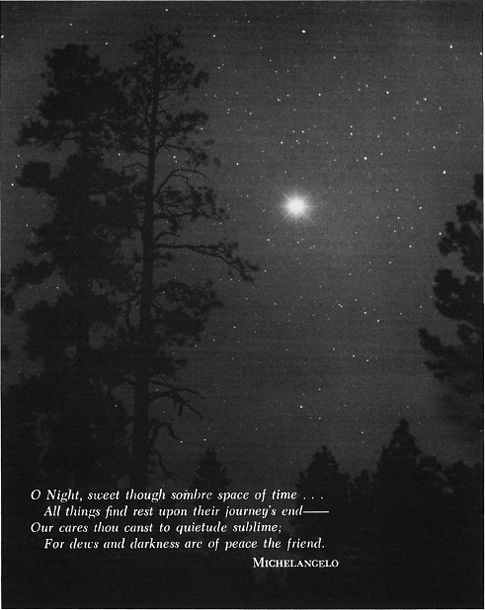
Frontispiece : Venus
Copyright © 1978 by Robert Burnham, Jr.
All rights reserved.
Burnham’s Celestial Handbook: Volume Three, Pavo–Vulpecula is a new work, first published by Dover Publications, Inc., in 1978.
INTERNATIONAL STANDARD BOOK NUMBERS:
paperbound edition: 0-486-23673-0
clothbound edition: 0-486-24065-7
Library of Congress Catalog Card Number:
77-082888
Manufactured in the United States by Courier Corporation
23673017
www.doverpublications.com
This is the third and final volume of the Celestial Handbook, covering the constellations Pavo through Vulpecula.
The format and arrangement of material remains the same as in the two preceding volumes. A list of symbols and abbreviations used appears in the first volume, beginning on page 98.
Throughout the Handbook, all positions are given for the Epoch 1950.0 to permit the direct location and plotting of objects on Norton’s Star Atlas and the Skalnate Pleso Atlas of the Heavens. A Constellation Index and Atlas Reference Table appears in the back of each of the three volumes.
In offering the complete Handbook to the world, the author wishes, once again, to thank all those who have offered assistance and encouragement, and have helped to make this book a reality.
Clear skies to you all !
Robert Burnham, Jr.
Flagstaff, Arizona
November, 1977
NOTE
Indexes covering all three volumes of the Celestial Handbook are to be found at the end of this volume: Index to Common and Popular Names and Other Designations, page 2134
Index to General Topics, page 2136
Index to Tables of Data in this Handbook, page 2138
The author wishes to express his deep appreciation to Evered Kreimer, Alan McClure, Kent De Groff, and David Healy, for the professional–quality astronomical photographs which these observers have generously contributed to the Celestial Handbook.
Grateful acknowledgment is rendered to the American Association of Variable Star Observers for their kind permission to use AAVSO charts and comparison magnitudes in designing the variable star charts in this book.
The poem by Tu Fu of the T’ang Dynasty, “Night Thoughts While Travelling”, on page 1627, is a translation by Kenneth Rexroth, from One Hundred Poems From the Chinese. All rights reserved. Copyright © 1971 by Kenneth Rexroth. Reprinted by permission of New Directions Publishing Corporation, N.Y.
The quotations from The Dream–Quest of Unknown Kadath by Howard Phillips Lovecraft, on pages 1141 and 1787, are reprinted from At the Mountains of Madness and Other Novels, by H.P.Lovecraft, published by Arkham House Publishers; Copyright 1939, 1943, 1964. Reprinted by kind permission of Arkham House Publishers, Inc., Sauk City, Wisconsin.
Grateful acknowledgment is also extended to the Directors of the Lick Observatory of the University of California, the Yerkes Observatory of the University of Chicago, the Lowell Observatory of Flagstaff, Arizona, and the Mount Wilson and Palomar Observatories of the California Institute of Technology, for their kind permission to reproduce the many fine astronomical photographs which appear in this book.
The author takes great pleasure in offering his special thanks and appreciation to Herbert A. Luft, whose unflagging interest and support has helped immeasurably to make the Celestial Handbook a reality.
Contents
LIST OF DOUBLE AND MULTIPLE STARS


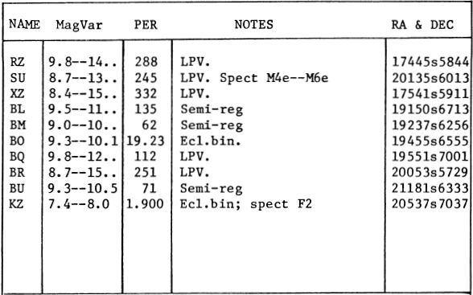
LIST OF STAR CLUSTERS, NEBULAE, AND GALAXIES

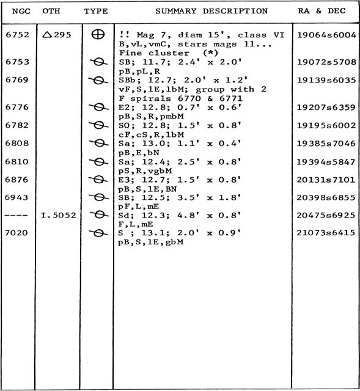
ALPHA
Name– The “Peacock Star”, honoring the bird sacred to Juno; the constellation name is of no great antiquity, however, as it was introduced by Bayer in the early 17th century. Magnitude 1.93; spectrum B3 IV; position 20217s5654. The computed distance is about 310 light years, and the actual luminosity about 1200 times the Sun. Alpha Pavonis shows an annual proper motion of 0.09”; the radial velocity is 1.2 mile per second in recession. Spectroscopic studies show that the star is a close binary with a period of 11.753 days.
BETA
Magnitude 3.42; spectrum A5 IV; position 20405s6623. The distance is about 160 light years and the actual luminosity about 90 times the Sun. The annual proper motion is 0.05”; the radial velocity is 6 miles per second in recession.
NGC 6752
Globular star cluster. Position 19064s6004, about 10° WSW from Alpha Pavonis. One of the finest of the globular clusters, though almost unknown to observers in North America or Europe owing to its far southern location. It was probably first observed by J. Dunlop in 1828, and with a total integrated magnitude of 7.2 ranks as the 7th brightest globular in the sky. In apparent size it possibly holds third place, only Omega Centauri and 47 Tucanae appear to exceed it. The total diameter is about 42′ on the best photographs, though the visual size is about 15′ or 16′ in most telescopes. “One of the gems of the sky” states E.J.Hartung. “On a clear dark night this is a most lovely object……a moderately condensed type of globular cluster, the central region about 3′ wide and the unusually bright outliers extending over 15′, involving an elegant pair (7.7+9.3, 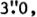 238°). Many of the brighter stars of the cluster are in curved and looped arms, and look distinctly reddish..” The cluster is among, the nearer globulars with a computed distance of about 20,000 light years and a true luminosity of close to 100,000 suns. NGC 6752 contains only two known variable stars, one of which has been known since 1897. The total integrated spectral type is about F6; the radial velocity is a very moderate 23 miles per second in approach.
GLOBULAR STAR CLUSTER NGC 6752 in PAVO. This object ranks among the dozen finest globular clusters in the sky.
Radcliffe Observatory
SPIRAL GALAXY NGC 6744 in PAVO. This is one of the largest of the barred spirals. The photograph was made with the 74–inch reflector at Mt.Stromlo Observatory in Australia.
PEGASUS
LIST OF DOUBLE AND MULTIPLE STARS
LIST OF VARIABLE STARS

LIST OF STAR CLUSTERS, NEBULAE, AND GALAXIES

DESCRIPTIVE NOTES
ALPHA
Name– MARKAB or MARCHAB, from the Arabian word for Saddle, though the term might also refer to a ship. Other Arabic names were Matn al Faras, the Horse’s Shoulder, and Yed Alpheras, the Horse's Forearm or Hand. Magnitude 2.50; spectrum B9 or A0 III; position 23023n1456. The star marks the southwest corner of the “Great Square of Pegasus”, the huge squarish figure about 18° · 14° that outlines the body of the Horse. Alpha Pegasi lies at a distance of about 110 light years, and has about 95 times the solar luminosity (absolute magnitude about –0.1). The annual proper motion is 0.07″; the radial velocity is 2.2 miles per second in approach, with slight but definite variations. The star lies in a rather blank part of the sky, lacking in faint stars; the interesting spiral galaxy NGC 7479, however, will be found about 2.9° almost directly south. (See photograph on page 1392)
Pegasus is, of course, the famed Flying Horse of Greek mythology, one of the most curious, but also one of the loveliest concepts created by the ancient myth–makers of the Greek world. In legend he was born from the blood of the Medusa, when that monster had been slain by Perseus, and his name, it is thought, comes from the Greek  or “Pegae”, the “Springs of the Ocean” at the place of his birth. The word 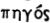 or “strong” has also been suggested as a possible source of the name. After his creation, the Winged Horse made his first landing on the rocky heights above Corinth, where the blow of his hoof caused the famous spring of Peirene to gush forth; the spot was sacred to the Corinthians, and Pegasus was held in special reverence by the inhabitants of the city. A similar tradition credited Pegasus with having produced the Fount of Hippocrene on Mt.Helicon. Pegasus appears on coins of Corinth as early as 550 BC, where he is shown in a curiously archaic style (Fig.1); some of the later issues, in high classic style, are among the finest of coin creations of the ancient world and are eagerly sought by collectors:
or “Pegae”, the “Springs of the Ocean” at the place of his birth. The word 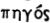 or “strong” has also been suggested as a possible source of the name. After his creation, the Winged Horse made his first landing on the rocky heights above Corinth, where the blow of his hoof caused the famous spring of Peirene to gush forth; the spot was sacred to the Corinthians, and Pegasus was held in special reverence by the inhabitants of the city. A similar tradition credited Pegasus with having produced the Fount of Hippocrene on Mt.Helicon. Pegasus appears on coins of Corinth as early as 550 BC, where he is shown in a curiously archaic style (Fig.1); some of the later issues, in high classic style, are among the finest of coin creations of the ancient world and are eagerly sought by collectors:
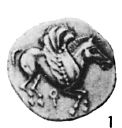

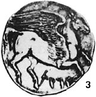
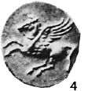
The coin shown in Figure 2 was struck in the early 4th Century BC at Ambracia, while the specimen shown in Fig.4 dates to about 320 BC and was minted at Lokroi in Bruttium. The style was adopted by many cities of the Greek world; the obverse of virtually all of these coins shows a classic head of Athena, wearing the traditional Corinthian helmet. Pegasus also is featured on some of the large bronze coins of Carthage, probably minted in Sicily during the final years of the city’s existence, before its total destruction by the Romans in 146 BC. (Fig.3)
Pegasus was tamed by Athena or Minerva according to Greek legend, and given to the Muses, in whose service he became the symbol of poetic inspiration; in another tradition he carried the thunder and lightning for Zeus. In another classic tale he became the steed of the Greek hero Bellerophon, Prince of Corinth, and slayer of the fearsome Chimaera, a most unlikely combination of lion, serpent, and goat. Bellerophon tamed the fabulous Flying Horse with the aid of Athena, after spending a night in prayer in her temple, and had many other fabulous adventures with the great horse. Eventually, however, Bellerophon became so bold as to attempt to fly to Olympus itself; the wiser Pegasus refused to attempt the flight and threw his rider to Earth. The tradition which connects Pegasus with the hero Perseus is of more modern origin, and is not supported by the ancient myths. The famous painting by Rubens, which depicts Pegasus present at the Rescue of Andromeda, is a part of this modem mythos; Shakespeare also refers in Troilus and Cressida to “Perseus’ horse”, evidently an allusion to Pegasus. In Greek writings Pegasus is often called simply “The Horse” or occasionally “The Divine Horse”; the Romans called it Equus Gorgoneus or Equus Ales, the “Winged Horse”; another popular title was Alatus or “The Winged One” which appears in the Alfonsine Tables. In other Latin manuscripts it is called Equus Medusaeus which requires no translation. In the 1551 edition of Ptolemy’s Almagest it is given as Equus Pegasus.
According to R.H.Allen, the constellation is identified as the Horse of Nimrod by ancient Jewish writers; the identification with the Archangel Gabriel is relatively modem, and has been attributed to Julius Schiller.
In the sky Pegasus appears turned over on his back with his body outlined by the Great Square (Alpha, Beta, Gamma, and the Alpha of Andromeda). His front legs are marked by Eta and Iota Pegasi, and his head by Epsilon; the great wings are not clearly indicated, but would lie more or less at the position of the “Circlet of Pisces”, some 10° below the southern edge of the Great Square.
BETA
Name– SCHEAT, from the Arabic Al Sa’id or Sa’d, the “Upper Part of the Arm” or possibly “The Foreleg”. Riccioli has it labeled Sdheat Alpheraz while Bayer has Seat Alpheras. Schickard’s title appears to be very corrupted Arabic: Saidol–Pharazi. Beta Pegasi is magnitude 2.50 (variable); spectrum M2 II or III; the position is 23014n2749. The star marks the northwest corner of the Great Square of Pegasus.
Scheat is an irregular red variable star, similar in behavior to Betelgeuse, but much less extreme in size and luminosity. It varies from magnitude 2.1 to about 3.0 in an irregular period. The star was one of the first to be measured with the beam interferometer on the 100–inch reflector at Mt.Wilson; the apparent angular size was found to be about 0.021″. At the computed distance this corresponds to about 145 times the diameter of the Sun. Beta Pegasi, like Betelgeuse, varies somewhat in size during the course of the light cycle; the maximum diameter may be about 160 times the diameter of our Sun. The true luminosity varies from about 240 suns up to about 500. If Beta Pegasi should replace our sun, the star would not quite fill the Earth’s orbit. E.J.Hartung (1968) comments on the fine appearance of the spectrum of this star, “with broad dark bands in red and orange, and a series of narrower bands in green, blue and violet.”
The computed distance is about 210 light years, the surface temperature about 3100°K, the mass about 5 solar masses, and the average density about one millionth that of the Sun. The star shows an annual proper motion of 0.23″ in PA 54°; the radial velocity is 5 miles per second in recession.
Two faint field stars are listed in the ADS catalogue as companions to Beta Pegasi, but these are optical attendants only, and do not share the proper motion of the bright star:

The AB separation is slowly increasing from about 80″ in 1828, while the AC distance is diminishing; both changes are the result of the proper motion of the bright star.
GAMMA
Name– ALGENIB, probably from the Arabic Al Janb, “The Side”, though some authorities derive it from Al Jonah, “The Wing”. Magnitude 2.84, spectrum B2 IV, position 00107n1454. The star marks the southeast corner of the Great Square of Pegasus. Gamma Pegasi is a giant star, at a computed distance of about 570 light years, and with an actual luminosity of about 1900 times that of the Sun (absolute magnitude –3.4.) The annual proper motion is about 0.01″; the radial velocity is 2.5 miles per second in recession.
One of the Beta Canis Majoris variables, the star has an unusually short period of 0.1517495 day, or about 3 hours and 38 minutes. As in all the stars of this type, the light variations are very slight, only a few hundredths of a magnitude.
The variable radial velocity of this star was first detected by K.Bums at the Lick Observatory in 1911. Owing possibly to the small amplitude of the variations, no further studies of the star were made until 1952 when D.H. McNamara and A.D.Williams at the University of California found the period to be remarkably short, only 3.63 hours. At the time this was the shortest period known for any Beta Canis star, but the star Theta Ophiuchi has since been found to have a period of 3h 22m. Light curves for Gamma Pegasi were measured in different colors by M.Jerzykiewicz in 1970, and it was found that the B magnitude shows slight but regular variations of less than 0.01 magnitude in a period of about 44 minutes, close to 1/5 the main period of the star. The V–B color index becomes smallest around the time of maximum light. Stars of this type are believed to be rather massive, young stars which are beginning to evolve away from the main sequence. (Refer also to Beta Canis Majoris, page 435)
The interesting eclipsing variable U Pegasi lies about 3.8° to the west and slightly north. (See page 1378)
EPSILON
Name– ENIF, from Al Anf, “The Nose”. Medieval Arabian charts sometimes label it Fum al Faras or “The Horse’s Mouth”. Magnitude 2.31, spectrum K2 Ib, position 21417n0939. The star is at a computed distance of about 780 light years, giving an actual luminosity of about 5800 times that of the Sun, and an absolute magnitude of –4.6. The annual proper motion is 0.025″; the radial velocity is slightly under 3 miles per second in recession. From the position on the H–R diagram, the estimated mass of the star is close to 10 solar masses.
Two faint stars in the field are not true physical companions to Epsilon; the further one, at 143″, has been mentioned in many observing books owing to the statement by Herschel that the star exhibits a curious optical phenomenon: “the apparent pendulum–like oscillation of a small star in the same vertical as the large one, when the telescope is swung from side to side..” Herschel suggested that the seemingly larger arc traversed by the small star was due to the greater time required for its faint light to affect the eye, so that “the reversal of motion is first perceived in the larger object”.
The fine globular star cluster M15 may be found in binoculars by sweeping an area about 4° to the northwest. (Refer to page 1383)
ZETA
Name– HOMAM, probably from the Arabic phrase Sa’d al Humam, the “Lucky Star of the Hero”, though Thomas Hyde derived it from Al Hammam, which seems to mean “The Whispering One”. According to R.H.Allen, the names Sa’d al Na’amah, “The Lucky Star of the Ostriches” and Na’ir Sa’d al Bahaim, “The Bright Fortunate One of the Two Beasts” were also in use among the Arabs. The Chinese, for some unknown reason, connected the star with thunder. Zeta Pegasi is magnitude 3.46, spectrum B8 V, position 22390n1034. The computed distance is about 210 light years, the actual luminosity about 145 times the sun, the annual proper motion is 0.08″, and the radial velocity about 4 miles per second in recession.
The 11th magnitude companion at 62″ was first noted by S.W.Burnham in 1879, but appears to have no real connection with the primary. The distance between the two stars is slowly decreasing from the proper motion of Zeta itself.
ETA
Name– MATAR, from the Arabic Al Sa’d al Matar, “The Fortunate Rain”. Magnitude 2.96, spectrum G8 II + F?, Position 22407n2958. Eta Pegasi is some 360 light years distant; the actual luminosity is about 630 times that of the Sun (absolute magnitude –2.2). The star shows an annual proper motion of 0.03″; the radial velocity is 2.5 miles per second in recession.
W.W.Campbell at Lick Observatory in 1898 found the star to be a spectroscopic binary with a period of 818 days and an eccentricity of about 0.155. The primary star is close to 1 AU from the center of gravity of the system and the spectroscopic companion appears to be an F–star of uncertain class.
A visual companion at 91″ is itself a very close pair of about 0.2″, but probably does not form a true physical system with the bright star. The faint pair was first resolved by S.W.Burnham with the 36–inch refractor at Lick in 1889, and has shown no definite change in PA or separation since that time.
KAPPA
Magnitude 4.27; Spectrum F5 IV, Position 21424n2525. The parallactic distance is close to 100 light years, giving a total luminosity of about 16 suns. The annual proper motion is 0.033″; the radial velocity is about 5 miles per second in approach.
The 11th magnitude companion at about 14″ has been known since 1776 when it was recorded by William Herschel; the PA has been decreasing slowly and the separation has increased about 2″ in the last century. The observed change can be accounted for by the known proper motion of the primary; thus it appears that the two stars form an optical pair only, and are not physically associated.
Kappa itself is a very close binary in rapid motion, discovered by S.W.Burnham in August 1880. Burnham wrote in 1891: “The extreme difficulty of measuring so close a pair seems to have deterred other observers, with a single exception, from doing anything with it…. Since I have been at Mt.Hamilton I have measured the close pair each year with the 36–inch refractor. During the measures of the past year it was extremely difficult, and was a severe test of the power of the great telescope with the very best atmospheric conditions.”
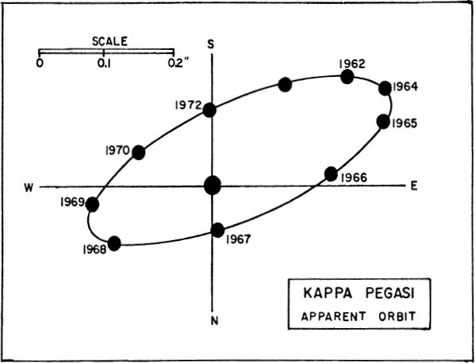
T.Lewis, at the Royal Observatory at Greenwich, in a paper written in November 1894, called attention to the fact that the star was the most rapid binary then known, and stated that Burnham’s note “naturally induced an inspection with the 28–inch refractor of the Royal Observatory, Greenwich, which showed them distinctly separated with a power of 1030, and our measures appear to confirm the remarkably short period”.
Modem measurements give the period as 11.53 years; periastron was in late 1955, and the separation reaches about 0.3″ at maximum, as in 1964. Individual magnitudes are 4.8 and 5.2; spectral types are F5 (subgiant) and about K0. From the computed orbit the masses of the two stars are 1.6 and 1.5; the absolute magnitudes are +2.3 and +2.7. Orbital elements, according to W.J.Luyten, are: Semi–major axis= 0.22″ or about 7.5 AU; Eccentricity= 0.30; Inclination= 109°; motion retrograde with periastron= 1909.86. In addition, the brighter star is a spectroscopic binary with a period of 5.9715 days.
MU
Magnitude 3.50; Spectrum G8 III; Position 22476n2420, about 4.5° SW from Beta Pegasi. The parallactic distance is about 100 light years, which gives the star an actual luminosity of about 30 suns. The annual proper motion is 0.15″; the radial velocity is about 8.5 miles per second in recession.
Magnitude 5.47; Spectrum F5 IV; Position 22274n0411, about 4.5° north of Zeta Aquarii which is the central star of the “Water Jar” in Aquarius. 37 Pegasi is a rather close binary system with a period of about 150 years, and a much elongated comet–like orbit which is inclined at only about 2° from the edge–on position. The magnitudes of the two stars have been measured as 5.79 and 6.95, and the apparent separation varies from less than 0.1″ at closest approach (1917) to about 1.1″ (1960). 37 Pegasi lies at a computed distance of about 165 light years, which gives a total absolute magnitude of about +2 and individual luminosities of about 10 and 4 suns. The system shows an annual proper motion of 0.15″; the radial velocity is less than one mile per second in recession.

S.W.Burnham, in the BDS catalogue (1906) wrote that “this system has been difficult to measure with ordinary apertures, and many of the observations are discordant and uncertain”. John Herschel, however, found it not difficult with 6–inch aperture and a power of 320, when near maximum separation. The orbital computations of three different authorities are compared below; the agreement is fairly good considering the difficulties of measurement.

Incidentally, the true dimensions of the 37 Pegasi system are fairly comparable to the size of the Solar System; the computed mean separation is close to 40 AU.
Magnitude 5.75; Spectrum G3 V; position 23595n2649, about 1.8° SSW from Alpha Andromedae in the NE corner of the Great Square of Pegasus. This is one of the best studied and most interesting of the binary systems, but unfortunately an object suited for observation only by large telescopes. It was discovered by S.W.Burnham with the 18–inch refractor at Dearborn in 1878. The period is 26.27 years with periastron occurring in 1962 and widest separation about 1970. The star is always a frustratingly difficult object because of the closeness of the pair and the brightness difference of at least three magnitudes.
Discrepancies in the reported magnitude of the faint star are probably the result of these observational difficulties. The ADS Catalogue gives the small star a magnitude of 11.0, Burnham has 12.5, and the Yale Catalogue of Bright Stars lists a magnitude difference of 2.7 for the two stars which would give the B component a value of 8.45. Orbital elements according to R.G.Hall (1949) are as follows: Period= 26.27 yrs; Semi–major axis= 0.83″; eccentricity= 0.38; inclination 50°; perihelion= 1910.11. At the known distance of about 40 light years the true separation works out to about 9.5 AU, fairly comparable to Saturn and the Sun. 85 Pegasi is thus one of the fairly close binary systems in space, and shows a large proper motion of 1.29″ annually in PA 140°; the radial velocity is 21.5 miles per second in approach. Very similar in type to our own Sun, the primary star has about 70% the solar luminosity; the computed absolute magnitude is +5.2.

The great peculiarity of the system is that the two masses are nearly equal, as shown by the observed orbit, and the fainter star thus violates the mass–luminosity relation to an unusual degree. 0.Struve and V.Zebergs in 1959 found masses of 0.82 and 0.80 suns for the two stars; approximately the same masses were derived by A.A.Wyller in 1956 in a study made with the 24–inch telescope at Sproul. R.G.Hall in 1948, adopting a slightly different parallax, found a smaller total mass of about 1.3 suns, but again found the individual masses nearly equal. Hall suggested that the anomalously large mass of the faint star might be partly explained by the supposition that the star is a close double; current studies suggest that the large discrepancy cannot be completely explained in this way; the faint star is underluminous by a factor of at least 15 and must be an extreme sub–dwarf. No spectrum of the faint component has been obtained, so this is another of those intriguing systems about which astronomers can say “more work needs to be done ”.
Two faint stars in the field at 75.5″ and 109″ are merely optical companions and do not share the large proper motion of the bright system.
U
Position 23554n1540; Spectra dF3 + dF3. This is one of the best known dwarf eclipsing binary systems, closely resembling W Ursae Majoris, and easily located about 3.8° west and slightly north from Gamma\Pegasi. It was discovered by S.C.Chandler at Harvard in 1894, and the first accurate light curve was obtained by E.C.Pickering as early as 1898; G.W.Myers at that time pointed out that “the distance of centers does not materially differ from the sum of the radii of the components”, implying that the two stars were close to actual contact.
In 1915 the first orbital elements of the star were derived by H.Shapley, using a series of observations obtained by O.C.Wendell in 1909. The period was shown to be 0.3747819 day, or 8h 59m 41.1s, just a few seconds short of 9 hours. During each revolution there are two eclipses, the primary minimum being only 0.1 magnitude fainter than the secondary one. The visual range of the system is 9.2 to 9.9; when observed photographically it is 9.7 to 10.3.
The U Pegasi system consists of two dwarf stars, both of spectral type dF3, separated by about 1.2 million miles center to center. The components are of very nearly equal size and mass, each star being about 60% the solar diameter and close to the solar mass. O.Struve (1949) derived a total mass of 1.98, with individual masses of 1.10 and 0.88; his study of the star at McDonald Observatory showed that the more massive star is in front at time of primary eclipse. The orbital period of the system has been slowly decreasing since discovery, suggesting that the masses of the stars are gradually being altered through an exchange of material. Slight but definite changes in the period of this system have been detected by S.Gaposchkin (1932), by 1379 R.LaFara (1951) and Z.Kopal (1956). In 1958 an extensive series of photoelectric observations was made by L.Binnendijk at the Flower and Cook Observatory of the University of Pennsylvania. The light curve of the star was found to repeat itself over a two–month period when measured both in the yellow wavelengths and the blue, but showed definite differences when compared with the light curve obtained in 1949 and 1950. A binary system of this type presents some interesting problems; the two stellar surfaces are so nearly in contact that considerable exchange of material must occur; not only does this slowly change the relative masses of the two stars and alter the orbital elements, but it undoubtedly affects the pattern of stellar evolution. In 1951, sudden flares of up to 0.3 magnitude were detected at the Tokyo Observatory, implying that outbursts of some sort are occurring on at least one of the components.
An object of the U Pegasi type is regarded by R.P. Kraft (1961) as the probable ancestor of the erratic dwarf novae of the SS Cygni class. From studies by Kraft and W.J. Luyten it is known that the two classes of objects have a very similar distribution in the Galaxy, and are comparable in masses and periods. In the U Pegasi system it appears that the primary star is being accelerated in its evolution toward the hot subdwarf state, which in the future will cause it to more and more resemble systems of the SS Cygni type. The observed flares may indicate that this process is now well underway.

The distance of the U Pegasi system is not accurately known as no measurable parallax has been detected. From the assumed total luminosity, the expected distance must be close to 360 light years. The annual proper motion is 0.09″ and the radial velocity (strongly variable) implies that the orbital velocities of the two stars are about 100 and 123 miles per second. The whole system shows a recession velocity of some 15 miles per second. (Refer also to W Ursae Majoris, SS Cygni, and U Geminorum. Some speculations concerning the relationship of these stars to the classical novae will be found in the article on Nova Aquilae 1918)
The sparse grouping of stars called NGC 7772 lies about 1.4° to the west and slightly north. Although plotted on Norton’s Atlas this little group does not appear to be a true cluster, and the members may not even form a physically attached group. The apparent size is about 1.6′ and the individual magnitudes range from 11 to about 14. (Refer to photograph on page 1393)
AG
Position 21486n1223, about 3.3° NE from the bright star Epsilon Pegasi. AG Pegasi is a curious and erratic variable of uncertain class, probably to be regarded as a member of the “symbiotic” or “Z Andromedae” type. The star first came to the attention of the astronomical world in 1894 when bright hydrogen lines were discovered in its spectrum by W.Fleming at Harvard. Later studies showed spectral peculiarities resembling those of the “permanent nova” P Cygni. Light variations of the star were first noticed about 1920, and a check of photographic sky survey plates has made it possible to trace the light changes back to 1890, with a few early visual estimates available for the period 1821– 1890. The star seems to have been a 9th magnitude object until about 1850, brightening over the next 20 years to about 6th magnitude. From studies by A.J.Cannon (1912) it appears that no definite changes in the spectrum were detected from 1893 to 1912. But in 1920 there began a series of remarkable progressive changes, and within two years the spectrum had developed the peculiar composite appearance which is the identifying characteristic of the symbiotic stars. The original spectrum was of type Be, but since 1922 the additional spectrum of an M-star has gradually developed. Bands of titanium oxide, first noticed in 1930, have increased in intensity over the last 40 years, and have become one of the major features of the star’s spectrum. According to P.W.Merrill in 1929, the bright lines of various elements show a cyclic change in intensity and position in a period of about 800 days. This may represent the orbital period of the system, though it is not known to which component the various spectral features should be attributed. The spectrum is further complicated by gas streams around the star and the evident presence of one of more gaseous shells expanding at different rates. Merrill in 1959 reported that at times 50 or more of the bright lines have been accompanied by dark absorption components on the side toward the violet; the typical “P Cygni feature”. “Change rather than stability is the rule in this odd star” wrote Merrill in 1959. “The velocity curve of a particular element may vary from time to time. For example, the average velocity of the bright hydrogen lines changed from a recession of 16 km/sec in 1915 to an approach of 27 km/sec in 1927. So far, however, all velocity curves have maintained the 800–day period. Since 1919 this has been about the only stable feature of AG Pegasi.”
COMPARISON MAGNITUDES: 20 Pegasi= 5.55; 17 Pegasi= 5.59 A= 6.08; B= 6.61; C= 6.73; D= 6.75; E= 7.59; F=7.75; G= 7.91; H= 8.05; J= 8.52;
In a study made in 1967, A.A.Boyarchuk of the Crimean Astrophysical Observatory found that the spectrum of the star showed typical Wolf–Rayet features combined with the spectrum of an M–star. He derived spectral types of WN6 and M3 III, and reported that the W–star resembles the nucleus of a planetary nebula. The star evidently began to show strong flare activity about 1850, and the resulting gaseous shells are now beginning to resemble a true planetary. The similar star FG Sagittae has shown the same type of activity during the last 80 years, and the surrounding nebula can now be seen on photographs. R Aquarii is another object in which the nebulosity is directly observable with modem telescopes.
The light variations of AG Pegasi have not been large in recent years. The general trend has been a slow fading from a maximum of about 6th magnitude in 1870, and the brightness of the star in 1961 was about 8.5. No sudden outbursts of the Z Andromeda type have ever been observed. The true distance and luminosity of the AG Pegasi system is not well known, as the star is too remote to show either a measurable parallax or proper motion. On the assumption that the M–star emits about half the light of the system, the total absolute magnitude may be in the range of –1.5 to –2; the distance must than be something like 3000 light years. (Refer also to Z Andromedae, R Aquarii, BF Cygni, and T Corona Borealis)
(NGC 7078) Position 21276n1157. A beautiful globular star cluster, discovered by Maraldi in September 1746 during the search for the de Cheseaux Comet of that year; the cluster was refound by Messier in 1764, and is generally considered to rank among the dozen finest objects of its type in the northern sky. Easily found about 4° NW of Epsilon Pegasi, the cluster has a total magnitude of about 6½ and may be glimpsed as a fuzzy star–like object in binoculars. Partial resolution is achieved in modest telescopes, though both Messier and Bode described the cluster as a round “nebula” containing no stars. Sir William Herschel, in 1783, was probably the first to realize the true nature of M15.
GLOBULAR STAR CLUSTER M15 in PEGASUS. This is one of the richer and more compact globular clusters. U.S. Naval Observatory photograph made with the 61–inch reflector.
Admiral Smyth found the cluster “not exactly round… under the best circumstances it is seen with stragglers branching from the central blaze…” “A very fine specimen of a completely insulated cluster” says T.W.Webb, “bright and resolvable, blazing in the center…a glorious object in a 9½” mirror…” H.Shapley confirmed the slightly elliptical shape of the cluster in about PA 35°; the oblate form is most evident in the rich central mass, the distribution of the stars becoming very nearly spherical in the outer portions. Long exposure photographs show several ill–defined dark patches similar to those seen in the great M13 cluster in Hercules. According to Webb, one of these, near the center, was originally discovered by Buffham with a 9–inch mirror.
M15 is one of the richer and more compact globulars, remarkable for the intense brilliance of its central core where the countless stars seemingly crowd together into a blazing nuclear mass; the central condensation is some 20″ in diameter. According to H.B.Sawyer (1947) M15 has a total apparent width of about 12’ and an integrated spectral type of F3. Photographically, the total integrated magnitude has been measured as 7.33, which puts it in 12th place in brightness in the list of known globulars. The cluster has an approach radial velocity of about 66 miles per second.
A large number of variable stars populate M15, 112 of these stars having been discovered up to 1973. The great majority of these stars are short period variables of the RR Lyrae class, all close to magnitude 15.9 (pg). About a fourth of these stars have been known since the studies by S.I.Bailey in 1897. One object, however, appears to be a Cepheid of type II, with a period of 17.109 days. Another unusual feature of M15 is the presence of a small planetary nebula (K648) on the northeast side of the cluster. This object, of photographic magnitude 13.8, and about 1″ in diameter, was found by F.G.Pease on plates made with the 100–inch telescope at Mt.Wilson in 1927, and in 1928 was found to show a continuous spectrum of type 0 with a few bright lines. From radial velocity measurements it appears certain that the nebula is a true member of the cluster. M15 was identified in 1974 as a source of X–ray energy, which suggests that the cluster may contain one or more supernova remnants, or possibly one of those completely collapsed stars or “black holes” so popular among writers on speculative cosmology. As of 1975, the clusters NGC 1851 in Columba, NGC 6441 in Scorpius, and NGC 6624 in Sagittarius are also known to be X–ray sources, so there is growing evidence that a very massive collapsed body of some sort may exist in the core of such clusters.
SPIRAL GALAXY NGC 7331 in PEGASUS. A system similar in type and size to our own Milky Way Galaxy. Palomar Observatory photograph made with the 200–inch reflector.
Shapley’s original studies gave a distance of about 42,000 light years for M15, a value which has not been too radically revised since the 1930’s. H.C.Arp in 1965 found the best modern value to be 10.47 kiloparsecs or about 34,000 light years. A study of the two color–magnitude diagrams suggests that M15 is about 1.7 times more remote than the Hercules cluster M13; this would give a distance of about 39,000 light years. From these results the total luminosity of the group is close to 200,000 times the Sun; the cluster diameter is about 130 light years. The most luminous members are red giants of absolute magnitude –2. (Refer also to the Hercules star cluster M13, page 978)
NGC 7331
Position 22348n3410. Spiral galaxy, located about 4.3° north and slightly west from Eta Pegasi. NGC 7331 is a galaxy whose photograph is often used in astronomy texts to illustrate the probable appearance of our own Milky Way system if seen from intergalactic space. It is a highly tilted spiral of type Sb, appearing in moderate telescopes as an oval mass about 10′ x 2½’ and with a total magnitude of about 10. The orientation is 15° or 20° from the edge–on position, and the heavy dust lanes bordering the west rim indicate that this is the closer side to our own galaxy. Many bright nebulous regions mark the outer arms, and A.Sandage at Palomar finds that the spiral pattern can be traced to within 12″ of the nucleus. From photometric studies the total integrated magnitude (pg) is 10.27; the integrated spectral type is G8. As seen in the sky the tilt of the long axis is toward PA 163°.
A detailed study of NGC 7331 has been made by V.C. Rubin, E.M. and G.R.Burbidge, D.J.Crampin, and K.H.Prendergast (1964). They describe the galaxy as similar in type and structure to the great Andromeda Galaxy M31, but about 23 times more distant. The apparent diameter is about 1/20 the Andromeda system, which implies a distance close to 50 million light years. Humason, Mayall and Sandage report a corrected red shift of about 656 miles per second. From a study of the radial velocity at various positions in the system, the total mass appears to be about 80 billion solar masses, out to a radius of 10 kiloparsecs (32,000 light years) from the center. The faint outer portions probably increase the total mass to about 140 billion suns. From the same studies the total absolute magnitude (pg) is about –21.2, and the total luminosity about 50 billion suns.
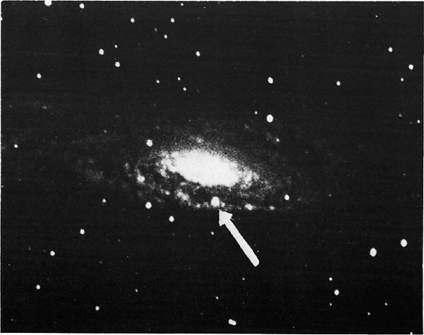
SUPERNOVA IN NGC 7331. This exploding star (arrow) appeared in the galaxy in the summer of 1959.
Lick Observatory
A supernova of apparent magnitude 12.7 (pg) appeared in the galaxy in 1959; it was located in the most prominent spiral arm, to the west of the nucleus. At the computed distance the derived luminosity of this star was about –18.
Half a degree from NGC 7331, to the SSW, is the tight little group of remote galaxies called “Stephan’s Quintet”, consisting of NGC 7317, 7318A & B, 7319, and 7320. This is the best known case of an apparent cluster of galaxies in which measurements show widely discordant red shifts. NGC 7320 has a red shift of about 480 miles per second, but the other four members show a mean value of about 3600. The obvious explanation would be that 7320 is simply a foreground system, but photographs seem to show that it is connected to the other members by faint tidal streamers. In addition, the degree of photographic resolution seems to imply that the other four members are not as remote as their red shift values would indicate. One tentative theory is that we may have here an expanding or exploding group; an analysis by G.R. & E.M.Burbidge (1959) shows that the Quintet must be disintegrating unless the individual masses are in excess of one trillion suns. The scatter in the individual velocity measurements seems to support the idea that this group may be expanding or disintegrating:
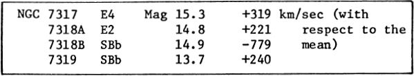
STEPHAN’S QUINTET. This small group of galaxies lies some 30′ south from NGC 7331. The largest member of the group is NGC 7320. Lick Observatory
GALAXY NGC 7814 in PEGASUS. An example of a precisely edge–on galaxy, showing a prominent equatorial dust–lane. Mt.Wilson Observatory photograph.
SPIRAL GALAXY NGC 7479 in PEGASUS. This S–shape barred spiral lies about 3° south of Alpha Pegasi. U.S. Naval Observatory photograph with the 61–inch reflector.
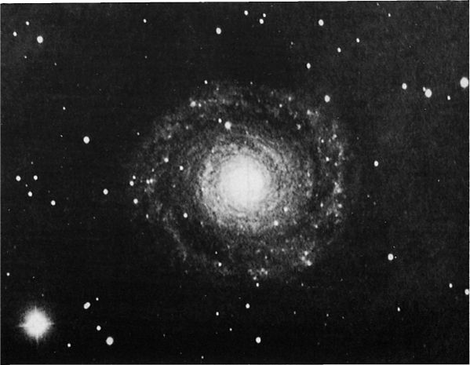
DEEP SKY OBJECTS IN PEGASUS. Top: The small cluster NGC 7772 photographed at Lowell. Below: The many–armed spiral galaxy NGC 7217 as photographed at Palomar.
PERSEUS
LIST OF DOUBLE AND MULTIPLE STARS
LIST OF VARIABLE STARS
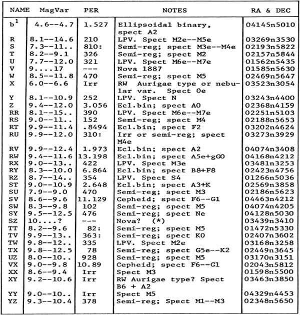
LIST OF STAR CLUSTERS, NEBULAE, AND GALAXIES

ALPHA
Name– MIRFAK or MARFAK; the star also appears on various star–maps as ALCHEMB or ALGENIB, evidently through some age–old confusion, as the latter name is also given to both Gamma Persei and Gamma Pegasi. Magnitude 1.79; spectrum F5 Ib; position 03207n4941. The star lies in the center of the constellation, and dominates the curving row of stars extending from Eta Persei to Delta and 48 Persei, a pattern often referred to as the “Segment of Perseus”. Alpha is the brightest star in the constellation; the name signifies “The Elbow”.
Like Hercules and Orion, the star pattern of Perseus was identified in many ancient cultures with prominent national heroes or gods. According to Lalande, the Egyptians regarded it as their god khem, while to the Persians it represented Mithras; Biblically minded star–watchers saw it as David with the Head of Goliath, or as St.George slaying the Dragon. The modern name was in use in the days of the classical Greeks, who also referred to the constellation as “The Champion”, “The Rescuer”, or occasionally ‘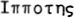, “The Horseman”. The Moorish name Almirazgual is from the Arabic Hamil Ras al Ghul, the “Bearer of the Demon’s Head”. Another Arabic name, kullab, refers to the hero’s weapon, and is probably the source of the Celeub or Chelub of the Almagest and Bayer’s Uranometria.
Perseus in mythology was one of the greatest of the ancient Greek heroes, the great–grandfather of Hercules and traditionally the ancestor of the Persians. Like many other ancient heroes, Perseus was of partly divine parentage; his mother Danae had been visited by Zeus in the form of a shower of gold. Owing to a prophecy that the son of Danae would slay his grandfather, King Acrisius of Argos, both mother and son were imprisoned in a wooden chest and cast into the sea. The chest, however, floated safely to the island of Seriphus, where it was found by the fisherman Dictys, father or brother of King Polydectes of the island. Here Perseus grew to manhood, and to eventually fulfill his destiny.
It was at the request of Polydectes that Perseus undertook his most famous exploit, the slaying of the fearsome Medusa, one of the three Gorgons whose glance turned men to stone. With the aid of Athena and Hermes, who supplied him with winged sandals, sword, and a helmet of invisibility, Perseus found his way to the realm of the Gorgons on the farthest shores of Oceanus, near the isles of the Hesperides, and slew the monster while looking at her reflection in his polished shield. Another tradition places the lair of the Gorgons in a “sea–girt cave” near Tartessus, the Biblical Tarshish on the southern coast of Spain, west of Gibraltar near modem Cadiz. It was while Perseus was returning from this adventure that he found the princess Andromeda chained to a rock on the Ethiopian coast as a sacrifice to the sea–monster Cetus, sent by the sea god to punish the kingdom for the boastful vanity of Queen Cassiopeia. Gods, even the best of them, seem to lack the most elementary sense of justice; they dispense punishments at random and appear to be quite satisfied as long as someone suffers sufficiently in order to “atone” for the original offense. Perseus rescued Andromeda, destroyed the monster, and, it is to be hoped, warned the vain Cassiopeia to be more careful in the future. Although these events presumably took place on the Ethiopian coast somewhere along the southern shore of the Red Sea, a great rock formation on the Israeli coast near Jaffa (Joppa) is also identified as the site of Andromeda’s rescue. Returning to the court of Polydectes, the hero turned the scheming king and all his noblemen to stone by showing them the Gorgon’s head. Dictys became king of the island, and the head of Medusa was presented to Athena who set it in the center of her shield.
According to another tradition, Perseus released the titan Atlas from his wearisome task of holding up the Heavens; he showed the giant the Gorgon’s head, and transformed him into a great rock (the Atlas Mountains) in southwest Morocco. Later, while attending the funeral games of the king of Larissa in Thessaly, Perseus fulfilled the prophecy made at his birth when he unintentionally struck Acrisius with a discus and killed him.
Many of the characters of the Perseus legend appear in the sky as constellations, including Perseus himself, Andromeda, Cetus the Sea–monster, Queen Cassiopeia, and King Cepheus. Perseus is one of the most extensive constellations, stretching from the borders of Cassiopeia to almost the Pleiades in Taurus. He is depicted standing, holding aloft the Medusa’s head with one arm and grasping his sword with the other. In art he usually appears in the same pose, as in the great statue by Benvenuto Cellini, completed about 1554 after nine years of labor, and now in the Piazza della Signoria in Florence. A similar composition by Antonio Canova, created about 1806, is one of the treasures of the Metropolitan Museum of Art in New York. Ancient coin portraits of Perseus are much rarer than those of Hercules; the most striking surviving specimens are the coins of King Perseus of Macedonia, last king of the line of Alexander, and who lost his throne to the Romans in 168 BC. King Perseus evidently regarded himself as a descendant or incarnation of the ancient hero, and had himself so depicted on his coins:
THE ALPHA PERSEI GROUP. This scattered cluster forms a splendid group for binoculars. Alpha is the bright star at upper left. Lowell Observatory 5–inch camera photograph.
Alpha Persei is a giant star, with an actual luminosity of over 4000 suns; the computed distance is about 570 light years and the absolute magnitude about –4.4. Both Mary Proctor and R.H.Allen have called the color “lilac” though to most modern observers it is merely white or even slightly yellowish. The star shows an annual proper motion of 0.04″ and the radial velocity is about 1 mile per second in approach. Small periodic shifts in the spectral lines have been detected in a cycle of about 4 days; it is not certain whether this indicates that the star is a close binary. In view of the very short period for so large a star, it seems more likely that the cyclic shifts result from pulsations in the atmosphere of a single star.
Lying directly in the Milky Way, Alpha Persei is the center of a fine field of stars which form a rich and brilliant group for small telescopes; the region appears as a large and scattered cluster even without optical aid, and is truly splendid in good binoculars. Modern studies confirm the reality of this cluster as a true moving group in space. According to O.Heckmann and K.Lubeck (1958) 124 members are now recognized, though the membership of perhaps a dozen are uncertain. In a study made in 1971 by W.W.Morgan, W.A.Hiltner, and R.F.Garrison, 106 stars were accepted as members; the resulting color–magnitude diagram (below) is plotted from their measurements made at the McDonald Observatory. With the exception of Alpha itself, the cluster stars appear to form a well defined main sequence in which the earliest type stars are spectral class B3 with absolute magnitude –1.0, and the latest are about G3 with absolute magnitude about +4.6. The entire group lies about 175 parsecs from the Sun, and is moving about miles per second in the general direction of Beta Tauri or PA about 140°.
After Alpha itself, the most prominent members are Psi, 30, 34, 29, and 31 Persei; the bright stars Delta and Epsilon show approximately the same motion. At the present rate of motion, however, the group will require about 90,000 years to change its position by 1° in the sky.
BETA
Name– ALGOL, the “Demon Star”, the most famous of the eclipsing variables. Magnitude 2.15 (variable); Spectrum B8 V; Position 03049n4046. The name is from the Arabic Al Ra’s al Ghul, “The Demon’s Head”. To the writers of classical times the star represented the head of Medusa held by Perseus in the mythological outline of the constellation. This is the Gorgoneum Caput of Vitrivius and the Caput Gorgonis of Hyginus; Manilius, in the days of Augustus, called it Gorgonis Ora. The Hebrews, according to R.H.Allen, knew the star as Rosh ha Satan or “Satan’s Head”, but in some other traditions it is identified with the mysterious and sinister Lilith, the legendary first wife of Adam. On 17th Century maps the star often appears with the label Caput Larvae, “The Spectre’s Head”. Ancient and medieval astrologers considered Algol the most dangerous and unfortunate star in the heavens, which seems to suggest that its strange variability might have been noticed in antiquity; this reasonable conjecture, however, remains unsupported by any other real evidence.
In Greek and Roman tradition, Medusa was the most famous of the three Gorgons, the serpent–haired sisters whose glance was literally petrifying, and who, as the bright schoolboy wrote, “looked like women, only more horrible”. The gorgon legend is of very great antiquity, as we find them mentioned in Book II of the Odyssey, which is thought to date from the period of the 9th – 6th centuries BC. The three sisters, it would seem, had been guilty of the same sin as Cassiopeia, and had angered the gods by their excessive vanity. For the next few centuries they found themselves with a great deal of leisure time in which to ponder the mysteries of divine retribution as they rested on the wet sea–rocks of the farthest shores of Oceanus, thoughtfully combing their snakes. Medusa, according to a curious feature of the legend, was the only one of the three who could be killed; her two sisters were immortal. She was eventually slain by the hero Perseus, who avoided the monster’s poisonous glance by looking at her reflection in his polished shield; from the gorgon’s blood sprang forth the winged horse Pegasus, whose strange origin has suggested a flock of allegorical interpretations. Medusa’s head was later presented to Athena, who had it set, as a rather impressive centerpiece, in her shield. The gorgon’s head, about six times natural size, was one of the striking features of the great statue of Athena which once graced the Parthenon at Athens. Although this particular statue vanished centuries ago, the Corfu Museum still displays its own carving of the Medusa (Fig.3) from the west pediment of the Temple of Artemis on Corfu, dating from the early 6th Century BC. This relief resembles most of the early coin portraits of Medusa (Fig.1) which are done in a very stiff and archaic style and portray the snaky enchantress as a hideous monstrosity, complete with fangs and a long protruding tongue. These grotesque representations must be classed among the few real failures of Greek art; to the modern mind they seem about as frightening as a Halloween mask designed by a six–year–old child.


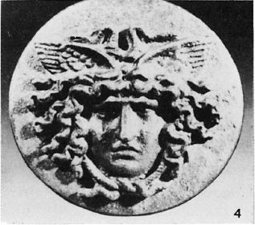
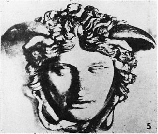
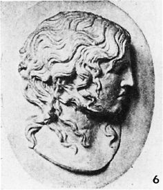
(1) Coins from Neapolis, c.450 BC. (2) Greek Sculpture from Syracuse. (3) Gorgon from Temple on Corfu, 6th Cent. BC. (4) Roman Bronze Pyxis Lid, 1st Cent. AD. (5) The Rondanini Medusa. (6) “Dying Medusa”, National Museum, Rome.
In time, however, the Greeks seem to have learned. By Hellenistic times the Medusa has become a figure of strange and sinister beauty, the prototype perhaps of the supernaturally lovely and infinitely terrifying “witch queen” or “white goddess” who haunts the pages of H.Rider Haggard, A.Merritt, and other writers in the classic “lost civilization” tradition. Edgar Allen Poe, in many of his somber tales, followed the ancient tradition of what might be called the “Medusa syndrome”; that curious but infinitely fascinating juxtaposition of beauty and horror, love and death, and the shadow of inexorable fate; we find it again in the eternal appeal of the story of Cleopatra, and in the Tristan and Isolde legend, the “most splendid love story of the western world”. Shelley, after seeing the famous painting of the Medusa in the Uffizi Gallery, put it into words perhaps as effectively as any poet has ever done:
“Its horror and its beauty are divine.
Upon its lips and eyelids seem to lie
Loveliness like a shadow, from which shine,
Fiery and lurid, struggling underneath,
The agonies of anguish and of death….”
The painting which inspired these lines was in Shelley’s time attributed to Leonardo da Vinci, but is now thought to be the work of some unidentified member of the school of Caravaggio. Another widely known painting of the Medusa, certainly one of the most repellent works of art in existence, was created by Peter Paul Rubens in the early 17th Century and now graces – or disfigures – a wall of the Kunsthistorisches Museum in Vienna. The ancient Greek vase painters often showed their warriors carrying shields adorned with the figure of the gorgon; Achilles, Patroclus, and other heroes of the Trojan War are depicted in this way.
The much–admired “Rondanini Medusa” (Fig.5) in the Glyptothek in Munich, is one of the most effective “modem” interpretations of the theme, though its actual age is not definitely agreed upon; usually thought to be Hellenistic in style, it could be a later Roman or Renaissance copy. Equally mysterious is the “Dying Medusa” (Fig.6) in the National Museum in Rome, possibly created, according to some scholars, for the great Altar of Zeus at Pergamum in the 3rd Century BC. Even the identification of this haunting portrait as Medusa has been questioned, since the expected serpentine hair is only subtly suggested, if at all. This, however, is equally true of the Rondanini portrait.
The gorgon’s head was an immensely popular subject in Greek and Roman art, and appears on ancient amulets and talismans, wall reliefs, coins, household objects, and on ornate sarcophagi well up into the Middle Ages. Joan Evans of St.Hugh’s College, Oxford, in the book Magical Jewels of the Middle Ages and the Renaissance (1922) stated that “the majority of extant Roman camei are carved with the prophylactic head of Medusa”, and that English manuscripts of the High Gothic period refer to the use of the gorgon’s head on magical engraved gems. A 12th Century manuscript in the collection of the Bodleian Library contains the following intriguing passage:
“Borallus vel Corallus vocatur lapis quidam qui valet ad incantaciones et derisiones et iras si in eo sit nomen hoc nocticula scultum et serpens scilicet gorgon et valet scilicet ad omnes inimicos, et ad victoriam et plagam et pavorem…”
One who engraves the name and form of the gorgon on a gem of coral, according to this text, will receive magical protection against injury and the attack of enemies.
Algol is one of the most famous variable stars in the sky, and its name seems to suggest that the light changes were known to the medieval Arabs. The first definite statement on the matter, however, was made by the Italian astronomer Geminiano Montanari of Bologna, about 1667. Although both Maraldi and Palitzsch confirmed the occasional fading of the star, the regularity of the period was first determined in 1782 by John Goodricke; he suggested that the periodic dimming might be attributed to the partial eclipse of the star by a dark companion revolving about it. Thus did astronomers become aware of the existence of “eclipsing binaries”. The theory was generally accepted, but remained a hypothesis until 1889 when H.C.Vogel at Potsdam proved it to be true by spectroscopic analysis. Algol is the most suitable object of its type for amateur observations, as the light changes may be readily followed with no optical aid whatever. The star is normally of magnitude 2.1 but at intervals of 2.86739 days it fades away to magnitude 3.4 and then slowly brightens again. The entire eclipse lasts some 10 hours; the exact period between minima is 2d 20h 48m 56s.
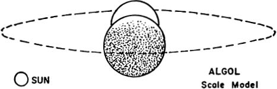

At a distance of about 100 light years, Algol is one of the nearest of all the eclipsing binaries, and has certainly been one of the most thoroughly studied. Yet the star still presents certain puzzles which await solution. One difficulty is the invisibility of the eclipsing component; completely lost in the glare of the bright primary, it has never been seen visually, and was detected spectroscopically for the first time as recently as 1978, at the McDonald Observatory. From the combined results of studies of the light curve, radial velocity measurements, and the combined spectra, our present picture of the system may be summarized as follows:
The primary star is a white B8 main sequence star about 100 times the solar luminosity, and close to 2.6 million miles in diameter. The mass of the star is not definitely determined, but is most probably between 3½ and 4 times the solar mass. The “dark” companion is known to be relatively dark only by comparison to the primary; actually it must be a half magnitude or so brighter than the Sun. The diameter is slightly over 3 million miles. From the computed size and luminosity the spectral type is most probably late G or early K. The mass is uncertain, but is not likely to be much greater than 1 solar mass. This fainter star seems to have the characteristics of a typical subgiant.
The orbit of the bright star is well determined from spectroscopic studies, and it is found that the bright star is just over a million miles from the center of gravity of the system. The faint star, being less massive, has a larger orbit around the gravitational center, and the true separation of the two stars is probably about 6½ million miles, center to center. From spectroscopic studies the eccentricity of the system is about 0.033, and the inclination about 82°. At primary eclipse, approximately 79% of the bright star is hidden by the larger companion. A slight secondary minimum midway between the eclipses, is noticeable on the light curve, and is produced when the companion is partly eclipsed by the bright primary. Thus the relative luminosities may be deduced from the derived orbit and the relative depths of the two minima; this makes it evident that the companion is not really a “dark” star at all.
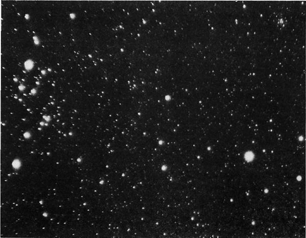
ECLIPSE OF ALGOL, March 15, 1977. The star appears near minimum (top) and at normal light (below). Photographed by R.Burnham, Jr., with a 1.7–inch Xenar lens.
According to a study by G.Hill, J.V.Barnes, J.B. Hutchings, and J.A.Pearce of the Dominion Astrophysical Observatory (1971), the masses and luminosities for the components of the Algol system are close to the values in the following table:

In another study, made with the 100–inch reflector, A.S.Meltzer of Princeton University derived the results given below:

The discrepancy in the derived masses is partly due to the uncertainty in the exact distance; measured parallaxes range from 0.03″ to about 0.041″, giving a range of from 101 light years down to about 79. Algol shows a very small annual proper motion, less than 0.01″; the radial velocity is about 2.5 miles per second in recession with large variations.
Some additional facts of interest appear from a study of the light curve. It will be noticed that the light is not constant at maximum, but continues to rise slowly after the end of primary eclipse, reaching a peak just before the slight secondary eclipse. This is explained as a reflection effect; the faint star reflects light from the primary and shows moon–like phases as it revolves in its orbit. The “full moon” phase must obviously come when the fainter star is seen beyond the brighter one, so that the whole illuminated face is turned toward the earth. This moment comes just before and after secondary eclipse, so it is naturally at this time that the combined light of the system is at a maximum. A study of this effect shows that the faint star appears about 1.7 times brighter on the side turned toward the primary.

ALGOL, photographed with the 13–inch camera at Lowell Observatory on January 27 and 28, 1965. The star appears at normal light (top) and at primary minimum (below).
Another effect, called limb darkening, also slightly alters the form of the light curve. Limb–darkening is the result of the greater thickness of the star’s atmosphere lying along the line of sight at the rim of the disc; this causes the disc of any star to appear brighter in the center than at the edge. Since the limb of a star is occulted first during a stellar eclipse, the loss of light at first appears gradual, but grows increasingly more rapid as the brighter central portion of the disc is hidden. The light curve of an eclipsing binary shows this effect.
Algol has been identified as a source of radio energy by C.M.Wade and R.M.Hjellming at the National Radio Astronomy Observatory in Green Bank, Virginia. They state that the radio emission is “best described as erratic, with occasional periods of strong flaring and long quiescent periods”. The authors suggest that the radio flares are possibly the result of sudden changes in the stellar structure, best described as “starquakes”. “The sudden energization of a large and very hot thermal plasma would be the basic source of the typical radio flares”. Radio emission has also been detected from red giant stars, as Betelgeuse and Antares, as well as from red dwarf flare stars of the UV Ceti type.
DISTANT COMPONENTS OF THE ALGOL SYSTEM. The fact that the Demon Star is not a simple two–star system was recognized as early as 1869. For nearly a century it has been noticed that the period of the eclipsing pair is subject to small but definite changes. Modem studies show that the major axis is gradually changing its orientation in space in a period of about 32 years; an analysis of this effect proves the existence of a third star in the system, and the possibility of a fourth companion has been suspected.
The third star, called “Algol C”, has now been detected spectroscopically, and has the characteristics of an F–type star of the main sequence. It appears to be at least a magnitude brighter than our Sun, and is definitely more luminous than the “dark” star of the eclipsing pair. It revolves about the AB pair in a period of 1.862 years, at a distance of about 50 million miles. P.van de Kamp finds that the orbit of the third star is not in the same plane as the eclipsing pair; a study in 1951 gave the inclination as about 63° with considerable uncertainty. The orbit of the A–C system is also more eccentric (about 0.21) than the eclipsing pair.
Of the suspected fourth star, Algol D, little is known, except that the period about the system has been calculated at about 188 years. Studies in 1971, however, cast some doubt on the reported perturbations from which this figure was derived, and there appears to be no definite evidence that the fourth body actually exists.
EVOLUTION OF THE ALGOL BINARIES. A peculiar feature of the Algol system, shared by other binaries of the type, is that the fainter and less massive component has evolved to the subgiant stage, while the primary remains a main sequence object. This is an evolutionary paradox, for if the stars are of the same age, it should be the brighter and more massive star which evolves more rapidly.
Fred Hoyle has suggested an interesting and plausible solution. He assumes that the fainter star was originally the more massive and luminous of the pair. As it began its evolutionary expansion, it lost great quantities of matter to the close companion. It thus grew fainter as it evolved to the subgiant stage. At the same time the companion grew more brilliant as the result of its increased mass. The small separation of an Algol–type binary makes this interpretation seem quite logical, and it is fairly evident that a similar sequence of events is occurring also on systems of the Beta Lyrae type. (Refer also to Beta Lyrae, U Cephei, and U Sagittae)
Observers of Algol will find tables giving predicted times of minima in the yearly Handbook of the British Astronomical Association; predictions for each month are also carried in Sky and Telescope magazine.
GAMMA
Magnitude 2.91; Spectrum G8 III and A3 V; Position 03012n5319. The star is labeled “Algenib” on some star charts, but this name is also given to both Alpha Persei and Gamma Pegasi. The star is thought to be about 150 light years distant, but there is some uncertainty, as the distance derived from a direct parallax is about double the value found from the luminosity criteria. The total absolute magnitude, from the spectral types, should be about –0.4; the annual proper motion is less than 0.01″; the radial velocity is about 1 mile per second in recession.
Gamma Persei is a very close and difficult binary star with an orbital period of 14.647 years; the orbit was originally determined spectroscopically, but it may be seen as a visual pair in large telescopes when at greatest separation, about 0.4″. The widest separation occurs in 1954, 1969, 1983, etc.; the apparent orbit is a nearly edge–on ellipse, with the true separation varying from 3 AU (1947) up to about 20 AU (1954). D.B.McLaughlin, in his detailed study of the system, found the following values for mass, luminosity, etc:
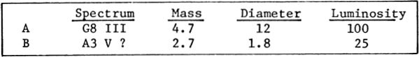
The primary of the system thus resembles the brightest component of Capella, while the fainter star closely matches Sirius. A third star, at 57″ and magnitude 11, is not known to be a true physical companion to the system.
About 4° north of Gamma Persei is the radiant point of the very dependable Perseid Meteors, which reach their maximum each year on August 10––12. The Perseids are celestial debris from the Swift–Tuttle Comet (1862 III), but seem to be so evenly distributed around the orbit that the number remains very nearly the same from year to year; at maximum about 60 per hour may be expected. The comet itself has a computed period of about 120 years, with a probable uncertainty of several years either way. The Perseids are sometimes called The Tears of Saint Lawrence in honor of the early Christian martyr whose feast day is August 10.
DELTA
Magnitude 3.00; Spectrum B5 III; position 03394n4738, about 3½° SE of Alpha Persei. The star is a bluish giant over 1700 times more luminous than our Sun (absolute magnitude –3.3) and lies at a computed distance of about 590 light years. Delta Persei seems to show about the same space motion as the Alpha Persei group and may be a member of that aggregation. The annual proper motion is 0.05″; the radial velocity is 5½ miles per second in approach.
Variations in the ultraviolet emission of this star have been detected by the 0A0–2 satellite in July 1971. According to M.R.Molnar of the Laboratory for Atmospheric and Space Physics, “although these observations are insufficient to determine the exact period and nature of the photometric variations, the amplitude is on the order of 0.03 magnitude and the period may be around one day”.
EPSILON
Magnitude 2.88; Spectrum B0 or B1 V; position 03545n3952, about 8° east of Algol. Epsilon Persei is another B–type giant star, some 2500 times more luminous than our Sun (absolute magnitude –3.7) and lying at a computed distance of about 680 light years. The star shows an annual proper motion of 0.04″; the radial velocity is less than 1 mile per second in approach.
For the small telescope, the star is a visual double with an 8th magnitude companion lying about 9″ distant. Webb calls the colors “greenish and bluish–white” while E.J.Hartung finds them “pale yellow and slate–coloured”; the spectral type of the faint star is B8. This is a common motion pair, but has shown no definite change in separation or PA since the early measurements of F.G.W.Struve in 1832. The projected separation is about 2000 AU. “Not an easy double” says C.E.Barns. Although lying some 10° from the Alpha Persei group, Epsilon shows about the same space motion, and is probably an outlying member of that large aggregation. The primary star is also a spectroscopic binary of uncertain period.
ZETA
Magnitude 2.83; Spectrum B1 Ib; position 03510n3144, in the Foot of Perseus, about 8° north of the Pleiades cluster in Taurus. This is one of the most luminous stars in Perseus and lies at an estimated distance of about 1000 light years; the actual luminosity is about 6300 times that of the Sun, and the computed absolute magnitude about –4.7. Zeta Persei shows an annual proper motion of 0.02″; the radial velocity is 13 miles per second in recession.
For the small telescope the star has several faint companions; the 9th magnitude star at 12.9″ seems to share the proper motion of the primary, though the projected separation is about 4000 AU. Webb calls the colors greenish white and ashy. If the derived distance is correct, the faint star has about 13 times the luminosity of the Sun; no spectrum appears to have been obtained for the companion.
Zeta Persei is the brightest member of the stellar association “II Persei”, an expanding group of bright 0 and B stars which appear to be moving outward from a common center at a velocity of about 12 km/sec. It would seem that this group must be exceedingly young on the astronomical time–scale, since expansion to the present size would have required scarcely more than a million years. The Zeta Persei group is thus of great interest to astronomers who are specializing in problems of stellar formation and evolution. Among the brighter members of the group are Omicron Persei, Xi Persei, 40 and 42 Persei, the double star ∑448, and about 15 other stars brighter than 6th magnitude. The expansion of the group is illustrated by the diagram on page 1422, where the length of the arrows represents the motion for each star for the next half–million years; the diagram is based on a study by A.Blaauw at Palomar. Known members of the Zeta Persei group extend over an area about 100 light years in diameter.
ZETA PERSEI REGION. Zeta is the brightest star on the print; Xi Persei and the nebula NGC 1499 are at the top. Lowell Observatory 5–inch camera photograph.
Some very conspicuous nebulosity still exists in the group, implying that star formation may not be completely ended in this region of space. Omicron Persei is involved in the faint cloud IC 438; the star itself is a B–type ellipsoidal variable and also has a close visual companion. Xi Persei, on the north edge of the association, is the earliest type star in the group with a spectral class of 07e; it also appears to be the illuminating star for the huge “California Nebula” NGC 1499 which lies just to the north and which evidently shares the outward expansion of the group. A difficult object visually, the nebula extends over a 2½° field, and shows much filamentary detail on redsensitive long exposure photographs.
The position of the mysterious disappearing star SZ Persei is about 2.6° to the NNW of Zeta Persei. (See page 1426)
RHO
Magnitude 3.30; Spectrum M4 II or III; position 03020n3839, about 2¼° south of Algol and slightly west. The star is a semi–regular variable resembling Alpha Herculis; a primary cycle of about 33 days is given in the Yale Catalogue of Bright Stars (1964) while the Moscow Variable Star Catalogue reports a probable period of about 40 days. At least one much longer cycle of about 1100 days seems to be involved. The variations, never very sudden, have a total amplitude of about 0.7 magnitude in the visual. From a direct parallax measurement, Rho Persei appears to be some 260– 300 light years distant, which gives it a mean absolute magnitude of close to –1. The annual proper motion is 0.17″ in PA 129°; the radial velocity is about 17 miles per second in recession.
THE CALIFORNIA NEBULA. This is NGC 1499, which lies at the north edge of the Zeta Persei Association. Photographed in red light with the Lowell Observatory 13–inch camera.
Rho Persei shows very nearly the same space motion as the interesting binary Zeta Herculis. Dr.O.J.Eggen has made a search for other possible members of this group and and has identified about a dozen stars which appear to show the same motion, including Iota Reticuli, Beta Hydri, TV Piscium, 84 Virginis, Phi–1 Lupi, and Epsilon Octantis. As the presumed members are scattered well around the sky the reality of such a “group” remains questionable.
SZ
Suspected nova. Position 03439n3410, about 1° ENE from 40 Persei, and some 10° due north of the Pleiades in Taurus. This is the star BD+33°715, which appears on the BD charts (1862) as an object of magnitude 9.5. On a photograph made in October 1891 it could not be found, but was seen again at about 10th magnitude in 1894. In 1908 it had apparently vanished once more. Aside from these few observations, virtually nothing is known about this star, which may be a recurrent nova or an erratic type of variable. No star brighter than 14th magnitude exists at this position on plates made from 1959 to 1976.
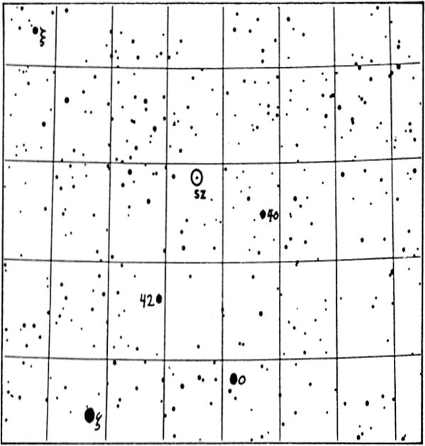
Nova Persei 1901. Position 03278n4344, about 4½° NE of Algol. The first bright nova of the 20th Century, first noticed on February 21, 1901, by the amateur astronomer T.D.Anderson of Edinburgh, Scotland. At that time the star was of the 2nd magnitude, but within 2 days it had increased its light more than 6 times, and attained its maximum brilliancy of magnitude 0.2 on February 23.
The new star began to fade almost immediately, and had fallen to magnitude 2 by February 28. It dropped about 4 magnitudes in the first three weeks, then began a peculiar series of oscillations with a perid of about 4 days and an amplitude of about 1.5 magnitudes. Sir Robert Ball of the University Observatory at Cambridge gave an amusing account of his experiences during the oscillation phase of Nova Persei; one night he went out on his lawn to show some visitors the new star but it had disappeared from view; two nights later he invited other friends to “observe the star which had disappeared” but when they looked, there it was “as large as life”. Two nights later other visitors were invited to see the star that had apparently come to life again so miraculously, but it had disappeared once more!

NOVA PERSEI Identification Chart, from a 13–inch telescope plate made at Lowell Observatory. The circle is 1° in diameter with north at the top; stars to about 14m are shown.
About four months after maximum the oscillations ceased and the star, then at 6th magnitude, faded slowly from sight.
Previous photographs of the region of Nova Persei showed that the star had been a 13th magnitude object up to three days before the outburst. At the maximum it was some 200,000 times more luminous than our Sun, an increase of 13 magnitudes in only a few days. The computed distance of the star was about 1300 light years which implies an absolute magnitude of about –8.4 at the peak brightness.
A few months after the appearance of the nova, photographs were taken which showed a faint area of luminosity surrounding the star; this nebulous aura was probably first noticed by Dr.Max Wolf at Heidelberg in the spring of 1901. Successive plates revealed that this nebulosity was growing at the astonishing rate of about 2″ per day, an expansion which, at the assumed distance of the star, corresponded to a speed about equal to the velocity of light! Evidently the light of the nova was merely illuminating a dark nebula which had already existed, and the apparent expansion of the nebula was actually due to the light of the star traveling outward. From an analysis by P.Couderc (1939) it seems that the illuminated nebula probably had the form of a thin sheet of material oriented “flat–side–on” as seen from the Earth and lying slightly closer to us than the star itself. Such a “light echo” seems to be unique among novae, though several diffuse nebulae show rapid changes which seem to be attributable to a similar process. NGC 2261 in Monoceros (Hubble’s Variable Nebula) is probably the most notable case.
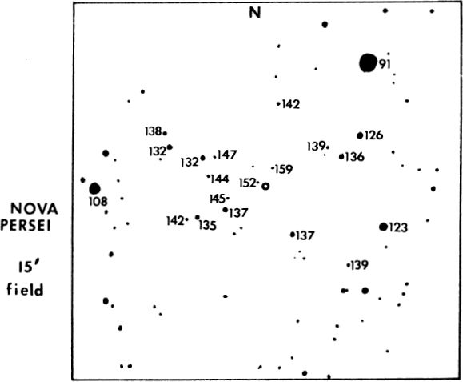
Almost 15 years after the outburst, the actual nebular shell around Nova Persei finally became visible; its appearance in 1949 is shown in the photograph on page 1431. This shell is a portion of the outer layers of the star, blown off into space during the explosion at a velocity of about 750 miles per second. The existence of this shell was known from spectroscopic analysis, and it was expected to eventually become visible in the telescope. Similar nebular shells were photographed surrounding Nova Aquilae 1918 and Nova Herculis 1934; these resemble the planetary nebulae superficially, but are rather short–lived phenomena, usually vanishing after a few years. A peculiar fact about the shell of Nova Persi was its unsymmetrical appearance, suggesting that the matter had been ejected chiefly from one hemisphere of the star. Still expanding slowly, the cloud is now gradually fading; the expansion rate has been fairly uniform at about 0.4″ per year.
GK Persei still shows the largest light variations of any of the former novae which have been thoroughly studied. It is usually a 13th magnitude object, but may brighten to nearly 11.0 or fade to 14.0; there does not appear to be any regular periodicity. The star has been quite active in recent years; in August 1966 it rose to 11th magnitude, with another short outburst in September 1967. After an erratic period of oscillations it faded to 13th magnitude but in January 1975 rose again to 12.0 over the short interval of 6 days. The color of the star is equivalent to class 0 or early B, with emission features; the star may be classed as a subdwarf but not a true white dwarf; the absolute magnitude is near +5.
NOVA PERSEI 1901. The nebulous shell is well shown in this photograph made with the 200–inch reflector at Palomar, almost 50 years after the outburst of the star.
Observers with adequate telescopes will find it rewarding to follow any future variations of GK Persei. The identification field on page 1429 shows a 15’ area centered on the star, with stars to about 16th magnitude shown. Comparison magnitudes, courtesy of the AAVSO, are given with decimal points omitted to avoid confusion with star images; thus “137″ indicates a magnitude of 13.7.
The most important discovery about novae in recent years has been the finding that some of the post–nova stars are close and rapid binaries. Nova Herculis 1934 was the first to be so identified; the period is a mere 4.65 hours. Nova Aquilae 1918 is a similar system with a period of about 3h 20m. GK Persei now joins the list of former novae recognized as double stars; the period is 1.904 days but the components, in this case, do not appear to form an eclipsing binary system. R.P.Kraft (1963) found the spectrum composite, consisting of a “blue continuum with emission lines of hydrogen, helium, ionized oxygen, and the absorption lines of a late–type star”; the derived spectral types are sdBe and about K2 IV, with computed masses of at least 1.29 and 0.56 respectively. From its color, luminosity and mass, the explosive blue component would appear to have a density of several hundred times that of the Sun, nowhere near the density of a true white dwarf. Refer also to Nova Aquilae 1918, Nova Herculis 1934, Nova Puppis 1942, Nova Pictoris 1925, and Nova Cygni 1975. Eruptive “dwarf novae” are described chiefly in the articles on SS Cygni and U Geminorum; for recurrent novae see T Corona Borealis, RS Ophiuchi, and WZ Sagittae)
(NGC 1039) Postion 02388n4234. A bright open star cluster easily located about 5° WNW from Algol, near the Perseus–Andromeda border. This is one of Charles Messier’s discoveries, found in August 1764, and entered in his famous catalgue as “a cluster of small stars a little below the parallel of Gamma Andromedae; in an ordinary telescope of 3 feet one can distinguish the stars… its position was determined by Beta Persei….diameter 15′ Bode in 1774 found M34 visible to the naked eye under good conditions, and T.W.Webb called it “a very grand low power field; one of the finest objects of its class”. To Admiral Smyth it was “a scattered but elegant group…8– –13 mag on a dark ground; several of them form coarse pairs”. The experienced observer Walter Scott Houston calls this a rather sparse cluster and finds it “not more spectacular in large telescopes, as it does not seem to have the needed fainter stars to buttress the view. Rather I feel that 15 × 65 binoculars give the best impression.………more magnification merely spreads out the few bright stars that the binoculars show perfectly well”.
STAR CLUSTER M34 in PERSEUS. This bright group lies about midway between Algol and Gamma Andromedae. Lowell Observatory photograph with the 13–inch camera.
In general appearance, brightness and size, M34 resembles the cluster M36 in Auriga; both clusters appear at their best with fairly low power wide–angle eyepieces. The central knot of bright stars measures about 9′ in size and the total diameter of the group may be about 20′. A study by A.Wallenquist, however, has identified probable members out to more than 20′ from the cluster center; his estimate for the star density at the center is about 21 stars per cubic parsec. Some 80 stars are presently recognized as true cluster members; the brightest of these are several white giants of spectral type B8 and apparent magnitude 8½; each of these stars has about 60 times the solar luminosity. H.L.Johnson (1957) in a photometric study of M34 derived a true modulus of 8.2 magnitudes, giving the distance as 1430 light years. A somewhat greater distance of about 1500 light years was obtained by Wallenquist; the true diameter of the 9′ central mass is then about 4 light years, and the extreme diameter of the whole group about 18 light years. Color–magnitude studies of the cluster seem to imply that it is a somewhat older group than the famous Pleiades or M36; the current estimate of age is slightly over 100 million years.

The easy double star hll23 lies in the heart of the cluster, and is identified at the center of the chart on page 1434. This fixed white pair has a separation of 20″ with magnitudes both close to 8½. A more difficult pair is 0∑44, about 6′ to the SSE; it has a fixed separation of 1.3″ with possibly a slight decrease in PA since the early measurements of 1850. The spectral type is about B9.
(NGC 650) Position 01388n5119. Faint planet ary nebula, usually called the “Little Dumbbell” or the “Barbell” Nebula. It is located in the extreme western portion of the constellation, a little less than a degree NNW from Phi Persei, and about 8° SW of the great Perseus Double Cluster. Often regarded as the faintest of the Messier objects, M76 is also one of the more irregular examples of a planetary nebula and appears as a roughly rectangular or box–shaped mass measuring about 2′ x 1′. The appearance is fairly similar to the brightest portion of the “Dumbbell Nebula” M27 in Vulpecula; hence the popular name. In the NGC catalogue it was listed as two objects and often appears in modem lists as NGC 650 and 651.
Discovery of M76 is credited to P.Mechain in September 1780; Charles Messier found it some 6 weeks later and thought that it might be comprised of “small stars containing nebulosity…. the least light employed to illuminate the micrometer wires causes it to disappear”. T.W.Webb found it a “pearly–white nebula, double, a curious miniature of M27 and, like it, gaseous….the preceding portion a little brighter”. Lord Rosse thought to find some hint of a spiral structure with “subordinate nodules and streamers” but Isaac Roberts in 1891 suggested that the appearance was probably that of a broad ring seen edge–wise.
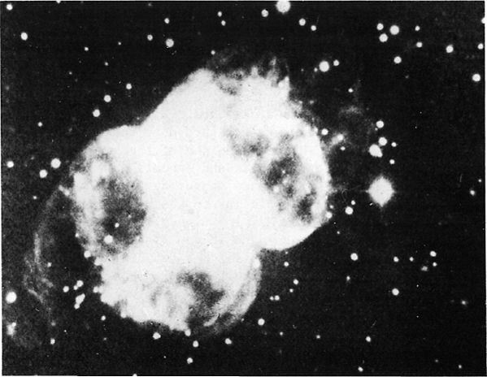
PLANETARY NEBULA M76 in PERSEUS. An example of a planetary which lacks the usual disc shape. The photographs were made at Lowell Observatory (top) and at Palomar (below).
Long exposure photographs show that the nebulous filaments seen by Lord Rosse, which project outward from the four corners of the rectangular central mass, are not portions of a spiral pattern, but instead form parts of great arcs or loops which encircle the main structure.
According to Lick Publications XIII, the nebula is “quite irregular, but evidently to be included as one of the larger members of the planetary class. The central and brighter portion…. is an irregular, patchy oblong 87″ X 42″ in PA 40° from the ends of which faint, irregular, ring–like wisps extend; total length 157″ in PA 128° brightest patch at southern end of central part”. Various observers rate the central star as magnitude 16, 16½, or 17; the Skalnate Pleso Catalogue gives it as 16.6, and the total integrated light of the nebula is given as 12.2.
As with virtually all the planetary nebulae, the exact distance is not well determined. C.R.O’Dell (1963) gives a rather precise figure of 537 parsecs or about 1750 light years; I.S.Shklovsky (1961) obtained 820 parsecs; the Skalnate Pleso catalogue has 2510, while L.Kohoutek (1961) has 1070. O’Dell’s value for the distance would give the nebula an actual diameter of about 1 light year and a total luminosity of 2 to 3 times that of the Sun. The central star, from these results, must have an absolute magnitude of about +8, or about 0.07 the solar luminosity. B.A. Voroncov–Vel’jaminov (1948) derived a much larger distance for the nebula of about 2000 parsecs; this would increase the luminosity of the central star to about that of the Sun. The star is, however, one of the hottest known, with a computed temperature of about 60,000°K. Radial velocity measurements indicate a speed of approach of about 15 miles per second. (A general outline of facts and theories about the planetary nebulae will be found in the article on M57 in Lyra)
NGC 869
NGC 884
Mean Position 02172n5654. This is the famous “Double Star Cluster” in Perseus, one of the truly classic examples of a galactic cluster, and a wonderfully beautiful object for moderate telescopes. Among the all–time favorites for amateur observers, it may be seen without optical aid as a hazy patch of light about midway between the stars of Perseus and the familiar “W” figure of Cassiopeia. A small telescope reveals that this luminous spot consists of two fine open star clusters together in the field, the pair forming one of the most impressive and spectacular objects in the entire heavens. In the mythological outline of the constellation it marks the “Sword Handle” of Perseus and is often identified on star atlases by the inconsistent designation “h – X” Persei. The cluster called “h” is NGC 869, and “X” is NGC 884.
A low power wide–angle eyepiece with a field of about 1° is needed in order to get both clusters together in the field of view. A power of 15X is suitable on a 2–inch glass and 30X on a six–inch. With an 8–inch or 10–inch, powers of 40X or 50X may be used. Short focus telescopes of the RFT or “rich–field” design are excellent on objects of this type. W.T.Olcott considered this the finest cluster for a small telescope in the heavens. “The field is simply sown with scintillating stars, and the contrasting colors are very beautiful”. The present writer remembers a night in the autumn of 1963 when he attached a wide–angle Erfle eyepiece to the 13–inch refractor at Lowell Observatory, in order to show the Double Cluster to a group of friends; the view was absolutely dazzling (with brilliant rainbow flares around every star image, since the 13–inch is actually an astrographic camera and is not corrected for use as a visual objective!)
THE DOUBLE STAR CLUSTER IN PERSEUS. This splendid group contains some of the most brilliant stars known. Eight–inch reflector photograph by Kent de Groff.
The existence of the Perseus clusters was noted at least as far, back as 150 BC; Hipparchus and Ptolemy both mention the group, but refer to it as a “nebula” or “cloudy spot”, one of the half dozen then recognized. The actual nature of such objects remained a mystery until the invention of the telescope. Another mystery, incidentally, lies in the fact that this splendid object was never included by Charles Messier in his famous catalogue, although it was certainly known in his day, and he included other bright clusters such as Praesepe and the Pleiades.
Among the early photographs of the Double Cluster is a fine plate made by Isaac Roberts with his 20–inch reflector in January 1890. In describing the result, Roberts stated that “the photograph presents to the eye the stars in the two clusters and in the surrounding part of the sky with a completeness and accuracy of detail never before seen.....an appearance of grandeur that can only be fully realized by aid of the photographic method. Any written description will convey only a very inadequate idea of it. The stars are shown in their true relative positions and magnitude to about the 16th, and among them are many apparent double, triple, and multiple stars. They also appear to be arranged in clusters, curves, festoons and patterns that are suggestive of some physical connection between the groups..... Again, we see that these clusters appear to be quite free from nebulosity, and therefore, by this hypothesis, are anterior in time to any of the other nebulae or clusters which have been referred to. We seem to be thus on the way, by the aid of photography, to an intelligible classification of some of the stages in the evolution of the Universe, but of course we must proceed with due caution….”
In a short description of the Double Cluster, published in the Harvard Annals in 1908, I.S.Bailey gave the apparent diameter of each cluster as 30′; in a star count reaching to the 12th magnitude, he found some 400 stars in NGC 869 and about 300 stars in NGC 884. As early as 1913, W.S.Adams and A.van Maanen had measured the radial velocity of the cluster and found it to be about 26 miles per second in approach. The stars chosen for radial velocity measurements were bright B and A stars displaying the so–called “c” characteristic, unusually sharp spectral lines, now known to be one of the identifying features of the supergiants. Astronomers began to realize that the Double Cluster was an object of exceptional interest. During the past 30 years it has been one of the most intensively studied clusters in the heavens.
The distance of the great swarm of stars cannot be measured directly, since it is too remote to show the slightest measurable parallax. In a spectroscopic study the bright members are found to be supergiants of types A, B, and 0; stars of exceedingly great luminosity which must be at a vast distance in order to appear as faint as they do. These stars may be used as “standard headlights” but the problem is complicated by the necessity of correcting the observations for some loss of light due to absorption by dust in space. Although there is no visible nebulosity in the immediate vicinity of the cluster, the surrounding region is heavily mottled with irregularly distributed dust clouds. These show plainly on some of Dr.E.Barnard’s fine Milky Way photographs. Current evidence suggests that the light of the cluster stars is dimmed by about 1.6 magnitudes by interstellar material.
In a thorough study of the cluster, H.L.Johnson and W.A.Hiltner (1955) found the corrected modulus to be about 11.8 magnitudes; the resulting distance is about 7400 light years. This result is in fairly good agreement with the estimate of about 8000 light years given by Harlow Shapley some 25 years earlier. Supporting this distance determination is another result obtained though a different line of inquiry; the investigation of the structure of our Galaxy. The Sun is located in one of the spiral arms of the system, and the Perseus cluster, the nucleus of a great swarm of giant stars, would seem to mark the next spiral arm going outward, away from the galactic center. The distance of the Perseus cluster is estimated by this method to be some 7000 to 8000 light years. Here we may use our Sun as a comparison object. At a distance of 7400 light years it would appear as a star of magnitude 16.6; if actually in the Perseus cluster it would, of course, be further dimmed by dust in the intervening space, and would appear about 18.2. Star no brighter than our Sun are thus very difficult to detect at the distance of the cluster, and even fainter stars are completely out of range. The bright members, which present such a glittering spectacle in the small telescope, are all great blazing supergiants of almost unimaginable brilliance.
THE DOUBLE CLUSTER IN PERSEUS. The two splendid star groups are just half a degree apart. Lowell Observatory photograph made with the 13–inch camera.
According to studies by Johnson, Morgan and Hiltner the 10 brightest cluster members have the following magnitudes and spectra:

All these stars are A & B type supergiants with absolute magnitudes ranging from –7.3 to –4.9; these figures have been corrected for a light loss of 1.6 magnitudes by absorption in space. The brightest stars of the cluster thus have luminosities approaching 60,000 times that of the Sun, and are comparable to such supergiants as Rigel in the Orion Association. There are 17 other stars in the central portions of the clusters which have absolute magnitudes brighter than –2. In addition, both clusters are embedded in a vast swarm of giant stars forming an association about 7° x 5° in size, or several hundred light years in diameter and containing over 100 early type stars of spectral types 0, B, and A, The absolute magnitudes of these stars range from –3.3 to about –7.5.
A very interesting feature of the Perseus clusters is the presence of M–type red supergiant stars, a number of which may be detected in amateur telescopes. Herschel, D’Arrest, Smyth, Rosse, and Webb all recorded their presence, and T.E.Espin in 1892 listed nine of them down to magnitude 10.5. According to Espin, there are three red stars in NGC 884, none in NGC 869, four lying between the clusters, and two in the outlying regions. In a list of M– type supergiants near the Double Cluster, V.M.Blanco (1955)published magnitudes and spectra for 17 such stars. These ranged in brightness from magnitude 7.6 to 9.2, with spectral classes from MO to M5. The brightest star on this list has an absolute magnitude of about –5.7 and a luminosity of some 15,000 suns, comparable to Betelgeuse in Orion. Among other red supergiants lying within a few degrees of the cluster, and believed to be probable members, are the pulsating variables S, T, RS, SU, and YZ Persei, all with semi–regular variations.
To modem astronomers, these are important objects which have much to teach us about stellar evolution. The highly luminous supergiants are “spendthrift stars” which cannot maintain their enormous energy output for very long and must have been formed relatively recently. If we plot the members by magnitude and color on the familiar H–R diagram, we find that some of the most luminous stars, near absolute magnitude –7.5, are still main sequence stars. At the same time we see that some of these objects have already evolved to the red giant stage and now populate the upper right section of the diagram. These are evidently stars of exceptionally large mass which were the first cluster members to begin their evolution. In the beautiful “Jewel Box” cluster NGC 4755 in Crux we find an identical situation. These two clusters are apparently quite identical in type and age, and rank among the youngest star groups yet identified. Although an estimated age of only about one million years has been quoted frequently in astronomical texts, current research (1976) suggests that both of these clusters may be several times that age. There is also some evidence that the two portions of the Double Cluster are not exactly the same age, and possibly do not form a truly physical pair.
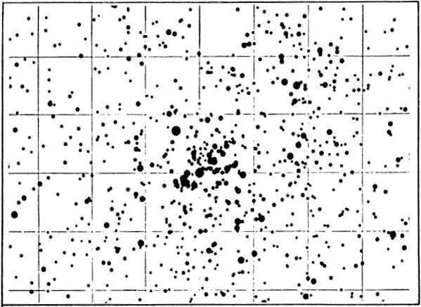
NSC 869. The distribution of stars to about 16th magnitude, from a study by P.T.Oosterhoff at Leiden Observatory.
This suspicion dates back at least to 1930 when R.J. Trumpler found a difference of about 0.5 magnitude in the computed distance moduli of the two groups. W.P.Bidelman (1943), K.A.Barkhatova (1950), W.Becker (1963) and A.Blaauw and J.Borgman (1964) have all obtained similar results; the computed difference in the two moduli range from 0.3 to 0.5 magnitude. A study of all the data has been made by Yerkes astronomer R.E.Schild and published in the Astrophysical Journal in October 1965. His conclusion is that NGC 869 is a less–evolved cluster than NGC 884, and that 869 is also somewhat closer than its neighbor cluster. Further studies having verified these findings, Schild wrote in 1966 that “NGC 884 is found to be 350 parsecs more distant than 869, and five million years older. Distances found are, respectively, 2500 and 2150 parsecs, and ages determined are 11.5 and 6.4 million years. Surrounding 884 appears to be an association of stars 65 parsecs in diameter.....and of the age and distance of 884. The M–supergiants and extreme Be stars appear to be associated with the 884 stellar population.”. The study also showed that the other cluster, 869, appears to be associated with another younger stellar population which extends over 200 parsecs; some of the farther members may lie about midway between the two clusters, but none appear to be sufficiently distant so as to actually link the two groups.
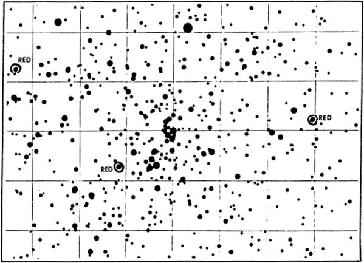
NGC 884. The distribution of the stars to about 16th magnitude, from a study by P.T.Oosterhoff at Leiden Observatory.

The H–R Diagram for the Perseus Clusters, from observations by H.L.Johnson and W.A.Hiltner.

A comparison of diagrams for various clusters.
Each of the clusters has an actual diameter of about 70 light years; the total mass of both clusters may be near 5000 times the solar mass, and the total light output is something like 200,000 times that of the Sun. NGC 869, as we have seen, is now thought to be the younger cluster of the two, and still among the youngest star groups known; only a few clusters have been identified as being probably still younger, as NGC 2362 in Canis Major. At the other extreme are such objects as the globular star clusters, and a few very ancient galactic clusters such as NGC 188 in Cepheus, all believed to be more than 10 billion years old. The difference in stellar population is strikingly shown when each of these clusters is portrayed on the H–R diagram. A pattern resembling that of the Perseus clusters is indicative of extreme youth, while one resembling NGC 188 implies great age. (For a discussion of the use of the H–R diagram in cluster age–dating, refer to M13 in Hercules.)
The Double Cluster lies in the richest region of the Perseus Milky Way. “Here again we enter upon one of the most splendid portions of the Galaxy” says T.W.Webb. “Night after night the telescope might be employed in sweeping over its magnificent crowds of stars..” While observing in the area, note also the smaller cluster NGC 957, about l½° to the ENE, described by C.E.Barns as a “field shot with diamond dust”.
NGC 1275;
(Perseus A) Position 03164n4120. An unusual galaxy, a most interesting and controversial object, listed in the Shapley–Ames catalogue as an E–type system of magnitude 12.7. It is the brightest member of a small cluster of galaxies lying about 2° to the east of Algol, and slightly north. The nearby elliptical galaxy NGC 1270 is undoubtedly a member of the same cluster; both systems show a nearly identical red shift of about 3280 miles per second. The distance of the group is currently thought to be about 300 million light years.
NGC 1275 is a strong source of radio emission, and bears the number 3C84 in the Third Cambridge Catalogue of radio sources; it is also known as “Perseus A”. Photographs with large modem telescopes show that the galaxy has a peculiar distorted appearance; the main body may be either an SO galaxy or a very compact spiral, but there are huge dust and gas clouds all along the entire northern edge. Some of these patches show a red shift about 1800 miles per second greater than that of the main body.
W.Baade and R.Minkowski have suggested that this object actually consists of two galaxies which appear to be passing through each other. The main galaxy may be a compact spiral or a large elliptical; the other a loose later–type spiral whose arms are distorted from tidal force. According to this picture, the loose spiral is seen in front of the compact one in the northern part of the system, and in that region the actual collision is now in progress. The total duration of such an inter–passage of galaxies would be on the order of a million years. From spectral studies it may be surmised that the two galaxies are moving through each other with a relative velocity of about 1800 miles per second. Presumably, the southern part of the loose spiral has already penetrated through its brighter neighbor, and is now out of sight beyond its central hub. One difficulty with this interpretation is that the system does not really look like a double galaxy at all; the fainter galaxy (if such it is) shows neither a nucleus nor a definite spiral pattern. If actually a galaxy it may be an irregular system rather than a spiral.
Some other peculiar galaxies, once thought to be collisional systems, have been discredited for several reasons, and it now seems unlikely that the hypothesis will survive in the ease of NGC 1275. The collision theory attributes the strong radio emission to high temperatures produced in the colliding gas clouds, but it is now certain that a number of “radio galaxies” emit far too much energy to be explained by this mechanism. Cygnus A, whose appearance suggests two systems in contact, is among the most powerful radio sources known, but the energy comes chiefly from two large invisible “lobes” on either side of the visible object. These appear to be connected with a strong magnetic field. In such galaxies it is thought that enormous outbursts of some sort have occurred in the central nuclei; such an outburst seems to be in progress at the present time in the strange galaxy M82 in Ursa Major.
GALAXY NGC 1275 in PERSEUS. This unusual system is a strong source of both radio energy and X–rays. Palomar Observatory photograph with the 200–inch reflector.

NGC 1275. Top: The field of the eruptive galaxy showing (large circle) NGC 1275, and (at left) NGC 1270. Below: Red light photograph showing the extending filaments .
NGC 1275, in addition to its radio emission, is now known to be a source of X–ray energy as well. The X–ray source, some 35′ in apparent size, is centered on the galaxy, but covers an enormously greater area, fully three million light years in diameter. The tenuous gas pervading this area might explain the observed X–ray emission, if it is at a temperature of about 80,000,000°K. According to another theory proposed in 1974, high energy electrons are accelerated by the magnetic field of the galaxy, and are interacting with the low–energy photons that comprise the 3° background radiation attributed to the original high compression phase or “big bang” stage of the Universe. By this interaction the energies of the photons are increased to the X–ray level, a process known as the “inverse Compton effect”.
Red light photographs show an extensive system of long filaments extending outward on all sides of NGC 1275; the material is exploding into space at a velocity of over 1500 miles per second. The appearance is remarkably similar to the strange galaxy M82, and shows us the same violent outpouring of material on a titanic scale. Vast outbursts or explosions of some sort have evidently occurred in the nuclei of such systems, possibly resulting from the formation of a massive “hyperstar”, “collapsar”, or “black hole” in the heart of the galaxy. One outburst, which might seem trivial by comparison, has been observed in NGC 1275, the appearance of a 15.5 magnitude supernova in 1968.
(Refer also to 3C273 in Virgo, M82 in Ursa Major, M87 in Virgo, Cygnus A, and NGC 5128 in Centaurus)

STAR CLUSTERS IN PERSEUS. Top: NGC 1245 is located 3° SW from Alpha Persei. Below: NGC 1528 is about 7.5° east of Alpha. Lowell Observatory 13–inch telescope photographs.
LIST OF DOUBLE AND MULTIPLE STARS
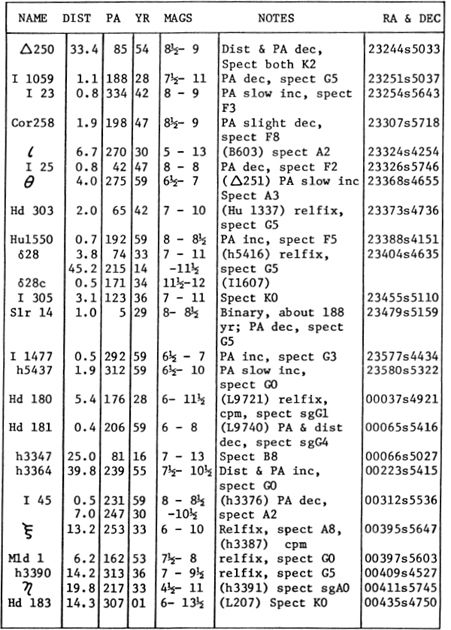
LIST OF VARIABLE STARS

LIST OF STAR CLUSTERS, NEBULAE, AND GALAXIES

(GC 32998) (SAO 231773) Variable. Position 23439s4151, about 6½° west of Alpha Phoenicis. This is one of the most famous of the dwarf cepheids, originally discovered as a star of large proper motion in 1938, and found to show rapid light variations by Dr.O.J. Eggen at Canberra, Australia, in 1952. At that time it had the shortest period known for any type of pulsating star, about 79 minutes. According to the Moscow “General Catalogue of Variable Stars” (1970) the precise period is 0.054965 day, or 79m 10s. The visual magnitude ranges from 7.1 to about 7.5; photographically it is 7.1 to about 7.8, owing to the change in color during the cycle. Some maxima are higher than others by half a magnitude, indicating that the star is oscillating in at least two superimposed periods. The cycle of the amplitude variations is about 4.6 hours, or very close to 3½ times the main period.
SX Phoenicis appears to be a subdwarf A–type star; from the computed distance the actual luminosity must be only 2 or 3 times that of the Sun. The Moscow Catalogue reports a probable absolute magnitude of +4.1 which places the star at least two magnitudes below the main sequence. In a study made in 1975 at the European Southern Observatory, R.Haefner found that the spectral type, usually given as A2 to A5, actually reached F4 at a low minimum. From current theories of stellar structure it appears that stars of this type have an unusually low mass for their spectral types; the figure for SX Phoenicis is believed to be about 0.24 solar mass, and the diameter probably about 80% that of the Sun. The star shows an annual proper motion of 0.89″ in PA 163°; the distance may be about 140 light years.
In a study of this odd star made at the observatory of the University of Chile in 1970, J.Stock and S.Tapia reported that “an analysis of the radial velocity curves, from 500 spectra, together with photometric data, show that the observations cannot be reconciled with the model of a single pulsating star….In addition, the intensities and profiles of the absorption lines vary rapidly, often within minutes….SX Phoenicis is probably a binary, or even a multiple system”. The stars of this type resemble the RR Lyrae stars, but have smaller masses and lower luminosities. (Refer also to CY Aquarii, AI Velorum, and RR Lyrae)
SX PHOENICS Identification chart. Stars to about 9th magnitude are shown. Grid squares are 1° high.
LIST OF DOUBLE AND MULTIPLE STARS

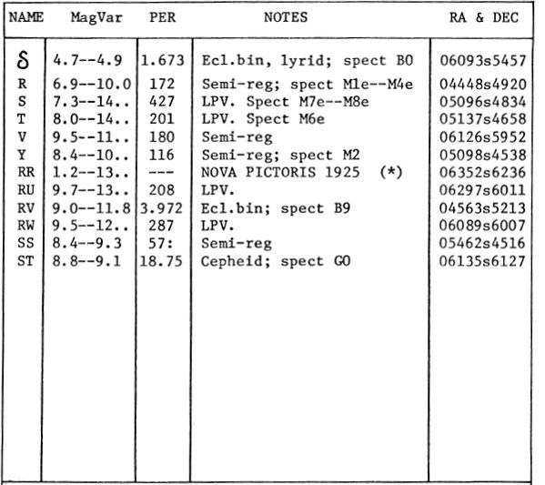
LIST OF STAR CLUSTERS, NEBULAE, AND GALAXIES

Nova Pictoris 1925. Position 06352s6236, about 1½° southwest of Alpha Pictoris. A brilliant nova, first seen by R.Watson in South Africa on the morning of May 25, 1925. Watson reported the discovery to the Royal Observatory at the Cape, and the first scientific observations of the new star were made there that same evening. A thorough study of the nova was made at the Cape over a number of years, and a complete analysis of the changing spectral features was presented in a monumental report by H. Spencer Jones in Vol.X of the Annals of the Cape Observatory.
At discovery the nova was magnitude 2.3, but was soon found to be still brightening, with irregular oscillations, until it reached its peak brightness of magnitude 1.2 on June 9. By July 4 the star had faded to 4th magnitude, but unexpectedly rose again to magnitude 1.9 on August 9. The maximum was thus a long extended one, classifying the star as a “slow nova” in contrast to such rapid and sharp maxima as displayed by Nova Aquilae 1918 and CP Puppis in 1942. The star had been bright for some time before its discovery, as it appears as a 3rd magnitude object on a plate made in mid–April.
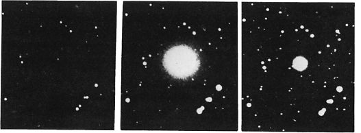
ROYAL OBSERVATORY PHOTOGRAPHS
A third, and last, outburst of the star, from magnitude 3.7 to about 2.3, took place some 60 days after the chief maximum; the star thereafter faded with slight fluctuations until it disappeared fron naked–eye view in mid–December. Ten years later it was a 9th magnitude object and still fading slowly. The star appears on previous photographs of the region as an object of magnitude 12.7, and apparently constant in light. In 1975, the nova was close to its pre–outburst magnitude of about 12½.
Beginning in 1928, telescopic observations revealed that the image of the star, under high powers, appeared as a triple body. Two years later one part had vanished and the other two had expanded outward. The rate of the expansion was about 0.2″ per year, and the separation of the two principal nuclei had increased to 1.0″ in early 1931. These fragments were apparently knots of nebulous material and not stellar bodies. A similar appearance was detected around the image of Nova Herculis 1934 after the outburst.
With an amplitude of about 11½ magnitudes, Nova Pictoris showed a light increase of about 40,000 times during the outburst. At the peak of its luminosity, spectroscopic studies showed that the outer layers of the star were being blasted into space at a velocity of about 700 miles per second. Still higher velocities, of up to 950 miles per second, were measured some six months later, when the star had declined to the limit of naked–eye visibility.
The distance of no nova is known very accurately, as even the nearest have been too distant for trigonometrical parallax measurements. Actual luminosities are thus somewhat uncertain, though it seems clear that the “slow novae” of the RR Pictoris and DQ Herculis type have considerably lower peak luminosities than the “fast novae” such as CP Puppis.
According to a summary of the evidence by C.P.Gaposchkin, RR Pictoris had a peak absolute magnitude of about –6.3, equivalent to nearly 30,000 times the light of the Sun. From a study of the expanding nebulosity, D.B.Mclaughlin (1936) obtained a somewhat different result, giving the probable absolute magnitude as –7.3. The pre–nova brightness, in any case, was fairly comparable to the luminosity of the Sun. The computed distance is slightly over 1000 light years; our Sun at that distance would appear as a star of magnitude 12.4.
Studies of the post–nova star, in recent years, have brought forth some evidence to support a theory that all novae are close binary stars. In the case of RR Pictoris, the short–period variability occupies a cycle of 0.14498 day, or slightly under 3½ hours. (Refer also to Nova Aquila 1918, GK Persei 1901, DQ Herculis 1934, CP Puppis 1942, and Nova Cygni 1975)
KAPTEYN’S STAR
(LFT 395) (GC 6369) (HD 33793) Position 05097s4500. A faint and inconspicuous star, but remarkable for its unusually large proper motion, exceeding that of any other star in the heavens with the single exception of Barnard’s Star in Ophiuchus. Kapteyn’s Star was discovered in 1897 by Professor J.C.Kapteyn of the University of Groningen. The star is sometimes referred to by its number in the Cordoba Zone catalogue; CZ 5h 243. It is located in a rather blank region of the southern sky, about midway between Canopus and 41 Eridani; the field lies some 8½° NW from Beta Pictoris.
Kapteyn’s Star has an annual proper motion of 8.70″ in PA 131°, and thus requires some 414 years to change its position by 1° in the sky. Like Barnard’s Star, it is a red dwarf; the apparent visual magnitude is 8.8 and the photographic magnitude about 10.0. The spectral type is dMO. A direct parallax measurement leads to a distance of 12.7 light years, about twice the distance of Barnard’s Star. With an absolute magnitude of about 10.8, Kapteyn’s Star is some 250 times fainter than our Sun, but about 10 times more luminous than Barnard’s Star.
As in the case of Barnard’s Star, the abnormally large apparent motion is the result of the nearness of the star combined with an unusually high true space velocity of about 175 miles per second, one of the highest known. The motion across the line of sight corresponds to about 100 miles per second, and the radial velocity is 145 miles per second in recession.
The proper motion of the star from 1900 to the year 2050 is shown on the charts below. Stars to about the 10th magnitude are shown; grid squares are 1° on a side with north at the top. (Refer also to Barnard’s Star, page 1251)
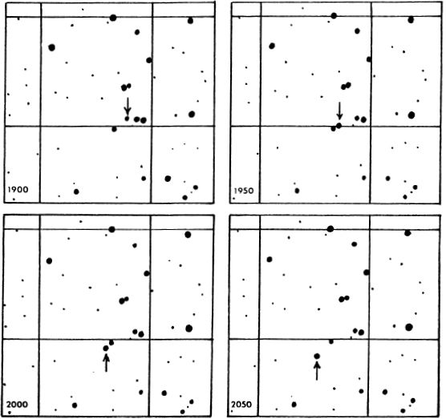
LIST OF DOUBLE AND MULTIPLE STARS


LIST OF STAR CLUSTERS, NEBULAE AND GALAXIES
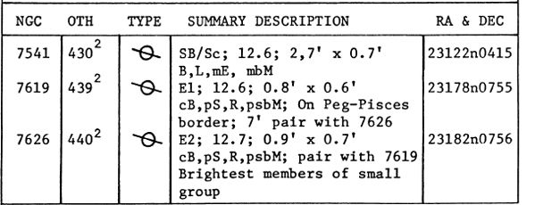
DESCRIPTIVE NOTES
Name– AL RISCHA, from the Arabic Al Risha, “The Cord”, possibly derived from the earlier Babylonian Riksu, which also means a cord. Another name, OKDA, is from the Arabic phrase Ukd al H.aitain which seems to refer to a “flaxen cord″ or bond which ties the two fish of Pisces together. Magnitude 3.96; spectrum A2; position 01594n0231. The star is located in the extreme southeastern portion of the constellation, about 7° NW of Mira in Cetus.
Alpha Piscium is a fine binary star for moderate telescopes, first noted by William Herschel in 1779, and gradually becoming more difficult for small instruments as the separation steadily decreases from a measured 3.6″ in 1831. During the first century of observation the PA slowly changed from 336° to 307°; in 1966 it was 292° and the distance between the components had diminished to 1.9″.
According to the ADS Catalogue, the individual magnitudes are 4.33 and 5.23; the spectral types about A2 and A3; the fainter star has a peculiar spectrum with strong metallic lines. From an orbit calculation by W.Rabe (1961) the period of the pair may be about 720 years with periastron due about 2060 AD. The semi–major axis of the computed orbit is 2.65″, with an eccentricity of 0.60 and an inclination of 142°. Orbital motion is retrograde, and it appears that both components are spectroscopic binaries of uncertain period.

A peculiar feature of Alpha Piscium is an apparently illusionary color contrast described by various observers. T.W.Webb calls them “greenish white and blue” but then adds “I found contrast certain, but fainter star troublesome as to color, usually ruddy or tawny, sometimes blue”. In 1855 he thought them “pale yellow and brown yellow” and on other occasions “pale yellow and fawn–colored”. K.McKready in his Beginner’s Star Book (1912) calls the components “pale green and blue”, while C.E.Barns (1929) simply notes “weird coloring” and, perhaps wisely, refuses to commit himself to any more definite statement.
A direct parallax measurement gives the probable distance as about 130 light years; the resulting total luminosity of the system is about 35 times that of the Sun. Alpha Piscium shows an annual proper motion of about 0.03″; the radial velocity (somewhat variable) averages some 5 miles per second in recession.
The suspected variability of the primary star seems to have first been announced by E.C.Pickering at Harvard in 1879; he found that the magnitude difference between the components appeared to vary from about 0.7 to 1.1, but in no definite period. Miss Agnes Clerke (1905) regarded the variability of at least the primary as certain, but thought that possibly both stars changed in light. No definite evidence of light changes has been noted in recent years.
ZETA
Position 01111n0719. A fine easy double star, located virtually on the Ecliptic, about 13° WNW from Alpha Piscium. It seems to have been first recorded by William Herschel in 1781, and the components have shown no certain relative change in nearly two centuries, although the physical association is proven by the common proper motion of 0.15″ per year. With a separation of 23½″ this is an easy object for a beginner’s telescope; Olcott calls it “a fine object” and Barns refers to it as a colorful pair; the tints having been described by various observers as “yellowish and pale lilac”, “white and greyish”, or “pale yellow and rose”. The spectral types are A5 and dF6; the individual magnitudes, according to the ADS Catalogue, are 4.2 and 5.3, but the discrepancies in reported measurements suggest that both stars may be variable. The Harvard photometric magnitudes for the components are 5.57 and 6.49. Both stars show a variable radial velocity, and are assumed to be spectroscopic binaries.
THE MOON AND VENUS near conjunction in the field of Zeta Piscium (image at top of print). The photograph was made by the author with the Lowell 13–inch telescope on March 11, 1959.
A trigonometrical parallax indicates a distance of about 140 light years; the projected separation of the two stars is then about 1000 AU. The primary star has an actual luminosity of about 8 to 10 times that of the Sun. The mean radial velocity of the system is about 6 miles per second in recession.
A 12th magnitude companion to the fainter star, at a distance of 1″, was discovered by S.W.Burnham in 1888. A very difficult object, it has been measured on various occasions (as in 1958) but, according to the Lick Observatory Index Catalogue of Visual Double Stars (1961), it was not visible at all in 1914, 1922, 1936, or 1951. With an absolute magnitude of about +9.1, this third star must be some variety of low–luminosity dwarf; it is doubtful that a spectrum will ever be obtained for this object.
19
(TX Piscium) Variable. Position 23438n0313; the star is the easternmost member of the so–called Circlet of Pisces, the oval ring of stars about 7° x 5° which represents the western fish of the pair, and which includes the stars Gamma, Kappa, Lambda, Iota, Theta, 19 and 7 Piscium. 19 Piscium is chiefly of interest for its strong red color, being one of the few N–type stars within range of naked–eye sighting, or available to field glasses. Its spectral class is usually given as NO, but on the new “carbon star” classification system it would be called C62. This is one of the very low temperature giants which show bands of carbon compounds in the spectrum. As in the case of the very similar star Y Canum Venaticorum, no parallax has been detected, proving that the distance must be in the range of 400 light years or more. From theoretical studies, the absolute magnitude of the star is believed to be close to –2.0; the computed distance is then about 1000 light years. 19 Piscium shows an annual proper motion of about 0.04″; the radial velocity (variable) averages about 6.5 miles per second in approach.
To appreciate the unusual ruddy tint of the star, observers should compare its light with the nearby bluish stars 21 and 25 Piscium, of spectral types A2 and A0 respectively. (See chart, page 1475)
As a variable, TX Piscium is not of great interest, as the visual range is only about half a magnitude, from about 5.5 to 6.0. When observed photographically the range increases to about 1 magnitude. Owing to the fairly small amplitude and the unusual color, the light changes are not conspicuous visually, and the variability was considered doubtful for many years. T.E.Espin, however, observed a well defined maximum of 5.2 in August 1884, and O.C.Wendell at Harvard found a range of 0.36 magnitude during a one–year period in 1905–1906. There appears to be no regular periodicity, and T.W.Webb refers to the star as one of a class which “for long intervals are nearly constant in light, and then for a short time rise to a maximum…… In estimating magnitudes of red stars it is well to put them out of focus, and thus compare discs of light instead of points.” (Refer also to Y Canum Venaticorum, R Leporis, V Hydrae, S Cephei, and Omicron Ceti)
VAN MAANEN'S STAR
(Wolf 28) (LFT 76) A whlte dwarf star of unusual interest. Position 00465n0509, about 2° south of Delta Piscium. This is one of the few white dwarf stars which can be seen and identified easily in amateur telescopes. It was discovered by A. van Maanen in 1917 through a comparison of photographs made in 1914 and 1917. With the exception of the faint companions to Sirius and Procyon this is probably the nearest white dwarf star to the Solar System, at a distance of 13.8 light years. The star was discovered through its large proper motion, which amounts to 2.98″ yearly in PA 155½°
Van Maanen’s Star has an apparent visual magnitude of 12.4, and an absolute magnitude of about 14.2; the actual luminosity is about 1/5800 that of the Sun. The spectral type is variously given as either late DF or early DG; the surface temperature is near 6000°K. This was the first of the “late type” degenerate stars to be discovered, though a fair number of DG and DK stars are now known.
Definitely among the smallest stars known, this very dense star has a computed diameter of about 7800 miles, or very close to the size of our Earth. With a mass comparable to that of the Sun, the density is found to be nearly one million times that of water, or about 20 tons to the cubic inch. This is about 10 times the computed density of the famous Sirius B, most famous of the degenerate stars. The surface conditions on such a body are almost impossible to imagine; the atmospheric pressure on Van Maanen’s Star is about 2000 times that present on Earth, and the surface gravity must exceed 50,000 times that of our own feather–weight planet. Ordinarily an object the size of the Earth would be totally beyond the range of any telescope at a distance of a dozen light years. But the Van Maanen object is a star, visible in the light of its own radiation, even though actual energy production may have ceased ages ago. Presumably such an object must be among the oldest stars in the Universe, and will now spend many additional aeons of slow cooling as it eventually approaches the “black dwarf” state billions of years from now.
TX PISCIUM. The strong color is illustrated by comparison of red and blue exposures. From Lowell Observatory plates
FIELD OF MAANEN’S STAR. The circle is 1° in diamete with north at the top; stars to about 14th magnitude are shown. Lowell Observatory 13–inch telescope plate.
The identification chart (page 1476) was made from a plate obtained with the 13–inch camera at Lowell Observatory in December 1961. Observers of the future must thus make allowance for the large proper motion of the star, about 5′ per century. The brightest star in the field is GC 959 or LFT 73, magnitude 6.7; this star also has a large proper motion (1.37″ annually) in almost the same direction but from parallax measurements appears to be about twice the distance of Van Maanen’s Star. The two objects are evidently not related. (Refer also to Sirius B (page 394), Procyon B (page 449) and Omicron–2 Eridani (page 890)
THE PROPER MOTION OF VAN MAANEN’s STAR. EACH FIELD IS 18′ WIDE; THE TOTAL DISPLACEMENT IN 46 YEARS IS 137″. FROM LOWELL OBSERVATORY PLATES.
SPIRAL GALAXY M74 in PISCES. One of the finest examples of a large face–on spiral. Palomar Observatory photograph made with the 200–inch reflector.
(NGC 628) Position 01340nl532, about 1½° ENE from Eta Piscium. Large spiral galaxy, first observed by P.Mechain in September 1780, and confirmed by Messier the following month. Mechain described it as a nebula which “contains no star; it is fairly large, very obscure and extremely difficult to observe….One can make it out with more certainty in fine, frosty conditions..” D’Arrest found it “pale and tenuous, very much denser towards the centre; the central part is almost round, diam 40”. Resolved; uncertain whether it has a true nucleus..″ John Herschel, in his General Catalogue of 1864, made the surprising mistake of classifying M74 as a globular star cluster, and this error was carried over into the N.G.C. Lord Rosse, in 1848, was probably the first to detect the spiral form, which was recorded with great clarity by the early astro–photographer Isaac Roberts, in a photograph made in December 1893.
M74 is one of the faintest and most elusive of the Messier objects, and requires a dark clear sky and a suitably low power eyepiece. Under the best conditions it may appear as a circular, quite featureless glow, about 6′ in diameter with averted vision, and with a bright, nearly stellar nucleus. Curiously however, M74 was noted and mapped on the charts of the Bonn Durchmusterung (about the year 1860) which was compiled from observations with a 3–inch telescope; it bears the number BD+15°238. K.G.Jones (1968) points out that an extended object of low surface brightness “may well be easier to see in small telescopes of wide field than in larger instruments”.
On the best long–exposure plates the apparent size increases to about 10′; S.van den Berg (1960) reports a total size of 10.6′ x 9.0′ and a total integrated magnitude (pg) of 9.74. The integrated spectral type is F5.
M74 is one of the most perfect examples of a face–on Sc–type spiral, resembling the large M101 in Ursa Major but somewhat more symmetrical in form. A.Sandage (1961) in the Hubble Atlas of Galaxies states that the chief spiral arms of the system have a thickness of about 1000 parsecs, and are bordered on their inner edges by thin dust lanes which may be traced deep into the nuclear hub. At a distance of close to 30 million light years, the 9′ diameter corresponds to about 80,000 light years; the total absolute magnitude is about –20½, or about 13 billion times the light of the Sun. The galaxy thus seems to be not greatly inferior in size to our own, but has a much lower luminosity, unless the computed distance is considerably underestimated. E.Holmberg (1964) derived a distance modulus of 29.7 magnitudes for M74, and a total mass of about 40 billion suns. A.Sandage (1961) adopted a distance modulus of 30.0 magnitudes; S.van den Bergh (1960) has 29.4. All these figures agree in giving a distance in the range of 25 to 33 million light years. The measured red shift of the system, however, is 426 miles per second (corrected for the solar motion in our own Galaxy), which, according to the presently accepted value for the Hubble constant, implies a somewhat greater distance of about 42 million light years. As in the notable case of the edge–on spiral NGC 4565 in Coma, we have a situation here in which the known red shift gives too large a distance. The greater distance, however, would bring the luminosity and computed mass into closer agreement with the figures obtained for many other large spirals.
The field of M74, with stars to about 9th magnitude. The grid squares are 1° high with north at the top.
SPIRAL GALAXY NGC 488 in PISCES. A compact spiral with a fine pattern of delicate spiral arms. Palomar Observatory photograph made with the 200–inch reflector.

UNUSUAL GALAXIES IN PISCES. Top: NGC 128 has an odd box–shaped central mass. Below: NGC 520, a distorted or erupting system. Palomar Observatory 200–inch telescope plates.
LIST OF DOUBLE AND MULTIPLE STARS


LIST FO STAR CLUSTERS, NEBULAE AND GALAXIES

Name– FOMALHAUT, from the Arabic Fum al Hut, the “Mouth of the Fish”. The 18th brightest star in the sky; magnitude 1.17; Spectrum A3 V. Position 22549s2953. Opposition date (midnight culmination) is about September 6.
Sometimes called “The Solitary One”, Fomalhaut lies in a rather empty region of the southern Autumn skies, and to dwellers at the latitude of New York it is the southernmost of the visible 1st magnitude stars. “On early acquaintance,” said Martha E. Martin (1907) “the loneliness of the star, added to the sombre signs of approaching autumn, sometimes gives one a touch of melancholy….In November and December, when… the winter stillness has fallen upon us, a glance toward the southwest will discover Fomalhaut, still placid and alone, on its way to adorn the warmer southern skies…”
Strangely, Fomalhaut is often described in observing books as “reddish” although it is actually an A–type star nearly as white as Deneb. R.H.Allen and Mary Proctor both repeat this curious error. Possibly the effects of the Earth’s atmosphere are responsible for this impression, as the star is always seen at a rather low altitude by observers in the northern hemisphere.
According to Admiral Smyth, the star appears as Fom Alhout Algenubi in an almanac manuscript dated 1340. The Alfonsine Tables of 1521 call it Fomalhant, while Riccioli has Phomaut, Fomauth, Phomelhaut, and other variations. Lalande labels it Fumalhant and Phomahant; Schickard calls it Fomalcuti. An alternate Arabic name, according to R.H. Allen, was Al Difdi al Awwal, “The First Frog”. Fomalhaut is associated in Greek legend with the terrifying monster Typhon, who, it was believed, now lies imprisoned under the fuming mass of Mt.Etna in Sicily. In Syrian and Canaanite lands it was honored as the symbol of the sea god or fish–god Dagon, whose temple at Gaza (possibly the Biblical Azzah) was so dramatically destroyed by the Hebrew strongman Samson, as related in the 16th Chapter of the Book of Judges. The Biblical story, however, does not tell us if Dagon’s temple, as some modern astro–archeologists suspect, was oriented to the rising of Fomalhaut. Incidentally, the identification of Dagon as a sea god or fish–god has been questioned by Isaac Asimov; he suggests that the name does not derive from the Semitic dag (fish) but from dagan or “grain”. If so, Dagon may have been an agricultural deity rather than a sea god. Schickard seems to be the originator of the relatively modern legend that Fomalhaut symbolizes the New Testament story of St.Peter and the coin found in the mouth of the Fish. Fomalhaut was known to the star–watchers of ancient Persia as one of the four “Royal Stars” of Heaven, the others being Regulus, Aldebaran, and Antares.
Fomalhaut lies at a distance of 23 light years, and is a main sequence A3 star about twice the diameter of our Sun and 14 times more luminous. The computed absolute magnitude is about +2.0. The star shows an annual proper motion of 0.37″ in PA 117°; the radial velocity is 4 miles per second in recession.
A companion star of the 14th magnitude at 30″ was reported by T.J.J.See in 1897; it appears to be merely a faint field star, having no real connection with Fomalhaut. Proper motion studies of the region, however, have identified a much more distant companion which does seem to show the same parallax and motion as the bright star; it is located just 2° distant toward the south. This is the star GC 31978 or BS 8721; it appears in W.J.Luyten’s Catalogue of proper motion stars as LTT 9283. The star is a dwarf of spectral type dK5, apparent magnitude 6.49, about 10% the luminosity of our Sun. This is an exceptional case of a wide common motion pair; the true separation (minimum) must be some 51,000 AU, or nearly one light year! It seems quite unlikely that the two stars form a truly gravitationally connected pair today; the attraction over such a vast space is negligible. We might speculate that Fomalhaut and its distant companion are the last surviving members of a low density cluster which gradually dispersed and scattered, as such clusters as the Coma Berenices group appear to be doing today.

THE DISTANT COMPANION TO FOMALHAUT lies 2° south of the bright star; the position is 22536s3150
LACAILLE 9352
(LFT 1758) (Cordoba 31353) Position 23026s3609, in the extreme southeast corner of the constellation, about 1° SSE of Pi Pisces Austrinus. This small star is noted for its remarkably large annual proper motion, the fourth fastest known. This amounts to 6.90″ per year in PA 79°, and the star thus requires about 520 years to traverse 1° in the heavens. The only stars known with a larger proper motion are Barnard’s Star in Ophiuchus (page 1251); Kapteyn’s Star in Pictor (page 1462); and Groombridge 1830 in Ursa Major.(Page 1978) A list of star of large proper motion appears on page 1257.
Lacaille 9352 is a red dwarf of spectral class dM2e with an apparent visual magnitude of 7.39, and a photographic magnitude of about 8.6. It is one of the nearest stars to our Solar System at a distance of 11.9 light years, just a little more distant than 61 Cygni or Tau Ceti. With an absolute magnitude of about +9.6, the actual luminosity is about 1/85 that of our Sun.
The computed space velocity of the star is about 75 miles per second, and the motion is almost directly “side–on” as seen from the Earth; the radial velocity is a relatively slight 5.8 miles per second in recession. The large apparent motion of the star is thus a result of this circumstance, combined with the small distance of the star. It is interesting to reflect that an equally near star might go unnoticed for some time, if it was moving directly in the line of sight, either toward or away from us, as there would then be no large proper motion to call attention to its nearness. Most of the faint nearby neighbors of the Sun have been detected by proper motion surveys, which have shown us also that low–luminosity dwarfs vastly outnumber giant stars in space.
The chart of the field of Lacaille 9352 is based on plates obtained at Lowell Observatory in 1964. Stars to about 11th magnitude are plotted, and north is at the top. The grid squares are 1° on a side. The arrow indicates the direction of motion of the star, and the distance covered during the interval 1860 – 2060 AD. (Refer also to Bamard’s Star in Ophiuchus)
LIST OF DOUBLE AND MULTIPLE STARS

LIST OF VARIABLE STARS

LIST OF STAR CLUSTERS, NEBULAE AND GALAXIES

DESCRIPTIVE NOTES
ZETA
Magnitude 2.25; Spectrum 05; position 08018s 3952. Zeta Puppis is a supergiant star, one of the most luminous stars known in our Galaxy; at a computed distance of about 2400 light years, the actual luminosity is close to 60,000 times that of the Sun, and the derived absolute magnitude is –7.1. The star is comparable to Rigel in energy output; if such a star were as near to us as Vega, it would appear to us about 12 times brighter than Venus at her best! Zeta Puppis shows an annual proper motion of about 0.03″; the radial velocity is 14½ miles per second in approach.
The star is located in a rich region of the winter Milky Way (to Northern Hemisphere observers) and the owner of a good wide–field telescope will find many stunning fields in the surrounding region. Just 2½° to the northwest is the splendid rich star cluster NGC 2477, while 5° NNE is the spot where the brilliant nova CP Puppis flared up in November 1942. The star AP Puppis, shown on the Skalnate Pleso Atlas, about 1° west, is a cepheid with a 5–day period of oscillation.
Magnitude 3.18; Spectrum B7 or B8 III; position 06362s4309, about 10° NNE from the brilliant star Canopus. The computed distance of the star is about 600 light years, giving the true luminosity as 1600 times that of the Sun (absolute magnitude –3.2). The annual proper motion is 0.01″; the radial velocity is 17 miles per second in recession.
XI
Magnitude 3.34; Spectrum G3 Ib; position 07472s2444. Xi Puppis is a yellow supergiant star with a computed actual luminosity of about 5800 suns (absolute magnitude –4.6); the derived distance is about 1200 light years. The annual proper motion is less than 0.01″; the radial velocity is 1.6 miles per second in recession.
The 13th magnitude companion at 4.8″ was first noted by S.W.Burnham with the 36–inch refractor at Lick Observatory in 1889. The projected separation of the pair is 1770 AU, but it is not certain that the two stars are physically related; there has been no definite relative change in the pair since discovery. The faint star, if it is at the same distance as the primary, has an actual luminosity about equal to our Sun.
Xi Puppis lies in a fine region of the Puppis Milky Way, rich in myriads of faint stars. The difficult double star B146 lies 0.5° to the NE, and the attractive cluster M93 is just 1.6° to the NW. Note also the curious diffuse nebula NGC 2467, about 1.7° to the SSE.
PI
Magnitude 2.81; Spectrum K4 or K5 III. Position 07154s3700, about 8° below the stars Eta and Epsilon in Canis Major, which mark the feet of Orion’s Great Dog. Pi Puppis is a moderate sized giant star, probably somewhat over 100 times the solar luminosity (computed absolute magnitude –0.3). It is some 140 light years distant. Slight variability has been suspected; the range of catalogue magnitudes is from 2.70 to about 2.85. The annual proper motion is 0.01″; the radial velocity is 9½ miles per second in recession.
Pi Puppis forms a charming color contrast group with the two components of Upsilon Puppis, which lies 26′ to the NNE. The two stars are magnitudes 4.7 and 5.1, with a separation of about 4′; both spectra are B3 V. These two bluish stars possibly form a true pair, as the measured proper motions, although only 0.01″, agree closely, as do the radial velocities of 12 and 14 miles per second in recession. The western star has an emission line spectrum while the eastern component shows a variable radial velocity and is probably a spectroscopic binary. The bluish pair contrasts beautifully with the bright orange tint of Pi itself. From the lack of any measurable parallax, the two B–stars appear to be at least three times more remote than Pi itself; their distance is probably about 500 light years, and each star has about 100 times the luminosity of the Sun.
RHO
Magnitude 2.80 (slightly variable). Spectrum F6 IIp; Position 08054s2410. Rho Puppis is one of the brightest and best known examples of a “Delta Scuti” type of variable star, a small class of pulsating stars which resemble the RR Lyrae (cluster variables) stars, but have shorter periods and smaller amplitudes. The variability of Rho Puppis was discovered by O.J.Eggen at Mt.Stromlo in Australia, and was independently detected at the Cape Observatory in South Africa. Visually, the star is not a very exciting variable, as the amplitude is only 0.15 magnitude; the range is about 2.72 to 2.87. This star, however, has one of the shortest periods known for any pulsating variable, only 3h 23m, or 0.14088143 day. The star Delta Scuti, often regarded as the standard star of the type, has a slightly longer period (4.65 hours) and a slightly earlier spectral class (F3). The two stars appear to be quite comparable in actual luminosity; the absolute magnitude in each case is about +0.3. In actual luminosity these are among the brightest of the Delta Scuti stars; other examples range from about +1.0 to +2.2. Stars of the class often seem to be somewhat underluminous for their spectral types; a normal F6 II star, for example, should have an absolute magnitude of about –2.0.
Rho Puppis is approximately 100 light years distant, and shows an annual proper motion of 0.10″; the radial velocity is 28 miles per second in recession. (Refer also to Delta Scuti, Epsilon Cephei, and RR Lyrae)
Magnitude 3.28; Spectrum K5 III; Position 07276s4312, about 7½° NW from Gamma Velorum. Sigma Puppis is a common proper motion double star with a fixed separation of 22.4″ in PA 74°; magnitudes 3.3 and 8½. E.J.Hartung (1968) refers to it as “a brilliant orange star with white (by. contrast) companion.…a fine sight in the star sprinkled field.…7.5 cm shows it well.” At a computed distance of 180 light years the actual luminosity of the faint star is about equal to our own Sun; the primary is some 120 times more luminous. The two stars share the proper motion of 0.20″ annually in PA 336°; the spectral types are K5 III and G5 V; and the projected separation of the two stars is about 1200 AU.
The third magnitude primary is itself a spectroscopic binary with a period of 257.8 days and an eccentricity of 0.17; the mean radial velocity is about 54 miles per second in recession.
TAU
Magnitude 2.95; Spectrum K0 III; Position 06487s5033, at the southern edge of the constellation, about 4.3° NE of Canopus. The computed distance of the star is about 125 light years; the resulting actual luminosity is 75 times that of the Sun (absolute magnitude +0.1). Tau Puppis shows an annual proper motion of 0.08″; the radial velocity is 22 miles per second in recession. The star is a spectroscopic binary with a period of 1066 days and an eccentricity of 0.088.
L2
Magnitude 3.0 (variable); Spectrum M5e; Position 07120s4433, about 2.7° SW of Sigma Puppis. The star Is also designated GC 9604 and h3943. One of the brightest of the red variable stars, usually classed as a semi–regular type, occasionally as a member of the Omicron Ceti or LPV type. It was discovered by B.A. Gould in 1872, and the average period of about 141 days was first determined by Isaac Roberts. The star is a naked–eye object throughout much of its cycle, falling to 6th magnitude at minimum, and rising sometimes to brighter than 3rd at maximum. A rather symmetrical light curve is one of the unusual features of the star; the time required to rise from minimum to maximum is almost exactly half of the total period. At maximum the spectral class is gM5e.
L2 Puppis is also the visual double star h3943, the companion being a 9½ magnitude star about 1′ distant in PA 214°; the last measurement reported in the Lick Observatory Index Catalogue of Visual Double Stars was made in 1913, when the separation was 62″. The fairly large proper motion of the primary, however, is carrying it away from the faint star, and the separation is increasing steadily. Hence the star no longer appears in most modem lists of double stars.
From the spectral features, the assumed luminosity of the star is about –3.1, or over 1400 times the light of the Sun; this implies a distance in the range of 600 – 650 light years. Direct parallax measurements, however, lead to a much smaller distance of about 200 light years, and the moderately large proper motion supports the smaller distance estimate. The annual proper motion is 0.34″ in PA 18°; at 650 light years this corresponds to a transverse velocity of about 320 miles per second, an improbably high value. Also, of course, a star at 650 light years would scarcely show a measurable parallax. Evidently this is one star in which the spectroscopic features are not a reliable indicator of luminosity. Tentatively accepting the smaller distance of about 200 light years, the actual luminosity at maximum appears to be about 200 times the Sun, and the absolute magnitude about –1.0. This suggests a luminosity class of II or III. The star shows a radial velocity of 32 miles per second in recession, which varies somewhat during the course of the star’s pulsations. (Refer also to Omicron Ceti)
V
Position 07568s4907. A bright eclipsing variable star of the Beta Lyrae type, discovered by A.S.Williams in 1886. It is located in the extreme SE corner of the constellation, a little more than 8° southeast of L2 Puppis, and 2½° southwest of Gamma Velorum. The star consists of two brilliant B–type giants revolving nearly in contact in a period of 1.4544877 day, or 1d 10h 54m 28s. As the orbit is oriented only 15° from the edge–on position, both components alternately eclipse each other in the course of each revolution. The star never drops below naked–eye visibility during its cycle; the photographic range, according to the Moscow General Catalogue of Variable Stars (1970) is 4.74 to 5.25. A binary of this type shows a continuously varying magnitude; the light curve is a sinusoidal wave with minima of two different depths midway between the maxima. In this case, the primary minimum is only a few hundredths of a magnitude deeper than the secondary one, indicating that the two stars do not differ very greatly in size or brightness. V Puppis is one of those stars which presents us with the “Beta Lyrae problem”; the distortion of the radial velocity measurements by moving gas streams between the stars, making the derived orbital elements unreliable. Thus the masses of about 19 suns each, derived from the direct analysis of the radial velocity curves, are now thought to be in error. In his comprehensive table of eclipsing binary stars, S.Gaposchkin adopted the following dimensions, masses and luminosities for the system, based on studies by H.van Gent and D.M.Popper:
L2 PUPPIS and V PUPPIS FIELD. The chart is about 12° high. Numbers indicate comparison magnitudes according to the AAVSO, with decimal points omitted.
The computed separation of the two stars, center to center, is about 5.3 million miles, which implies that their surfaces are nearly in contact. Both stars are ovoid in shape as a result of rapid rotation and tidal distortion; the amplitude of the radial velocity curve is close to 360 miles per second. No eccentricity can be detected in this system; the orbits seem perfectly circular. Spectroscopic studies show that the gas stream moves from the fainter star to the brighter one, gradually altering the masses of the components, and changing the orbital elements. Like Beta Lyrae, this system is being observed at a critical point in its evolution.
From the derived luminosities, the distance appears to be about 1300 light years. The annual proper motion is 0.02″; the mean radial velocity is about 12 miles per second in recession.
V Puppis is also the visual double star h4025, but it is not certain that the companions are physically associated with the bright star. The closer star is a 10th magnitude object at 7.0″; there are two more distant stars at 19.0″ and 39.2″. (Refer also to Beta Lyrae)
Nova Puppis 1942. Position 08009s3512, about 5° NNE from Zeta Puppis. One of the brightest novae of modem times, probably first noticed by Bernhard Dawson at the University Observatory, La Plata, Argentina, on the night of November 8, and soon found independently by other observers. The first report from the United States was made by the amateur observer and AAVSO member F.Hartmann of St.Albans, Long Island, on the morning of November 9. The following morning the star was independently discovered by Dr.Edison Pettit at Mt.Wilson; the brightness was then about 1st magnitude, and the maximum of about 0.3 was reached the following day.
The nova faded rapidly at a rate of about 0.5 magnitude per day, and became invisible to the naked eye by the end of November. The star was thus one of the “fast novae” characterized by a single sharp maximum and a rapid decline. A “slow nova” such as DQ Herculis or RR Pietoris may remain near peak brightness for several weeks.
The pre–nova brightness of CP Puppis is not definitely known, as it does not appear on previous photographs of the region which show stars to nearly 18th magnitude. On Lowell Observatory 13–inch camera plates, no image at all appears at the position; these plates reach to about magnitude 17.3. The total light range was thus at least 17% or 18 magnitudes; at the time this was the greatest range observed for any of the normal or “classical” novae. Nova Cygni 1975, however, surpassed this record when it flared up with a 19–magnitude increase in the summer of that year. The abnormally large ranges have suggested to some astronomers that these two stars were actually supernovae or possibly intermediate types. The light curves, spectra, and expansion velocities were all reasonably normal, however, and it is now thought that CP Puppis and Nova Cygni were possibly “virgin novae”, stars which have not previously exploded. On this theory it is assumed that probably all novae are recurrent, though the intervals between outbursts may be many centuries or millenia.
There is some reason to believe, however, that CP Puppis did have an unusually high absolute magnitude. Since the distance of the star is not accurately known, the true luminosity can be computed only by rather indirect methods.
The expansion velocity at the maximum was about 600 miles per second, and velocities of up to 1200 miles per second were measured a few days later. These are typical expansion velocities for the outer gaseous shells of the normal novae. The nebulous shell of Nova Puppis was detected photographically by Dr.F.Zwicky in 1956; its diameter on 200–inch telescope plates was found to be about 5.5″. From observations of the nova–shell, Zwicky finds a distance of about 5200 light years, and a true luminosity of 1.3 million suns at maximum, the computed absolute magnitude being –10.5 without correction for absorption. In a spectroscopic study at Mt.Wilson, R.F.Sanford obtained rather similar results, giving the distance as about 4800 light years and the absolute magnitude as slightly brighter than –10. This places the star among the most brilliant normal novae, and there appears to be no doubt that it had one of the highest actual luminosities on record. Dr.Pettit estimated that it radiated as much energy in two months as the Sun does in 20,000 years. D.B.McLaughlin calculated that should our Sun favor us with such a dazzling display, the resultant radiation would be sufficient to melt the crust of the Earth to a depth of 12 miles. Some hint of the violence of such an outburst may be realized from the fact that an 18–magnitude rise corresponds to an increase of about 15 million times in luminosity. C.P.Gaposchkin in her book The Galactic Novae (1957) describes CP Puppis as “a noteworthy star on account of its large range, rapid development, high terminal excitation, and the presence of [Fe II]”. Whether or not the star is a close binary, as are so many other novae, is not definitely known. R.P.Kraft, however, in 1964, found that the star’s spectrum shows “enormous radial velocity variations in the course of a few hours” which suggests that it is probably a very close and rapidly rotating pair of stars.
FIELD OF NOVA PUPPIS 1942. The circle is 1° in diameter with north at the top; stars to about 16th mag are shown. From a Lowell Observatory 13–inch camera plate.
The identification chart on page 1507 was made from a Lowell Observatory 13–inch camera plate, obtained by the author in January 1965. The star at that time was close to magnitude 15.0, of a strong bluish color, and still fading slowly. (Refer also to Nova Aquilae 1918, Nova DQ Herculis 1934, Nova Persei 1901, Nova Pictoris 1925, and Nova Cygni 1975. Recurrent novae are described chiefly under T Corona Borealis and RS Ophiuchi)
(NGC 2437) Position 07396s1442. A rich open star cluster, beautifully situated in the glowing stream of the Puppis Milky Way, some 14½° east of the brilliant star Sirius in Canis Major. M46 appears in small telescopes as a fine circular cloud of small stars, nearly half a degree in diameter. Charles Messier, who discovered the cluster in 1771, achieved only partial resolution and thought the group to contain a little nebulosity. “The stars cannot be distinguished except in a good telescope” hr wrote. John Herschel called it “superb”, while Admiral Smyth recorded it as “a noble though loose assemblage of stars 8 to 13 mag. Most compressed trending S.f. & N.p.” T.W.Webb describes it as “a beautiful circular cloud of small stars”; D’Arrest found it well sprinkled with many multiple stars in groups.
At least 150 stars between magnitudes 10 and 13 are recognized as cluster members; the total population is very probably in excess of 500 stars. The brightest members are blue giants near spectral class A0, each having about 100 times the solar luminosity. According to a study by J.Cuffey (1941) the distance of the group is about 4700 light years; a more recent figure, based on a study of the cluster H–R diagram, is about 5400 light years. The true diameter of the group is then about 30 light years. A.Wallenquist, however, adopts a considerably smaller distance of about 3200 light years; he identifies 197 probable members, and finds a star density of about 9 stars per cubic parsec in the cluster center. The total integrated photographic magnitude of M46 is about 6.6; the apparent size is given by various observers as 25′, 27′ or “about 30′ on long exposure photographs”. For the visual observer it is at its best in a good 10–inch or 12–inch reflector with a 1° ocular, and evokes the impression of a celestial meadow strewn with fireflies.
NOVA PUPPIS 1942. The region is shown five years before the outburst (top) and about a month after maximum (below). Lowell Observatory 13–inch telescope photographs.
A curious feature of M46 is the presence of the small planetary nebula NGC 2438, located well within the apparent borders of the cluster, some 7′ north of the center. This was first noticed by Sir William Herschel, and was described by John Herschel in 1827 as “exactly round, of a fairly equable light.…has a very minute star a little north of center.…it is not brighter in the middle or fading away, but a little velvety at the edges…” Lalande and Lord Rosse found it annular; the ring is about 65″ in apparent size, with a faint central star.
Controversy over the possibility of true membership in the cluster is now ended by radial velocity measurements which show that the two objects have different motions in space. The cluster is receding at about 25 miles per second but the nebula is moving at about 47 miles per second, also in recession. C.R.O’Dell (1963) derives a distance of some 3300 light years for the nebula, and an actual diameter of 70,000 AU, or just a little over one light year. It appears that the nebula is probably closer to us than the cluster, but the distance of neither object is known with sufficient precision to make this definite. The central star of the nebula appears about 16th magnitude visually, but is a relatively easy object to photograph, owing to its strong radiation in the blue and ultraviolet; the computed surface temperature is about 75,000°K, one of the hottest stars known.
The bright cluster M47 lies about 1½° distant, toward the west. (See page 1512)
STAR CLUSTER M46 in PUPPIS. Note the small planetary nebula on the north edge of the group. Lowell Observatory photograph with the 13–inch telescope.
(NGC 2422) Position 07343s1422. A bright open star cluster located a little more than 1½° to the west of M46, and discovered by Messier at the same time, in February 1771. Owing to an erroneous position, M47 has long been regarded as one of the “missing” Messier objects, but the identification with NGC 2422 now seems definite. M47 is a brighter and sparser group than M46, and is described by Admiral Smyth as “a very splendid field of large and small stars dispersed somewhat in a lozenge shape and preceded by a 7 mag. with a companion about 20″ N.f. of it…” T.W.Webb found it a “grand broad group visible to the naked eye: too large even for 64X. Some brilliant 5 or 6 mag. stars including ∑1121″. Walter Scott Houston (1973) gave a brief description in his Deep–Sky Wonders column in Sky & Telescope magazine: “a coarse scattering of bright stars lies on a dim sheen of fainter ones, so a 10–inch is really needed to enjoy its splendor fully”.
M47 appears to be from one half to one third the distance of M46, and must be in reality a somewhat smaller group than its more distant neighbor. T.Schmidt–Kaler in his table of star clusters (1976) gives the probable distance as 0.48 kiloparsec, or about 1540 light years;

STAR CLUSTERS IN PUPPIS. The rich group M46 is at the top; the bright M47 is near the lower edge of the print. Lowell Observatory photograph with the 13–inch telescope.
A.Wallenquist (1959) had reported a probable distance of about 1780 light years, and a diameter of 17 light years. Some 45 stars are identified as true cluster members; the brightest of these is a B2 giant of magnitude 5.7. All the other bright stars of the cluster are B and A–type stars. Wallenquist derives a central density of 16 stars per cubic parsec. The stellar population is fairly comparable to the Pleiades, suggesting that this is a rather young star cluster. Two orange stars are known in the group, marked by the asterisk symbol on the chart on page 1512; these atre magnitudes 7.83 and 7.93, and have the color indices of early K–type giants. If true members of the cluster, the actual luminosity of each star is about 200 suns.
Near the center of the cluster is the easy double star ∑1121, a neat 7½″ pair of fixed separation and PA; both spectra are B9, and. the apparent magnitudes about 7 and 7½. The projected separation at the accepted distance is about 4100 AU, a gap which would nicely hold 50 orbits of Pluto, lined up edge–to–edge. From such considerations we can comprehend something of the scale involved in a typical galactic star cluster. (∑1121 is indicated by the encircled image on the chart, page 1512). Another pair, on the west edge of the cluster, and the brightest object on the chart, is ∑1120; magnitudes 6 and 9½, separation about 20″, spectrum B5.
(NGC 2447) Position 07424s2345. A bright open star cluster in the Puppis Milky Way, just 9° south from M46. This is another of Messier’s discoveries, found in March 1781, and described as “a cluster of small stars without nebulosity…between Canis Major and the prow of [Argo] Navis”. Messier gave the apparent size as 8′. T.W.Webb refers to it as “a bright cluster in a rich neighborhood” and Smyth calls it “a neat group of a star fish shape…S.p. portion being brightest, with individuals of 7 – 12 mag… Mistaken for a comet by Chevalier d’Angos of the Grand Master’s Observatory in Malta..” Walter Scott Houston finds M93 visible to the naked eye under excellent sky conditions.
M93 is a smaller but brighter group than M46; the central mass being distinctly triangular or wedge–shaped with outer branches and scattered sprays of stars to a diameter of about 24′; to K.G.Jones (1968) the over–all pattern suggests a butterfly with open wings. A.Wallenquist (1959) adopts a total diameter of about 18′ and finds 63 probable members within this area; his value for the distance is about 3400 light years. At this distance, each minute of arc corresponds to 1 light year; the true diameter of the group, then, is about 18 light years. Several blue giants of type B9 are the brightest members of M93.
STAR CLUSTERS in PUPPIS. Top: The compact group M93. Below: NGC 2539 and the bright star 19 Puppis. Lowell Observatory photographs made with the 13–inch telescope.
While sweeping the starry fields of the Milky Way near M93, the observer may find, about 3° to the SE, the curious nebulosity NGC 2467, appearing in small telescopes as a hazy glow some 2′ in radius, surrounding an 8th magnitude B–type star. Palomar Observatory 48–inch Schmidt camera plates show a complex field of irregular streamers extending to the NE, filling a 301 field. This little–known nebula lies at a computed distance of about 3000 light years, comparable to the distance of M93.
NGC 2477
(Dunlop 535) Position 07505s3825, about 2½° NW from Zeta Puppis. Probably the finest of the galactic clusters in Puppis, but not noted by Messier and omitted also from many observing guides because of its position low in the southern winter sky. It is a striking group, somewhat smaller than M46, but richer and more compact, containing about 300 stars crowded into a 20′ field. All the observers of NGC 2477 have commented on the unusual richness of this cluster; P.Doig in 1925 called it “almost globular”, while Harlow Shapley in his book Star Clusters (1930) found it “in superficial appearance…the richest of galactic clusters; or perhaps it is the loosest of globular clusters” According to A.Becvar’s Atlas Coeli catalogue (1951) the over–all diameter is about 25′; H.B.S.Hogg in her list in the Handbuch der Physik gives the integrated magnitude as 5.7, suggesting naked–eye visibility under good conditions.
Published values for the distance of NGC 2477 are very discrepant; R.J.Trumpler, from a study of the spectral types, found about 860 parsecs; Shapley has 1200, Hogg has 700, D.H.Menzel gives 1000, and Becvar about 1900. From Shapley’s comparative studies, it seems that NGC 2477 is probably about 1.7 times more remote than M46. (Refer also to M46, page 1508)
STAR CLUSTER NGC 2477 in PUPPIS. An unusually rich galactic star cluster in the Puppis Milky Way. Lowell Observatory photograph made with the 13–inch telescope.
LIST OF DOUBLE AND MULTIPLE STARS

LIST OF VARIABLE STARS
LIST OF STAR CLUSTERS, NEBULAE AND GALAXIES

T
Recurrent nova. Position 09026s3211, about 4° ENE from Alpha Pyxidis. One of the few known repeating novae, and the present record–holder for the greatest number of observed outbursts. The star is normally an object of magnitude 14, but during an outburst it may rise to 6½ or 7. Five maxima have been recorded for the star; in 1890, 1902, 1920, 1944, and 1966.
The first outburst to be detected was that of May 1902, “discovered” some time later on Harvard photographic plates. The star attained a peak brightness of magnitude 7.3 on May 2, and had faded only to magnitude 8.7 by July 3. Plates made in January 1903 showed it once again in its normal 14th magnitude state. The discovery of the nova stimulated a search of the Harvard plate collection, and a previous maximum in the spring of 1890 was discovered. The interval of about 12 years suggested a possible reappearance of the nova about 1914, but no outburst was detected although a close watch was kept. In March 1920, however, the star was found to be magnitude 7.7 and still growing in brightness. On April 6th the maximum was reached at magnitude 6.4; the star faded slowly and was still magnitude 8.5 in early June.

Spectra obtained at the 1920 outburst left no doubt that T Pyxidis should be classed with the novae, although the remarkable circumstance of three separate outbursts appeared to place it in a class by itself. In 1938 a spectrum of the star at minimum was obtained by M.L.Humason at Mt.Wilson; the spectrum appeared to be a virtually continuous one, tentatively classed as type 0, but with superimposed bright lines. The range of about 7 magnitudes corresponds to a light increase of about 600 times; much less than a typical “classical” nova.
The fourth explosion of T Pyxidis, in 1944, was not actually detected until April 1945, more than four months after peak brightness. A check of earlier plates, made at Bloemfontein, South Africa, showed that the star had reached a maximum magnitude of about 7.1 about November 21, 1944. Spectra obtained by A.H.Joy at Mt.Wilson revealed expansion velocities of up to 1250 miles per second, fully comparable to those observed in typical classical novae.
The date of the fifth outburst is given by different authors as either 1966 or 1967; the star began to brighten in December 1966, but did not reach maximum until the following January. The variable star observer Albert Jones of Nelson, New Zealand, was probably the first to report the eruption of the star when he found it to be magnitude 12.9 on December 7, 1966. Within two nights it had increased by an additional four magnitudes. For the next month the nova brightened slowly, oscillations sometimes being noticed in a period of mere hours, until it attained magnitude 6.3 on January 11. The fading of the star then began, and the irregular fluctuations became larger and more erratic. As the star began to dim, the color changed from white to definite yellowish, and finally reddish.
Although several other recurrent novae are now known, T Pyxidis still displays several unique features. The light curve is that of a slow nova; at each outburst the star faded at the leisurely rate of about one magnitude per month, and also showed considerable oscillations when near maximum. In contrast, the typical recurrent novae T Coronae, RS Ophiuchi, U Scorpii, and WZ Sagittae have all shown extremely sudden outbursts with sharp maxima and very rapid fading. T Pyxidis also has the shortest average interval between maxima, and furthermore appears to show a gradual progressive increase in the interval between explosions; from 12 years to 18 to 24; the fourth interval (22 years) was nearly as long as the third, and much longer than the first two. The explanation for this feature, if real, is unknown.
NOVA T PYXIDIS. Identification field, from a plate made with the 13–inch telescope at Lowell Observatory. North is at the top; the circle is 1° in diameter.
The distance and true luminosity of this star is not accurately determined, and any estimate depending on an assumed absolute magnitude is made doubtful by the fact that the observed recurrent novae appear to be classifiable into two very different types. T Coronae and RS Ophiuchi reach very high luminosities at maximum (about –8.5 absolute) but WZ Sagittae is a dwarf star which rises to only about 30 times the luminosity of the Sun. The status of U Scorpii is uncertain, but is suspected of being a “dwarf nova” like WZ Sagittae. To which class should T Pyxidis be assigned? If a member of the high–luminosity type, the distance must be well over 10,000 light years; the absolute magnitude at maximum possibly about –6.5. This is the value deduced from a study of the light curve, and appears to be supported by W.J.Luyten’s findings that the proper motion of the star is not greater than about 0.005″ per year. The figure is in fact close to the probable error of the measurement, so it seems safe to say that the star effectively has no certain proper motion; this implies that the true distance is unlikely to be less than several thousand light years. From the strength of the interstellar calcium lines in its spectrum, a distance of at least 3400 light years has been derived; the peak absolute magnitude (uncorrected for absorption) is then about –3.5. Despite the expected discrepancies in these results, it seems clear that the star is not a dwarf nova of the WZ Sagittae type, but has a luminosity of at least –4 or –5 at maximum.
At the 1966 outburst, T Pyxidis was intensively studied by O.J.Eggen in Australia, A.U.Landolt at Cerro Tololo in Chile, R.M.Catchpole at Radcliffe Observatory, as well as at more northern stations. Continuing observations, up to the unusually faint minimum of 15.1 in early 1969, have shown that the color of the star is bluest near maximum; rapid “flickerings” of nearly 0.1 magnitude were also detected, possibly indicating that this star, like many other novae, is a close and rapid binary. (Refer also to T Corona Borealis, RS Ophiuchi, WZ Sagittae, and U Scorpii)
LIST OF DOUBLE AND MULTIPLE STARS
LIST OF VARIABLE STARS

LIST OF STAR CLUSTERS, NEBULAE AND GALAXIES

LIST OF DOUBLE AND MULTIPLE STARS
LIST OF NEBULAE, STAR CLUSTERS, AND GALAXIES
U
Position 19166n1931. One of the finest of the Algol–type eclipsing variable stars, discovered by F.Schwab in 1901, and announced in the Astronomische Naohrichten, Vol.157, in November 1901. U Sagittae is a system in which the bright primary star is totally eclipsed by a larger but fainter companion revolving about it; the system closely resembles the eclipsing binary U Cephei. The star is easily located about 1.7° west of the coarse star group called “Collinder 399” in Vulpecula, the snail–shaped asterism which includes the stars 4, 5, and 7 Vulpeculae, and which appears on the left edge of the identification chart on page 1531.
The variability of U Sagittae is easily observed in a small telescope or even in binoculars, and is best followed by comparing the star with the nearby ∑2504. At normal light U Sagittae is somewhat brighter than this star, while at minimum it is nearly 10 times fainter. The exact period between eclipses is 3d 9h 08m 05s. Primary eclipse is total and the star at this time remains at a constant minimum of magnitude 9.2 for approximately 1h 40m.
The brighter component is a bluish main sequence star of type B8 or B9; the faint companion, whose spectrum can be studied only when the primary is in eclipse, has a subgiant spectrum of about type G2; its luminosity class may be either III or IV. N.G.Roman in 1956, however, assigned types of B7 III and K1 III on the basis of spectra obtained with the Yerkes 40–inch refractor. The Moscow General Catalogue of Variable Stars (1970) gives the photographic range of the system as 6.31 to 9.92; the visual range is about 6.4 to 9.2. The fading of the star at total eclipse is much more striking than that of Algol, whose eclipses, of course are only partial.

ECLIPSE OF U SAGITTAE. The star is shown in its normal state (top) on Sept.3, 1964, and during a primary minimum (below) two nights later. Lowell Observatory photographs.
From the derived orbital elements, the two stars appear to be about 8½ million miles apart, center to center and the orbit has an eccentricity of 0.035 and an inclination of close to 90°. As with many close binaries, there is some doubt concerning the precise orbital elements, owing to the distortion of the radial velocity measurements by moving streams of gas between the stars. Studies in 1951 revealed that the hydrogen emission lines give systematically different velocities than other lines; in addition to a gas stream between the components, there also seems to be a flattened cloud or disc of gas surrounding the brighter star.
In one of the first comprehensive studies of this system, made at Mt.Wilson by A.H.Joy in 1930, the following results were obtained:

These figues may be compared with more recent results obtained by D.H.McNamara and K.A.Feltz, Jr., at Brigham Young University in 1976:

Slight changes in the period probably result from the exchange of material between the stars. The Moscow catalogue gives the precise period as 3.3806184 days; but in 1975 the best determination was 3.3806205 days. The very similar star U Cephei has shown the same type of period changes.
From the total expected luminosity of about 130 suns, the distance of U Sagittae would appear to be in the range of 750 – 800 light years, making no correction for loss of light through absorption in space. Obscuration of half a magnitude would reduce the true distance to about 630 light years. U Sagittae shows an annual proper motion of 0.017″; the radial velocity is about 10% miles per second in approach.
THE IDENTIFICATION FIELD (below) shows stars to about 11th magnitude. North is at the top; the grid squares are 1° on a side. The chart is based on plates made with the 13–inch telescope at Lowell Observatory.
V SAGITTAE Identification chart made from a 13–inch telescope plate at Lowell Observatory. The circle is 1° in diameter with north at the top; limiting magnitude about 15
Position 20180n2057, in the extreme northeast portion of the constellation, about 1° ESE from 18 Sagittae. V Sagittae is a curious erratic variable star discovered by L.Ceraski at Moscow in 1902. Its exact classification is uncertain, though it may be related to the cataclysmic variables of the SS Cygni type or to the novae; C.P.Gapschkin refers to it as a “potential nova”. It is a hot blue star with a type 0 spectrum and strong radiation in the ultraviolet. E.Hartwig, in 1903, found an estimated period of about 96 days, but observations at Harvard (1903–1907) showed the variability to be often rapid and irregular, with a range of about 9.5 to 12 or 13.
There appear to be three discernible periods involved in the variations of this star. This was probably first realized by P.M.Ryves who made an intensive series of observations during 1910–12 and 1923–31, at the Cambridge and Leyden Observatories, and at Madrid and Zaragoza in Spain; the star was examined on a total of 1243 nights. He found increases as rapid as 0.9 magnitude in one day and 2.1 magnitudes in five days, as well as decreases of 2 magnitudes in three days. Ryves also noted that the most rapid fluctuations tended to occur just after a high maximum. “The smaller fluctuations sometimes show a marked periodicity, which is different in different seasons. In 1910 a period of 12± days was in evidence, in 1927 one of 17 to 18 days, and in 1928 a very constant period of 16 days was in operation……An interesting point in connection with all these short term variations is the fact that, however violent they may be and however large the range, they generally do not alter the general trend of the long–term variation…”
From the work of Ryves it was shown that the long oscillation had an amplitude of about 2 magnitudes and a period of about 530 days. A secondary variation occupied a cycle of about 130 days, and the third cycle about 2 weeks. Some of the more rapid variations are shown on an enlarged portion of the light curve, below.

A very thorough study of V Sagittae was made at the Lick Observatory in 1964 by G.H.Herbig, G.W.Preston, J.Smak, and B.Paczynski; both the 120–inch and the Crossley reflectors were used. The complex light variations were shown to be the result of at least three separate activities:
I. The star is a short –period eclipsing binary which resembles many of the post novae; the period is 0.514195 day.
II. The star shows occasional sudden brightenings by as much as three magnitudes.
III. There are constant minor fluctuations with a time–scale of several days; additional “flickerings” with a time–scale of about an hour are evident when the star is faint.
The odd spectrum of the star, as A.H.Joy pointed out at Mt.Wilson in 1930, resembles that of a Wolf–Rayet star of about type WN5; there are broad and hazy emission lines of hydrogen, ionized helium, oxygen, and neon. The sharpest features of the spectrum are the rare emission ″0 III″ features at λ3132 and λ3444 which are often observed in the spectra of planetary nebulae and novae in their late stages. It was at Lick in 1962 that these 0 III lines were found to become alternately double and single in a cycle of about 12.3 hours; thus was the binary nature of V Sagittae first revealed. According to the Lick astronomers, the two stars form one of those strange systems which we meet again and again in the cataclysmic variables:
The smaller and brighter star is the one eclipsed at the primary minimum; it moves in an orbit about 1.75 million miles in radius about the gravitational center of the pair, a point actually beneath the surface of the cooler star. At times of major eruptions, the hot star emits a semiopaque shell of gases which expands at 250– 300 miles per second and rapidly engulfs the entire system. Much of the material goes into orbit around the larger and cooler star, but there is also evidence of continuous mass loss from the system in the form of an expanding spiral stream of gas. From the derived absolute magnitudes, the distance of the star appears to be about 9000 light years.
V Sagittae is of special interest from its similarity to the known post–nova stars. It was very possibly a nova at some time in the past, or may be preparing for such an outburst in the future. As a binary system, it strongly resembles the former novae DQ Herculis and V603 Aquilae.
Recurrent nova. Position 20053n1733, about 2.8° SE from Gamma Sagittae. This is one of the few known examples of a repeating nova. Three maxima have been recorded, in 1913, 1946, and 1978, but it is possible that some outbursts have been missed. The star is normally beyond the range of amateur telescopes, but rises to nearly naked–eye visibility at maximum.
The first recorded outburst occurred on November 22, 1913, and the star reached magnitude 7.0 at maximum. The fading was steady, but slower than for some recurrent novae and the star declined by only 3½ magnitudes during the first month. A year later it had faded to 14th magnitude, but with irregular variations of about 0.8 magnitude total amplitude.
Between 1935 and 1940 the star continued to oscillate slightly between magnitudes 15 and 16; the total range of the nova outburst was thus about 9 magnitudes, or about 4000 times in actual light increase. The observed range is less than in the normal or “classical” novae, but this appears to be a property of recurrent novae in general.
The second explosion of WZ Sagittae occurred on June 28, 1946, when the star was discovered to be brightening at the rate of about ½ magnitude per hour. On the following night the maximum was reached at magnitude 7.7 and the star then began to fade, declining by 3 magnitudes in the first 21 days, and reaching 13th magnitude 40 days after the outburst. A third maximum occurred in December 1978.
A comparison of WZ Sagittae with the two brightest recurrent novae – T Coronae and RS Ophiuchi – brings to light some interesting and seemingly contradictory facts. The relatively small ranges of the recurrent novae suggested originally that such “repeating” stars might be comparatively low–luminosity objects. Studies of T Coronae and RS Ophiuchi, however, brought forth surprising evidence that these stars attain high luminosity at maximum, and apparently equal the normal or “classical” novae. For WZ Sagittae, on the other hand, the evidence indicates that this one star, at least, is a true “dwarf nova”. An annual proper motion of about 0.08” first suggested that the star must be relatively nearby and therefore intrinsically faint. The presently accepted distance is about 300 light years, but the figure must be regarded as somewhat uncertain.
J.L.Greenstein, from spectroscopic studies, finds the star at minimum to have the characteristics of a true white dwarf with an absolute magnitude of about +10.5, and a luminosity of about 1/175 that of the Sun. During a nova outburst, the luminosity rises to about 25 or 30 times that of the Sun, whereas the normal novae usually exceed 100,000 suns. WZ Sagittae, then, seems to be the first authentic “dwarf nova” to be discovered; this raises the question of whether the star should still be classed as a true nova, or reclassified as an extreme sort of SS Cygni star. The enigmatic U Scorpii may be another object of this class; its apparent faintness and high galactic latitude make it a suspicious object. The four observed outbursts have all been very brief, and the first spectra were obtained only in 1979. The star at minimum is an 18th magnitude object and has never been intensively studied.
The known duplicity of T Coronae, RS Ophiuchi, and objects of the SS Cygni type brings out a point of special interest. Stars of these types all seem to be close and rapid binaries, suggesting that the repeating outbursts may be attributed to some process of interaction between two close stars, one of which is a partially degenerate dwarf or subdwarf. The theory is strengthened by the discovery (1961) that WZ Sagittae is not only a rapid spectroscopic double, but also an eclipsing pair with the extremely short period of 81.6 minutes. As of 1976, this is still the most rapid binary known. Primary eclipse has a depth of about 0.4 magnitude, and the secondary minimum about 0.2. The accompanying light curve is based upon observations made by W.Krzeminski at the Lick Observatory in the summer of 1961. The extremely short period implies unusually small diameters; evidently both stars are dwarfs or subdwarfs revolving nearly in contact. DQ Herculis (Nova 1934) and the SS Cygni stars appear to be very similar systems. WZ Sagittae, however, shows one peculiarity which is quite rare among the white dwarfs, the presence of emission lines of hydrogen. These appear to originate in a gas cloud which forms a rotating ring around the star, and which is supplied by material streaming from the companion star at a velocity of about 500 miles per second. At principal eclipse, it is not only the white dwarf which is hidden, but also the encircling ring. This situation explains the peculiar fact that the light curve is “out of phase” with the radial velocity curve; the maximum recession velocity is measured near the time of primary eclipse.
WZ SAGITTAE FIELD, from a Lowell Observatory 13–inch telescope plate. The circle is 1° in diameter with north at the top; limiting magnitude about 16. The central portion of the field is shown enlarged in the chart on page 1540.
From studies made in 1964, the separation of the two dwarf components appears to be something like 230,000 miles or about the distance between the Earth and the Moon! In a study by R.P.Kraft and W.Krzeminski, the following data were obtained, which appears to be our best present picture of this very odd system:
The derived diameter of the white dwarf primary is about 11,000 miles, not even twice the size of the Earth; and the computed density is 270,000 times that of the Sun, or some 7 tons to the cubic inch. It is also interesting to note that the companion, about equal in size to Jupiter, has a computed mass of 0.04 sun, which places it among the smallest stellar masses known. The famous star UV Ceti, usually considered the record–holder, also has a mass of close to 0.04. (Refer also to T Coronae Borealis, RS Ophiuchi, T Pyxidis, U Scorpii, DQ Herculis, and Nova Aquilae 1918) WZ SAGITTAE– 10′ field. The bright star is BD+17° 4225.
Position 20097n2011, about 0.7° SE of Theta Sagittae. An unusual variable star, possibly of a unique type, discovered in 1943 by C.Hoffmeister and his colleagues at Sonneberg Observatory in Germany. The star is sometimes referred to by its original provisional designation ″377–1943″. At first considered an irregular type, FG was found to be of special interest when a study of Heidelberg plates and Harvard plates revealed a slow and apparently linear increase in brightness over the last several decades; the star was about 13.7 magnitude in 1890, 10.3 in 1959, and about 9.4 in 1967. Simultaneously with the light increase, a gradual change in spectral type has occurred. The star was first classified as type Be p by K. Henize in 1955; it was about B9 in 1960, A3 in 1965, and about A5 in 1967. At all times, the spectral features were those of a supergiant of luminosity class la, though it is virtually certain that the star has a much lower luminosity than this type would imply.
The slightly fuzzy appearance of the star on Palomar 48–inch Schmidt plates prompted an investigation with larger telescopes. In June 1960, photographs were obtained at Lick Observatory with the new 120–inch reflector; these revealed a round nebulous disc centered on the star, about 30″ in diameter. Spectra showed the usual features common to planetary nebulae, including the usual emission lines of ionized oxygen and nitrogen. In this odd star it seems that we are witnessing the formation of a planetary nebula. In a study by G.Herbig and A.A.Boyarchuk (1968) a probable distance of about 2.5 kiloparsecs (8150 light years) has been derived; the diameter of the nebulous shell is then about 74,000 AU, or about 1.2 light years. From the known ejection velocity of 70 km/sec, the age of the visible shell must be some 3000 years. Since the spectroscopic studies show that mass ejection is underway at the present time, it appears that a second gaseous shell is now being produced.
An independent estimate of distance has been made by D.J.Faulkner and M.S.Bessell at the Mt.Stromlo and Siding Springs Observatories in Australia. They find that in 1955 the star had an effective temperature of about 12,000° K, a diameter of about 6 suns, and a luminosity of 670 suns; by 1965 the temperature had decreased to 8600°K; the diameter was 13.5 suns, and the luminosity about 880. From these results they find a somewhat smaller distance (about 4900 light years) than the Lick astronomers; the diameter of the cloud would then be about 45,000 AU. The formation of a planetary nebula, on their model, proceeds in stages, with an interval of several thousand years between major outbursts. Each stage of emission is thought to last about a century. Possibly the star has now passed the peak of its current cycle of activity; the apparent magnitude has declined slightly since 1970. Small irregular variations continue, however; in 1971 the star was varying by about 0.45 magnitude (measured in yellow light) and a rough periodicity of about 60 days seemed to be in evidence.
FG SAGITTAE Identification chart, with stars to about 10th magnitude. Grid squares are 1° high with north at the top.
DEEP SKY OBJECTS IN SAGITTA. Top: The star FG Sagittae and its nebula, photographed at Lowell and Lick Observatories. Below: The cluster M71, photographed at Mt.Wilson.
In a summary of the research on FG Sagittae published in 1974, R.P.Kraft reported that the decrease in temperature of the star had proceeded at the rate of about 250° K per year; in 1972 the temperature closely matched that of Alpha Persei (about 6500°K) which is type F5 lb. In actual luminosity, however, FG Sagittae remains at least three magnitude below that of a normal supergiant of equivalent type. The star’s atmosphere seems to be no longer expanding and the earlier “P–Cgyni” type spectral features are no longer in evidence. Kraft called attention to the growing intensity of the spectral lines of barium, strontium, zirconium, and some of the rare–earths elements, which began about 1967. “Over the past decade, the atmosphere of FG Sagittae has been contaminated by these heavy elements to about 25 times their normal solar abundances…on the other hand…the abundances of iron, titanium, and chromium have remained approximately constant and similar to the solar values…”
“Perhaps”, Kraft speculated, “before our very eyes this star is making the transition from a normal giant to a barium star or possibly an S–type star”. If so, the odd nebula surrounding the star is probably not a “normal” planetary, since the evidence seems reasonably conclusive that the majority of planetaries are produced by very old stars which are approaching the white dwarf state. (Refer also to M57 in Lyra for a general survey of theories regarding the planetary nebulae)
(NGC 6838) Position 19519n1839, about midway between Delta and Gamma Sagittae, but somewhat south of a line joining them. M71 is a rich and compact cluster of faint stars, of uncertain type, lying in the Milky Way about 10° north of Altair. It was probably first observed by J.G.Koehler at Dresden about the year 1775, but may have been noted by de Cheseaux as early as 1746. In June 1780 it was rediscovered by P.Mechain, which prompted Messier to search for it later that year; he found it “very faint…it contains no star…The least light extinguishes it…diam 3½′ …it was reported on the chart of the comet of 1779..″
John Herschel found M71 to be “very large….a rich cluster, with stars 11…16 mag”. T.W.Webb, with more modest telescopic equipment, thought it “large and dim, hazy to low power with 3.7–inch; yielding to a cloud of faint stars to higher powers…Interesting specimen of the process of nebular resolution. About l°S.p. M71 is a beautiful L.P.field containing pair and triple group, all about 8 or 9 mag…” This last comment may refer to the scattered cluster called H20 which is centered about 30′ SSW of M71.
Isaac Roberts, on a photograph made in the 1890′s with his 20–inch reflector, thought to find some evidence for a spiral arrangement in the stars: “…the surrounding region densely crowded with stars down to about 17 mag.… arranged in remarkable curves and lines which are very suggestive of having been produced by the effects of spiral movements…” Six red M–type giants are known in this cluster, and are indicated by asterisk symbols on the chart on page 1545. Probably true members of the cluster, one of them is the irregular variable Z Sagittae, with a magnitude range (photographic) of about 13.5 to 14.9.
M71 is one of those unusual clusters whose precise classification is somewhat in doubt. R.J.Trumpler and H. Shapley both considered it as a galactic cluster, though an unusually rich one. In most modem lists it is included as a globular, though it lacks the dense central compression found in most globulars. A study by J.Cuffey (1959) of Indiana University has not totally resolved the uncertainty. Using the McDonald 82–inch reflector, he found an H–R diagram very different from a typical open cluster; the usual main sequence is not present; the diagram reveals a red giant sequence resembling that of a globular, but with some unique differences. The red giant sequence shows an unusually large scatter and a steeper slope than normal; the usual horizontal branch – if it exists at all – shows only a rough sprinkle of plotted points with large scatter, and there appear to be no RR Lyrae stars at all in the group. Spectra show that the cluster stars are metal–rich, which does not support the classification as a globular. According to a study of various clusters by T.Kinman (1957) the distance is probably about 18,000 light years; the full diameter of about 6′ then corresponds to about 30 light years. The radial velocity is 50± miles per second in approach, consistent with either type of cluster.

LIST OF DOUBLE AND MULTIPLE STARS
LIST OF VARIABLE STARS
LIST OF STAR CLUSTERS, NEBULAE AND GALAXIES

DESCRIPTIVE NOTES
GAMMA
Name– EL NASL. Magnitude 2.97; Spectrum KO III. Position 18026s3026. The name is from the Arabic Al Nasl, “The Point”; an alternate name is Al Wazl, the “Junction”. The star marks the tip of the Arrow aimed by the centaur the Chiron of the Greeks, although the constellation Centaurus has also been identified with the figure of Chiron. In one Greek tradition, Sagittarius was placed in the sky by Chiron to guide the Argonauts in their voyage, and was entitled  “the Archer”; Aratus calls it
“the Archer”; Aratus calls it  “the Bow–stretcher”, and Ovid speaks of it as Thessalicae Sagitta, from the legend that Thessaly was the original home of the centaurs. According to R.H. Allen, the ancient Hebrews saw in it a tribal symbol of Manasseh and Ephraim, from Jacob’s last words to their father Joseph: “His bow abode in strength”. In later Christian times, Sagittarius was sometimes identified with the apostle Matthew. Babylonian records refer to the star pattern as “the Archer God of War” or the “Giant King of War”; these titles, however, also appear in inscriptions honoring the god Nergal, who was identified with the planet Mars. Akkadian inscriptions refer to the group as the “Stars of the Bow”. In early India the constellation appears to have been regarded as a horse or horse’s head, occasionally as a horse and rider. The later Hindu name Taukshika was evidently derived from the Greek word for “archer”.
“the Bow–stretcher”, and Ovid speaks of it as Thessalicae Sagitta, from the legend that Thessaly was the original home of the centaurs. According to R.H. Allen, the ancient Hebrews saw in it a tribal symbol of Manasseh and Ephraim, from Jacob’s last words to their father Joseph: “His bow abode in strength”. In later Christian times, Sagittarius was sometimes identified with the apostle Matthew. Babylonian records refer to the star pattern as “the Archer God of War” or the “Giant King of War”; these titles, however, also appear in inscriptions honoring the god Nergal, who was identified with the planet Mars. Akkadian inscriptions refer to the group as the “Stars of the Bow”. In early India the constellation appears to have been regarded as a horse or horse’s head, occasionally as a horse and rider. The later Hindu name Taukshika was evidently derived from the Greek word for “archer”.
Gamma Sagittarii is a K–type giant star, about 125 light years distant, and about 85 times more luminous than our Sun (absolute magnitude +0.1). The star shows an annual proper motion of 0.20″ in PA 195°; the radial velocity is somewhat variable, but averages about 13 miles per second in recession. The star is probably a close binary.
One of the finest portions of the Sagittarius Milky Way lies immediately north and west of Gamma; the bright star clouds in this region mark the general direction of the central hub of our Galaxy, and are streaked by many curious dark winding lanes of dust and nebulosity. From radio studies, the actual Galactic Nucleus appears to be located in this region, about 4° WNW from Gamma. (Refer to page 1619)
Several interesting objects will be found in the vicinity of Gamma. Some 50′ north is the bright cepheid variable W Sagittarii, visible to the naked eye, and going through its cycle in a period of 7.5947 days. About half a degree from Gamma, to the north and west, will be found two remote globular star clusters, NGC 6522 and 6528, both discovered by William Herschel in 1784. Another cluster of similar appearance is NGC 6558, about 1.6° to the SSE; it is listed in various catalogues as either a globular or a very small and dense galactic type.
DELTA
Name– MEDIA, or KAUS MERIDIANALIS, the “Middle of the Bow”. Magnitude 2.71; Spectrum K2 III; Position 18178s2951. A star of similar type to Gamma, but possibly slightly less luminous and somewhat closer to us. The computed distance is about 85 light years; the actual luminosity about 60 times that of the Sun (absolute magnitude about +0.7). The annual proper motion is 0.05″; the radial velocity is about 12 miles per second in approach Several faint companions to the star are listed in standard catalogues, but it is not certain that any of them are more than independent field stars. The 14th magnitude star at 25.8″ was first reported by T.J.J.See in 1896.
REGION OF GAMMA SAGITTARII. Gamma is the bright star just below center; the Sagittarius Star Cloud occupies the top half of the print. Lowell Observatory photograph.
In the low power field of Delta Sagittarii, about 45′ to the SE, the telescope will reveal the faint globular cluster NGC 6624. This object, though not very impressive visually, is one of the few globulars identified as sources of X–ray energy; a better known example is the bright M15 in Pegasus. The light of the cluster is dimmed by an estimated two magnitudes in this very dusty region of the galaxy; the total integrated magnitude might be about 6.5 if the cluster could be seen completely clear of obscuration. NGC 6624 is another of William Herschel’s discoveries, found in June 1784, and now estimated to be about 45,000 light years distant; the radial velocity is 42 miles per second in recession. E.J.Hartung finds the cluster resolvable with an aperture of 30 cm.
EPSILON
Name– KAUS AUSTRALIS, “The Southern Bow” or the “Southern Segment of the Bow”. Magnitude 1.81; Spectrum B9 IV; Position 18209s3425. This is the brightest star in the constellation, located about 4.6° to the south of Delta. Epsilon Sagittarii appears to be at about the same distance as Gamma, roughly 125 light years; the actual luminosity is then about 250 times that of the Sun, and the absolute magnitude about –1.1. With a small telescope the bluish–white tint of the star forms an interesting contrast with the bright yellow tint of both Gamma and Delta. Epsilon shows an annual proper motion of 0.13″; the radial velocity is 6.5 miles per second in approach.
A 7th magnitude field–glass companion lies 3.3′ to the north and slightly west; this is GC 25096, magnitude 6.8, spectrum B9. The two stars are not physically associated. T.J.J.See also mentions a 14th magnitude companion to the bright star at 32″ in PA 295° (1896).
About 35′ SE is the spot where Nova V909 Sagittarii flared up in 1941, reaching a maximum magnitude of about 6.8; it is now fainter than 16.0.
Name– ASCELLA, from the Latin Axilla, the Arm or Armpit of the Centaur. Magnitude 2.61; spectrum A2 III + A2 V; Position 18594s2957. Zeta is a very close and difficult binary star, discovered by W.C.Winlock at Washington in 1867; the components have completed five full revolutions since discovery and in 1972 were in precisely the same alignment as in the year of discovery. From an orbit computation by van den Bos (1960) the period is 21.14 years with retrograde motion and periastron in 1963. Other orbital elements are: Semi–major axis = 0.532″; eccentricity = 0.205; and inclination 110.6°. The greatest apparent separation occurs in 1954, 1975, etc.
Both stars seem to be of spectral type A2, but the brighter star is a giant of luminosity class III whereas the other appears to be a main sequence object. The two stars differ only slightly in apparent magnitude; the published figures are 3.2 and 3.4. At a distance of about 140 light years, the mean separation works out to about 23 AU, roughly the separation of Uranus and the Sun; the total luminosity must be about 145 suns, and the combined absolute magnitude about +0.1. Zeta Sagittarii shows an annual proper motion of 0.02″; the radial velocity is 13 miles per second in recession.

There is also a 10th magnitude star at 75″, apparently not a true member of the system.
Zeta Sagittarii is the southernmost star of the figure called the “Milk Dipper”, consisting of Zeta, Sigma, Tau, and Phi; the handle, we may imagine, extends to Lambda and then on to the bright spot of nebula M8. The small but bright globular star cluster M54 lies about 1.5° from Zeta, to the WSW; another Messier globular, M70, will be found about midway between Zeta and Epsilon.
ETA
Name– ARKAB. Magnitude 3.15; Spectrum M3 II; Position 18142s3647, about 2½° SSW from the bright star Epsilon. Eta Sagittarii has a computed distance of about 90 light years; the actual luminosity is some 40 times that of the Sun, and the absolute magnitude about +1.1. The star shows an annual proper motion of 0.22″ in PA 220°; the radial velocity is very slight, about 0.3 mile per second in recession.
The star forms a common proper motion pair with the 9th magnitude companion at 3.6″; the small star was first noted by S.W.Burnham with a 6–inch refractor in 1879. There is only slight evidence for orbital motion in this pair, which has a true separation of about 100 AU; the PA has possibly increased by about 4° since discovery, and the separation of the stars has widened from 2.8″ to 3.6″. “This brilliant orange star,” says E.J.Hartung, “dominates a field sown with scattered stars on a profuse faint ground and the white companion close Sf. is steadily visible with 7.5 cm.”
More distant companions include a 13th magnitude star at 33″ in PA 276°, and a 10th magnitude star at 93″ in PA 303°. These are not physically associated with the bright star, and the separation in both cases is slowly increasing from the proper motion of Eta itself.
The very fine naked–eye star cluster M7 in Scorpius lies some 4½° to the WNW.
LAMBDA
Name– KAUS BOREALIS, the “Northern Part of the Bow.” Magnitude 2.80; Spectrum K2 III; Position 18249s2527. The star marks the handle of the “Milk Dipper” of Sagittarius. This is another yellow giant star closely resembling Delta in type and luminosity. It lies about 70 light years distant; the actual luminosity may be about 35 times that of the Sun, and the computed absolute magnitude about +1.1. The star shows an annual proper motion of 0.19″; the radial velocity is 26 miles per second in approach.
Lambda Sagittarii lies in a fine Milky Way field, thoroughly peppered with countless faint star images, and streaked with dark lanes of cosmic dust. Just 0.8° to the NW will be found the bright globular star cluster M28; slightly closer to the bright star, toward the east, lies another, fainter globular, NGC 6638. Absorption in this part of the Galaxy averages 2 to 2½ magnitudes, making the resolution of these clusters more difficult than usual. After observing these two clusters, the observer should move the telescope to a spot about 2.3° NE of Lambda, for a refreshing view of one of the most stunning globular clusters, the great M22. (Refer to page 1596)
XI2
Magnitude 3.51; Spectrum K1 III; position 18548s2110, just 5° north of the Milk Dipper. Another K–type giant star, probably about 160 light years distant. With a computed absolute magnitude of 0.0 the actual luminosity is equivalent to 90 suns. The star shows an annual proper motion of 0.04″; the radial velocity is about 12 miles per second in approach.
The star ξ1 is 0.5° to the north, forming a wide pair with interesting color contrast; the fainter star is magnitude 5.06, spectrum A0. The two stars, however, do not form a true physically associated pair.
PI
Magnitude 2.89; Spectrum F2 II or III. Position 19068s2106. This star is a very close and difficult triple, suitable only for large telescopes. According to measurements by W.S.Finsen in 1939, the A–B pair has a separation of about 0.1″; magnitudes both about 4.0; the third fainter star, magnitude 6, lies at 0.4″. The last observations reported in the Lick Observatory Index Catalogue of Visual Double Stars are those of 1939; it would be of great interest to obtain more modern measurements of this very tight triple; the close pair, at least, might be expected to show fairly rapid orbital motion.
The computed distance of Pi Sagittarii is about 250 light years, which gives a total luminosity of some 360 suns, and a total absolute magnitude of –0.7. The star shows an annual proper motion of 0.04″; the radial velocity is about 6 miles per second in approach.
SIGMA
Name– NUNKI, from the Babylonian Tablet of the Thirty Stars; the name is said to signify “The Star of the Proclamation of the Sea”, probably from the fact that the appearance of the star heralds the approach of the “watery” constellations Capricomus, Aquarius, and Pisces, as well as Cetus and Pisces Austrinus. Another name, Sadira, appears on some modem charts. Magnitude 2.12; Spectrum B2 V; Position 18522s2622. The star is the brightest and the northernmost of the stars that outline the so– called “Milk Dipper” of Sagittarius; the bowl of the Dipper consisting of Sigma, Tau, Zeta and Phi. This pattern is referred to in some ancient Chinese writings as “The Ladle” but on various Oriental star charts it also appears as a “Sacred Shrine” or a temple.
The computed distance of the star is about 300 light years, which gives an actual luminosity of about 1100 suns and an absolute magnitude of about –2.7. The annual proper motion is 0.06″; the radial velocity is 6h miles per second in approach.
TAU
Magnitude 3.30; Spectrum K1 II or III. The position is 19038s2745. This is the easternmost of the four stars that comprise the “Milk Dipper”, lying about 2.6° ESE from Sigma. The computed distance is about 85 light years; the actual luminosity about 30 times that of our Sun. Tau Sagittarii shows an annual proper motion of 0.26″ in PA 192°; the radial velocity is 27 miles per second in recession.
UPSILON
(46 Sagittarii) Position 19189s1603. Magnitude 4.35 (variable); Spectrum about B8p. Upsilon Sagittarii is an unusual binary system and eclipsing variable of small amplitude, possibly one of the largest and most luminous systems known, though the evidence is still not entirely conclusive. The variability of the star was first announced by S.Gaposchkin in 1939; an examination of about 600 plates in the Harvard collection showed that the light curve appeared to be that of an eclipsing binary of the Beta Lyrae type with a period of 137.939 days and two minima alternating between depths of 0.15 and 0.08 magni– tudes. According to the Moscow General Catalogue of Variable Stars (1970) the photographic range is from 4.34 to 4.44, and the secondary minimum is about 4.40. R.E.Wilson at Lick Observatory had previously identified the star as a spectroscopic binary, with a period identical to that of the light variations. Gaposchkin in 1944 demonstrated that the two minima coincide exactly with the points in the velocity curve that would represent eclipses of one star by the other, but that the comparison of the two graphs (below) revealed the strange situation that the supposedly brighter star is actually in front of the other at primary eclipse! Only one star is detected spectroscopically; if the unseen star is actually the more luminous of the two it is necessary to explain why its light does not appear in the spectrum. The most probable explanation is that the lines of the second star are greatly broadened, apparently to the point of obliteration, by turbulent motions in the atmosphere of the star and in a gaseous “shell” surrounding it. In the binary system of Capella we find a similar circumstance.

From the small amplitude of the light curve, it would appear that the eclipses of this system are nearly grazing occultations; Wilson’s computed orbit is inclined about 43° from the line of sight. A Beta Lyrae type light curve is distinctly unusual for a system of such long period, however, as it suggests that the stars must be of very great size. In his study of 1944, Gaposchkin derived probable diameters of about 160 suns for both stars, and a total mass of about 32 suns; the individual masses appear to be roughly equal. From the spectral class of type B or early A, and the adopted radius, the computed luminosity of the visible star is close to absolute magnitude –6.7; the total light of the system is possibly about –7.5, or over 80,000 times the light of the Sun. If these results are even close to the truth, Upsilon Sagittarii must be one of the most luminous objects known in the Galaxy.
The spectrum of this strange star is difficult to classify. J.L.Greenstein noted in 1940 that the hydrogen lines are unusually weak, and that the lines of the metals are comparatively strong, when compared to normal spectra of B–stars. Wilson called them B3 and about A2; the Moscow General Catalogue has B8p and F2p, but reports also that W. Bidelman in 1954 classed the system as “Ape” which may seem a little odd until one realizes that the symbols stand for “Type A, peculiar, with emission lines”. The spectral type of the second component, of course, is derived from its relative surface brightness, as deduced from a study of the light curve. Its very turbulent atmosphere may indicate that the star is an eruptive giant resembling P Cygni, and is continually surrounded by an expanding gaseous envelope. Gas streams between the stars undoubtedly affect the radial velocity measurements, so it is difficult to say whether the derived masses and radii are entirely accurate. Beta Lyrae itself presents the same constellation of problems.
In a study made In 1967, T.A.Lee and K.Nariai pointed out that the spectrum of Upsilon Sagittarii was unique, in that “the lines of both neutral helium and numerous metals are seen at the same time; moreover, the hydrogen lines are no stronger than those of the metals…. All the lines show the same radial velocity variations, and, therefore, they must originate in the same star…” In a study made in 1962, M.Hack and L.E.Pasinetti found that the star is deficient in hydrogen by a factor of about 200, and that the peculiarities of the spectrum make it impossible to assign a normal spectral type. The star’s effective temperature, however, is about 13,000°K, equivalent to a type near B6. Possibly this is an evolving star which has lost its outer hydrogen–rich layer, and is producing heavier elements; as in other very close binaries the exchange of material may be affecting the normal pattern of evolution of both components.
If the derived luminosity of Upsilon Sagittarii is reasonably correct, the distance must be close to 8000 light years. The star shows only a slight proper motion of about 0.003″; the radial velocity (mean value) is about 5½ miles per second in recession. (Refer also to Beta Lyrae)
Magnitude 3.20; Spectrum B8 III; Position 18425s2703. This is the westernmost star in the “Milk Dipper” and marks the junction of the bowl with the handle; it lies about 2° WSW from Sigma Sagittarii. Phi is another giant star, with a computed distance of about 590 light years, and an actual luminosity of some 1600 times that of the Sun (absolute magnitude about –3.1). The star shows an annual proper motion of 0.05″; the radial velocity is slightly variable, but averages about 13 miles per second in recession. The star is possibly a spectroscopic binary.
RY
Unusual variable. Position 19133s3337, in the south central part of the constellation, some 4½° SE of Zeta in the Milk Dipper. RY Sagittarii was discovered by the British observer Col.E.E.Markwick in 1896; it was found independently by J.C.Kapteyn in October of the same year, and by Mrs.W.Fleming at Harvard, from its peculiar spectrum. Kapteyn noted that the star appeared about magnitude 10.2 on a Cape photographic plate made in October 1888, but was found to be magnitude 7.1 in November 1890. RY Sagittarii is an intriguing variable resembling the odd star R Coronae Borealis, and is the brightest star of its type in the southern sky. It is normally about magnitude 6.5, and may remain at that brightness for a year or two at a time, then will suddenly begin to fade, falling within a few weeks to magnitudes as faint as 14. The light curve of this unpredictable star thus resembles a “nova in reverse”, and the return to normal is virtually always much slowerthan the decline, with large oscillations and frequent relapses. No definite periodicity can be detected in these intervals of fading, though the star does appear to show a secondary semi–regular cycle of about half a magnitude with an average periodicity of 39 days; this has been confirmed by both L.Jacchia and L.Campbell (1941) and is mentioned by J.S.Glasby (1969) as a “peculiar pseudo– Cepheid–like variation”.

Owing to its position in a zodiacal constellation and south of the Ecliptic as well, the star cannot be followed throughout the year; it is completely unobservable during December and January while the Sun is passing through Sagittarius. The records of the star are therefore not as complete as those of R CorBor. A typical decline of RY Sagittarii, from the observations of Campbell in 1930, is shown below at left. One of the star’s erratic periods, shown below at the right, occurred in 1933, when the star seemed to be rising from one of its faint periods, but then fell rapidly to an even lower minimum. As these lines were being written in October 1977, RY Sagittarii was well on its way to another minimum, having declined to magnitude 9.5 in mid–September, and to about 10.9 by the end of the month. The total range of this star is about 8 magnitudes, a range which is exceeded by only a few of the long–period variables and the novae, but the light curve goes in the opposite direction! A somewhat idealized or “smoothed–out” light curve for this star is shown below, based on a good series of observations compiled by the AAVSO; the curve covers the period from August 1938 to October 1939. In this case the star dimmed to about 1% of its normal brightness, and required approximately one year to return to normal.

DEEP MINIMUM OF RY SAGITTARII. This is the minimum of June 1931, as photographed with the 13–inch telescope at Lowell Observatory.
Spectra of the RY Sagittarii stars resemble those of supergiants, but show several peculiarities; unusually weak hydrogen features and abnormally strong absorption bands caused by an overabundance of carbon. The star has a spectral type near GO, or possibly late F, and if actually a supergiant may have an absolute magnitude of about –4 or –5. O.J.Eggen in 1970 derived a probable figure of about –3.5 for the star; M.W.Feast at Radcliffe adopted about –4 in his study in 1969. There is some evidence that at least a few of these stars are not as luminous as their spectral types would seem to imply. R CorBor, for example, shows both a measurable parallax and proper motion, which seems to indicate that the star cannot be at the great distance derived from the assumed supergiant luminosity. On the other hand, one star of the type, W Mensae, appears to be a member of the Large Magellanic Cloud, from which its true absolute magnitude is rather quickly found to be about –5.0. Its spectral type is close to F8 Ip, a little earlier perhaps than RY Sagittarii; if the two stars are really very similar in type then an absolute magnitude of about –4 seems quite reasonable for RY Sagittarii. This would imply a distance of about 4000 light years, making no adjustment for interstellar absorption; obscuration of 0.7 magnitude would reduce the true distance to 3000 light years. The star shows only a slight proper motion of 0.02″ annually; no parallax data appears in any of the standard catalogues.
Stars of the type appear to be going through a very unusual phase of stellar evolution. From spectroscopic studies it appears that most of the star’s hydrogen has been consumed or ejected into space, leaving chiefly a helium “core” in which the generation of heavier elements is proceeding. In a study at Mt.Stromlo Observatory in 1964, I.J.Danziger found that the carbon–to–iron ratio in RY Sagittarii is about 35 times the normal value. “In most respects RY Sagittarii is very similar to R CorBor, and the continuous opacity source is probably the same for both – photoionization of neutral carbon”. The occasional fading of the star is thus attributed to the formation of what might be literally called a “soot cloud” around the star. Studies by M.W.Feast in 1969 revealed a large infrared excess for this star, attributed to a cloud of solid particles, presumably graphite grains; the cloud has an apparent angular size of 0.02″ or about 20 AU at the probable distance of about 3000 light years; its temperature is about 900°K and its expansion velocity some 25 km/sec. The secondary cycle of this star, with its period of some 39 days, may be due to a semi–regular pulsation in the outer layers of the star. (Refer also to R Coronae Borealis, page 702)
(NGC 6523) Position 18016s2420. This is the “Lagoon Nebula” in Sagittarius, one of the finest of the diffuse nebulae, located about 4.7° west and slightly north from Lambda Sagittarii in the handle of the “Milk Dipper”, and plainly visible to the naked eye as a glowing comet–like patch just off the main stream of the Sagittarius Milky Way. In the small telescope it is seen to consist of a fine irregular nebulosity enveloping the scattered open cluster NGC 6530. Discovery of M8 is often credited to LeGentil in 1747, though it seems that it was recorded by Flamsteed as a “nebulosum” preceding the “Bow of Sagittarius” as early as 1680; de Cheseaux in 1746 also refers to a “cluster in Sagittarius’ bow” which is probably M8. LeGentil described it as “a small nebulosity like the tail of a comet with numerous stars….like the more transparent and whitish localities of the Milky Way”. Messier in 1764 saw it as “a cluster which looks like a nebula in an ordinary telescope of three feet but in a good instrument one observes only a large number of small stars… A fairly bright star nearby is surrounded with a very faint glow; this is 9 Sagittarii, 7 mag. The cluster appears elongated NE–SW. Diam 30′.″
THE SAGITTARIUS MILKY WAY. The bright spot above center is the nebulous cluster M8; the Small Sagittarius Star Cloud appears at the top of this print. Photographed by David Healy with a 50 mm f/1.8 lens.
William Herschel, with his great reflector, described “an extensive milky nebulosity divided into two parts; the north part being the strongest. Its extent exceeds 15′; the southern part is followed by a parcel of stars….” To which John Herschel added the observation that M8 consisted of “a collection of nebulous folds and matter surrounding and including a number of dark, oval vacancies and in one place coming to so great a degree of brightness as to offer the appearance of an elongated nucleus. Superimposed upon this nebula and extending in one direction beyond its area, is a fine and rich cluster of scattered stars which seems to have no connection with it as the nebula does not, as in the region of Orion, show any tendency to congregate about the stars..” On this latter point, John Herschel was definitely in error, as modem studies leave no doubt that the cluster, which occupies the east half of the nebula, is intrinsically connected with the nebulosity.
T.W.Webb referred to M8 as “a splendid galaxy object; visible to naked eye. In a large field we find a bright coarse triple star, followed by a resolvable luminous mass, including two stars, or starry centres, and then by a loose and bright cluster enclosed by several stars: a very fine combination…” C.E.Bams saw here “myriads of low–mag stars and a few brighter units resembling somewhat the Pleiades, involved in wide wastes of incandescent hydrogen and helium, overflung with dark absorbing patches..…A naked–eye wonder.”
With a diameter of over ½°, a wide–field ocular is needed to observe the full extent of this object. On long exposure photographs the nebula is a magnificent object, showing a wealth of intricate detail in the mixed bright and dark nebulosity. The most prominent detail is the wide curving dark channel that cuts nearly through the middle of the cloud, dividing it in half; its course is from NE to SW and its width averages about 2′ along much of its path. The dark lane is not completely “dark” but shows some bright filaments which run approximately parallel to the sides of the channel, particularly on the west side. This central dusky area is the source of the name “Lagoon Nebula” which, according to John C.Duncan, was probably first used by Miss Agnes M.Clerke in the first edition of her book The System of the Stars in 1890. The name does not seem entirely appropriate, however, as the central dark feature resembles a channel rather than a lagoon. In addition to the major dark lane, there are numerous other smaller dust clouds scattered here and there against the bright background. A few of these appear in Prof.E.E.Barnard’s Catalogue of 182 Dark Markings in the Sky (1919), and may be seen on the photograph on page 1581 of this book. The peculiar cometshaped dark cloud at left center is B88; the very irregular dark marking just above the bright star at the bottom is B89.
REGION OF NEBULA M8 in SAGITTARIUS. The larger object in this low–power view is M8; the Trifid Nebula M20 appears at the top of the print. Lowell Observatory photograph with the 13–inch camera. .
NEBULA M8 in SAGITTARIUS. The Lagoon Nebula, one of the finest objects of its type. Lowell Observatory photograph made with the 42–inch reflector.
The west half of M8 is dominated by two bright stars just 3′ apart; the southern star is 9 Sagittarii, spectrum 05, magnitude 5.97. This would appear to be the chief illuminating star of the nebula, though W.Baade has suggested that several additional extremely hot stars probably exist in the cloud, but are totally obscured by masses of dark nebulosity. Just 3′ WSW from 9 Sagittarii lies the brightest segment of the nebulosity, a “figure 8″ shaped knot about 30″ in size and often called from its shape “The Hourglass”; this is the first detail to appear on photographic plates, and shows clearly on a 1–minute exposure with the Lowell Observatory 42–inch reflector. The Hourglass, incidentally, has been identified as a source of radio emission, first detected with certainty in 1973 at the National Radio Astronomy Observatory at Green Bank, West Virginia. Immediately to the west of the Hourglass lies a small dark cloud in which is centered the illuminating star called Herschel 36, magnitude 9½, spectral type about 07.
The eastern half of M8 contains as its most prominent feature the loose star cluster NGC 6530, about 10′ in diameter; the brightest members are subgiants of type BO IV. Using the Lowell 42–inch reflector in 1919, C.O.Lampland identified 18 erratic variable stars in the cluster and in the surrounding nebulosity; these appear to be flare stars and irregular variables of the T Tauri type, which have not yet reached a stable main sequence state. An H–R diagram for the cluster stars, and the other bright members of the M8 complex, is shown on page 1579, based on studies by M.F. Walker in 1957. This diagram shows the expected features of a very young star group; the main sequence extends only from spectral type 05 to about A0, and all fainter members are displaced well above the normal position, by up to 4 or 5 magnitudes. (The solid line in the diagram represents the normal main sequence) These are thought to be stars which are still in the process of gravitational contraction and are probably not yet producing thermonuclear energy. M8 has an H–R diagram resembling that of the NGC 2264 group in Monoceros; both groups are among the youngest clusters known, and are thought to be not more than a few million years old. M8 is one of the great nebulous aggregates now called “H II” regions by astronomers; it is in such clouds of dust and gas that we find star formation in progress.
One of the remarkable features of the Lagoon Nebula is the presence of very tiny circular dark nebulae known as “globules”, appearing as so many little black dots on the luminous background; a number of them can be detected in the photograph on page 1581. These small round clouds have actual diameters of 7000 to about 10,000 AU, and are thought to be “protostars” or new stars in their earliest stages of formation. The great Rosette Nebula complex in Monoceros (NGC 2237–2244) also contains numerous globules.
DETAILS IN NEBULA M8. The cluster NGC 6530 appears just below the center of the print; the dark comet–shaped marking at the left edge is Barnard’s Nebula B88. Lowell Observatory photograph made with the 42–inch reflector.
The exact distance of M8 is still somewhat uncertain, owing to strong but variable obscuration throughout the entire region, but is almost certainly greater than the 770 parsec figure given in the Skalnate Pleso Atlas Coeli Catalogue, or the approximate “round figure” of 3000 light years quoted in a number of modem observing lists. From studies at Lick Observatory, C.R.O’Dell has found a probable distance modulus of 11.0 magnitudes; at Yerkes Observatory W.A.Hiltner, W.W.Morgan, and J.S.Neff (1964) have obtained approximately the same results, giving a distance of about 5150 light years for M8. The apparent dimensions of the nebula as it appears on most photographs (0.7°x 0.5°) then corresponds to about 60 x 44 light years; fainter outlying portions increase the total size to about 115 light years. The cluster shows a radial velocity of about 5½ miles per second in recession.
The surrounding region contains many fine views for a good 8–inch or 10–inch telescope. Just 1½° to the NNW will be found another prominent diffuse nebula, M20, the “Trifid”, in the same low–power field with the compact star cluster M21. Sweeping an area 1° SE of M8, the diligent observer may be able to detect the very remote globular cluster NGC 6544, about l’ in diameter; another 1° to the SE will bring a second globular, NGC 6553, into view; this is one of the most difficult globulars to resolve, as the obscuration in the region appears to exceed 6 magnitudes! About 1½° to the ENE of M8 is a field containing a number of nebulous bits, including NGC 6559 and IC 4681; each part illuminated by one or more faint B–type stars, and possibly connected to the M8 complex by a continuous faint nebulous haze. A tenuous gas evidently pervades this entire region, becoming visible in the presence of any high–temperature star. The Trifid Nebula and M8 may actually be portions of the same vast nebulous aggregation; the derived distances are fairly comparable. (Refer also to M20)
DETAILS IN M8. Top: The “Hourglass” Region, photographed with the Lowell Observatory 42–inch reflector. Below: The field of 7 Sagittarii on the west side of M8. U.S.Naval Observatory photograph.
(NGC 6618) Position 18180s1612. The “Swan” Nebula, also called the “Omega” Nebula or the Horseshoe Nebula; one of the most prominent of the diffuse nebulae. It is located near the northern border of Sagittarius, about 2° NNE of the center of the Small Sagittarius Star Cloud, and some 2° south from M16 in Serpens. Ml7 was probably first noted by the Swiss astronomer de Cheseaux in the spring of 1764, and was found independently by C. Messier in June of the same year, de Cheseaux referred to it as “A nebula which has never been discovered; it has a shape quite different from the others; it has the perfect form of a ray or the tail of a comet, 7′ long and 2′ wide. Its sides are exactly parallel and well terminated. The centre is whiter than the edges…. It makes an angle of 30° with the meridian..”
Messier, a few weeks later, saw M17 as “A train of light without stars, 5′ or 6′ in extent, in the shape of a spindle, a little like that in Andromeda’s belt [M31] but the light is very faint. In a good sky, seen very well with a 3½ foot telescope…” Sir William Herschel, in 1785, spoke of it as “A wonderful extensive Nebulosity of the milky kind… There are several stars visible in it but they can have no connection with that nebulosity and are, doubtless, belonging to our own system scattered before it….” Admiral Smyth described “a magnificent arched and irresolvable luminosity occupying more than a third of the area in a splendid group of stars, principally from 9 to 11 magnitude, reaching more or less all over the field…” Sir William Huggins, in 1866, was the first to study the light of M17 with the spectroscope; he announced that the cloud was truly a mass of glowing gas, and not merely an unresolved cluster of stars. Isaac Roberts, in 1893, obtained the earliest known photograph of M17, with his 20–inch reflector and an exposure of two hours. In Lick Publications XIII the nebulosity is described as filling an area about 26′ x 20′; the full dimensions of the outer fainter portions are about 45′ x 35′, one of the largest nebulae in the sky.
For the visual observer, the main feature of M17 is the long bright comet–like streak across the north edge; on the west end a curved “hook” gives the whole nebula a resemblance to a ghostly figure ″2″ with the bright streak forming the base. It requires only the slightest use of the imagination to transform this pattern into the graceful figure of a celestial swan floating in a pool of stars, perhaps that legendary swan of Finnish mythology, who, as Jea Sibelius tells us in his evocative tone poem, floats eternally on the black lake surrounding the mysterious kingdom of Tuonela. Herschel saw the swan’s head as the curving top of a Greek “omega” (Ω) while other observers have seen it as a horseshoe or a “2–hooked” bar of nebulosity. The space enclosed by the neck of the swan is evidently an obscuring cloud of some sort, and looks quite black when compared to the star–strewn sky beyond. Fainter luminous masses extend to the east and north, forming a large irregular loop around the whole structure. With long exposure photographs much patchy detail is seen in the nebula; filaments and shreds of nebulosity, and numerous dark slender streaks which seem to radiate out from a point near the base of the swan’s neck.
FIELD OF NEBULA M17 in SAGITTARIUS. A low power view showing the Swan Nebula and (top) the star cluster M18. South is at the top in this print. Lowell Observatory photograph with the 13–inch camera.
THE SWAN NEBULA. M17 in Sagittarius is one of the brightest of the diffuse nebulae. Lowell Observatory photograph made with the 42–inch reflector.
This nebula, unlike M8, contains no conspicuous star cluster, though the entire field is sprinkled with multitudes of glittering star–points, from magnitude 9 or so down to the limit of visibility. Perhaps the chief illuminating stars of M17 are hidden in the thick masses of nebulosity. From studies made in 1965, however, it seems that at least 35 stars in the vicinity are actual members of the M17 complex, and that the total mass of the visible nebulosity is sufficient for the formation of about 800 stars of the solar type. This nebula, like many others, is a moderately strong source of radio emission.
Published distances for M17 are rather discordant, but the best modem estimate is probably about 1.7 or 1.8 kiloparsecs, close to 5700 light years. The bright mass which forms the body of the swan is about 12 light years in length, and the full extent of the fainter outer portioiB is about 40 light years.
(NGC 6613) Position 18170s1709, about 1° south of the Swan Nebula and slightly west. This is a small galactic star cluster which must be classed among the minor objects in Sagittarius. It was discovered by Messier in June 1764, and described as “a cluster of small stars, a little below M17; surrounded by a slight nebulosity. Easier to see than M16…Appears nebulous in a 3½ foot telescope; with a better telescope the stars can be seen….Diam 5′.” The whole object is little more than a loose grouping of about a dozen stars, the brighter members arranged in several coarse pairs, on a background flecked with countless faint star–points. Smyth speaks of the field as containing “a long and straggling assemblage of stars…The whole vicinity is very rich and there are several splendid fields about a degree to the south”. Webb also mentions a “region of surpassing splendor” to the south of M18; both descriptions refer to the star–crowded mass of the Small Sagittarius Star Cloud, listed by Messier under the designation M24.

M18 is one of the most neglected of the Messier objects, and is often omitted from lists of galactic star clusters. H.S.Hogg gives it an apparent diameter of about 7′ and an integrated magnitude of 8.0; the distance is not accurately known, but is probably close to 1.5 kiloparsecs or about 4900 light years. The impression of nebulosity in the group, reported by Messier, was doubtless due to the unresolved background of faint stars. Modem photographs, made with the 48–inch Schmidt telescope at Palomar, do show a faint nebulosity enveloping the cluster, but this cannot be detected visually, and was far beyond the range of Messier’s modest instruments. (See photograph on page 1585.)
A FIELD OF STAR CLUSTERS IN SAGITTARIUS. M24 is the large group at center. M25 is at the left edge and M23 at the right edge; M16 in Serpens is near the top of the print with M17 below. Bright nebula M8 is at lower right.
REGION OF THE TRIFID NEBULA. M20 is one of the major show objects in Sagittarius. The star cluster in the field is M21. Lowell Observatory 42–inch telescope photograph.
(NGC 6514) Position 17589s2302. The Trifid Nebula, one of the major deep–sky objects in Sagittarius, located about 1½° NNW from the Lagoon Nebula M8, and possibly a part of the same vast complex of cosmic nebulosity. It was probably first observed by LeGentil in 1747, during his examination of M8, and was rediscovered by Messier in June 1764. Messier, however, seems to have seen it only as a cluster of faint stars, the nebulosity probably lying below the limit of detection in his telescope. Admiral Smyth also found its presence “indicated only by a peculiar glow” which surrounded “the delicate triple star in the center of its opening, the nebulous matter resisted light of my telescope…” Sir William Herschel found the nebulosity conspicuously divided by a curious pattern of dark lanes, and catalogued the brightest portions as four separate objects. John Herschel was probably the first to call it the “Trifid” Nebula, and described it as “consisting of 3 bright and irregularly formed nebulous masses, graduating away insensibly externally, but coming up to a great intensity of light at their interior edges where they enclose and surround a sort of 3–forked rift or vacant area, abruptly and uncouthly crooked and quite void of nebulous light… A beautiful triple star is situated precisely on the edge of one of these nebulous masses just where the interior vacancy forks into two channels”.
The nebula, on Lowell Observatory 13–inch telescope plates, measures about 20′ x 15′ but faint outer portions increase the total size to about 25′. The “Trifid” pattern will be found in the bright southern portion of the nebula, where the three dark rifts radiate out from the central triple star HN 40 or GC 24537, an 07 type giant with a computed absolute magnitude of about –5.2. This star appears as a double in small telescopes and as a multiple system in larger ones; the chief components are magnitudes 6.9, 8.0, and about 10.5, with distances of 10.6″ and 5.4″. Using the great 36–inch refractor at Lick Observatory, S.W.Burnham found a total of six stars in this system; details are given in the short table on page 1593. The primary of HN 40 appears to be the chief source of illumination of the nebula though it is possible that other very hot stars exist in M20, totally hidden by the dark obscuring masses.
THE TRIFID NEBULA. Fine detail in the dark rifts appears in this photograph made at Lick Observatory with the 120– inch reflector.
Modern observers will find the “trifid” structure fairly easy to detect in a good 8–inch or 10–inch telescope with moderate powers; the author of this book has always found it quite noticeable with a 10–inch and good sky conditions; in the U.S. Naval Observatory 40–inch reflector at Flagstaff, Arizona, it looks for all the world like a huge illuminated transparency, the dark rifts appearing just as they do on photographs. C.E.Bams described M20 as “a dark night revelation, even in modest apertures…. Bulbous image trisected with dark rifts of interposing opaque cosmic dust–clouds…” Each of the three dark lanes measures about 45″ in width; the east and west lanes merge into the surrounding blackness of the sky on the edges of the nebula, but the path of the southern lane is blocked by one of those “bright rim” features which we find also in the outer environs of M8.

The claim that large–scale changes have occurred in the Trifid since Herschel’s time appears to rest on some 150–year–old drawings which show the central star located precisely in the middle of one of the dark channels, rather than inside the tip of one of the three luminous lobes as it appears today. No evidence of any real change has been detected in the approximately 80 years since the Trifid was first photographed.
As with most of the diffuse nebulae, published distances for M20 show considerable discrepancies, ranging from the Skalnate Pleso Atlas Coeli Catalogue value of 670 parsecs up to C.R.O’Dell’s result of 2340 parsecs obtained from a study at Lick Observatory in 1963. A “compromise” figure of about 1600 parsecs is quoted in a number of modem lists, and matches reasonably well the probable distance of the Lagoon Nebula M8. Possibly the two objects are portions of one huge H II association. The Lick studies, however, suggest that the difference in the two distance moduli may be as great as 0.8 magnitude, which would place M20 about 1500 light years more distant than M8. The most that can be said, then, is that the possible connection of the two is not proven, and apparently not supported by the best current distance estimates. Both objects are sources of fairly strong radio emission.
The small compact star cluster M21 is located in the field with M20, about 0.7° to the NE.
(NGC 6531) Position 18018s2230. Galactic star cluster, easily found in the same low–power field with the Trifid Nebula, about 0.7° to the NE. M21 is one of Messier’s discoveries, found in June 1764 during observations of the Trifid. Messier identified the brightest star of the cluster as 11 Sagittari!, which is something of a puzzle, as the star which now bears that designation is more than 2° distant, toward the SE. He also thought to find some hint of nebulosity in the group although there is none within the range of small telescopes. The cluster is a fairly compact group highlighted by about six 8th–mag stars in a tight knot, surrounded by several dozen more scattered members. Admiral Smyth described it as “A coarse cluster of telescopic stars in a rich gathering galaxy region… About the middle is a conspicuous pair, A, 9 mag.yellowish; B, 10 mag.ash–coloured; PA 317°, d. 30.9″ (1875). Messier included some outliers in his description and what he mentions as nebulosity must have been the grouping of minute stars in view…” T.W.Webb gives no real description of the cluster, but merely states that it is located in “a lucid region”.
In a field about 12′ in diameter some 3 dozen stars of 8th to 12th magnitude populate this cluster. From a study by S.N.Svolopoulos in 1953, the actual membership of 57 stars in the area seems clearly demonstrated; the brightest stars are giants of type B0. The derived distance of M21 is 680 parsecs or about 2200 light years; evidently it is a much closer object than the Trifid itself. A.Wallenquist reports an actual diameter of about 17 light years, and a central density of 9.36 stars per cubic parsec. (Refer to photograph on page 1590)
STAR CLUSTERS IN SAGITTARIUS. Top: The galactic cluster NGC 6645. Below: The great globular cluster M22. Lowell Observatory photographs made with the 13–inch telescope.
(NGC 6656) Position 18333s2358, just above the Sagittarius Milk Dipper, about 2.3° NE from Lambda Sagittarii. M22 is a wonderful globular star cluster, ranking among the six finest in the entire heavens and is equalled, in the northern sky, only by the great M13 in Hercules. Discovery of M22 is usually credited to the obscure German astronomer Abraham Ihle in 1665; virtually nothing appears to be known about Ihle, however, and it has even been suggested that the name is a misprint for “Hill”. Admiral Smyth mentions the fact that an Abraham Hill was a member of the first council of the British Royal Society, “and was wont to dabble with astronomy….Hevelius, however, appears to have noticed it [M22] previous to 1665.” Hailey mentions it in 1716, and LeGentil observed it in 1747 in a telescope of 18–foot focal length, wherein it was seen as “very irregular, long–haired, and spreading some kind of rays of light all around its diameter”. Lacaille in 1752 compared it to the nucleus of a comet; Messier in 1764 described it simply as a “round nebula without stars, near 25 Sagittarii”.
William Herschel was apparently the first observer to recognize M22 as a dense cluster of faint stars; his son John Herschel found it to be “a magnificent globular star cluster; gradually brighter in the middle but not to a nucleus. All the stars of two sizes: 10 and 11 mag., and 15 mag., as if one shell over another…larger ones ruddy.” Admiral Smyth described M22 as “a fine globular cluster: consists of very minute and thickly condensed particles of light with a group of small stars preceding by 3 min. somewhat in a crucial form”. T.W.Webb pointed out that the clear resolution of the cluster gave a valuable clue to the structure of “many more distant or difficult nebulae”.
It has always seemed to the author of this book that J.R.R.Tolkien, in his delightful fantasy The Hobbit, unwittingly created an exquisite description of M22 when he spoke of the fabulous jewel called the “Arkenstone of Thrain”: “It was as if a globe had been filled with moon light and hung before them in a net woven of the glint of frosty stars….”
In total light, M22 probably ranks in third place among all the known globulars in the heavens; it is exceeded only by Omega Centauri and 47 Tucanae, while the great M13 holds fourth place. It is also one of the easiest of the globulars to resolve; the brightest members are 11th magnitude, and hundreds of its stars are within range of a good 8–inch telescope. About 75,000 star images were actually counted on a plate obtained by John C.Duncan with the Mt.Wilson 60–inch reflector in 1918; the total population of the cluster is thought to be at least half a million stars. M22 is distinctly elliptical in outline; Harlow Shapley found about 30% more stars along the major axis than along the minor; the longer dimension is tilted toward PA 25°. S.I.Bailey, in 1902, reported 16 variable stars in the cluster; another 16 have been detected up to 1973. The majority of these are short–period pulsating stars of the RR Lyrae type. One long period variable star, noted by Bailey, appears to be a Mira–type variable with a cycle of about 200 days and a variation of about magnitude 14.5 to 17.5. This star, and four other long–period variables in the field, do not appear to be true members of the cluster.
GLOBULAR STAR CLUSTER M22 in SAGITTARIUS. One of the finest of the star clusters, a great globe of several hundred thousand suns. Mt.Wilson Observatory photograph
According to H.B.S.Hogg’s Bibliography of Individual Globular Clusters (First Supplement, 1963) the total integrated magnitude of M22 is 6.48, the total apparent size about 17′, the integrated spectral type is F6, the apparent modulus about 14.15 magnitudes, and the radial velocity is 89 miles per second in approach.
There can be do doubt that M22 is one of the nearest of all the globulars, and is definitely closer than any globular in the northern sky. Shapley in 1919 estimated the distance as about 27,000 light years, but later revised this to 22,000. Both figures are now thought to be serious over–estimates since the full extent of stellar obscuration in the region was not recognized at the time. From the H–R diagram of the cluster, the apparent modulus is seen to be about 14.1 magnitudes, but a correction of about 1.8 mags is required due to the light loss from absorption in space. The final result is then (m–M=12.3) or about 9600 light years. The true diameter of the cluster is not easy to determine; not only is there much dimming by cosmic dust, but the field is crowded with faint stars of the Milky Way. The bright central mass, however, measures about 50 light years in diameter. This is one of the closest globulars to the galactic plane. It also lies less than a degree from the Ecliptic, so astrophotographers will occasionally have an opportunity to record a bright planet in the field with the cluster; the planet Mercury, for example, passed through the field on December 12, 1977; Venus was in nearly the same position in early January, 1978. Such events are not always mentioned in astronomical publications, so the observer must make his own predictions by periodically checking planetary positions in the Nautical Almanac.

About a degree to the WNW will be found the small and faint cluster NGC 6642, looking like a fuzzy spot less than l’ in diameter, and first noted by Herschel in 1789. This object has appeared in catalogue lists as either a remote globular cluster or a very compact galactic type. On Lowell Observatory plates it resembles a distant globular, and was identified as such by W.Baade at Palomar in 1948. There are a number of very faint and heavily obscured clusters in this region whose exact classification is uncertain.
(NGC 6494) Position 17540s1901. An attractive galactic star cluster located in the NW part of Sagittarius, approximately on a line between ξ Serpentis and μ Sagittarii, about 4.7° NW from the latter. M23 was probably first observed by Messier in June 1764, and was described as a cluster about 15′ in diameter with stars “very close to one another”. John Herschel found about 100 stars in the group, from 9th magnitude to about 13th; these are scattered more or less evenly across the whole field, with very little concentration toward the center. A number of the stars, however, appear to be arranged in curving arcs and chains, which to the imaginative observer may suggest the outline of a Chinese temple, or perhaps some bit of oriental calligraphy. Flammarion saw near the center a circle of six stars, with “nine stars in an arc” in the NE portion of the cluster. K.G.Jones (1968) points out that “three or more” of the star chains appear to be portions of concentric arcs which are seemingly focussed toward the bright star (mag 8.23) on the NE side of the cluster. That tireless observer Admiral Smyth described M23 as “A loose cluster, an elegant sprinkling of telescopic stars over the whole field under moderate magnification. The most clustering portion is oblique in a direction S.p. and N.f……. Precedes a rich outcropping of the Milky Way”. A chain of faint stars runs out to the bright (mag 6.52) white star on the NW, some 18′ from the cluster center. The author of this book finds the most pleasing view of M23 to be obtained with about 45X on a 10–inch f/6 reflector; the field of a wide–angle ocular just takes in the cluster with a rim of dark sky all around. C.E.Bams (1929), with his usual exuberance, calls the whole group “a blazing wilderness of starry jewels”.
STAR CLUSTER M23 in SAGITTARIUS. One of the many attractive objects in Sagittarius for the small telescope. Lowell Observatory photograph made with the 13–inch telescope.
From color and magnitude studies, the majority of the members appear as somewhat reddened main sequence stars; the most luminous members are of type B9. Several G–type giants exist in the group, however; the brightest example in the main mass of the cluster will be found in the small elliptical formation of 6 stars at the cluster center; it is the westernmost star of this flattened ring. In a field slightly over half a degree in diameter, A.Wallenquist has identified 129 probable cluster members, and derived a central density of about 31 stars per cubic parsec. In another study made in 1953 at the Norman Lockyer Observatory in Devon, about 150 stars were identified as probable members within a radius of 13.6′ from the cluster center. From these and other studies, the best value for the distance of M23 appears to be about 660 parsecs, or somewhat over 2000 light years; the extreme diameter of about 25' then corresponds to about 15 light years. The Trifid Nebula M20 will be found about 4° to the SSE (Refer to page 1591).
THE SMALL SAGITTARIUS STAR CLOUD. This appears to be the Messier object M24. Mt.Wilson Observatory photograph made with the 10–inch Bruce telescope.
Milky Way star cloud, containing the galactic cluster NGC 6603. Position 18155s1827. This is the bright star cloud between the Lagoon Nebula M8 and the Swan Nebula M17 complex; it is located approximately 6° NE from M8, and is the brightest portion of the Milky Way to be found in the stretch between the Scutum Star Cloud and the great Sagittarius Cloud which marks the direction to the Galactic Center, just above Gamma Sagittarii. M24 is often called the “Small Sagittarius Star Cloud” to distinguish it from the larger cloud near Gamma. Although visible to the naked eye, it does not appear to have been mentioned by any observer until catalogued by Messier as a large cluster, in June 1764. Roughly rectangular in shape, the cloud measures about 2° x 1° with the longer dimension oriented more or less NE and SW; it may be seen at the top of the photograph on page 1575. Several very distinct dark nebulae border the cloud along its northwest rim.
There has long been confusion regarding the exact identification of M24; some catalogues identify it with the large star cloud itself, and others with the much smaller cluster NGC 6603 located in the northern portion. It seems certain that the small cluster could not have been detected with Messier’s modest telescopes, and that his description refers to the entire Milky Way cloud: “Cluster on the parallel of the preceding and near the tip of Sagittarius’ bow, in the Milky Way; a large nebulosity in which there are many stars of different magnitudes; the light which is spread throughout this cluster is divided into several parts….Diam 1° 30′.” Admiral Smyth described the whole complex as “a beautiful field of stars; the whole is faintly resolvable, though there is a gathering spot with much star–dust. A double star, H&S 264, follows in S.f.quadrant and a wider one, H&S 263, S.p.” “A magnificent region..…visible to the naked eye as a kind of protuberance in the Galaxy” says T.W.Webb. According to Miss Agnes Clerke in 1905, the star cloud was named Delle Caustiche by Father Secchi from “the peculiar arrangement of its stars in rays, arches, caustic curves and intertwined spirals”. The field is indeed one of the finest and richest in the heavens for wide–angle telescopes; even the Great Cloud near Gamma does not produce so fine a spectacle since it appears to be much more remote and the individual stars are much dimmer.
The enclosed cluster, NGC 6603, is located in the northern portion of the star cloud, just 15′ east and a little north from the star GC 24950, magnitude 6.4; this is the brightest star centered in the narrowest portion of the cloud. Evidently the “gathering spot” mentioned by Admiral Smyth, NGC 6603 is a faint but very rich group about 5′ in size, but not easy to detect in any aperture smaller than 8 inches. H.B.S.Hogg gives the total integrated magnitude as 11.4; the brightest stars are about 14th, however, so that the cluster usually appears as Flammarion described it: “a little nebulous patch”. A distinct ruddy–hued star will be noticed immediately to the south. A distance of about 5 kiloparsecs, or 16,000 light years has been quoted for the cluster in Becvar’s Atlas Coeli Catalogue; K.G. Jones also gives the same figure, but there appears to be some uncertainty as to whether the star cloud itself is at this same distance. If so, the true diameter of the small cluster is about 20 light years, while the cloud itself measures about 560 light years across the longer dimension.
The prominent dark nebula B92 may be seen on the photograph (pg 1602) just above the center of the cloud; it measures about 15′ x 10′ and contains a single 12th magnitude star apparently floating in a black vacancy. This particular example is one of the easier ones to detect visually, and is shown in a “close–up” view on page 1605. Once regarded as true “holes” or tunnels between masses of stars, such dark patches are now recognized as clouds of non–luminous dust blocking off the light from stars beyond. Another interesting example, B86, will be found in the heart of the great Sagittarius Star Cloud near Gamma; it is shown in the photograph on page 1643.
(I.C. 4725) Position 18288s1917, about 3.5° east of the Small Sagittarius Cloud. M25 is a scattered galactic star cluster, a bright but not especially rich aggregation containing about 50 stars brighter than 12th magnitude, and perhaps several dozen fainter members. It was discovered by de Cheseaux in 1746 and was reobserved by Messier in 1764 as “a cluster of small stars in the neighborhood of the two previous clusters… the nearest star is 21 Sagittarii, 6 mag…the stars seen with difficulty in a 3½– foot telescope. No nebulosity seen. Position determined from Mu Sagittarii….Diam 10′.” J.E.Bode thought the cluster somewhat nebulous; T.W.Webb called it coarse and brilliant. The most detailed description is that of Admiral Smyth who found here “a loose cluster of large and small stars; the gathering portion of the group attains an arched form and is thickly strewn in the South where a pretty knot of minute glimmers occupies the centre, with much star–dust around”. M25, through some error, was not mentioned in John Herschel’s General Catalogue of 1864, and as a result was also passed over during the compilation of the great N.G.C. The designation IC 4725 is its number in the Index Catalogue of 1908, a supplement to the NGC.
DETAILS IN THE SMALL SAGITTARIUS STAR CLOUD. Top: The cluster NGC 6603, photographed at Lowell Observatory with the 13–inch telescope. Below: Dark nebula B92.
According to studies by A.Sandage in 1960 and A.U. Landolt in 1963, the cluster has a corrected distance modulus of close to 8.9 magnitudes, giving the probable distance as slightly over 2000 light years. The apparent size of 35′ then corresponds to about 20 light years. The most luminous main sequence stars of M25 are type B4; at least two G–type giants are also known to be members. From a study by A.Wallenquist (1959) 86 members have been identified in a 34′ diameter field; the computed over–all density is then 0.7 stars per cubic parsec, rising to about 18.4 stars per cubic parsec in the cluster center. M25 shows a radial velocity of about 2.5 miles per second in recession.
This cluster is unusual in containing, as one of its members, the bright classical cepheid variable star called U Sagittarii, first noticed by J.Schmidt in 1866; the probability of membership in the cluster was discussed by P. Doig in 1925. From studies by J.B.Irwin in 1955, it seems that the star is almost certainly a true cluster member. U Sagittarii is a normal cepheid with a visual range of magnitude 6.3 to 7.1 and a period of 6.744925 days; the spectral range is from type F5 to about Gl. The presence of this star is unusual since cepheids are extremely rare in galactic clusters, and only a few such cases are known. Another example is S Normae, which appears to be a member of NGC 6087. The presence of cepheids in galactic clusters is interesting not only from its connection with problems of stellar evolution, but is also important for the purpose of accurately calibrating the cepheid period–luminosity relation. Allowing for considerable absorption in the area, the absolute magnitude of U Sagittarii at mean brightness appears to be about –3.6 visual or close to –3.0 photographic. As with all the cepheids, the color of the star becomes somewhat yellower as the star fades to minimum; the photographic range is thus greater than the visual. U Sagittarii is also a visual double star, apparently first measured by S.W.Burnham in 1879; the 9½ mag companion is 66.5″ distant in PA 253°. Since both stars are thought to be true members of the cluster, this can be regarded as a physical pair, with a projected separation of about 40,000 AU. It appears in double star catalogues under the number 3966, or ADS 11433. According to measurements reported in the ADS Catalogue, the fainter star is itself a close pair with a separation of about 0.7″ in PA 122°; no certain change has occurred in this pair since the early measurements of Burnham in 1880. The Lick Observatory Index Catalogue of Visual Double Stars gives the individual magnitudes of the BC pair as 9.6 and 10.1; their projected separation is about 430 AU.
STAR CLUSTER M25 in SAGITTARIUS. A bright group for small telescopes, this cluster contains the cepheid variable star U Sagittarii. Lowell Observatory photograph.
U SAGITTARII FIELD. Top: The cluster M25, showing the location of the star. The field is 30′ in diameter. Below: The visual light curve of U Sagittarii.
(NGC 6626) Position 18215s2454. Globular star cluster, easily found in the low–power field of Lambda Sagittarii, about 0.8° to the NW. It was first noted by Messier in July 1764, and described briefly as a “nebula containing no star…. round, seen with difficulty in 3%–foot telescope; Diam 2′.” William Herschel was the first observer, apparently, to resolve M28; John Herschel found it to be “very bright, round, very much compressed, resolved into stars 14…15 mag. A fine object”. Owing to an estimated 2½ magnitudes of obscuration in this dusty region of the Milky Way, M28 is not one of the more striking globulars for moderate telescopes; it appears as a round fuzzy spot requiring considerable aperture for real resolution. Also, of course, it suffers by comparison with the great M22 which is only 3° away. M28 is, however, one of the more compact and denser clusters; J.H.Mallas (1970) calls the center “intense” and finds it “oddly shaped” in small telescopes. H.Shapley had previously measured the somewhat elliptical outline of the cluster; the longer axis is oriented toward PA 50°. E.J.Hartung (1968) finds it well resolved with an aperture of 30 cm.
According to comprehensive lists published by H.B.S. Hogg (1963) M28 has a total apparent diameter of about 15′ and a total integrated photographic magnitude of 8.48; the integrated spectral type is F9. The average magnitude of the 25 brightest stars is given as 14.73. M28 shows only a slight radial velocity, less than 1 mile per second in recession. Allowing for the strong absorption in this region, the estimated distance appears to be about 5 kiloparsecs; T.D.Kinman in 1959 derived a figure of 4.8 kpsc, or slightly over 15,000 light years. The 15′ apparent size then corresponds to about 65 light years; the corrected absolute magnitude of the cluster is close to –7, or about 50,000 times the light of the Sun. Eighteen variable stars have been detected in M28 up to 1973; most of these are RR Lyrae type stars, but A.H.Joy in 1949 detected one star which appears to be a Population II cepheid, resembling W Virginis, with a period of 12.937 days. Another odd star in this cluster is Variable #17, with a period of about 90 days; it appears to be an object of the RV Tauri type, with a 2–magnitude light range.
(NGC 6715) Position 18520s3032. A bright but rather small globular star cluster, found without difficulty about 1.5° WSW from Zeta Sagittarii, which is the southernmost star of the bowl of the “Milk Dipper”. M54 is one of Messier’s discoveries, found in July 1778 and described as a “very bright nebula, discovered in Sagittarius… It is bright in the centre and contains no star, seen with an achromatic telescope of 3½–feet (F.L.). Its position has been determined from Zeta Sagittarii, 3rd magnitude”. John Herschel found the cluster “at first gradually, then suddenly much brighter in the middle; well resolved, clearly seen to consist of stars which are chiefly of 15 mag. with a few outliers of 14 mag. 2½′ diam.” On the best photographic plates the extreme diameter increases to about 6′. H.B.S.Hogg gives for this cluster a total integrated magnitude of 8.74 and an integrated spectral type of F7. M54 seems perfectly round, showing no evident ellipticity, and has a rather high surface brightness which permits fairly high magnification. Although quite bright and strongly compressed, this is not an easy cluster to resolve; under good conditions it may show some sign of granularity with a 10–inch to 12–inch aperture; smaller telescopes show only a round fuzzy spot.
STAR CLUSTERS IN SAGITTARIUS. Top: M28 as photographed at Lowell Observatory with the 5–inch and 42–inch telescopes. Below: M55 as photographed at Mt.Wilson Observatory.
Hogg gives the apparent distance modulus of M54 as 17.4 magnitudes, but a correction of about 1.4 mags must be made for obscuration; the true distance is then found to be 15.1 kiloparsecs, or close to 50,000 light years. The extreme diameter of the cluster is about 70 light years. Up to 1973, the large total of 82 variables had been identified in this cluster; the majority are again RR Lyrae type stars, but two semi–regular red variables are known in the group, with periods of about 77 and 101 days. The cluster shows the large radial velocity of about 76 miles per second in recession.
(NGC 6809) Position 19369s3103. A large but loose–structured globular star cluster located about 7° to the east and slightly south from Zeta Sagittari in the “Milk Dipper”. It was discovered by Lacaille in 1752 while observing at the Cape of Good Hope, and described as resembling the “shadowy nucleus of a large comet”. Messier, in the summer of 1778, confirmed its existence and found it resembling “a nebula which is a whitish spot; extending for 6′ around the light is even and does not appear to contain a star..” Messier had apparently searched for it as early as 1764, but without success; the Herschels with their great reflectors resolved it easily into a circular swarm of faint stars. J.E.Gore, observing with a 3–inch refractor in India, thought to see “glimpses of stars in it with power 40X; it will not bear higher powers with this aperture”. Flammarion found M55 “plainly stellar….a huge agglomeration of stars uniformly distributed and immersed in a pale nebulosity. Diam.about 6′ but a little elongated N–S. This cluster should be admirable in the southern hemisphere; for us it is a little pale”.
The modern observer will find M55 easily visible in a good pair of field glasses as a hazy “star” of about 7th magnitude; in the small telescope it appears as a circular glow about 10′ wide and the apparent size increases to 15′ on photographic plates. Early observers commented on the unusual “openness” of this cluster, and found the center to be so little compressed that individual stars could be counted easily, with apparently blank sky between. This impression is due to the fact that only a relatively small percent of the members exceed a brightness of 13th– 14th magnitude, and the cluster does not begin to “fill in” until one reaches about 17th where a vast swarm of stars quite suddenly appears. On 48–inch Schmidt camera plates made at Palomar, the center is a solid mass of light.
H.B.S.Hogg (1963) gives the total apparent diameter of M55 as 14.8′ and the integrated photographic magnitude as 7.08. Six short–period variables are known in the group, all of which appear to be RR Lyrae type stars. The measured radial velocity of the cluster is about 105 miles per second in recession; the average magnitude of the 25 brightest stars is 13.58. M55 is believed to be among the nearer globular clusters, and is estimated to be a little less than 20,000 light years distant; the derived diameter is then about 80 light years, and the actual luminosity close to 100,000 times the Sun. (Photograph on page 1611)
(NGC 6637) Position 18281s3223, about 2½° NE from Epsilon Sagittarii. Small globular star cluster, discovered by Lacaille at the Cape of Good Hope in 1752; he found it resembling “the small nucleus of a comet” and detected no sign of resolution. Messier observed it in August 1780, and described it as a “nebula without star in Sagittarius…Near to it is a 9 mag.star; the light is very faint; can be seen only in a good sky, and the least illumination of the micrometer wires extinguishes it.……The position was determined from Epsilon Sagittarii. This nebula has been observed by M.de LaCaille and reported in his catalogue. It resembles the nucleus of a little comet…. Diam 2′.” John Herschel, with his 18–inch reflector, found it “all clearly resolved into stars, 14—15 mag. A blaze of stars”. In moderate telescopes it is a mere hazy spot, however, becoming truly impressive only in large instruments. The apparent diameter is given by various observers as 2′ or 3′; it increases to about 4′ on long exposure photographs.
H.B.S.Hogg, in the First Supplement to her detailed Bibliography (1963) gives the integrated photographic magnitude as 8.94, the integrated spectral type as G5, and the apparent size as 3.8′. The radial velocity is 59 miles per second in recession. The 9th magnitude star in the field, mentioned by Messier, lies 4.3′ distant to the NNW, toward PA 325°. Eight variable stars are known in M69, including two long period variables (196 days ±), one of which rises to magnitude 13.0 at maximum.
A.Sandage and F.D.A.Hartwick (1968) have made a study of M69 with the 200–inch reflector at Palomar; 467 stars in and around the cluster were measured. The resulting H–R diagram resembles that of the great cluster 47 Tuc– anae. M69 was also found to be one of the most metal–rich globular clusters known. From this study, a modulus of 15.2 magnitudes was derived, giving the probable distance as about 36,000 light years. The absolute magnitude is about –8.1 and the actual diameter about 70 light years. T.D. Kinman, in 1959, had derived a somewhat smaller distance of about 7.5 kiloparsecs; the Atlas Coeli Catalogue (1960 edition) gives a value of 7.2, whereas H.B.S.Hogg has 7.0.
The similar globular cluster M70 lies about 2° away toward the east, and a smaller cluster, NGC 6652, is 1° distant, toward the SE. The double star β1128 lies about 1° to the south.
(NGC 6681) Position 18400s3221. A small globular star cluster located about midway between Zeta and Epsilon Sagittarii, some 2° east of M69. It was discovered by Messier in August 1780, and described as “a nebula without star, near the preceding [M69] and on the same parallel. Near to it is a 9 mag.star and four small telescopic stars, almost in the same straight line, close to one another and situated below the nebula as seen in a reversing telescope. The [position of] the nebula determined from the star Epsilon Sagittarii . Diam 2′.” The Herschels found M70 to be a compact globular, with stars 14––17 magnitude, and a bright condensed center. The appearance is very similar to that of M69; on Lowell Observatory 13–inch camera plates M70 seems slightly the fainter of the two, and also somewhat more irregular in outline, with a more granular or “clumpy” structure around the outer edges. In total light the two clusters are very nearly equal.
H.B.S.Hogg gives the apparent size of M70 as 4.1′ and the total integrated magnitude as 8.95; the integrated spectral type is G2, and the measured radial velocity is 123 miles per second in recession. Only two variable stars have been discovered in this cluster, both apparently RR Lyrae type variables. The 9th magnitude star mentioned by Messier is 14′ to the west and a little south. On the NE edge of the cluster there is also a small extending arc of stars described by K.G.Jones as “a little slightly curved ‘tail’ of small stars, shooting off like sparks to the NNE. These may be the stars mentioned by Messier”. This group consists of a small clump connected with the cluster, plus two brighter field stars. E.J.Hartung finds an aperture of 15 cm necessary to demonstrate the resolution of M70; the nucleus appears to be more compressed than that of M69, however, requiring higher powers. Although the two clusters seem so similar in size and brightness, M70 is thought to be a more remote group than M69. T.D.Kinman finds a probable distance modulus of about 16.5 magnitudes, equivalent to about 20 kiloparsecs or 65,000 light years; the true diameter is then about 80 light years.
Flammarion mentions that the cluster is “decorated with a pretty double star to the NE”; this may be the pair of stars in the “tail” described above; there is also a wider pair some 200″ due north of the cluster, both stars 12th magnitude, with a separation of 75″.
(NGC 6864) Position 20032s2204. A small but very rich globular star cluster located in a rather blank region in eastern Sagittarius, less than half a degree from the Capricomus border, about 8° SW of Beta Capricomi. M75 was probably first seen by P.Mechain in August 1780 and was confirmed by Messier within two months; Messier listed it as a “Nebula without stars”, but thought it possibly “composed of very small stars and to contain nebulosity”. William Herschel, in 1784, described it as “a miniature of M3 and pale to the gaze”; he also made an attempt to estimate its distance on the assumption that the average bright star in the cluster was equal in actual luminosity to Sirius. His results, in modem units, imply a distance of a little more than 6000 light years, which is much too small, but which remains a remarkably intelligent guess, considering that at the time the distance of not a single star was known.
M75 is one of the more compact globular clusters, and resolvable only in fairly large telescopes. In standard catalogues it is assigned to class I, the highest degree of concentration, and is claimed by some observers to be the equal of the better known globular M80 in Scorpius, listed by Herschel as the most compressed cluster he had ever observed, M75 is both a fainter and more distant object, however, and is only clearly resolved in large telescopes; the average magnitude of the 25 brightest stars is given by Hogg as 17.06. Other data from her catalogue are presented here: Total apparent diameter = 4.6′, total (pg) magnitude = 9.50, integrated spectral type = Gl, radial velocity about 123 miles per second in approach. About a dozen variables have been identified in the cluster, but periods and light ranges are not yet determined.
Admiral Smyth described the cluster as “a lucid white mass among some glimpse stars” and thought that Messier’s claim of suspected resolution was distinctly “bold”. There are, however, four or five 12½ – 14 magnitude stars in the field, surrounding the cluster in a neat semi–circle on the N, E, and S; the brightest star of this arc is 1.5′ out from the cluster on the SE side. Very possibly these stars were glimpsed by Messier and gave the impression of partial resolution.
M75 is very probably the most remote globular in the Messier Catalogue; its distance is currently thought to be about 95,000 light years, and the full diameter about 125 light years. Interstellar absorption is about 0.5 magnitude in the region; after allowing for this degree of dimming, the true absolute magnitude (pg) is found to be close to –8.3, or approximately 160,000 times the solar luminosity.
NGC 6822
(“Barnard’s Galaxy”) Position 19421s1453, a little less than 2° NE from the wide double star 54 Sagittarii, in the NE portion of the constellation. This is an irregular dwarf galaxy generally considered to be a member of the Local Group of Galaxies, and was discovered by the sharp–eyed E.E.Barnard with a 5–inch refractor in 1884. For the small telescope it is not a particularly easy object, though its visibility depends chiefly upon the darkness of the sky and the type of telescope used. Hubble found it “fairly conspicuous” in a short focus 4–inch finder with a low–power ocular, but “barely discernible at the primary focus of the 100–inch”. Low powers are essential on objects of this nature. The author of this book has always found the galaxy not particularly difficult on 6 to 10–inch telescopes with wide–angle oculars; it is actually somewhat easier to detect than the Veil Nebula in Cygnus, and is one of the few dwarf members of the Local Group within range of small instruments. W.T.Olcott (1929) referred to it as “one of the most remarkable objects in the heavens” but called it “a marvellous star cluster” and gave the calculated distance as 700,000 light years; this passage, of course, was written several decades before the major revision of the extra–galactic distance scale which occurred in the 1950′s.
IRREGULAR GALAXY NGC 6822 in SAGITTARIUS. A system which resembles a smaller version of the Magellanic Clouds. Mt. Wilson Observatory photograph with the 100–inch telescope.
The maximum dimensions of NGC 6822 are about 20′ x 11′ but the brightest portion is an elongate central core or bar measuring about 8′ x 3′ and oriented almost due N–S. With large telescopes the galaxy is well resolved into an irregular mass of hundreds of thousands of stars, gathered here and there into irregular clumps and clusters; the brightest individual stars being about 15th magnitude. This is one of the closest objects of its kind, and is estimated to be about 75% the distance of the great Andromeda spiral M31, or about 1.7 million light years. At this distance the actual dimensions are found to be about 10,000 X 5,000 light years, and the total luminosity perhaps equal to 50 million suns. Compared with the Large Magellanic Cloud, however, this is a relatively minor system, and has been usually passed over in astronomical guidebooks. In a list published in 1975, S.van den Bergh gave the total integrated magnitude of the system as 9.2 (photographic); the object is difficult visually only because of its large area and low surface brightness.
E.P.Hubble found the stellar population of NGC 6822 to be similar to that of the Magellanic Clouds. The most luminous members are blue giants with absolute magnitudes of up to –7; there are 5 patches of diffuse nebulosity in the system, and a number of cepheid variables have been identified with periods ranging from 12 to 64 days. Hubble in 1925 measured a corrected red shift of about 60 miles per second for one of the brighter emission patches; the mean value for the entire system is possibly somewhat less, about 45 miles per second according to a study by Sandage and Humason.
Having found this galaxy, the observer may find it interesting to attempt to find the small planetary nebula NGC 6818, located in the same field, about 36′ to the north and slightly west. This appears as a small pale bluish or grey–green disc about 20″ in diameter, with a slightly elliptical outline. The central star, about 15th magnitude, is visible only in large instruments. This nebula, of course, has no connection with NGC 6822, but is a much closer object, lying perhaps about 3000 light years away.
THE SAGITTARIUS MILKY WAY
For observers in the Northern Hemi–sphere, the finest portions of the Milky Way lie in the constellations Cygnus, Scutum, and Sagittarius. The brightest part of all lies just north of the star Gamma Sagittarii, and is known as the Great Sagittarius Star Cloud; here we find a vast milky swarm of millions of stars, marking the direction to the center of the Galaxy, some 30,000 light years distant. As the entire system rotates in space, the Sun moves around the Center at a velocity of about 250 km/sec., requiring roughly 200 million years to make one revolution, a period which has been called the “cosmic year”. Interstellar dust and dark absorbing material is so thick in the region of the Great Cloud as to hide completely whatever lies beyond. Therefore, the actual nucleus of the Galaxy will probably never be seen, although the Sagittarius Cloud is considered to be a portion of the actual central hub.
Standing in some clear, open spot, late on a moonless night in June or July, we can trace the path of the Milky Way across the entire heavens, as a wide glowing band, from the Perseus–Cassiopeia region, now low in the northeast, up through the bright star clouds of Cygnus, nearly overhead, and thence southward through Aquila and Scutum, to the culminating splendor of the Sagittarius Cloud above the southern horizon. Brilliant Vega sparkles nearly in the zenith at this hour, and white Altair approaches its culmination high in the south; between the two bright stars we can follow the course of the “Great Rift” which now begins to divide the Milky Way into two parallel streams all the way to the southern horizon. The Rift, of course, is nothing more or less than the dark band of dust clouds that appears so prominently in many of the edgewise spiral galaxies such as NGC 891 in Andromeda and NGC 4565 in Coma Berenices. From the Earth, we are seeing such a galaxy – our own – close up, and our view toward the center is blocked by the equatorial dust–lane. Wide–angle photographs of the Milky Way strikingly resemble such systems as NGC 891; this technique also demonstrates that we are nowhere near the center of our Galaxy, but are observing from a point more than halfway out, on one of the outer spiral arms.
In the mythology of many ancient cultures the Milky Way is a heavenly River, a Sky–road, a Great Path to the world beyond the land of Men, a cosmic bridge linking Heaven and Earth. In these concepts we find a deep though obvious symbolism involving the metaphor of life itself as a journey or voyage, and Man as both the traveler and the bridge between the worlds. Rivers, roads, and bridges, of course, are all symbols of the journey of life, and the endless journey that the Universe itself appears to be making, toward an unknown destination. “Life is a bridge,” writes an ancient Zen master, “Build no house upon it. But walk on!” Ovid, in the first book of the Metamorphoses, introduces the Milky Way as the Road of the Gods:
“There is a way on high, conspicuous in the clear heavensj called the Milky Way, birLlliant with its own brightness. By it the gods go to the dwelling of the great Thunderer and his royal abode. Right and left of it the halls of the illustrious gods are thronged through open doors; the humbler deities dwell further away, but here the famous and mighty inhabitants of heaven have their homes.. This is the region which I might make bold to call the Palatine of the Great Sky…”
Anaxagoras and Eratosthenes refer to it as the Circle of the Galaxy; Aratus titles it “that Shining Wheel which men call the Galaxios”; the name is from the Greek gala or galactos which simply means “milk”. Hence the Latin term Via Galactica or “Milky Way”. Near–Eastern peoples seem to have regarded it as a heavenly River; according to R.H. Allen the Akkadian name seems to mean The River of the Divine Lady, though in other inscriptions it seems to be connected with the concept of a huge River Serpent or Great Serpent encircling the world. The ancient Arabian title was simply Al Nahr, “The River”, transformed by later Semite tribes into Al Nahr di Nur, “The River of Light”. The Hebrew word Aroch or Arocea is thought to be derived from Aruhah, a “long bandage” wound around the sky.
In an anonymous Pre–Confucian poem in the Shih Ching or Book of Songs, occur the following lines in which the vast and impersonal majesty of the Heavens is contrasted with the futile overbusyness of the world of man:
“The men of the East, working endlessly,
But gaining no comfort;
The men of the West, splendid in their fine garments;
The sons of the boatmen,
Rudely olad in the skins of the bear;
The sons of the slave,
Taking whatever may be found;
If they have rioh wine
They find no virtue in simple fare;
Their jade pendants are long
Yet they wish them longer…
While above
The Milky Way in Heaven
Shines on all brightly.
The Weaving–Lady labors there, beside the River,
Asking no rewards of Earth.
The Ox–Star glitters and shines,
Yoked to no cart of man..
In the East shines the Opener of the Dawn,
In the West gleams the Star of Evening.
Curved are the wide nets of Heaven;
From the ancient days, in their appointed places..”
In various Chinese writings we find the Milky Way referred to as the River of Heaven, the Great Path, the Celestial River, or the Han River; in one legend it is regarded as the ultimate source of the earthly Yellow River of central China. The legend of the “Weaving–Girl” or the “Lady of the Han River”, identified with the star Vega, is one of the most popular tales of Old China. It is mentioned again in a poem of the Han Dynasty, of unknown authorship, written about the time of Christ:
“Look now upon the River of Heaven,
Sky–Road of the Immortals,
White with the star–frost of a billion years…”
“Infinitely apart lie the Herd–boy star
And the streaming whiteness
Of the Lady of the Han River,
Working endlessly at her loom…
….How vast a distance separates them!
Always the immeasurable River yawns before them;
Forever gazing….never able to speak….”
Except on one night of the year, we are told, when a bridge of birds spans the Celestial River and allows the Heavenly Lovers to meet, on the “seventh night of the seventh moon”. A thousand years after the story was first told, that sensitive and solitary young T’ ang Dynasty poet Li Ho, meditated on the Milky Way from his small garden at Ch’un Ku, and evoked for us the slow fading of the year in his Song of the Twelve Moons:
“The barrboo mat tonight is cool as Autumn jade;
Near the Milky Way the stars grow cold;
Bubbles of dew form on the stairs;
A last flower trembles on its branch….
Grasses fade in the empty garden;
The night sky is paved with jade;
How swiftly the moving wind sweeps past!
The northern constellations glitter
And curve down the sky;
In the summer palace
The fireflies have lost their way….”
Li Ho strikes off images “like sparks from flint” says Robert Payne, one of the most knowledgeable students of Chinese literature, “and the sparks turn into fireflies and will–o’–the–wisps”. Gazing on the endless pageant of the stars, Li Ho views the cycle of the dying year with a motionless serenity, a calm detachment in which we can see something of the cardinal viewpoint of Zen: “If you want to see into it, see into it directly. If you begin to think about it, it is altogether missed.” Or, as our own sage, Walt Whitman would certainly have phrased it:
Just wander off by yourself
And look up from time to time
In perfect silence
At the stars….
Using the metaphor of the Great Path, the monk Ekai, in the 13th Century, put it into words as the essence of his teaching, in four lines as simple as they are profound:
“The Great Path has no gates;
Thousands of roads enter it.
When one passes through this gateless gate
He walks freely between heaven and earth.”
The much–admired 4th Century hermit–poet Tao Yuan Ming, bom some 900 years before, shared much of Ekai’s vision. Finding rather early in life that society attached no particular value to his talents, and that he could no longer “kow–tow for five pecks of rice a day”, Tao Yuan Ming returned to his own private world where he devoted himself to the things which he loved; the world of nature, flowers, children, poetry and wine, and his tiny garden with its three paths and five willows, where, on summer evenings, he might watch the rising of the Milky Way over the eastern fence. For over 1500 years no Chinese scholar has been able to read any reference to “five willows” or the “eastern fence” without thinking immediately of Tao Yuan Ming’s very special little world, and the infinite serenity with which the old hermit–sage contemplated both the earth and the heavens:
“Somewhere there lies a deeper meaning…
I would like to say it,
But have forgotten the word…”
The 11th Century Sung Dynasty poet Su T’ung–Po, living perhaps in more troubled times, finds it difficult to achieve the freedom and the serenity of the ancient sages; in his moody self–awareness he is much closer to the doubt–ridden and restless anxiety which plagues the modem world. Even while contemplating the silent cirgling of the stars and the majestic panorama of the Celestial River, he finds himself tormented by doubts concerning his own destiny:
“It is nightfall; the clouds have vanished;
The sky is clear.
Pure and cold…
Silently I watch the River of Stars,
Turning in the Jade Vault…
Tonight I must enjoy life to the full,
For if I do not,
Next month, next year,
Who can know where I shall be?”
One of the delights of Chinese poetry is the skillful use of what one might call “multi–dimensional ideographs”, words and phrases which can express two or three different thoughts simultaneously; each line of such a poem may be read and understood at several different levels of meaning. The Milky Way, with its deep symbolical undercurrents, is often used in this way, creating effects which tend to remind one of a surrealistic canvas by Salvador Dali. Consider a simple poem by the 8th Century painter–poet Wang Wei, one of the founders of the great Chinese tradition of landscape painting, and justly praised for his unrivalled ability to “paint pictures with words”:
“The cold mountain fades into green twilight;
The autumn stream flows murmuring on….
Leaning on my gnarled staff beside the rustic gate,
In the rushing wind I hear the cry of the aged cicada.”
A simple evocation of autumn nostalgia, we may say, without realizing that the “autumn stream” is almost certainly a symbolic reference to the Milky Way, as well as to the stream of time, whose image reappears again in the “rushing wind”, as the poet contemplates both the autumn of the year and the autumn of his own life, both fading now into the “green twilight”. In the “cold mountain” the “gnarled staff” and the cry of the cicada, the poet creates visions of rich symbolic significance to the Chinese reader, while the image of the “rustic gate” evokes that indefinable mood which the Japanese call “sabi” for which there is no exact English equivalent, but which might be roughly defined as that direct inward perception by which we find deep significance or great artistic quality in some outwardly simple and unpretentious object. A diamond bracelet from Tiffany’s for example, might contain no sabi while a woodcarving by a simple uneducated fisherman might be packed to the (ahem) gills with it.
The image of the Milky Way, as both the River of Heaven and the Great Path of life, appears frequently in the works of the unrivalled Tu Fu of the T’ang Dynasty, whose poems, more than those of any other writer, evoke for us the very heart and mind of eternal China. Waiting for an imperial audience on a spring night, Tu Fu watches the River of Heaven moving over the “ten thousand households” of the city, and wonders trhow long the night wilt last”. Visiting an old friend, he catches a glimpse of the heavens over the roof and contemplates the fact that “our lives have moved on – as do the stars in clusters”. Watching the new moon suddenly engulfed in storm clouds, he raises his eyes to the Milky Way, “shining unchanging, over the freezing mountains of the border”, then sees that the same white star–frost has covered his garden… In times of war he writes of the drums and bugles of battle and the bitter years of endless strife, but over it all he finds that the stars still shine, remote and serene in the heavens, and “Over the Triple Gorge the Milky Way pulsates between the stars..” Spending a restless night, far from home, he watches the night dew turn to thick mist, until “one by one the stars go out… only the fireflies are left….”
Tu Fu, as one of the most intelligent, perceptive, and sensitive men of his age, naturally found it difficult to conform to the demands of his society and, like Tao Yuan Ming several centuries before, spent much of his life in chronic insecurity or in official or unofficial retirement. In his later years he became something of the eternal wanderer or traveling hermit, sailing up and down the great rivers of China in the little boat which had become his final home; the Milky Way appears in his poems of those years as both the celestial river and the earthly river; he himself as a traveler on both this earth and the world beyond. One night in the early summer of 768 AD, Tu Fu watched the eternal panorama of the stars from the deck of his little craft on the vast Yangtze River, and wrote his Night Thoughts While Traveling, a poem which has preserved for us, after 1200 years, the most perfect picture of his last days, and remains possibly the loveliest farewell gift that any poet has given to the world:
“A light breeze rustles the reeds
Along the river banks. The
Mast of my lonely boat soars
Into the night. Stars blossom
Over the vast desert of
Waters. Moonlight flows on the
Surging river. My poems have
Made me famous but I grow
Old, ill and tired, blown hither
And yon; I am like a gull
Lost between heaven and earth. “
TRANSLATED BY KENNETH REXROTH
The Milky Way, in American Indian legend, is the Path to the land of the hereafter; the Algonquins saw the campfires of the departed warriors in the bright stars along the way. Longfellow, in the Song of Hiawatha, tells us that the Iroquois had a similar tradition:
“Showed the broad white road in heaven,
Pathway of the ghosts, the shadows,
Running straight across the heavens,
Crowded with the ghosts, the shadows,
To the Kingdom of Ponemah,
To the land of the hereafter….”
The mysterious Kingdom is evidently the subject of the ancient chant or dirge attributed to the Chippewas:
“To the golden lodge of evening…
To the land of the departed..
Who knows their pathway?
Their lodge of evening?
All the Old Men have not seen it…
All the Wise Men know nothing of it…”
In these lines we find a humble and pleasing agnosticism which many modern scientists and theologians might do well to emulate. The concept of the Milky Way as the Road to Heaven appears again in Milton as the “Broad and ample road whose dust is gold, and pavement stars……The Way to God’s eternal house..” The Norsemen had a very similar tradition, and saw the Milky Way as the Path of the slain warriors on their way to Valhalla; hence the name Wuotanes Weg or “Wotan’s Way”, sometimes rendered Vetrarbraut, the “Winter Path”, or simply “The Path of the Spirits”. In some versions of the legend, the Milky Way is the Asgard Bridge or Bridge to Valhalla, though in later tradition it is the Rainbow Bifrost which becomes the celestial bridge, as in the majestic closing scene of Wagner’s myth–drama Das Rheingold. In Anglo–Saxon lore the Milky Way is Irenges Weg or Iringe’s Way, honoring one of the descendants of the legendary King Waetla or Ivalde, whose giant sons were said to have constructed the ancient Roman Road from London to Dover, still called Watling Street or Walsyngham Way. From this legend is derived the name Vatlant Street or Watlinga– strete, the “Path of the Waetlings”.
A similar legend, possibly of quite modem origin, identifies the Milky Way with King Arthur’s Causeway, the road which in olden times ran from the mysterious ruins of Glastonbury Abbey to the traditional site of Camelot at South Cadbury. Somewhere in this legend–haunted countryside, it is said, King Arthur rests in enchanted sleep, to awaken in some future day of great national crisis, and lead the Britons once again to victory over their enemies. But this will only happen, it is prophecied, in the reign of “King George, son of King George”.
According to R.H.Allen, the Milky Way was called the Hutde Strasse or “Saint Hilda’s Street” by the Midland Dutch; it was the Arianrod or “Silver Street” to the Celts, and the Wiar Strasse or “Weather Street” to the people of Westphalia. It was the Milch Strasse in Germany, the Melkpath in East Friesland, the Strada di Roma in medieval Italy, and the Linnunrata or “Bird’s Way” in Finland. In Sweden it is the “Winter Street”, and in the well known lines by Miss Edith Thomas is depicted as the path of the celestial pilgrims on their way to heaven:
“Silent with star–dust, yonder it lies –
The Winter Street, so fair and so white;
Winding along through the boundless skies,
Down heavenly vale, iqp heavenly height…
Faintly it gleams, like a summer road,
When the light in the west is sinking low,
Silent with star–dust! By whose abode
Does the Winter Street in its windings go?
And who are they, all unheard and unseen –
0, who are they, whose blessed feet
Pass over that highway smooth and sheen?
What pilgrims travel the Winter Street?”
The Turks had a similar tradition with their title Hagjiler Yulij “The Pilgrim’s Road”; various Arabic names such as Al Majarrah and Tarik al Laban all mean something close to “The Milky Path” or “Milky Track”, while another Arabian title, Umm al Sama, is translated “The Mother of the Sky”. R.H.Allen states that both the Eskimos and the Bushmen of Africa called the Milky Way The Path of Ashes.
In Old England it was the Way of Saint James, the equivalent of the Spanish El Camino de Santiago; the name originating, it is said, from a popular legend that Theo– domir, Bishop of Idria, was guided by a miraculous star to find the burial place of St.James in 835 AD. From the Field of the Star or “Campus Stella” where the discovery was made evidently comes the title St. James of Compostella. In still another tradition, popular in the Middle Ages, the Milky Way represented the Biblical Jacob’s Ladder upon which the angels descend to Earth. In Welsh legend the angels are replaced by the powerful enchanters and spirits of Celtic myth, and the Milky Way becomes the Caer Gwydyon, the celestial stronghold of Gwydyon, that curious figure of Welsh lore who appears to be a combination hero, wizard, fairy, and demigod. The Biblical Mazzaroth of the Book of Job is possibly a reference to the Milky Way, though the identification with the Circle of the Zodiac now appears to be more likely.
The 19th century Finnish dramatist and poet Zachris Topelius gives us a Milky Way legend which seems to echo the ancient Chinese tale of the Heavenly lovers and the River of Stars:
“They toiled and built a thousand years
In love’s all powerful might;
And so the Milky Way was made –
A starry bridge of light….”
Al Biruni, in the 11th Century, gives the Sanskrit title of the Milky Way as Akash Ganga, “The Bed of the Ganges”; another name in use in North India was Bhagwan ki Kachahrij translated “The Court of God”. In Roman tradition it was the Coeli Cingulum or “Heavenly Girdle”; sometimes it is referred to as the Milky Circle, and in one legend is identified with the blazing path scorched across the sky by the rash Phaeton when he attempted to drive the Chariot of the Sun. This legend is immortalized in the Roman name Vestigium Solis. Manilius, in the days of Julius Caesar, sees it as the path of the illustrious heroes to the celestial realms; hence the classical title Eeroum Sedes. Still another Roman name, Circulus Junonius. honors the Queen of Heaven, and may possibly be traced back to the Egyptian legend of the goddess Isis, who is said to have created the Galaxy by scattering grains of corn across the sky. In one of the Homeric hymns we find a reference to Galaxure, “The Lovely One”, possibly a personification of the Milky Way. In ancient Mexico she was the “Sister of the Rainbow”.
Western poets have found the Milky Way an inexhaustible source of rich imagery, explaining Swift’s satirical Edict of 1720 in which hopeful authors and poets are specifically forbidden to make any mention of it. To William Wordsworth, whose vision perhaps comes closest to that of the great Chinese poets, it was “heaven’s broad causeway paved with stars..” The earlier English poet Edward Young spoke of it as “this gorgeous arch with golden worlds inlaid..” W.H.Hayne saw there
“Pure leagues of stars from garish tight withdrawn Behind celestial lace–work pale as foam….”
John Milton, in Paradise Lost, refers to
“……………. that Milky Way
Which nightly as a circling zone thou seest
Powder'd with stars..…”
And Dante, in the Paradiso, finds it
“Distinct with less and greater lights
Glimmering between the two Poles of the world…”
Longfellow, in The Galaxy, sees the Milky Way as a
“… torrent of light and river of the air,
Along whose bed the glimmering stars are seen
Like gold and silver sands in some ravine….
………..The Spaniard sees in thee the pathway
Where his patron saint descended in the sheen
Of his celestial armor, on serene
And quiet nights
When all the heavens were fair…”
Matthew Arnold, in A Summer Night, contemplates the vast and ageless world of the stars, and finds there
“Plainness and clearness without shadow of stain! Clearness divine! Ye heavens, whose pure dark regions have no sign Of languor, though so calm, and, though so great, Are yet untroubled and unpassionate; Who, though so noble, share in the world’s toil, And, though so task'd, keep free from dust and soil! I will not say that your mild deeps retain A tinge, it may be, of their silent pain Who have long'd deeply once, and long'd in vain – But I will rather say that you remain A world above man’s head, to let him see How boundless might his soul’s horizons be. How vast, yet of what clear transparency! How it were good to abide there, and breathe free; How fair a lot to fill Is left to each man still!
The almost legendary Chinese sage Lao Tzu, speaking to us across a gulf of 2500 years, finds the ultimate source of wisdom in the contemplation of the infinite; in lines which foreshadow some of the speculations of modern cosmologists he tells us, in the Tao Teh Ching or “Book of Tao”:
“Before the heavens and Earth existed
There was something nebulous,
Silent, infinite, unfathomable,
Without beginning or end,
Standing alone, changing not,
Ever present and revolving eternally,
The source of the ten–thousand things…
I do not know its name
And call it Tao;
If a name must be given,
I shall call it the Ultimate…
……..
The Way of heaoen achieves all without striving;
Answers all without speaking;
Accomplishes all without deliberate design;
The net of Heaven is broad, with wide meshes,
Yet nothing slips through..
……..
He who walks in harmony with the eternal Way Shall be the master of eocistence; Knowing the ancient beginning Is the essence of enlightenment. This is the mystic unity of the Way…”
*
HEART OF THE GALAXY. The Great Sagittarius Star Cloud is a portion of the Hub of the Galaxy. The bright spot at the top of the print is the nebula M8. Lowell Observatory photo made with the 5–inch camera.
The probable composition of the Milky Way appears to have first been suspected by the Greek philosopher Democritus in the days of Socrates, though it seems that Pythagoras also held the view that the Circle of the Galaxy was composed of vast numbers of faint stars. Manilius, at about the beginning of the Christian era, refers to this theory when he writes:
“Is the spacious band serenely bright
From little stars, which there their beams unite,
And make one solid and continued light?”
Diodorus of Sicily, a few decades before, had noticed that the Milky Way formed a great circle around the sky, and theorized that the Galaxy marked the line where the two starry hemispheres had been joined. Aristotle is credited with the view that the Milky Way was a “gathering of celestial vapors’*, but various other theories are also attributed to the great philosopher–scientist down through the Middle Ages. Francis Bacon, in the time of Shakespeare, wrote that
“The way of fortune is like the Milky Way in the sky which is a meeting or knot of a number of small stars, not seen asunder, but giving light together….”
It was Galileo, of course, who set the matter at rest for all time when he made the first telescopic observations of the Via Galactica in 1609– 1610:
“I have observed the nature and material of the Milky Way. With the aid of the telescope this has been scrutinized so directly and with such ocular certainty that all the disputes which have vexed philosophers through so many ages have been resolved, and we are at last freed from wordy debates about it. The Galaxy is, in fact, nothing but a congeries of innumerable stars grouped together in clusters..”
Galileo’s conclusions were soon confirmed, with the exception of that naive and wistful expectation that the philosophers would henceforth be freed from “wordy debates” about it.
The idea that the Milky Way formed the “framework of the sidereal universe” was probably first suggested by Thomas Wright of Durham, England, in 1750; he pictured the galactic system as a vast disc–shaped aggregation in which the Sun was embedded among myriads of other stars. Several decades later, Sir William Herschel began to compile strong observational evidence in support of this view; by making star counts in various parts of the sky he found that the number of faint stars increased enormously as his survey approached the Milky Way, and that the structure of the galactic system must be something like a great disc or “grindstone”. At the time, the distance of not a single star was known, so Herschel could only make sagacious conjectures about the probable dimensions of the whole stellar system. A century later, the studies of J.C.Kapteyn proved the essential correctness of Herschel’s model of the Galaxy which was now estimated to contain at least 45 billion stars.
Harlow Shapley, in 1918, summarized the results of his attempts to measure the scale of the Galaxy by a study of its star clusters, and reported that “the method succeeds in the gross, but not in detail. We may confidently expect that analyses of star motions, star clouds, and individual stellar distances will in time reveal with more than present clarity the significance of our galactic system in the total material universe”. Shapley’s studies made it clear that the approximately 100 known globular star clusters were distributed in space in the form of a roughly spherical system, and that the center of this vast system was undoubtedly the center of the Galaxy. Since the full extent of stellar obscuration was not realized in the 1920′s, the over–all size of the Galaxy was much overestimated; Shapley’s figure of about 300,000 light years, however, is still a reasonably accurate value for the full diameter of the Milky Way’s family of globular clusters. The actual galactic disc is now believed to be approximately 100,000 light years in diameter, and possibly 10,000 light years thick at the central hub; the Sun is located some 30,000 light years out from the center. Probably at least 300 billion stars populate the Galaxy, which is now definitely known, from radio studies, to be a large spiral resembling the Andromeda Galaxy M31. The exact type is not quite certain, but is probably Sb or an intermediate Sb–Sc. From a recent analysis of probable models by M. Schmidt at Palomar, the total mass of the system appears to be about 180 billion solar masses; a rounded figure of “about 200 billion” often appears in modem texts.
THE GALACTIC CENTER. Looking toward the Sagittarius Star Cloud, then, we are looking across some 300 light centuries of space, toward the center of the Galaxy. For a fair–size telescope, especially the rich–field variety, the region is a truly fascinating area for exploration. “These magnificent star clouds are the finest in the sky” wrote Prof. E.E.Barnard in 1913. “They are full of splendid details; one necessarily fails in an attempt to describe this wonderful region of star masses. They are like the billowy clouds of a summer afternoon; strong on the side toward the Sun, and melting away…on the other side. Forming abruptly at their western edge against a thinly star strewn space, these star clouds roll backwards toward the east in a broadening mass to fade away into the general sky…In the dimmer regions, below the great bright clouds, the dark details become more interesting and delicate……” It was Barnard who, in the summer of 1889, made the first really successful wide–angle photographs of the Milky Way at Lick Observatory, using the 6–inch f/7 Willard portrait lens which had been purchased second–hand from a photographer in San Francisco. With this lens, and later with the 10–inch Bruce doublet, Barnard and E.B.Frost compiled a superb collection of Milky Way photographs, eventually published as A Photographic Atlas of Selected Regions of the Milky Way, in two volumes, by the Carnegie Institution in 1927. In describing Plate 26 of the Atlas, which depicts the huge Sagittarius Star Cloud, Barnard stated that “These great clouds… are the most magnificent of the galactic clouds visible from this latitude. For many years I had been familiar with their remarkable structures, while comet–seeking with a 5–inch refractor at Nashville. Previous efforts to photograph them with several different lenses had been a failure, mainly because the lenses were too slow……The Willard lensj with its short focus and large aperture, brought out for the first time the remarkable forms and structural details of these immense star clouds…… The whole star cloud is broken up with many rich structures which it would be difficult to describe. Nebulous matter seems to be spread through parts of this great cloud; but perhaps this appearance may be due to masses of extremely distant small stars…”
Since Barnard’s time, special extremely wide–angle optical systems have been designed for sky photography. In the remarkable photograph opposite, the entire sweep of the central Milky Way is shown as portrayed with the extra wide–field Henyey–Greenstein camera. The three dark spikes are the supports for the camera which photographs the reflection of the sky in a bowl–shaped mirror. The Great Sagittarius Cloud is just to the upper left of the intersection of the spikes, and the Great Rift is remarkably well shown. The photograph should be compared with one of a typical edge–on galaxy, as NGC 891 in Andromeda, shown on page 155.
If we now approach the Sagittarius Cloud itself, we will find a view resembling the photograph on page 1632; the central portion is shown on a larger scale on page 1639. Here lie untold millions of stars, clustering about the very hub of our Galaxy; here lie stars beyond stars until vision fails, and the fainter stars merely blend into an unresolvable background. Here too, the telescope picks up great obscuring masses and ill–defined dark clouds, some of which appear to wind like black lanes through the bright starry clouds of the Galaxy. Somewhat north of the center of the Cloud is one of the most prominent dark nebulae in the sky, known as Barnard 86. It rims the west edge of the compact little open cluster NGC 6520, and appears as a distinct inky spot against the surrounding star–shimmer. This is one of the few dark nebulae that may be appreciated in amateur telescopes, and lies 2.7° north and slightly west from Gamma Sagittarii. It may be seen near the center of the photograph on page 1639, and is shown in detail on page 1643. A few degrees to the west, the star clouds are obscured by the dust masses of the Great Rift, which here closely delineates the central line of the Galactic plane. Beyond this obscured region, about 4° WNW from Gamma, lies the actual nucleus of the Galaxy, at position 17425s2859; the nearest bright star to the spot is the cepheid variable X Sagittarii (4th mag) located 1.2° to the NNE. The chart below shows star to about 8th magnitude; the grid squares are 1° high with north at the top.
VIEW OF THE SOUTHERN MILKY WAY, looking toward the Center of the Galaxy, as photographed with the Henyey–Greenstein camera. The brightest portion is the Sagittarius Cloud.
In the search for the actual Galactic Nucleus, forever obscured by the cosmic dust of the Great Rift, various techniques have been developed, based on the fact that many other types of radiation possess a much greater penetrating power, as infrared, radio radiation, and X–rays. In 1951 the Soviet astronomer A.A.Kaliniak and his associates were the first to detect infrared energy coming from the region of the Galactic Center; later studies by J.Stebbins and A.E.Whitford at Mt.Wilson revealed an elongated region of infrared radiation extending some 8° along the central line of the Rift, and centered at about –29° declination. From studies by E.E.Becklin and G.Neugebauer at Mt.Wilson in the summer of 1966, the actual Galactic Nucleus has been ident– tified as a sharp “core” less than 15″ in diameter, lying in the center of a larger feature some 5′ across. These observations were made at wavelengths of 2.0 to 2.4 microns or about 22,000 angstroms, far beyond the region of visible light.
THE SAGITTARIUS STAR CLOUD. This is the richest section of the Milky Way. The small dark nebula B86 appears above the center of the print. Lowell Observatory photograph.
The infrared position coincides with the source of microwave radiation received by radio telescopes as a faint “cosmic static”. The reception of this radiation was first announced by K.G.Jansky of the Bell Telephone Laboratories in 1932; further research has shown that it comes from a number of areas of the sky, but is strongest along the line of the Milky Way, particularly in the star clouds of Cygnus and Sagittarius and in the neighboring constellations of Ophiuchus and Scorpius. The greatest intensity comes from the direction of the Galactic Hub, producing the strong radio source called “Sagittarius A”, now identified as the actual Galactic Nucleus itself.
In using the term “nucleus” astronomers are not referring merely to the great starry hub of the Milky Way, but to the much smaller nucleus believed to exist within it. In observing the Great Andromeda Galaxy M31, for example, we find an extremely sharp increase in brightness in the center, producing the appearance of a nearly stellar nucleus. This object remains unresolvable even in large telescopes and measures about 2.5″ x 1.5″; the actual size must be about 50 light years. Such an object may be something like a super–globular star cluster, containing perhaps more than 10 million stars. Observations with the Lick Observatory 120–inch reflector indicate that the density of such a nucleus is about 1700 solar masses per cubic parsec; the average separation between stars would be only a few hundred AU. In some unusual galaxies, we see very violent outbursts of some sort occurring in the nuclei; the strange “Seyfert galaxies” (as M77 in Cetus) are mild examples of this eruptive activity, while really violent specimens (as M82 in Ursa Major) appear to be undergoing vast explosions involving masses of several hundred million suns. In such phenomena, according to various theorists, we may be seeing whole chains of supemovae, explosions of “hyperstars”, or matter collapsing with titanic violence into black holes. Evidently, the nucleus of a galaxy is more than merely a super–cluster of stars.
From radio observations and infrared studies, we have learned of the existence of a similar nucleus in our own Galaxy, but all attempts to record it photographically have failed. In his book Evolution of Stare and Galaxies (1963), W.Baade described his work on the problem, using both the 48–inch Schmidt telescope and the 200–inch reflector at Palomar. Exposures of up to 7 hours were made on red sensitive plates, but revealed nothing except a number of exceedingly reddened globular star clusters. The computed position of the Galactic Nucleus appeared quite blank except for a faint sprinkling of distant stars. Baade originally estimated that the absorption in front of the nucleus must be some 9 or 10 magnitudes; a great under–estimate as it turned out, since the figure is currently believed to be about 25 to 30 magnitudes! But although the mysterious Nucleus may remain forever unseen, its position has been very accurately determined by radio studies; the precise figures are: 17h 42m 29.5s –28° 59′ 20″. This corresponds to a galactic longitude of 327.8° on the older coordinate system; on the newer system the Nucleus is the zero point for computing galactic longitude, and is called 0°. The position is less than ½° from the Ophiuchus border.
DARK NEBULA BARNARD 86, photographed (top) with the 13–inch camera at Lowell Observatory, and (below) with the Mt.Wilson 100–inch reflector.
At least three processes appear to contribute to the radio energy from the region: (1) Simple emission resulting from the combination of free electrons with hydrogen nuclei; (2) Synchrotron radiation from electrons accelerated to high velocities in strong magnetic fields; (3) The 21– centimeter radiation of neutral hydrogen, by which the spiral pattern of the Galaxy has been traced. It was through this latter radiation, also, that an expanding cloud or ring of gas has been detected in the region of the Center, apparently indicating that a violent outburst of some sort occurred there about 10 million years ago. The ring, some 300 parsecs in radius, is expanding at about 100 km/sec., and involves a total mass of about 100 million suns. The actual Galactic Nucleus is found to be about 10 parsecs in diameter with a 1.5 parsec “core”; the average density of matter in the core is some 10 million times that in our own familiar region of the Galaxy.
The region near the Galactic Center has been a “happy hunting ground”, as Bart J.Bok phrases it, for astronomers looking for new and exotic molecular lines. Formaldehyde, carbon monoxide, and the OH radical have been identified, while the presence of methyl alcohol was detected in 1970. Writing in the March 1975 issue of the Astrophysical Journal, B.Zuckerman and B.E.Turner stated that a “truly astronomical source of ethyl alcohol” had been located in the cloud called Sagittarius B2; “preliminary estimates indicate that the alcoholic content…. if purged of all impurities and condensed, would yield approximately 1028 fifths at 200 proof”, a quantity which vastly exceeds the entire mass of the Earth (6 X 1027 grams).
(Refer also to the sections on the Milky Way in Aquila, Cygnus, Scutum, and Scorpius)
LIST OF DOUBLE AND MULTIPLE STARS
LIST OF VARIABLE STARS

LIST OF STAR CLUSTERS, NEBULAE AND GALAXIES
DESCRIPTIVE NOTES
Name– ANTARES, from the Greek  the “Rival of Mars”, so called from its conspicuous red color. The Roman name Cor Scorpionis, the “Heart of the Scorpion”, is the equivalent of the Arabic title Kalb al ‘Akrab, and the French Le Coeur du Scorpion. Antares is the 15th brightest star in the sky. Magnitude 0.92 with slight irregular variations; Spectrum M1 Ib; Position 16264s2619. Opposition date (midnight culmination) occurs about May 30. There are only two M–type supergiants among the 1st magnitude stars; the other example is Betelgeuse in Orion.
the “Rival of Mars”, so called from its conspicuous red color. The Roman name Cor Scorpionis, the “Heart of the Scorpion”, is the equivalent of the Arabic title Kalb al ‘Akrab, and the French Le Coeur du Scorpion. Antares is the 15th brightest star in the sky. Magnitude 0.92 with slight irregular variations; Spectrum M1 Ib; Position 16264s2619. Opposition date (midnight culmination) occurs about May 30. There are only two M–type supergiants among the 1st magnitude stars; the other example is Betelgeuse in Orion.
In Greek and Roman tradition the constellation represents the Scorpion whose sting caused the death of Orion; in another legend it appears as the monster which frightened the horses of Phaeton when that bold youth attempted to drive the Chariot of the Sun. Scorpius is one of the most prominent and most striking of the summer constellations, and has been known by its present name throughout recorded history. According to an ancient Persian tablet from Susa, Scorpius was known as Akrabu and was associated with the 8th month of the year, Arah shamna. Another name in Persian tradition was Kazhdum, which refers to a scorpion or a scorpion–monster; the Turkish name Uzun Koirughi seems to mean “The Long–tailed One”. The ancient Akkadian name Girtab has been translated “The Stinger”.
The Biblical Chambers of the South in the Book of Job may be a reference to Scorpius, since the Pleiades, almost directly opposite Scorpius on the celestial sphere, are mentioned in the same passage. The Jewish writer Aben Ezra, in the 12th Century, identifies Scorpius with the Hebrew Kesil or Akrabh, the tribal emblem of Dan, usually depicted as a basilisk or crowned serpent. The constellation, in very early times, occupied the area which is now divided into Scorpius and Libra; the names for α and β Librae, the “Southern Claw” and the “Northern Claw”, still preserve the ancient tradition. Aratus calls the entire group 
 the “Great Sign”; Riccioli labels it with the phrase Aorobo Chaldaeis, apparently honoring the priestly stargazers of ancient Babylonia. In Mesopotamian lands, and on Phoenician cylinder seals, we find the constellation portrayed as a half–human “scorpion–man”; amulets engraved with the figure of this mysterious divinity were probably intended to protect the wearer from scorpion stings. R.H. Allen states that, other Babylonian titles for Scorpius were Bilu–sha–ziri, “The Lord of the Seed”; Lugal Tudda, the “King of Lightning” or the “Lusty King”, and Kakkab Bir, “The Vermillion Star”, the last name referring more specifically to Antares itself.
the “Great Sign”; Riccioli labels it with the phrase Aorobo Chaldaeis, apparently honoring the priestly stargazers of ancient Babylonia. In Mesopotamian lands, and on Phoenician cylinder seals, we find the constellation portrayed as a half–human “scorpion–man”; amulets engraved with the figure of this mysterious divinity were probably intended to protect the wearer from scorpion stings. R.H. Allen states that, other Babylonian titles for Scorpius were Bilu–sha–ziri, “The Lord of the Seed”; Lugal Tudda, the “King of Lightning” or the “Lusty King”, and Kakkab Bir, “The Vermillion Star”, the last name referring more specifically to Antares itself.


SCORPIUS IN ANCIENT TRADITION. (1) On the Egyptian zodiac at Denderah. (2) On a Ptolemaic age sarcophagus. (3) On the mace–head of the Pharaoh Ip. (4) Scarab of the 18th Dynasty (5) Carved cowrie shell. (6) The Chinese “Azure Dragon”.
On the famous Egyptian Zodiac at the Temple of Denderah, Scorpius is shown (Fig.1) much as it appears on the charts of modern astrologers; another portrayal of the constellation is seen on a sarcophagus of late style, probably dating from the Ptolemaic period (Fig.2) and now in the British Museum. In a very ancient Egyptian legend we are told that Horus, son of Osiris, was once slain by a scorpion’s sting, but was restored to life by his mother Isis, with the aid of certain magical formulae supplied by Thoth, god of wisdom, science, literature, and astronomy. From this legend grew the custom of protecting buildings, homes, and temples from the attacks of evil spirits by the presence of engraved tablets or stelae called “Cippi of Horus”. The finest known example is the Metternich Stele found during excavations in Alexandria in 1828, and apparently erected to protect the city temple from the attacks of scorpions. According to the text, it was made for the prophet and scribe Ankh–Psemtik, about 370 BC.
The symbol of the Scorpion was one of the oldest of the Egyptian hieroglyphics, and appears in inscriptions pre–dating the beginning of the 3rd millenium BC. According to Prof. E.A.Wallis Budge, it was pronounced “serq”, and was the personal symbol or signature of the very early Pharaoh called “Ip” or “The Scorpion King” who ruled in Upper Egypt shortly before the unification of the “Two Lands” under Narmer or Menes, founder of the 1st Dynasty, about 3100 BC. The mace–head of the Scorpion King, with his hieroglyphic symbol, was found in the ruins of ancient Hierakonpolis, and is now in the Ashmolean Museum at Oxford (Fig.3). The figure of the scorpion appears also on scarabs and Egyptian jewelry items, undoubtedly for use as a talisman; the scarabIshown in Fig.4 is thought to date from the time of the 18tti Dynasty, about 1400 BC. A similar carving on a cowrie shell, the work of a modern Indian lapidary, is shown in Fig.5. Evidently, the ancient traditions have lost none of their power.
The ancient Egyptian priesthood of sorcerers and healers called the “Charmers of Selket” was dedicated to the service of the Scorpion goddess Selket or Selkis. The goddess herself appears to have been one of the many manifestations of Isis; hence Antares became a star sacred to Isis. The English archeologist F.C.Penrose believed that a number of early Greek temples were oriented to the rising of Antares, including the temple at Corinth (about 750 BC) and the first Temple of Apollo at Delphi (about 630 BC). Antares was one of the four Royal Stars of Persia, the other three being Regulus, Aldebaran, and Fomalhaut. But the reverence for the great star was tempered by a certain degree of fear; the name Insidiata, given by Philip Caesius in his Coelum Astronomico–Poeticum of 1662, signifies “The Lurking One”. Pliny’s term, rutilans, appears in the lists of the Rudolphine Tables and simply means “with a red glow”.
It is interesting to find that the Pre–Columbian cultures of ancient America also saw a scorpion in the pattern of the constellation; according to V.W.von Hagen, the Mayan title “Zinaan ek” is translated “The Stars of the Scorpion”.
George F.Kunz, in The Curious Lore of Precious Stones (1913) states that the figure of Scorpius was one of the most popular subjects for ancient and medieval amulets:
“….in the case of the bezoar stone, a generally recognized antidote for all sorts of poisons, it was held that the scorpion’s bite could be most effectively healed by a bezoar upon which the creature ’s figure had been cut during the time when the constellation Scorpio was in the ascendancy”.
The mysterious bezoar stone, incidentally, is not any recognized variety of mineral or gem; according to medieval writers it is a type of hard concretion occasionally found in the digestive organs of certain ruminant animals, particularly the wild goat of Persia! Pliny gives his opinion that “red agate” or carnelian was an especially effective talisman against scorpions; the medieval Arabic writer Ahmad ibn Yusuf, some 750 years ago, further specified that the image of the scorpion should be engraved, on the gem “when the Moon is in that sign”.
Scorpius, in the Middle Ages, became something of a symbol of unyielding fortitude, from the legend that the creature, if surrounded by enemies, would sting itself to death rather than submit to capture. Lord Byron refers to this tradition when he writes
“The mind that broods o’er guilty woes
Is tike the Scorpion girt by fire……”
In ancient China, however, the constellation was not seen as a scorpion; it was the major portion of the large and regal figure of the Azure Dragon or Dragon of the East (Fig.6) while Antares itself was titled “The Fire Star”. On some oriental charts the region of Antares – and the bright stars nearby – is labeled Ming T’ang, the “Hall of Light” or the “Emperor’s Council–Hall”. The term Fang, a celestial hall or “room” was applied to the pattern formed by Beta, Delta, Pi, and Rho, which we now identify as the Scorpion’s head. It was in this region that a bright nova is said to have appeared in the summer of 134 BC, causing Hipparchus to begin the compiling of a comprehensive catalogue of stars. The authenticity of this story, however, has been questioned by some modem astronomers, who suspect that the account of this object may be confused with the bright comet of 136 BC, observed by the Romans. Another archaic Chinese text describes an occasion when “the Sun and the Moon have not met harmoniously in Fang”; this may be a reference to a solar eclipse.
A curious type of artifact called a “ju–i” is found occasionally in ancient Chinese tombs; it takes the form of a curved and twisted rod or sceptre, sometimes made entirely of jade but more often of precious wood, lacquer, or animal hom, frequently inlaid with jade stones. It appears to have been some variety of ceremonial sceptre, used by the Emperor and the court nobles during important rituals. The name literally means “as you wish” or perhaps “may you obtain your desires”, suggesting that the ju–i was possibly used in some type of prayer to Heaven, or in supplication to the Emperor. Dame Una Pope–Hennessy, in her book Early Chinese Jade, has suggested that the form of the ju–i was derived from the star pattern of the celestial Azure Dragon which we now call Scorpius. On this hypothesis, the flattened flower–like head of the ju–i symbolizes the portion of the constellation called Fang, though it may also represent, as some Chinese scholars claim, the sacred ling chih fungus which became one of the Taoist symbols of immortality. There are references in old Chinese texts to various types of wands or staffs used by wizards and diviners who could “read the secrets of the stars”. The Chinese undoubtedly also saw additional symbolic significance in the fact that the Azure Dragon is seen in the sky with his tail still immersed in the Milky Way; he is emerging from his home in the Celestial River as he prepares to descend to Earth, to confer great blessings on the sages who do him reverence. The Chinese dragon, of course, is not the hideous maiden–devouring monster of medieval Christian myth; he is the wise and majestic incarnation of the awesome power and infinite splendor of Nature. When portrayed with 5 claws, as in Figure 6, photographed from a Chinese dragon vase, he becomes the Imperial Dragon, a symbol of the King or Emperor, and the Mandate of Heaven under which he rules.
Jade carvings and amulets of the Azure Dragon are known from a very early period in Chinese history; two fine specimens from the late Chou Dynasty (about 350 BC) are shown above in Figures 8 and 9. These bear a very curious resemblance to the traditional portrayals of the great god Quetzalcoatl of the Toltecs, the Kukulcan of the Maya, and worshiped throughout ancient America as the Feathered Serpent. Quetzalcoatl is shown in Fig.10 as he appears on a carved stone lintel, dating from about 800 AD, at the ruins of Yaxchilan in Southern Mexico, near the Guatemala border. The strange similarity in these heavily stylized representations becomes even more intriguing when we realize that at least a thousand years separates the Chinese carvings from the Mayan one. We might speculate that the pattern of the constellation Scorpius provided the original inspiration for the traditional portrayals of Quetzalcoatl, but there is no direct evidence that this Is true; on at least one of the few surviving Pre–Columbian codices the strange Feathered Serpent seems to be identified with the stars of Draco.
To observers in the Earth’s northern hemisphere, Antares becomes visible each year in the southeastern sky about mid–Spring, its ruddy glow heralding the approach of Summer. “I am not sure that the color of Antares is any reason why it should be associated with the blooming of red flowers,” wrote Martha E.Martin in The Friendly Stars, “but I find in my journal of out–of–door things that I have unconsciously made the association. One entry, on June 30, says: ‘Antares is shining splendidly tonight and rivals in color the wild red lilies that were blooming today in the coppice down beyond the spring’..… its redness is still further intensified by the white sweep of the Milky Way, which is now very bright, and which lies within a few degrees of Antares..” Although Antares is often referred to in star books as the reddest of the bright stars, actual photoelectric measurements have shown that Betelgeuse in Orion has a slightly deeper tint; a color index (B–V) of +1.87 has been measured for Betelgeuse, and +1.80 for the Heart of the Scorpion. Since both stars are somewhat variable however, neither figure is an absolutely permanent value. Admiral Smyth called Antares “fiery red”, but T.W. Webb thought the tint not uniform: “The disc appears yellow with flashes of deep crimson alternating with a less proportion of fine green, the latter mixture perhaps accounted for by the 7 mg [companion] star near enough to be usually involved in the flaming rays of the principal…” E.J. Hartung (1968) calls it “a brilliant orange red star with a fine spectrum of well–distributed dark lines and bands”.
Antares is a supergiant star of exceptionally great dimensions; among the bright stars it is probably exceeded in size only by Betelgeuse. Actual interfermometer observations have shown that the star has an easily measurable apparent disc of about 0.041″ diameter; to obtain the true diameter, in miles, this figure is used as the quantity (d) in the formula:
COR SCORPIONIS. The red giant Antares is at center; the globular cluster in the field is M4. Lowell Observatory photograph made with the 5–inch Cogshall camera.
where π is the annual parallax in seconds of arc. The solution of the equation gives the diameter of the star as about 600 million miles, or about 700 times the size of the Sun. This result is about double the value which has been given in older texts; the difference is due to a recent revision of the distance, now believed to be about 520 light years. The new distance estimate is based upon the spectral characteristics rather than upon a direct parallax which, in any case, is almost immeasurably small. Antares, from this result, appears to have an absolute magnitude of about –5.1, and an actual luminosity of 9000 times that of the Sun. The measurement of the star’s diameter is somewhat complicated by the fact that Antares may not even be truly spherical in shape. There are irregularities in its light curve during times of occultation by the Moon which suggest that the disc has the form of a flattened oval, about 0.041″ across the equator and 0.026″ through the poles. A curious fact is that the center of brightness is not precisely at the center of the ellipsoid; possibly the star is somewhat egg–shaped.
The huge size of Antares is deceptive, for the mass is probably not over 10 or 15 times that of the Sun, and the resulting density is thus much less than a millionth of the density of the Sun. The surface temperature is a comparatively cool 3100°K. Recent studies have shown that the star is slightly variable in light; the range appears to be about magnitude 0.86 to 1.06, though the Moscow Catalogue of Variable Stars (1970) gives the extreme minimum as 1.8, with a semi–regular periodicity of about 1733 days, or 4.75 years. The variability might explain the often–mentioned fact that Antares is rated as fainter than Beta Librae in the catalogue of Ptolemy, but as the latter star is classed as 1st magnitude, the variability of both stars would be required to fully explain this discrepancy.
Betelgeuse and Antares both show slow and erratic pulsations, during which, as the light fluctuates, the diameter varies also. The radial velocity of Antares ranges from 0.0 to about 1.8 miles per second in approach; the slight differences are presumably due to the pulsation of the star. According to a note in the A.D.S.Catalogue, a periodicity of about 5.8 years in the radial velocity has been detected, but it is not certain that this variation, even if confirmed, implies binary motion. It is of some interest to note that the main period of Betelgeuse also appears to be about six years. Antares shows an annual proper motion of about 0.03″, shared by a number of other bright stars in this region of the sky. (See Page 1668)
Antares was one of the first stars to be detected with radio telescopes. Using a three–element tracking interferometer at Green Bank, West Virginia in March 1970, C.M.Wade and R.M.Hjellming of the National Radio Astronomy Observatory detected weak radio emission from the star at a wavelength of 11.1 cm.; the observations were confirmed by additional studies made in June and November of the same year. The radio spectrum, in this case, indicates that the radio energy does not originate in the tenuous gas cloud which surrounds the star, but in the much denser atmosphere of the star itself. Betelgeuse has also been identified as a source of radio radiation.
THE COMPANION TO ANTARES. Alpha Scorpii has a small companion star, usually described as green in color, possibly an optical effect due to contrast with the deep “saffron–rose” of the primary. It was probably first observed by Prof. Burg at Vienna on April 13, 1819, during an occultation of Antares by the Moon; the reappearance occurring at the dark limb: “At 12h 03m 17. ls I observed the emersion of a star 6. 7 mag, which, about 5 seconds after suddenly appeared to me like a star of the first magnitude, and it is from this transition that I have dated the time of emersion. Perhaps Antares is a double star, and the first observed small one is so near the principal star that bothy viewed even with a good telescope, do not appear separated…” The small star was seen again by Grant in India in 1844, and independently by Prof. O.M.Mitchel with the 11.7–inch refractor at the Cincinnati Observatory in 1845–1846.
ANTARES. North is at the left in this photograph made with the Lowell Obseryatory 13–inch camera. The bright globular cluster is M4; the fainter one at left edge is NGC 6144.
The companion is 3.0″ from the primary in PA 275°, and about magnitude 6.5, not a particularly easy object for small telescopes, though, as in the case of Sirius, the visibility depends critically upon the steadiness of the air. When seeing conditions are good, it appears quite plainly in a 6–inch telescope as a little spark of glittering emerald, almost drowned out in the blazing ruddy light of the giant Antares. W.Dawes, in the 1850’s, observed the star repeatedly with an aperture of 6 inches; E.J.Hartung (1968) finds it visible “in good conditions with 7.5 cm”. W.Edgecomb used Antares as a test object for his new 15½” mirror in July 1887, and reported that “the companion…. stands out clear and bold with 140 [X]. Images very fine.” The author of this book has always found it fairly easy in the Lowell Observatory 7–inch refractor when the air is calm. As to the color of the elusive companion, there are the usual differences of opinion; Hartung finds it “pale green which I have seen well with 30 cm in bright sunshine against the blue sky”. W.T.Olcott calls it “vivid green”, while K.McKready (1912) refers to it as blue; Mary Proctor in Evenings With the Stars (1924) speaks of it as “the wily companion of verdant hue”, while E.Crossley, J.Gledhill, and J.M.Wilson, in their Handbook of Double Stars (1879) quote the color estimates of various observers: “blue”, “purple”, “very blue”, and “green”. From the effect of contrast alone, it is not surprising that the small star should appear greenish. Dawes, however, observed the star emerging from the dark limb of the Moon during an occultation in 1856, and noted the tint as greenish, before the red primary itself had appeared. Hartung points out that even in such circumstances only a few seconds are available for judgment; he thinks that the true color is a pale yellow. Interested observers should not fail to take advantage of occultations of Antares, particularly those which occur between full moon and new, when the reappearance will take place at the moon’s dark edge, and the companion will emerge first, remaining visible for 5 or 6 seconds before the primary appears. Occultations of Antares occur in “seasons” as in the long series beginning September 10, 1967, and ending September 14, 1972; the star was occulted at every passage of the Moon during this interval, for a total of 64 occultations!
The companion star has a spectral type of about dB4, and an absolute magnitude of about +0.5. With a luminosity of about 50 times that of our Sun, it is definitely under– luminous for its type. The exact classification of this odd star is uncertain; the spectral lines are much broadened by rapid rotation and there are peculiar features, such as emission lines of doubly ionized iron, apparently produced in a turbulent cloud surrounding the star. This “shell” is evidently some 4″ or 5″ in diameter, but has not been seen visually in any telescope. Antares definitely forms a true physical pair with the green companion, as both stars share a common proper motion of about 0.03″ per year, but there has been no evidence for orbital motion since discovery. The projected separation of the components is about 500 AU, or about 6 times the diameter of the orbit of Pluto. The orbit for Antares published by J.Hopmann in 1957 must be classed as completely fictional; though impossible to disprove it cannot be verified either! It gives the system a computed period of 853 years with periastron in 1888, and a semi–major axis of 3.27″ with an eccentricity of 0.0. The orbit is assumed to be oriented nearly edge–on as seen from the Earth, and the companion is assumed to be moving, at this time, almost directly toward or away from us, so there is no evident orbital motion or change in PA. On this hypothesis, the companion should, in the next few centuries, move closer in toward the primary, eventually vanishing into its light and then reappearing on the other side. At closest apparent separation, possibly around the year 2115 AD, the pair should be irresolvable in even the greatest telescopes. Greatest apparent separation of about 3.0″, on the opposite side of Antares (PA about 91°) is predicted for 2300 AD. Another set of possible orbital elements, by W.D.Heintz (1955) lead to a rather similar result; he finds a probable period of about 900 years, and an inclination of about 86°.
The Antares system is enveloped in a vast reddish nebula some 5 light years in diameter, very elusive visually but covering an area more than 1° across on red–sensitrve photographs. This cloud evidently shines from reflected light of the star and appears to be composed of fine solid particles of some sort rather than gaseous material; polarization studies suggest that the composition is some sort of metallic dust. Other red giant stars are known to be surrounded by similar clouds, though usually on a much smaller scale. The Antares nebula appears on the Skalnate Pleso Atlas of the Heavens with the designation IC 4606; its apparent dimensions are given as 80′ x 85′.
Antares lies in a curious and heavily obscured area of the southern sky; immediately to the north of the star a huge murky cloud of some sort begins to blot out the light of distant stars, extending some 4° to the north and merging with several tentacle–like dark lanes which flow out for more than 10° to the east and north east, toward the star clouds of the Ophiuchus Milky Way. Throughout this region, considerable nebulosity appears in the vicinity of many bright stars which illuminate the surrounding murk like street lamps on a foggy night. About 3° NNW from Antares we find the brightest portion of this nebulosity, surrounding the bright double star Rho Ophiuchi; this is IC 4604, and is the bright object near the top of the print on page 1669. About 1.3° almost due west from Antares will be found the large globular cluster M4, easily found even in good binoculars, and undoubtedly one of the nearest of all the globulars. In the same field, 0.7° NW of Antares, will be found a much smaller globular, NGC 6144, a faint blur only in a 6–inch glass. The dark area just to the right of the Rho Ophiuchi nebula is presumably the “hole in the heavens” which William Herschel reported during his comprehensive survey of this part of the sky in 1785.
Antares is the brightest member of the huge Scorpio–Centaurus Association, described below.
THE SCORPIO – CENTAURUS ASSOCIATION
A large scattered aggregation of early–type stars extends over about 90° of the southern sky, and includes many of the bright stars in the constellations of Crux, Centaurus, Lupus, and Scorpius. This aggregation is called the Scorpio Centaurus Association. It is a part of a general population of bright B–type stars in the region defining a larger structure often called the Local System or the Local Star Cloud, a sub–unit in one of the spiral arms of our Galaxy. The Group is the nearest aggregation of early B–type stars, and its study is important for the accurate calibration of the luminosities of stars of this type. The existence of the Scorpio–Centaurus Association was established by J.C. Kapteyn in 1914, from a study of the proper motions of bright southern B–type stars. In 1921 N.H.Rasmusen found that the motions of the stars all converge toward a point in the eastern portion of the constellation Columba. Further studies of the stars and their radial velocities were undertaken by J.S.Plaskett and J.A.Pearce between 1928 and 1936; in 1946 a thorough analysis and summary of the known facts was presented by A.Blaauw in the Publications of the Astronomical Laboratory at Groningen.
NEBULOSITY IN THE FIELD OF ANTARES. The red giant is at lower left; the cluster to the right is M4. The Rho Ophiuchi nebulosity appears at top. Lowell Observatory photo.
The members of the Scorpio–Centaurus Association show a common space motion toward the southwest, and the computed convergent point is near RA 6 hours and Declination –35° in the vicinity of the star Beta Columbae. The proper motions are all rather small, averaging about 0.03″ annually, but the fact of common motion is clearly evident. The entire group forms a flattened and tilted structure crossing the central plane of the Milky Way in the region of the Southern Cross, and reaching a galactic latitude of about +20° at its eastern end near Beta and Delta Scorpii.
At the present time about 100 stars are recognized members of the Association. The number of possible fainter members is unknown. In a preliminary study by F.C.Bertiau (1958) some 35 fainter stars in the area near Pi and Delta Scorpii were identified as probable members; these are stars of 6th to 8th magnitude, with spectral types ranging from B0 to A0. A thorough study of this group would possibly identify dozens of new members. In a photometric investigation of the group made at Cerro Tololo in Chile in 1962 and 1963, A.Gutierrez–Moreno and H.Moreno confirmed 102 stars as certain or very probable members; their plot of the Association has an elongated shape with the major plane of symmetry lying at an angle of about 18° from the plane of the Galaxy.
The true space motion of the Association with respect to the Sun is about 15 miles per second; the member stars in Scorpius show slight approach radial velocities (for example Antares itself) but as one proceeds westward toward the convergent point the radial velocities are nearly all found to be positive. The highest velocities, such as that of Delta Crucis, are about 15.5 miles per second, away from the Sun. The distance to the center of the group is close to 550 light years; the apparent center lies near Alpha Lupi and Zeta Centauri. Some of the members appear to be as close as 450 light years.
Antares itself is the brightest member of the huge Association; virtually all the other members, however, are early B–type stars. Prominent among these are Beta Crucis, Sigma Scorpii, Epsilon Centauri, Alpha Lupi, and Delta Scorpii. The peculiar “shell star” 48 Librae is also a member. Several spectral variables of the β Canis Majoris type are included in the group, as Theta Ophiuchi, Beta Crucis, and Sigma Scorpii. Delta and Mu Centauri are emission type B stars with slight variability in light. Double and multiple stars, both visual and spectroscopic, are common in the Association. Typical examples are Beta and Nu Scorpii, Antares, Gamma and Lambda Lupi, and Eta Centauri.
In addition to the general drift of the Association, an accurate study of the stellar motions has shown that the group is gradually expanding. From such findings, the age of the group appears to be no more than about 20 million years. One star, Zeta Ophiuchi, if accepted as a member, would be considerably younger than this figure, but its discrepant proper motion seems to make its membership unlikely. Antares itself, which has already reached the red giant stage, may be the most massive star in the group as well as the most evolved. Red supergiants are found also in some other bright clusters of early type stars, as in the great Orion Association, the “Jewel Box” NGC 4755 in Crux, and the magnificent Double Cluster in Perseus.
BETA
Name– GRAFFIAS, sometimes called AKRAB. from Riccioli’s Aakrab schemali. R.H.Allen suggests that “Graffias” is derived from the Greek which signifies “crab” since “the ideas and words for crab and scorpion were almost interchangeable in the early days, from the belief that the latter creature was generated from the former…. This was held even by the learned Saints Augustine and Basil of the 4th Century”. Beta and Delta are the brightest stars of the Chinese asterism Fang, a room, chamber, or house; the star itself is labeled Tien Tze, a “Chariot of Heaven” on some oriental charts. Magnitude 2.55; Spectrum BO V; Position 16025s1940. The computed distance of the star is about 600 light years; the actual luminosity must then be about 2700 times that of the Sun (absolute magnitude –3.7 or –3.8). Beta Scorpii shows an annual proper motion of 0.027″; the radial velocity is about 4 miles per second in approach. The star is one of the bright members of the Scorpio–Centaurus Association, and is located about 8½° NW from Antares.
Beta Scorpii is one of the finest bright double stars in the sky for small telescopes, and will be found not at all difficult in a good 2–inch refractor. Individual magnitudes for the components have been measured as 2.63 and 4.92; separation 13.7″ in PA 23°. There has been no certain change in distance or PA since the early measures of the younger Herschel and J.South in 1823; the stars, however, show the same proper motion. There is very little color contrast in this pair, though C.E.Bams calls them “intense and colorful”. To T.W.Webb they were “pale yellow and greenish”, W.T.Olcott has them “white and bluish”, Mary Proctor thought them “white and lilac”, while E.J.Hartung speaks of them as a “splendid pale yellow pair”. Seen in daylight they do give the impression of a yellowish tint, probably due to contrast with the blue sky. Against a dark night sky most observers will find them simply white with perhaps a tinge of greyish or bluish in the fainter star.
A second companion, of magnitude 9½, was discovered by S.W.Burnham with an aperture of 18½ inches in 1879, and is difficult to observe even in large telescopes. Hartung thinks it was possibly visible with 30 cm in 1960, but has since closed down somewhat, to about 0.5″; the PA increased from 88° in 1880 to about 132° in 1959. Evidently the two stars are in slow orbital revolution with a period probably approaching 1000 years. During an occultation of β Scorpii by the Moon on July 8, 1976, the faint star was found to be considerably brighter than expected, probably about magnitude 6.5. Either the star is variable, or the estimate of magnitude 9½ was a great underestimate resulting from the difficulty of observation. This close pair, incidentally, is called “A–B”; the third star at 13.7″ is designated “C”.
In addition to these two visible companions, the bright primary is a spectroscopic binary with a period of 6.828145 days. From the known orbit, the masses of the two components appear to be about 21 and 13 solar masses, and the orbit of the brighter component is about 8 million miles from the gravitational center of the system, with an eccentricity of 0.27.
A widely observed and rare event was the occultation of the Beta Scorpii system by Jupiter on May 13, 1971. On this occasion the bright component passed behind the disc of the planet very close to its south pole, remaining hidden for about 90 minutes; the 5th magnitude “C” component at 13.7″ was occulted nearly centrally for a 2.2 hour interval of “totality”. On reappearance, each star was first seen as a faint point of light apparently inside Jupiter’s limb, the brighter star requiring about 7 minutes to regain full brilliance. Both stars brightened irregularly with “flares”, apparently the result of the stratified structure of Jupiter’s atmosphere. During this event, an even rarer phenomenon was observed; the occultation of Beta Scorpii C by Jupiter’s satellite Io. The star remained hidden for 4m 11S as observed in Jamaica, and slightly over 5 minutes as seen from the Observatory of the University of Florida. During this event, strong evidence was found for the close duplicity of Beta Scorpii C; according to astronomers at McDonald Observatory the star is probably a close pair of about 0.10″ separation in PA 308° with a brightness difference of about 2 magnitudes. The Beta Scorpii system then becomes a quintuple, though only the bright A–C pair will be seen in most amateur telescopes.
DELTA
Name– DSCHUBBA, thought to be a confused version of the Arabic Al Jabhah, the “Forehead” or Front of the Scorpion. Another Arabic term was Iklil al Akrab, the “Crown of the Scorpion”, which included also several of the nearby stars; this is evidently the source of Riccioli’s Aakrab genubi. According to R.H.Allen the Babylonian title Gis–gan–gu–sur was applied to the group formed by Delta, Beta, and Pi; the translation The Tree of the Garden of Light suggests some possible connection with the legend of Eden. This same group was the Persian Nur, “Bright”, and the Coptic Stephani, “the Crown”.
Delta Scorpii is magnitude 2.34; Spectrum B0 V; Position 15574s2229, just 7° NW from Antares and 3° SSW from Beta. At a computed distance of 590 light years, the star is at approximately the same distance as Beta, and is one of the prominent members of the Scorpio–Centaurus Association. At the derived distance, the true luminosity of the star is found to be about 3300 times that of the Sun (absolute magnitude –4.0). Delta Scorpii shows an annual proper motion of 0.032″; the radial velocity is 8.5 miles per second in approach.
A curious tendril of faint nebulosity connects Delta Scorpii with the group consisting of the stars 1, 2, 3 and Pi Scorpii, some 3½° to the SSW. This was first detected on wide–angle Milky Way plates made by E.E.Barnard in the 1890’s, but is virtually impossible to observe visually in any telescope. The star 2 Scorpii itself is a 2.5″ double showing common proper motion, but only slight relative change, if any. E.J.Hartung thinks that the separation may be decreasing slowly, and suggests that the system may be a binary with the orbit nearly edgewise to the line of sight. He calls the color of the primary “bright yellow” and finds that the companion “looks whiter”. The pair is another member of the great Scorpio–Centaurus Association. “Enchanting environs” says C.E.Bams.
EPSILON
Magnitude 2.28; Spectrum K2 III or IV. Position 16469s3412. Epsilon Scorpii appears to have no proper name in any of the standard atlases, although it is a bright star and occupies an important spot in the constellation, marking the beginning of the tail of the Scorpion. It lies about 9° SSE from Antares. This is one of the nearer stars in Scorpius, lying some 65 light years distant, and is a subgiant with an absolute magnitude of about +0.7 (luminosity about 45 suns). The star may be slightly variable in light. The annual proper motion is 0.66″ in PA 247°; the radial velocity is about 1½ miles per second in approach. This is one of the few bright stars in the constellation which is not a member of the Scorpio–Centaurus Association.
The cepheid variable star RV Scorpii lies in the same wide–angle field, about 1½° to the ENE.
ZETA
Position 16511s4217. A wide naked–eye double star, forming an interesting color–contrast pair for binoculars or small telescopes. The components, about 6.8′ apart, are oriented almost due east and west, and lie about 4½° south of the similar but brighter pair Mu Scorpii. The components of Zeta Scorpii do not form a true physical pair, as both the parallaxes and the proper motions differ widely.
The eastern component, called Zeta–2, is visually the brighter of the two stars; it is magnitude 3.62, spectrum K5 III, and is an orange subgiant lying about 155 light years distant, according to a direct trigonometrical parallax. The annual proper motion is 0.27″ in PA 208°; the radial velocity is about 12 miles per secoiid in approach.
The western star, Zeta–1, is a vastly more distant and more luminous star; it is a blue supergiant of type B1 and luminosity class la; the spectral features suggest that the energy output probably exceeds that of Rigel. Zeta–1 is believed to be a member of the great cluster NGC 6231 which is centered just ½° to the north, and whose estimated distance is about 5700 light years. If a true member of the cluster, the star, at apparent magnitude 4.80, must have an absolute magnitude of close to –8, and a luminosity exceeding 100,000 suns. (Refer also to NGC 6231, page 1722 )
ETA
Magnitude 3.33; Spectrum given in various catalogues as F0, F1 or F2, luminosity class III or IV. This is the southernmost of the bright stars in the tail of Scorpius, lying a little below the midpoint of a line drawn from Zeta to Theta Scorpii; as in the case of a number of other bright stars in the constellation, it seems never to have been honored with a proper name. Eta Scorpii is one of the nearer stars in the constellation, at a distance of about 50 light years; it has an actual luminosity of about 10 suns, and an absolute magnitude of +2.3. The annual proper motion is 0.29″ in PA 176°; the radial velocity is about 17 miles per second in approach.
A little more than 1° distant, toward the ENE, the observer will find a nearly equilateral triangle of three 8th magnitude stars, measuring about 7′ on a side, and neatly enclosing two easy little pairs of faint stars; this little pyramid–shaped asterism is the galactic cluster NGC 6322. Easily found, it is a rather sparse group, lacking in faint stars. The position of Eta Scorpii is 17086s4311, the cluster is at 17152s4250.
Name– SARGAS, from the ancient Babylonian title; R.H.Allen suggests that the Persian Vanant, “The Seizer” or “The Smiter” also referred to this star. Theta Scorpii is magnitude 1.87; Spectrum FO lb; Position 17337s4258. This star and Eta, 4° apart, are the two southernmost stars in the curving tail of Scorpius. Strangely, Allen refers to Theta as a red star, although it is an early F–type supergiant nearly as white as Altair. From a spectroscopically derived luminosity the distance appears to be about 650 light years; the spectral features suggest an absolute magnitude of about –4.6 and a true luminosity of perhaps 5800 suns. The annual proper motion is 0.01″; the radial velocity is about 0.7 mile per second in recession.
R.H.Allen quotes a statement made by Prof. T.J.J.See that a 14th magnitude “greenish” companion to Theta was discovered in 1897, separation 6.77″ in PA 316.9°. There appear to be no references to this star in modem double star catalogues, though Prof.See, according to Allen, spoke of it as “a system of surpassing interest; one of the most difficult of known double stars”. Possibly, through some error, this description actually refers to some other star. A check of the Lick Index Catalogue reveals that there is a faint double star (h4963) almost exactly 1° north of Theta, and with virtually the same measurements (6.9″ in PA 316°; 1897) although the magnitudes are much fainter, at about 8½ and 10½. Perhaps somewhere a measurement or line of description has been accidentally transferred to the wrong star.
Just 1.7° south of Theta Scorpii, the observer will find the bright compressed globular star cluster NGC 6388, easily located, but resolved only with fairly large apertures. It is some 4′ in size with a total magnitude of 7, but the individual stars are fainter than 16th. Light loss through absorption is estimated at about 2 magnitudes in the region; allowing for this effect, the true distance of the cluster may be about 35,000 light years.
Another deep–sky object in the vicinity of Theta is the faint planetary nebula IC 4663, lying about 2.3° SE from the star. It appears as a pale greyish disc about 15″ in size, floating spectral–like in a field of faint stars.
Magnitude 2.99; Spectrum F2 Ia; Position 17441s4007. This is the easternmost star in the curve of Scorpio’s tail, lying just 3½° NE from Theta. Iota Scorpii is another huge supergiant star with a computed absolute magnitude of about –7.1 and a true luminosity of nearly 60,000 times that of the Sun. The distance is thought to be about 3400 light years. The star shows an annual proper motion of less than 0.005″; the radial velocity is about 16 miles per second in approach, but with variations suggesting that the star is a spectroscopic binary.
A companion of the 13th magnitude was recorded by Prof. T.J.J.See in 1897 at a separation of 37.5″ in PA 95°; the pair appears in his lists under the designation λ338. The star is very likely not a true physical companion to Iota; if it is actually at the same distance the projected separation is about 38,000 AU, or 0.6 light year.
Iota itself is often labeled Iota–1 on star charts; the fainter field star called Iota–2 lies 15′ distant to the east; it is magnitude 4.80 and spectral type A3. The two stars do not appear to be physically associated. Iota–2 shows an annual proper motion of 0.01″; the radial velocity is 11 miles per second in approach. A faint companion to the star was detected at Harvard Observatory in 1900; it is magnitude 11, separation 32.6″ in PA 37°. As in the case of Iota–1, it is not known if the faint star is a true companion to the primary; no measurements for either of these stars are recorded in standard catalogues since 1903!
The faint galactic star cluster called H17 will be found about 1.2° to the west; this is a fairly inconspicuous group containing an 8th magnitude star on its NW edge, and about 20 or so fainter members.
KAPPA
Magnitude 2.39 (slightly variable); Spectrum B2 IV; Position 17390s3900, about 1.4° NW from Iota Scorpii. The computed distance of Kappa is about 470 light years, the actual luminosity about 1900 times that of the Sun, and the absolute magnitude about –3.4. The star shows an annual proper motion of 0.03″; the radial velocity is about 6 miles per second in approach.
From studies made in 1974–1976, Kappa Scorpii is now recognized as a Beta Canis Majoris variable, with the very slight magnitude range of about 2.39 to 2.42, and a period of 0.19987 day, or 4h 47.8m . As in many stars of this type the star shows a secondary period, of 0.20544 day, and the two interfering cycles produce a harmonic oscillation or “beat period” of 14.74 days. Stars of this class are all early B–type subgiants which appear to be in the early stages of stellar evolution away from the main sequence. Beta Cephei and Beta Canis Majoris are the two standard examples of the type.
Kappa Scorpii is located 2½° SE of Lambda, near the end of the Scorpion’s tail. The faint galactic cluster H17 is 1° distant to the SSW.
LAMBDA
Name– SHAULA, “The Sting”. Magnitude 1.62; Spectrum B1 V; Position 17302s3704. This is the 24th brightest star in the sky, ranking immediately after Castor (α Geminorum) on the list of the 25 brightest stars. The name is thought to be derived from the Arabic Al Shaulah, “The Sting”, though A1 Biruni, in the 11th Century, gave the source as the word Mushalah, which appears to mean “Raised”, evidently referring to the position of the Scorpion’s sting. The Coptic Minamref and the Babylonian Sarur refer to Lambda and Upsilon together. These two bright stars are 35′ apart and mark the end of Scorpio’s tail.
The computed distance of Lambda Scorpii is about 310 light years, and the actual luminosity about 1700 times that of the Sun (absolute magnitude –3.3). The star shows an annual proper motion of 0.03″; the radial velocity is very near zero, but with cyclic shifts in a period of 5.6 days. Possibly the star is a spectroscopic binary. From recent studies, it has also been identified as a short–period variable of the Beta Canis Majoris type, with a very slight magnitude range of about 1.59 to 1.65, in a period of 0.21370 day, or 5h 07.7m. A secondary period of 0.106852 day has been identified, and a resulting “beat period” of 10.15 days. As of 1977 this appears to be the brightest known star of its class. The spectral type is given by various authorities as B1 or B2, luminosity class IV or V.
The small galactic star cluster called H16 will be found in the field, 0.5° to the NW; the similar cluster NGC 6400 lies 1.3° east and slightly north.
REGION OF LAMBDA SCORPII. This is the star which marks the tip of the Scorpion’s tail. The star cluster in the field is H16. Lowell Observatory 13–inch telescope photograph.
Magnitude 3.12; Spectrum B2 V; Position 16485s 3758. The star forms a wide naked–eye pair with Mu–2, which is magnitude 3.56, spectrum B2 IV. This is the conspicuous pair which will be noted about 3.8° south from Epsilon Scorpii. They are 346″ apart, oriented almost due E–W, with the brighter star, Mu–1, to the west. W.W.Gill has preserved for us a Polynesian legend which sees in the two stars the Piri–ere–ua, “The Inseparable Ones”, two children fleeing their wicked parents, rather resembling the Hansel and Gretel story. The whole curve of the southern part of Scorpius, from Mu to Lambda, was in other Polynesian tradition the Fish–hook of Maui, with which that god is said to have dredged up various South–Sea islands from the depths of the sea, particularly the island of Tongareva which lies to the west of the Marquesas.
The components of Mu Scorpii may be considered an actual physical pair, since they show the same proper motion, and both are members of the Scorpio–Centaurus group which includes many of the bright stars in Scorpius. The actual separation, however, is very great; the minimum value, on the assumption that the two stars are at exactly the same distance, is about 55,000 AU, or 0.88 light year! The computed distance is about 520 light years; the annual proper motion is 0.03″; and the radial velocity is about 15 miles per second in approach.
Mu–1, the western component, is a double–line spectroscopic binary, one of the first to be identified, discovered by S.I.Bailey in 1896. In 1920, Miss A.C.Maury at Harvard found that the components form an eclipsing system of the β Lyrae type; modern observations give the period as 1.44027 days. The eclipses are of little interest visually, being of rather small amplitude. Primary minimum has a depth of about 0.3 magnitude; secondary minimum only about half as much. The chief facts about the components, from the combined studies of Maury, Rustnick, Elvey, and Gaposchkin, are given in the table:

REGION OF MU SCORPII. The bright double star is at lower right. Star cluster NGC 6242 is at lower left and NGC 6281 is at the top. Lowell Observatory photograph.
As with most binaries of this type, there are considerable uncertainties concerning the dimensions of the system and the exact orbital elements. According to Miss Maury the orbit of the system is very nearly circular, with the slight eccentricity of 0.05; the separation of the two stars appears to be about 6 million miles, which places their surfaces nearly in contact.
Sweeping an area about 2.3° to the east, the observer will find the fairly compact and elongated galactic cluster NGC 6281; another similar group, NGC 6242, lies about 1.5° to the SSE. (See photographs, page 1681)
NU
Quadruple star. Position 16091s1921, about 1.5° east and slightly north from the bright star Beta Scorpii. Nu Scorpii is a 4–star system arranged as two close pairs; it is sometimes referred to as a “fine quaternary system” while other lists describe it as a “double–double” resembling Epsilon Lyrae. Miss Agnes Clerke (1905) calls it “perhaps the most beautiful quadruple group in the heavens, from the narrow limits within which the brilliant objects composing it are crowded. As a wide pair it was noticed by C.Mayer in 1776; after seventy years the smaller star was divided by O.M.Mitchel at Cincinnati, and the larger one of fourth magnitude yielded similarly, in 1874, to the insistence of S.W.Burnham…Both pairs share with several neighboring stars a slow drift through space”.
With any good small telescope, the observer will first note the wide pair, called “A–C”; these are 41.4″ in separation, PA 336°; magnitudes 4.0 and 6.23; Spectra B2 and AO, both subgiants of luminosity class IV. Then with somewhat higher powers, the “C” component may be resolved into a 2.3″ pair (C–D) which has possibly widened somewhat and also shown a slight PA increase since discovery. These were first resolved by Prof.Mitchel in 1846, and discovered independently by Prof.Jacobs the following year. E.J.Hart– ung finds the CD pair resolvable with 7.5 cm, but Olcott thinks something larger than 3–inch aperture is required. The present author finds them obvious and steady with a 6– inch. The bright A–B pair, on the other hand, is not an easy object, though S.W.Burnham detected them originally with an aperture of only 6 inches: “I examined it several times under the most favorable circumstances, but could not get rid of an apparent elongation of the principal star in a direction nearly north and south. I requested Professor C.A.Young to examine it with the splendid 9.4 inch Clark refractor of the Dartmouth College Observatory. He examined it several times, and at last when the air was very steady he was rather inclined to think it double, although he could not even notch it..” In presenting the medal of the Royal Astronomical Society to S.W.Burnham in 1894, in recognition of his unrivalled achievements in the discovery, cataloguing, and measurements of double stars, Captain W. de W.Abney stated that “the discovery of this pair [v Sco AB] is a remarkable feat with a 6–inch, and the more so as another companion to v Scorpii had been measured by many observers before, and the chief component must have been well scrutinized…”
The AB pair has possibly widened somewhat since the time of Burnham; in 1876 it was claimed to be about 0.7″ but a measurement in 1967 gave 1.2″ in PA 2°. According to the Yale Catalogue of Bright Stars (1964) the magnitudes are AB= 4.6 & 5.6; CD= 7.0 & 7.7. In another list, by A. Slettebak (1963) the four components are rated 4.4, 6.4, 6.8, and 7.8. Slettebak classes the A–C spectra as B2 V and B9 Vp, but states that the C component shows silicon [Si II] lines which are too strong for the assigned type. All four stars undoubtedly form a vast common motion group and also appear to be members of the Scorpio–Centaurus Association; the annual proper motion of about 0.03″ very closely matches that of Beta Scorpii, about 1.5° away. The radial velocity of the system is about 4 miles per second in approach, with the CD pair showing a somewhat higher velocity than the bright primary. V.M.Slipher at Lowell Observatory found large variations in the radial velocity of star A, and classed the star as a spectroscopic binary. No orbit computation, or even a period, seems to have been obtained for this star. Parallax measurements for Nu Scorpii have also been rather discordant; the distance is currently thought to be at least 400 light years, which is the tentative figure obtained from the computed dynamic parallax of the CD pair. The 41″ separation of the wide pair then corresponds to about 5000 AU, which suggests the vastness of this system.
Nu Scorpii is located in the midst of a large but faint nebulosity, IC 4592, first noticed by E.E.Barnard on wide–angle Milky Way plates made in March 1895. He found it wing–like, resembling the hazy outline of some great bird, well defined, and brightest at the western edge; the total length from east to west being about 2.5°. This appears to be a portion of the same diffuse cosmic haze which is seen again a few degrees to the south and east, gleaming faintly around Rho Ophiuchi and Antares.
XI
Multiple star. Position 16016s1114 in the northernmost portion of the constellation, some 8½° due north from Beta Scorpii. Magnitude 4.17; Spectra F5 IV. This is one of the most interesting of the multiple star systems, discovered by Sir William Herschel in 1782. The close pair, A–B, are magnitudes 4.8 and 5.1, and form a binary system with direct motion, but with a very eccentric orbit, in a period of 45.69 years. At peri– astron in 1951 the apparent separation was 0.2″ but at the widest separation, as in 1976, it increases to about 1.25″. According to orbit computations by P.Baize, the semi–major axis of the orbit is 0.72″, the inclination is about 37° and the eccentricity has the large value of 0.74. In a good telescope with fairly high powers this close pair shines with a bright golden tint; when near maximum separation they form a fair test for a 4–inch aperture. Both star are subgiants of type F5 IV with computed absolute magnitudes of 2.9 and 3.1, and computed masses of 1.45 and 1.34 solar masses. The parallax of Xi Scorpii is accurately known from a thorough study at Sproul Observatory, and indicates a distance of about 80 light years. From this the average separation of the AB pair is about 18 AU, more or less comparable to Uranus and the Sun.
The third component of the system is 7.4″ distant in PA 52°; it is a dG7 orange dwarf of magnitude 7.2. This star is in slow retrograde motion around the system in a period which probably exceeds 1000 years. A decrease of about 18° has been measured in the PA during the last century. The earliest measurement reported for the A–C pair in the A.D.S.Catalogue was made by F.G.W.Struve in 1825; the PA was then 79°, whereas a measurement made at Lowell in 1968 gave 52°.
The double star ∑1999, located 283″ to the south in the field, is now recognized as a physical member of the Xi Scorpii system, showing the same parallax, proper motion and radial velocity. The components are 11.4″ apart in PA 100°, magnitudes 7.4 and 8.1, spectra dK0 and about dK3. The projected separation from Xi AB is some 7000 AU.
Very little change, if any, has taken place in the E1999 system in the last century. The separation has perhaps widened slightly; F.G.W.Struve obtained a measurement of 10.5″ in 1831. E.J.Hartung refers to this as “a deep yellow pair”, while R.H.Allen reports colors of “bright white, pale yellow, and gray” for the components of Xi Scorpii itself. The whole vast multiple system shows an annual proper motion of 0.07″; the radial velocity is 20 miles per second in approach.
PI
Magnitude 2.90; Spectrum B1 V; Position 15558s2558, about 6° west of Antares. The star is another bright member of the Scorpio–Centaurus Group, lying at a computed distance of about 570 light years, and shining with about 1700 times the light of the Sun. The annual proper motion is 0.034″; the radial velocity is about 2 miles per second in approach. Pi Scorpii is a double–line spectroscopic binary with a period of 1.571 day. According to a computation by O.Struve, the orbit of the brighter component has a semimajor axis of some 3 million kilometers; the eccentricity is 0.05. The star lies in a region of faint diffuse nebulosity which also envelops the scattered group of stars lying to the west, consisting of 1, 2, 3 and 4 Scorpii.
A faint companion star of the 12th magnitude was recorded by S.W.Burnham in 1878 at 51″ in PA 132°. This pair appears in catalogues as β622, but the published measurements are not yet sufficient to prove the possibility of common proper motion.
SIGMA
Name– AL NIYAT, of somewhat uncertain meaning but thought to signify “The Support of the Heart” or possibly “The Shield of the Heart”. Magnitude 2.86 (slightly variable); Spectrum B1 III; Position 16181s2529, easily found about 1.8° NW from Antares. Sigma is an unequal but not particularly difficult double star for moderate telescopes; it seems to have first been measured by John Herschel in 1822. The 9th magnitude companion is 20″ distant in PA 273° and evidently shares the proper motion of the bright star; the separation and angle have remained fixed since discovery. T.W.Webb gives no color estimates for this pair; Olcott calls them white and blue. Hartung finds them “brilliant pale yellow” and white. The small star has a spectral type of about B9. In addition to the visible companion, the bright primary is at least a spectroscopic pair, and quite probably a triple.
F.Henroteau in 1918 first identified the star as a spectroscopic binary with a period of about 33 days; in the 3rd Supplement to the Moscow Catalogue of Variable Stars (1976) the period is given as 34.1 days. The computed orbit has the visible star about 9 million miles from the center of gravity of the system; the eccentricity is 0.33. But in addition to the spectroscopic pair, the presence of a more distant companion seems clearly indicated by observations of Sigma Scorpii during occultations by the Moon. This was probably first realized during the occultation of March 12, 1860, observed at the Cape of Good Hope, where the reappearance of the star occurred in two stages, separated by about 0.5 second. On July 21, 1972, an occultation of the star was observed at the South African Astronomical Observatory at Capetown; an analysis by R.E.Nather, J.Churns, and P.A.Wild shows that the star has a companion 2.2 magnitudes fainter than the primary, 0.49″ distant in PA 268°. This star is much too distant from Sigma to be the 34–day companion; the derived orbital period is some 300 to 400 years.
In addition to its growing collection of companions, Sigma itself is a pulsating variable of the Beta Canis Majoris type; it has a magnitude range of about 0.1 mag and a period of 0.24684 day, or 5h 55.4m. This is one of those strange stars which shows unpredictable changes in period and unexpected secondary oscillations. In a study made in 1962–1965, A.van Hoof found that the star pulses in two superimposed periods, of 0.2468406 and 0.2396710 day; the interfering oscillations produce a “beat period” of 8.252 days, which is very close to 1/4 of the spectroscopic orbital period. This correlation, if real, suggests that the pulsations may be connected in some way with the tidal effect of the close companion. In the years from 1916 to 1955, the main period of the star increased slightly, from 0.246829 to 0.246846 day; since 1955 it has been slowly decreasing. Secondary oscillations are detected in many of the light curves, reaching amplitudes of up to 0.4 magnitude in the visual, and 0.075 in the ultraviolet.
The distance of the Sigma Scorpii system does not appear to be accurately known, as values of from 500 to about 1300 light years have appeared In various catalogues. In a study made at Steward Observatory in 1966, a probable distance of a little more than 900 light years was adopted; this gives the primary star an absolute magnitude of about –4.4 (luminosity = 4500 suns) if no correction is assumed for absorption. The star is another of the bright members of the Scorpio–Centaurus Association. The annual proper motion is 0.03″; the measured radial velocity is very close to zero.
The fine globular star cluster M4 lies about 1° distant, toward the SSE. (See page 1699)
TAU
Magnitude 2.85; Spectrum B0 V; Position 16328s2807. Tau Scorpii is the first bright star below Antares, about 2.1° to the SSE; it is another of the bright stars belonging to the Scorpio–Centaurus Association and lies at a computed distance of about 750 light years. The derived absolute magnitude is about –4.0 (luminosity about 3300 suns). The star shows an annual proper motion of about 0.03″ and a radial velocity of about 0.5 mile per second in approach.
The surrounding field is rich in faint stars but contains no particular objects of interest. About 1° to the ENE lies the faint double star h4878, an 8″ pair with both stars about 8½ mag. The southern component is a very close and equal pair of about 0.1″, an excellent test object for large telescopes.
UPSILON
Name– LESUTH or LESATH, from the Arabic Al Las ’ ah, “The Sting”. The star forms a bright 35′ pair with Lambda Scorpii, the two stars marking the end of Scorpio’s tail. Lesuth is magnitude 2.71; Spectrum B3 lb; Position 17274s3715. The computed distance is about 540 light years, the derived absolute magnitude about –3.4, and the true luminosity about 1900 times that of the Sun. The star shows an annual proper motion of 0.04″ and a radial velocity of 11 miles per second in recession with measurable variations. The star may be a spectroscopic binary, but no period has yet been derived. The cluster H16 lies in the field, 0.5° north of the star.
Position 17465s3702. Magnitude 3.20; Spectrum K1 III. This is the 3rd magnitude star which lies a little less than 3° due east from Lambda Scorpii in the tail of the Scorpion; on some star maps it marks the tip of the sting. The computed distance is about 100 light years; the actual luminosity must be about 45 times that of the Sun, and the absolute magnitude about +0.7. The star shows an annual proper motion of 0.06″; the radial velocity is 15 miles per second in recession.
Immediately following G Scorpii in the field, about 4.5′ to the east, will be found the hazy glow of the faint globular star cluster NGC 6441, difficult to resolve in small telescopes owing to the estimated 3 magnitudes of absorption in this region. In larger apertures, observers may obtain a somewhat clearer view by occulting the bright star with some sort of obscuring bar placed in the focal plane of the eyepiece. With a diameter of about 3′, the cluster has a total integrated magnitude (pg) of 8.9, and an integrated spectral type of G2. The computed distance is about 26,000 light years.
T
Nova Scorpii 1860. Position 16141s2252. This is the first known nova to appear in a globular star cluster; it flared up near the center of cluster M80 in the spring of 1860. (Refer to M80, page 1716)
U
Recurrent Nova. Position 16196s1746, about 8½° north of Antares, near the Scorpius–Ophiuchus border, 1.3° NW from Chi Ophiuchi. This is one of the few known examples of a repeating nova, with observed outbursts in 1863, 1906, 1936, and 1979. Owing to its position only a few degrees from the Ecliptic, the region is unobservable for a considerable period in November and December while the Sun is passing through Scorpius. Thus it is possible that one or more maxima of the star have been missed.
The first recorded outburst occurred on May 20, 1863 when the star was discovered by N.Pogson at magnitude 9.1. The nova faded rapidly, however, and had fallen to the 12th magnitude within a week. It seems to have been last seen at magnitude 13.3 on June 10. Pogson’s observations are the only ones known for the outburst of 1863, and the light curve is based entirely on his data.
U SCORPII FIELD. The large circle is 1° in diameter with north at the top; stars to about 16th magnitude are shown. From a Lowell Observatory 13–inch telescope plate.
On May 12, 1906, U Scorpii blazed up for the second time and reached a magnitude of 8.8 (pg). The outburst went unobserved at the time, but was discovered many years later by H.L.Thomas of Harvard Observatory, through a check of photographic plates. The only other recorded observation of the 1906 outburst was made on June 11, when the star was magnitude 11.7 and still fading rapidly.
The third maximum occurred on June 22, 1936, and is well covered by Harvard plates. The rise of the nova was found to be amazingly rapid, as appears to be characteristic of recurrent novae in general. The increase from magnitude 10.96 to 8.99 was accomplished in an interval of 2h 56m and the nova reached a maximum of 8.8 approximately 19½ hours later. The decline was equally rapid; within two days the nova had dimmed to magnitude 10.4, and by July 14 it was down to 15th magnitude. Between outbursts the star remains at about 18th magnitude, and is difficult to observe visually even in large telescopes. Consequently, U Scorpii has not been subjected to the detailed studies with which astronomers have honored T Corona Borealis and RS Ophiuchi; both of these stars may be observed when at minima in relatively small telescopes.
The light range of U Scorpii at each explosion was about 9 magnitudes, corresponding to a luminosity increase of about 4600 times. The real brightness of the star is still a matter for investigation, since the distance is not accurately known. Studies of the two brightest recurrent novae have made it virtually certain that these stars attain an absolute magnitude of –7 or –8 at maximum, and thus have luminosities comparable to the normal “classical” novae. If U Scorpii is really a member of this same group, its apparent faintness implies an enormous distance. C.P. Gaposchkin has derived a distance of nearly 45,000 light years, and the resulting absolute magnitudes and luminosities are:
At maximum –6.8 = Luminosity of 50,000 X Sun
At minimum +2.5 = Luminosity of 9 X Sun
These values are consistent with the results obtained for T CorBor and RS Ophiuchi, but lead to another peculiar difficulty. At a distance of 45,000 light years the apparent galactic latitude of 20° corresponds to an actual distance of about 16,000 light years above the plane of the Galaxy. This is an improbably high value, and suggests either that the star is heavily obscured by interstellar haze in the Milky Way, or that the star is a “dwarf nova” and is not comparable in luminosity to the T CorBor stars. In either case the computed distance would be much overestimated.
The postulated existence of dwarf novae is a most interesting suggestion. The recurrent nova WZ Sagittae is one star, at least, which appears to fall definitely into this category. An investigation by J.L.Greenstein has shown the star to be a white dwarf with an absolute magnitude at minimum of +10 or +11; from the observed range of 9 magnitudes the maximum luminosity is seen to be about 25 times that of the Sun. In range and interval between outbursts WZ Sagittae resembles the recurrent novae, but in actual luminosity it more nearly compares with the explosive dwarf “SS Cygni” or “U Geminorum” stars. Possibly the dwarf novae represent an intermediate stage between these two classes.
It is interesting to note that T Coronae and RS Ophiuchi are both close binary stars, and that all the well studied SS Cygni stars are also close double systems. In each case, the explosive star is a hot dwarf or subdwarf, and, according to one theory, its outbursts are probably “triggered” by the steady accretion of material from the cooler companion. WZ Sagittae was found to be an extremely close binary in 1961; the period is 1.36 hour and the system closely resembles both the SS Cygni stars and the classical nova DQ Herculis. It would therefore be extremely interesting to learn whether U Scorpii is also a close binary. Unfortunately the star is so faint at minimum that it remains virtually unstudied, and no spectra have been obtained during the brief maxima. The observed outbursts have been so short that it is quite likely a number have been missed. This is one star which should be kept under continual survey. Interested observers should become thoroughly familiar with the field (Page 1690) so that any reappearance of the nova will be immediately detected and reported. The position of the star is shown by the small circle at the center of the field; the star itself is beyond the range of the telescope employed, except during an outburst. The brightest star on the chart, near the top, is GC 22018, magnitude 6.7.
(Refer also to T Corona Borealis, RS Ophiuchi, WZ Sagittae, and T Pyxidis. The SS Cygni stars are described under SS Cygni, U Geminorum, SS Aurigae, and Z Camelopardalis. For a brief survey of the “classical” novae, refer to Nova Aquilae 1918)
RR
Variable star. Position 16534s3030, about 6½° SE of Antares. This is the brightest of the Mira–type stars in Scorpius, and the only one which reaches naked–eye visibility on occasion, rising to magnitude 5.1 or 5.2. It lies approximately 1° WSW from the bright globular star cluster M62, where it may usually be identified without much difficulty from its fine ruddy tint, which resembles that of R Leonis. RR Scorpii was discovered by Mrs. W.Fleming at Harvard in 1894; ten maxima of the star were observed in the interval from July 1889 to August 1903 and the derived period was 281 days. According to the Moscow General Catalogue of Variable Stars (1970) the best mean value for the period at present is 279.74 days. The star declines to magnitude 12 or so at minimum, and may then be somewhat difficult to locate among the many faint stars in the field. With sufficient aperture, however, the strong red color makes the identification somewhat easier. In period, range, and appearance, the star closely resembles R Leonis, but is not as well known an object owing to its position rather low in the southern sky. The light curve below is based on the observations of Leon Campbell of the AAVSO, and shows that the star has a somewhat more symmetrical cycle than many of the long–period variables; the time required to reach maximum is only slightly less than one–half the mean period. During the rise to peak luminosity the spectral type changes slowly from M8 to M6e, showing the usual bright lines of hydrogen. The spectral features suggest a luminosity class of II or III. From its estimated distance of about 600 light years, RR Scorpii would appear to have an actual peak luminosity of about 250 times that of the Sun; the absolute magnitude may be about –1 or –1.5. The star shows an annual proper motion of 0.02″; the radial velocity is about 28 miles per second in approach.
RR SCORPIT CHART, adapted from an AAVSO chart. The circle is 1° in diameter with north at the top; stars to about magnitude 12.5 are shown.
COMPARISON MAGNITUDES (AAVSO) A= 6.4; B= 6.8; C= 7.4; D= 7.5; E= 8.1; F= 8.7; G= 9.9; H= 10.2; J= 10.6; K= 10.8; L= 11.7; M= 12.0; N= 12.1; P= 12.2; Q=12.7;
To identify RR Scorpii when the star is faint, the chart on page 1696 will be found of value. The circle is 30′ in diameter with north at the top, and the scale is close to 20″ per mm. Comparison magnitudes, courtesy of the AAVSO, are given with decimal points omitted; thus ″121″ indicates a magnitude of 12.1. The star V380, about 16′ to the north and slightly west, is a semi–regular red variable which ranges from about 9.5 to 10.5 in a cycle of about 187 days; it is a red giant of type M0.

SCORPIUS X–I
(V818) Position 16171s1531. The strongest discrete X–ray source in the sky, and the first to be identified with an optically visible stellar object. It is located in the northern portion of the constellation, about 5½° NE from Beta Scorpii and some 2.4° north of the recurrent nova U Scorpii. Sco X–1 was first detected in June 1962, during the flight of an Aero– bee rocket launched by a research group headed by R.Giacconi of American Science and Engineering, Inc., and B.Rossi of M.I.T. From the results obtained with two separate counters it was shown that the radiation was in the X–ray region of the spectrum, in the range of 2 – 8 angstroms. The following year a study made at the Naval Research Laboratory determined the position to within 1°, placing it in northern Scorpius.
With this information as a guide, astronomers were able to identify the precise position from observations made from a NASA rocket launched at White Sands, New Mexico on March 8, 1966. By this time it was kndwn that the total X–ray emission of the object was about equivalent to the visible light of a 5th magnitude star; on any reasonable theory of X–ray emission the object was expected to appear 7 or 8 magnitudes fainter in the visible range, giving an expected visual magnitude of about 13. With the position accurately known, astronomers soon found exactly the object expected at the computed spot; a hot, bluish, variable star of the 13th magnitude, resembling a former nova. The identification was probably first made by Prof.M.Oda at Tokyo Observatory in June 1966, and independently by C.B.Stephenson and H.M.Johnson at Kitt Peak. The object showed bright hydrogen and helium emission lines, irregular light variations of as much as a magnitude in 24 hours, and rapid “flickerings” on a time–scale of minutes. A check of the Harvard plate collection has shown that Sco X–1 has been varying in this way since at least 1896, but the over–all mean brightness has not changed significantly in over 70 years. According to the Moscow General Catalogue of Variable Stars (1970) the extreme range is about 3 magnitudes.

Spectra obtained by Dr.A.Sandage with the 200–inch reflector show a bright continuum with hydrogen and helium emission lines and high–excitation features of nitrogen and carbon (plus very conspicuous mercury lines at λ4047 and λ4358 from the lights of Los Angeles!) The only dark (absorption) lines are those of interstellar ionized calcium; from the strength of these [Ca II] lines the distance of Sco X–1 is thought to be about 500 parsecs (1600 light years); the derived visual luminosity is then about equal to that of the Sun. In color and luminosity Sco X–1 resembles an old nova, but the intense X–ray emission represents about 1000 times more energy than the visible light of the object. Various theoretical models have been proposed to explain this feature, most of them requiring the supposition that the star, like typical former novae, is actually a close binary.
G.R.Burbidge and K.H.Prendergast suggested in 1968 that the object is a very thick shell of extremely hot gas growing through accretion, on the surface of a very dense white dwarf. I.S.Shklovsky (1967) finds evidence that “the source is a neutron star forming a comparatively massive component of a close binary system. A stream of gas flowing out of the second component is permanently incident on the neutron star..… It is suggested that the optical object accompanying the X–ray source might be a cool dwarf with half of its surface heated by a strong flux of hard X–rays from the source…” On this model the actual hot disc or shell emitting the X–ray energy is probably comparable in size to the Earth; if the derived distance is reasonably correct its actual diameter must be 1500 to about 15,000 miles. A similar picture of Sco X–1 has been proposed by F.Pacini and E.E.Salpeter of the Center for Radiophysics and Space Research at Cornell, and K.Davidson of the Astronomy Department at Princeton (1971). In their “Cocoon Pulsar Model” a rapidly rotating neutron star is embedded in an extremely hot accretion cloud or disc having a diameter of about 10,000 km.; its computed temperature is close to 50 million degrees K. The source of the cloud is evidently a close companion star.
Evidence for the binary nature of Sco X–1 has been obtained in two studies made in 1975. E.W.Gottlieb, E.L. Wright, and W.Liller have determined magnitudes from 1068 plates in the Harvard collection, and find a definite periodic variation with an amplitude of 0.22 magnitude and a periodicity of 0.787313 day; the plates cover the period from 1889 to 1974. From a study of spectrograms made with the Kitt Peak 2.1 meter reflector, A.P.Cowley and D.Crampton find a periodic variation in the radial velocity, with a range of 120 km/second, in a period of 0.787 day, very closely matching the magnitude variation. Each component seems to have a mass of less than 2 suns, and the computed semi–major axis of the spectroscopic orbit is a little less than 400,000 miles. The secondary is thought to be a star which has evolved somewhat off the main sequence; the X–ray energy originates in the gas stream which is heated to tremendous temperatures as it falls through the extremely strong gravitational field of the degenerate star or neutron star. Sco X–1 is also a radio source, of only moderate intensity, but apparently multiple in nature; two secondary sources are detected beside the main body, at distances of 1.2′ and 1.4′.
Scorpius X–1 also has a variable star designation, V818; its number in the standard catalogue of X–ray objects is 3U1617–15. (Refer also to Cygnus X–1, page 793)
(NGC 6121) Position 16206s2624. Fine globular star cluster, one of the largest objects of its type, and also one of the nearest. It is probably the easiest of all the bright globulars to locate; merely point the telescope to Antares, and then move 1.3° directly west, and there you are. M4 is located quite easily in binoculars and may even be detected without optical aid under good sky conditions. John H.Mallas and Walter S.Houston have both found it visible to the naked eye from dark sky sites; to observers in the Southern Hemisphere it nearly equals M13 in Hercules, with a total visual magnitude of about 6½. M4 was probably first observed by P.L. de Cheseaux in 1746; he described it as “close to Antares…. white, round and smaller than the preceding ones. I do not think it has been found before..” Messier, in May, 1764, described it as a “cluster of very small stars; with an inferior telescope it appears more like a nebula; this cluster is situated near Antares and on the same parallel. Observed by M.de la Caille and reported in his catalogue…. Diam 2½′ ″ Bode and Lacaille both thought it resembled the hazy nucleus of a comet. To Admiral Smyth it was “a compressed mass of small stars with outliers and a few small stellar companions in the field. It is elongated N–S and has the aspect of a large pale granulated nebula, running up to a blaze in the centre.”
STAR CLUSTER M4 in SCORPIUS. One of the closest globular clusters to the Solar System. Lowell Observatory photograph made with the 13–inch telescope.
M4 is a rather loose cluster, showing no great central condensation, and begins to show resolution into stars in a good 4–inch refractor. The brightest detail and the first to appear is a curious central “bar” or chain of 11th magnitude stars, some 2.6′ in length, oriented toward PA 12°; this was noted by Herschel in 1783 and described as a “ridge of 8 or 10 pretty bright stars running from the middle to N.f.” With larger apertures many other chains of stars are discerned around the edges of the cluster, flowing outward in the form of curved loops and streams. The central bar makes the cluster appear quite oblate in small instruments, but long exposure photographs show that the outer distribution of stars is very nearly spherical.
The first detailed study of the stars of M4 was made by J.L.Greenstein in 1939; magnitudes and colors for 660 stars were determined, including all stars brighter than 15.6 (pg) within 13.5′ of the cluster center. The H–R diagram on page 1701 is based on this survey, which showed that M4 is reddened by about 0.8 magnitude by dark nebulosity in the region. Greenstein called M4 a “dwarfish globular compared to other clusters in the Galaxy”, as the population is relatively poor in giant stars. Only 210 stars brighter than absolute magnitude +0.5 (pg) are found in M4, whereas the Hercules Cluster M13 contains at least 1000 such giants. In a star count reaching to magnitude 19.3, slightly over 10,000 star images have been detected in M4; the number of fainter stars will probably never be known.
According to H.B.S.Hogg’s Bibliography of Individual Globular Clusters (First Supplement, 1963) the total apparent diameter of M4 is 22.8′, the total integrated magnitude (pg) is 7.41, and the average magnitude of the 25 brightest stars is 13.1. The cluster is receding at a velocity of 39 miles per second. At the time of the Greenstein survey, 35 variable stars were known in M4; the total known in 1973 was 43, all but three of which appear to be classic short period RR Lyrae type stars. Two semi–regular red variables have been identified with periods of about 60 and 40 days and spectral types of G or K. Another object (Variable #6) has been identified by A.de Sitter as an eclipsing binary of the short–period W Ursae Majoris class, with a range of 13.6 to 14.3, in aperiod of 0.64103 day. All the RR Lyrae stars lie in the very conspicuous “horizontal branch” on the H–R diagram, at apparent red magnitude 13. From studies of these stars, the apparent modulus of the cluster is about 12.4 magnitudes, making this definitely one of the nearest globulars to the Solar System.
Greenstein, in 1939, derived a distance of about 1900 parsecs (6200 light years) but the accuracy of the figure is uncertain owing to the uneven distribution of heavy obscuring clouds in the vicinity. In a study made in 1975 with the 1 meter telescope at Cerro Las Campanas, G.Alcaino obtained a probable distance of 1.75 kiloparsecs (5700 light years) which is in fair agreement with the earlier value; from these results it would appear that M4 may be closer to the Solar System than NGC 6397 in Ara, usually considered the nearest of the globulars. On the other hand, a recent study by C.R.Sturch (1977) gives a somewhat greater distance, of about 2.2 kiloparsecs; he concludes that “within the accuracy of the determinations, M4 and NGC 6397 are at equal distances from the Sun”.
The present author had the opportunity, some years ago, to view M4 through the fine 40–inch Ritchey–Chretien reflector at the U.S. Naval Observatory station in Flagstaff. It happened that a few days before, he had obtained a small but fascinating device called a spinthariscope in which the effect of radioactivity is made visible to the eye; ever since he has mentally associated M4 with alpha particles! As many users of this book may know, the spinthariscope consists of a short metal tube fitted with a viewing lens at one end, and a fluorescent zinc–sulphide screen at the other. A tiny speck of radium is held about H inch over the screen on the tip of a thin metal wire. As thé radium atoms disintegrate, the alpha particles are expelled at a velocity of about 12,000 miles per second, producing an endless rain of star–like flashes on the screen. The observer, after a period of dark–adaption, looks into the lens to see a view resembling M4 “brought to life” with hundreds of microscopic “stars” blazing up and vanishing every second. The experiment is a very beautiful one, and an excellent entertainment for visitors to your observatory on cloudy nights. It is also, incidentally, about as close as one can come to actually seeing an individual atom. The alpha particle, with an atomic weight of 4, contains two protons and two neutrons, and is identical to the nucleus of a helium atom. (Refer also to M13 in Hercules, Omega Centauri, M3 in Canes Venatici, M5 in Serpens, and NGC 6397 in Ara. A series of diagrams illustrating globular cluster age–dating will be found on pages 990– 992)
A FIELD OF STAR CLUSTERS IN SCORPIUS. The bright group at upper right is M6; the cluster involved in the star cloud at the left is M7. Lowell Observatory photograph.
(NGC 6405) Position 17368s3211, some 5° north of the tail of Scorpius, and about 3½° northwest from the similar cluster M7. These are two of the largest and brightest of the galactic star clusters, and among the most suitable objects of the type for the small telescope. The discovery of M6 is usually credited to P.L. de Cheseaux in 1746, though the cluster is a definite naked eye object, and appears to be mentioned, along with M7, in the catalogue of Ptolemy. They seem to be the Girus ille nebulosus of the 1551 edition of the Almagest, and also appear in Ulug Beg’s star catalogue as the Stella nebulosa quae sequitur aculeum Scorpionis, “The Cloudy Ones Which Follow the Sting”. De Cheseaux, however, was probably the first to identify M6 as “a very fine star cluster”. In 1752 it was noticed by Lacaille who found it “an unusual cluster of small stars disposed in three parallel bands forming a lozenge 20′ – 25′ in diameter…” Messier, in 1764, found it “a cluster of small stars between the bow of Sagittarius and the tail of Scorpius. To the naked eye it resembles a nebula without a star, but even a small telescope reveals it as a cluster of small stars. Diam 15′.” Flammarion saw here “stars of 7 – 10 mag. very dispersed and arranged in a remarkable pattern…Three starry avenues leading to a large square”. The present author regards this as one of the most attractive clusters in the heavens for very small instruments, a completely charming group whose arrangement suggests the outline of a butterfly with open wings. The main portion of M6 just fills a 25′ field, and the cluster is at its best in a good 6 or 8–inch glass with wide–angle oculars. Visually, the brightest member is the golden K– type giant which highlights the NE wing–tip; this is the semi–regular variable BM Scorpii which has a range of about 2 magnitudes and a long cycle of about 850 days. It appears as #1 in the list below and the chart opposite.
In a study by A.Wallenquist (1959) some 80 cluster members were identified in a field 54′ in diameter, giving a computed central density of about 25 stars per cubic parsec, and about 0.6 star per cubic parsec for the over–all density of the entire cluster. The “Butterfly” figure is roughly 9 light years in width, but the total diameter of the entire group is close to 20 light years. In a study made at Harvard’s Boyden Observatory in South Africa in 1958, photoelectric magnitudes and colors were obtained for 132 stars in the cluster by K.Rohlfs, K.W.Schrick, and J. Stock, using the Boyden 60–inch reflector. Their results for the cluster members brighter than magnitude 10.5 are presented in the table on page 1706; star numbers are keyed to the chart below. The great majority of the members are B–type main sequence stars, with the striking exception of star #1 which has evolved to the yellow giant stage. The computed age of the cluster is about 100 million years, older than the Pleiades, but less than half the age of the nearby cluster M7. Published distances for M6 show rather large discrepancies, a common circumstance in objects in heavily obscured regions. Rohlfs and his associates found a value of about 630 parsecs (about 2000 light years) but newer studies of the absorption in the region have reduced the figure to something in the range of 400 – 450 parsecs.
STAR CLUSTER M6 in SCORPIUS, the “Butterfly Cluster”. This print is oriented with south at the top. Lowell Observatory photograph made with the 13–inch telescope.
A.Becvar, in the 1960 edition of the Skalnate Pleso Atlas Coeli Catalogue, gives the distance as 570 parsecs or about 1860 light years; H.B.S.Hogg in her Catalogue of Galactic Clusters has a value of 0.4 kpsc (1300 light years); while K.G.Jones in his book on the Messier Objects (1968) gives 405 parsecs as the best modern estimate. There is a general agreement that M6 is perhaps 50% more remote than M7.
Several fainter clusters will be found in the close vicinity of M6. Just 1.2° to the WSW lies the scattered group NGC 6383; the brightest star is the unequal double h4962, magnitudes about 5.5 and 10.5, separation 5.5″. Some 50′ to the east of M6 will be found another sprinkling of star–dust in the form of cluster NGC 6416. A more difficult object is the group called NGC 6404, just 1° south of M6; it is scarcely more than an uncertain concentration of 13th magnitude stars in a Milky Way field. All these clusters lie within 1.5° of the Galactic Equator. The fine cluster M7 is easily located, about 3½° to the southeast.
(NGC 6475) Position 17507s3448. Fine galactic star cluster lying about 4° NE from Lambda Scorpii in the Scorpion’s tail, and about 3½° SE from M6. M7 is a large and brilliant group, easily detected with the naked eye, and one of the few clusters which can be thoroughly appreciated in a good pair of field glasses. It is mentioned in the catalogue of Ptolemy, and in the 16th Century Latin translation of the Almagest appears as the Girus ille nebulosus, the reference probably including both M7 and M6. The Arabian name Tali al Shaulah is the equivalent of the Latin translation of Ulug Beg’s title: Stella nebulosa quae sequitur aceleum Scorpionis, “That which follows the Sting”. Hevelius includes M7 in a list published in 1690, and it appears again in W.Derham’s short catalogue of “nebulous stars” in 1730. Lacaille observed it at the Cape of Good Hope in 1751, and found it to be “a group of 15 or 20 stars, very close together in a square figure”. Messier, in May 1764, described M7 as “a cluster considerably larger than the preceding [M6]. It appears to the naked eye as a nebulosity; it is situated a short distance from the preceding, between the bow of Sagittarius and the tail of Scorpius. Diameter 30′.” The cluster is seen projected on a background of numerous faint and distant Milky Way stars, while the bright stars of the group are close to naked–eye visibility. On Lowell Observatory 13–inch telescope plates the bright central portion of the cluster just fills a 30′ field; the total apparent diameter is possibly about 50′. According to a study by A.Wallenquist in 1959, M7 contains 80 stars brighter than 10th magnitude in a field 1.2° in diameter. The group as a whole resembles Praesepe (M44) in Cancer, though somewhat smaller, and would certainly be as well known if it were farther north. Incidentally, this is the southernmost object in the catalogue of Messier, and is not too well placed for observers in Great Britain or the northern U.S.
M7 has been the subject of several detailed studies, and the distance appear to be well known, at about 800 light years. Some individual results are reported here:
R.J.Trumpler (1930)---------------------- 240 parsecs
A.Wallenquist (1931)--------------------- 212 ″
D.Koelbloed (1959)----------------------- 233 ″
A.A.Hoag & N.L.Appelquist (1965)---- 250 ″
M.S.Snowden (1975)---------------------- 251 ″
In the most recent study reported here, that of M.S.Snowden, a precise modulus of 7.06 magnitudes was obtained, which converts to a distance of 818 light years. The color– magnitude diagram for M7, shown on page 1710, is based on the Snowden study, and shows that the members brighter than apparent magnitude 7.5 are somewhat evolved off the main sequence. The derived age of the cluster is about 260 million years, considerably older than the Pleiades, but much younger than the globular clusters.
STAR CLUSTER M7 in SCORPIUS. This bright group is easily observed in binoculars or the small telescope. Lowell Observatory photograph made with the 13–inch telescope.
In a study made at the U.S.Naval Observatory in 1961, Dr.A.A.Hoag and his associates measured accurate magnitudes and colors for the M7 members brighter than magnitude 11½; the results for the 22 brightest stars are given in the table opposite, with spectral types from various sources added to the list. From a comparison of different catalogues, it appears that the spectral types, in many cases, may be uncertain by 1 or 2 tenths of a spectral class. Star numbers are keyed to the chart above which shows a field 1° wide (E–W) centered on the cluster; north is at the top.
Dr.H.A.Abt at Kitt Peak (1970) has identified eight spectroscopic binaries in this cluster, including the stars numbered 3, 7, 9, 13, 15, and 16. According to his study the early type stars of the cluster show unusually slow rotational velocities; whereas the late type members seem to be rotating faster than normal. For the six numbered binaries, he derives the following orbital periods:

|
#3= 2.7754 days |
#13= 9.499 days |
|
#7= 6.226 days |
#15= 5.4505 days |
|
#9= 3.051 days |
#16= 6.052 days |
In addition to these stars, the cluster also contains at least three visual double stars. The brightest of these is λ342 on the SW edge of the central mass (#1 on the chart), discovered by T.J.J.See in 1897 and a rather difficult object for moderate telescopes. The components are both about magnitude 6½, separation 0.4″, with a slowly diminishing PA from 286° in 1897 to 242° in 1959. Star #3 is B1871, a very close pair of 0.1″; the PA has increased from 87° in 1929 to about 111° in 1957. Equally difficult is Star #4, found to be a 0.5″ pair by S.W.Burnham in 1889, and catalogued by him as 61123. The separation at discovery was about 0.5″ in PA 213°, but the components have since closed down to about 0.1″ in PA 341° (1959). E.J.Hartung (1968) finds that A342 may be seen elongated, but not truly resolved, with an aperture of 30 cm. The other two doubles are observable in large telescopes only. All these stars show the same radial velocity as the cluster, about 5 miles per second in approach.
A faint globular star cluster, NGC 6453, lies in the field of M7, just 20′ NW from star #2; it appears as an 11m fuzzy spot, about l’ in diameter, and was first noticed by John Herschel in June 1837. Some 45′ SE of M7 lies the dim galactic cluster called H18 with about 80 faint stars.
STAR CLUSTER M62 in SCORPIUS. A very dense cluster in a rich Milky Way field. Lowell Observatory photograph made with the 13–inch telescope.
(NGC 6266) Position 16581s3003. Globular star cluster, located squarely on the Ophiuchus– Scorpius border, about 7° SE from Antares, or about 40½ of the way along a line drawn from Antares to cluster M7. In some observing guides M62 is catalogued under Ophiuchus. The cluster is one of Messier’s discoveries, found in June 1771, and re–observed in 1779 when it was described as “a very fine nebula; it resembles a little comet..It is bright in the centre and is surrounded by a faint glow…” The identification of M62 as a star cluster was first made by William Herschel; he thought it a miniature of the cluster M3 in Canes Venatici. Admiral Smyth saw here “A fine large resolvable nebula; an aggregated mass of small stars running up to a blaze in the centre”. The thickest massing of stars, according to J.E.Gore, is a “perfect blaze, but not quite in the centre”.
H.B.S.Hogg, in the First Supplement to her Bibliography of Individual Globular Clusters (1963) gives the total apparent diameter as 6.3′ and the total integrated magnitude (pg) as 8.16; the integrated spectral type is F8 and the average magnitude of the 25 brightest stars is 15.9. The cluster is seen against, and is probably embedded in, a rich Milky Way star field, so that the area, for many degrees around the group, is sprinkled with multitudes of tiny star–sparks. This is one of the globulars which appears to be actually immersed in the starry hub of the Galaxy. Light loss in the area, from absorption, is estimated to be about 2.4 magnitudes.
M62 is one of the most unsymmetrical clusters; the non–spherical outline was probably first noticed by John Herschel in 1847, and remarked upon by S.I.Bailey in 1915. Shapley called it “the most irregular globular cluster” and from star counts determined that the major axis is oriented toward PA 75°. The lack of symmetry was found to be “marked not only in the distribution of stars but especially in the distribution of variables, 19 being found north of the centre and 7 to the south…” On Lowell Observatory 13–inch telescope plates, the powdering of faint stars seem noticeably richer on the north edge of the cluster, as compared with the south edge; possibly there is greater obscuration along the south rim. K.G.Jones finds that the central condensation is actually “well to the SE of the centre”, and regards M62 as one of the most “comet–like” of all the Messier objects; he thinks that the color is “slightly bluish”. E.J.Hartung calls M62 a “charming object” but sees only beginning resolution with an aperture of 30 cm.
Eighty–nine variables have been catalogued in this cluster up to 1973; virtually all of which are short–period RR Lyrae type stars. The derived distance is about 26,000 light years, uncertain because of variable obscuration in this rich region near the Galactic Hub. The cluster shows a radial velocity of 46 miles per second in approach.
The bright red variable star RR Scorpii lies just 1° from M62, toward the WSW. (Refer to page 1693)
(NGC 6093 Position 16141s2252. A small but very bright globular star cluster located a little more than 4° NW from Antares, about midway between Antares and Beta Scorpii. The discovery of M80 has been credited to both Messier and Mechain, both of whom recorded the cluster in January 1781; Messier’s observation seems to have preceded that of his friendly rival by about three weeks. Messier described it as “a nebula without star in the Scorpion, between the stars g. [Rho Ophiuchi] and Delta; compared with g. to determine its position. The nebula is round, the centre brilliant and it resembles the nucleus of a little comet, surrounded with nebulosity..” Sir William Herschel in 1785 referred to it as “the richest and most condensed mass of stars which the firmament can offer to the contemplation of the astronomer”. Between the cluster and Rho Ophiuchi begins the large heavily obscured region stretching for about 4° to the east, which Herschel called a “Hole in the Heavens”. The cluster, being on the western edge of this starless gap, suggested to Herschel the whimsical suspicion that “the stars of which it is composed were collected from that place and had left the vacancy..” John Herschel found M80 a fine object, brightening to a central blaze, all resolved into stars 14..15 mag. Some hint of resolution is evident in a good modem 6 or 8–inch telescope, but the true splendor of M80 is reserved for the fortunate few who have access to great telescopes.

STAR CLUSTER M80 in SCORPIUS. This very dense cluster is here shown with the Lowell 13–inch telescope (top) and with the 42–inch reflector (below)
H.B.S.Hogg gives the total angular size as 5.1′ and the total integrated magnitude (pg) as 8.39; the integrated spectral type is about F4. The average magnitude of the 25 brightest members is 14.9. From current studies the distance of this cluster is believed to be about 11 kiloparsecs or roughly 36,000 light years; the actual diameter must then be about 50 light years, M80 shows only a moderate radial velocity of 11 miles per second in recession. Light absorption in the region is estimated to be about 0.9 magnitude; if completely unobscured the total visual magnitude of the cluster would be about 6.8 which corresponds to –8.4 absolute, or about 190,000 times the light of the Sun. At the same distance, the Sun would appear as a star of magnitude 20!

Only eight variable stars are known in M80, a count which includes the two long–period red variables R and S Scorpii, thought to be members of the cluster although they are 9′ and 10′ distant, to the E and ENE. These have periods of 223 and 177 days, respectively, and were first detected by J.Chacomac in 1853 and 1854. In each case the magnitude range is from 9.8 or so to about 15.5. An identification field for these stars appears on page 1716. Comparison magnitudes, courtesy of the AAVS0, are given here:
A= 8.3; B= 8.7; C= 10.2; D= 11.1; E= 11.6; F= 12.0; G= 12.4; H= 12.6; J= 12.8; K= 13.2; L= 13.4; M= 13.7; N= 14.0; P= 14.2; Q= 14.4; T= 14.5; U= 14.6; V= 15.0.
THE NOVA OF 1860. The famous star which is now designated T Scorpii was for many years the only nova on record in a globular star cluster. At least one other case is now known however, a faint nova which appeared in the globular M14 in Ophiuchus in 1938, but remained undetected until 1964. Two such cases favor the probability that these stars were true cluster members, and not merely foreground stars.
The nova of 1860 was first seen by A.Auwers at Berlin on May 21, at about the 7th magnitude. Dr.Auwers had observed the cluster three nights previously when, according to Miss Agnes Clerke, flit presented its usual appearance of a somewhat hazy ball of light, brightening gradually inward, and resolvable with difficulty into separate stellar points together constituting a closely–packed and most likely excessively remote globular cluster…. he saw that these minnows [now] had a triton in their midst. A seventh magnitude star shone close to the center of the stellar group”. The nova was independently found by N.Pogson on May 28, when the magnitude was estimated to be about 7.6; he found the new star to be nearly central in the cluster, slightly less than 5″ from the geometrical center, The magnitude estimates are undoubtedly rather uncertain owing to the bright background of the cluster; the following figures were published by Dr.Auwers:
|
May 21= 7.0 |
May 22= 7.0 | May 24= 7.5 |
|
May 25= 7.8 |
June 3= 9.2 | June 8= 9.7 |
|
June 12= 10.0 |
June 16= 10.5 |
Pogson’s account states that by June 10 nthe stellar appearance had nearly vanished, but the cluster yet shone with unusual brilliancy and a marked central condensation”. The fading was considerably more rapid than usual for novae in general; the star decreased by 2 magnitudes in the first 11 days. No observations after mid–June are recorded. In the Astronomical Journal in 1902, J.Baxendell stated that a re–brightening of the nova to the 9th magnitude had been observed by Pogson in early 1864; but it still seems uncertain whether this report, never published by Pogson, actually refers to the nova T Scorpii. J.Schmidt at Athens kept a close watch on M80 for more than 10 years after the outburst and never saw a reappearance of the star. If a true member of the cluster, the nova had an actual peak luminosity of about –8.5, close to 200,000 times the light of the Sun, and about equal to the combined light of all the rest of the cluster stars put together!
The question of the probability of collisions between stars in a dense globular cluster has been examined by J.G. Hills and C.A.Day (1976) at the University of Michigan. In a globular containing a million stars, some 335 collisions have probably occurred during the cluster’s 12–billion year lifetime. In the case of M80 itself, one of the densest globulars known, the probability rises to about 2700 star collisions since the cluster was formed. Owing to the relatively low velocity of collision, it is uncertain whether a nova outburst might result from such an event; the analysis suggests that the colliding stars “will tend to coalesce, with only a small fraction of their combined mass escaping”. In M80 it seems likely that more than 1.4% of the cluster stars have experienced such an event in the group’s long history, and that the normal pattern of stellar evolution of such stars has been drastically altered. (Refer also to M13 in Hercules, NGC 5139 in Centaurus, M3 in Canes Venatici, M5 in Serpens, M22 in Sagittarius, etc.)
DARK NEBULOSITY IN THE SCORPIUS MILKY WAY. The field shown here is about 2° SE of cluster M62. Lowell Observatory photograph made with the 13–inch camera.
Position 16507s4143. A brilliant galactic star cluster, a striking and impressive object for both the visual observer and the theoretical astronomer. It is located just half a degree north of the bright star Zeta Scorpii, and would require only a more favorable position in the northern sky to make it one of the most famous objects in the heavens. It was probably first noticed by Lacaille during his studies of the southern sky in 1755, but may be seen without optical aid under good conditions. In the small telescope it resembles a miniature edition of the Pleiades, with a central knot of 7 or 8 bright stars. The size of this central mass is about 6′ but the outlying fainter members bring the total size to something like 15′. E.J.Hartung (1968) speaks of it as a “glorious cluster” with many bright stars, pairs and triplets, “which sparkle in patterns of lines and small groups”. To the present author, this cluster produces the impression of a handful of glittering diamonds displayed on black velvet. There is very little color in this cluster; all the brighter stars appear brilliantly white.
NGC 6231 is remarkable for its population of high– luminosity 0 and B–type supergiants, including two Wolf– Rayet stars and several eruptive stars of the P Cygni type. Magnitudes and spectra for the bright members are given in the table below, according to studies made in 1953 by W.W. Morgan and G.Gonzales. Star numbers are keyed to the identification chart on page 1725. These stars are all giant and supergiant objects of intense brilliance; the absolute magnitudes range from about –7.0 for star #1 to about –3.5 for star #20. The brightest of these objects is about equal to Rigel in luminosity, emitting as much light as 60,000 suns. The two Wolf–Rayet members are #7 and #10; these are strange and rare objects showing enormously wide emission bands attributed to the violent expansion of a gaseous shell, or to large–scale atmospheric turbulence. Stars #1 and #3 are P Cygni type objects, showing spectra which have sometimes caused them to be called “permanent novae”. The cluster is rich in double stars; Numbers 2, 4, 5, 8, 15, 17 and 20 are spectroscopic binaries.


NGC 6231 In SCORPIUS. One of the finest of the galactic star clusters. Zeta Scorpii is the bright star at the lower edge of the print. Lowell Observatory photograph.
From recent studies (1966) the distance of NGC 6231 is believed to be about 5 700 light years, which tells us that the central concentration of the cluster is about 8 light years in diameter. It is interesting to reflect that if this group was as near to us as the Pleiades, the two clusters would appear nearly identical in size, but the members of NGC 6231 would outshine the Pleiades stars by a factor of about 50 times; the brightest members would then shine with about the brilliance of Sirius!
NGC 6231 lies in a remarkable area of the sky. It was noticed many years ago that the cluster itself appears to be merely the nucleus of a large field or association of bright 0 and B stars. A degree north and slightly east of the cluster lies the richest portion of this outlying association, often marked on star atlases as a separate cluster under the designation H12. Modem studies have shown that the connection is definitely real, and that this great field of high–luminosity stars, often called the “I Scorpii Association”, marks the course of one of the spiral arms of our Galaxy. This spiral arm, clearly outlined by an extended stream of giant stars, lies some 5000 to 6000 light years distant, nearer to the Galactic Center than the arm which contains our Sun.
A photographic study of this region has been made with a small wide–angle Schmidt camera at Mt.Stromlo in Australia. In addition to the faint nebulosity IC 4628, which lies about 1.5° north of NGC 6231, a much larger loop of nebulosity was detected which encircles the whole vast I Scorpii Association in a great irregular ring some 4° wide. This huge formation, measuring over 300 light years in diameter, is one of the great “H II” regions which we often see in the external galaxies, outlining the course of the spiral arms like so many “pearls on a string”. In the northern sky the great Double Cluster in Perseus forms the nucleus of a similar association.
In the small telescope, the stars of the group H12 form a sort of “tail” to NGC 6231, extending north and east in a curve which ends in the region of brightest nebulosity about 1.5° NNE from the main cluster. Another 1° to the north the observer will find the compact little cluster NGC 6242, an attractive group for a good 6–inch telescope, and illustrated on page 1681. Traveling in the opposite direction, to a spot about half a degree south of NGC 6231, will bring the observer to the wide naked–eye star pair called Zeta 1 and 2 Scorpii, about 6.8′ apart, with a very noticeable color contrast. Zeta 1, the western component, is a B–type star (mag 4.80) while Zeta 2 is an orange giant of type K5 (mag 3.62). These appear at the bottom of the photograph on page 1723.
Zeta 1 is of considerable interest, as it appears to be at the same distance as the cluster, and shows the same radial velocity of about 17½ miles per second in approach. Recent spectroscopic studies confirm the probable membership of this star in the NGC 6231 complex, which gives the star an absolute magnitude of about –8, one of the most luminous stars known in the Galaxy. The spectral class is B1 la with emission features. In a study of the star made at La Plata, Argentina, in 1972, M.and C.Jaschek found very conspicuous and unexpected “variations in the strength of lines belonging to different elements..…the observations suggest a very turbulent state of the outer layers of this star which is probably connected with mass loss from the surface…”
NGC 6231 contains several visual double stars of interest. Star #3, north of the main group, is I 576, a 5″ pair of magnitudes 6 and 12; the primary has a P Cygni type spectrum of type 07e. Star #2 is B1833, a 0.4″ pair; some 56.6″ distant is star #9, a close triple listed by T.J.See under the designation λ294. Star #5, in the cluster center, is another wider triple, called λ297. Star #10 is another difficult pair with a Wolf–Rayet primary; the spectral types are WC6 and about 08. Data for these stars appear in the list on page 1647.
FIELD OF NGC 6231. The bright cluster appears at lower right; the large group near center is H12. The compact cluster at top is NGC 6242. Lowell Observatory.
NGC 6334 in SCORPIUS. This curious field of nebulosity lies about 2½° NW from Lambda Scorpii.
Mt. Wilson Observatory
SECTION OF THE SCORPIUS MILKY WAY. This region lies south of star cluster M7 and NE of Lambda Scorpii. Lowell Observatory photograph made with the 5–inch camera.
LIST OF DOUBLE AND MULTIPLE STARS

LIST OF VARIABLE STARS

LIST OF STAR CLUSTERS, NEBULAE, AND GALAXIES

NGC 55
Position 00125s3950, near the Sculptor–Phoenix border, about 3.6° NNW from Alpha Phoenicis. This is one of the outstanding galaxies of the southern heavens, but rather low in the sky for observers in the United States. NGC 55 is a large, nearly edge–on system which has been classed as either a loose–structured barred spiral or a flattened irregular galaxy resembling the Large Magellanic Cloud. In small instruments it appears as a long spindle–shaped streak some 20’ to 25’ in extent, tilted toward PA 110°,the western portion being brighter, but with no definite central nucleus. The fainter eastern part of the system is sometimes classed under a separate number, IC 1537. On long–exposure photographs the total length is close to 30’ and densitometer studies increase this to 50’; the total visual magnitude is about 7.8.
A good 10–inch reflector begins to show noticeable mottling across the body of this galaxy, while large telescopes reveal great numbers of individual stars, emission nebulosities, and dark dust clouds; supergiant stars begin to appear in large numbers at about magnitude 18.4. Near the center of the main mass, a little to the east of the nuclear region, a very prominent and sharp–edged dust cloud may be seen; smaller masses of this type are scattered across the star clouds of the galaxy. NGC 55 does not, however, show any definite equatorial dust lane which is often so prominent a feature in edge–on galaxies; this seems to support the classification as an irregular system rather than a spiral. G.de Vaucouleurs (1959) classes it as an asymmetric barred spiral, though the edge–on presentation makes it difficult to detect any spiral structure, even if present. The Large Magellanic Cloud seems to show a faint incipient spiral pattern, so it is quite possible that the two classes of galaxies gradually merge into each other. NGC 55 is a source of weak radio emission, first detected by B.Y.Mills in 1959 with the 450–meter cross–type array at Sydney, Australia.
NGC 55 is undoubtedly one of the nearest galaxies beyond the Local Group, though the exact distance is still not known with great accuracy. It is a member of a group of galaxies called the Sculptor Group, or sometimes the “South Galactic Pole Group”, including NGC 253, 300, 7793, NGC 247 in Cetus, and possibly NGC 45. This group and the M81 group in Ursa Major are the two nearest clusters of galaxies to our Milky Way. In a list of nearby galaxies published in 1977, S.van den Bergh gives a distance of 7.5 million light years for NGC 55; J.Sersic, in the Atlas Galaxias Austrates (1968) adopts a figure of 7.8 million, while studies by B.M.Lewis (1972) gave a larger result of about 9.8 million for the group. According to M.L.Humason, the red shift, from a measurement of the bright emission patch near the central mass, is about 110 miles per second. G.de Vaucouleurs obtained a smaller figure, of about 50 miles per second for the nuclear mass itself. From radial velocity measurements at various points, he finds a total computed mass of about 46 billion suns for the system, and a total luminosity of at least 6 billion suns (absolute magnitude about –19). If a distance of 8 million light years is accepted, the true diameter of the 30’ photographic image is close to 70,000 light years, comparable to other large galaxies of this type. (Refer also to NGC 253, page 1736)
NGC 55 in SCULPTOR, one of the nearest galaxies beyond the Local Group. The photographs were made at Mt.Stromlo (top) and at Radcliffe Observatory (below).
Position 00451s2534. Large, much–elongated spiral galaxy, one of the most prominent in the sky for the small telescope, and probably the most easily observed spiral with the exception of the Great Andromeda Galaxy M31. NGC 253 is located near the Cetus– Sculptor border, about 7½° south from Beta Ceti, and was discovered by Caroline Herschel in 1783, during one of her systematic searches for comets. John Herschel, using his 18–inch metallic mirror reflector at the Cape of Good Hope some 50 years later, described it as “very bright and large (24’ in length); a superb object…. Its light is somewhat streaky, but I see no stars in it except 4 large and one very small one, and these seem not to belong to it, there being many near…” Modem observers will find it readily visible in binoculars, though, owing to the southern declination, it should be observed when near the meridian. The main body is about 22’ long, oriented toward PA 53°; with dark skies it may be possible to trace the luminosity out to about 30’ diameter. The central mass is quite bright and has a mottled appearance in 8 or 10–inch telescopes, but without a sharp star–like nucleus. This galaxy is usually classed as an Sc type, though it may possibly be an SBc; it is a little difficult to be certain about a possible barred structure owing to the orientation only 12° from the edge–on position.
Allen Sandage, in the Hubble Atlas of Galaxies (1961) refers to NGC 253 as “the prototype example of a special subgroup of Sc systems…. photographic images of galaxies of the group are dominated by the dust pattern. Dust lanes and patches of great complexity are scattered throughout the surface. Spiral arms are often difficult to trace…. The arms are defined as much by the dust as by the spiral pattern.”
NGC 253 is the brightest member of the “Sculptor Group of Galaxies” or the “South Galactic Pole Group”, a small cluster of galaxies including NGC 55, 300, 7793, NGC 247 in Cetus, and possibly NGC 45; the whole aggregation covers an area about 20° in apparent size. Most of the members are large loose–structured spirals of low surface brightness with the exception of NGC 55, usually classed as a much–elongated irregular system. The group is not well placed for observers in the United States, but is of great interest, as it may be the nearest aggregation of galaxies beyond the Local Group; only the M81 group in Ursa Major appears to be almost equally near. The exact distances, however, are still being investigated. G.de Vaucouleurs, in a study made in 1959, concluded that the Sculptor Group was slightly nearer than the M81 group, and found evidence that the members form an expanding association with a total computed mass of at least 150 billion suns. J.L.Sersic, in the Atlas Galaxias Australes (1968) reports a distance of about 7.8 million light years for the Sculptor galaxies, compared to about 7.4 million for M81. S.van den Bergh, in a list published in 1977, also places the M81 group nearer with a distance of about 6.5 million, compared to about 7.5 million for the Sculptor galaxies. On the other hand, B.M. Lewis and B.J.Robinson (1972) obtained larger distances for both groups (about 9.7 and 10.5 million light years) with the Sculptor aggregation somewhat the closer of the two. There can be no doubt, however, that NGC 253 is one of the very nearest galaxies beyond the Local Group. This is clear not only from the large apparent size, but from the lack of a red–shift in its spectral lines; the corrected radial velocity is about 42 miles per second in approach.
GALAXY NGC 253 in SCULPTOR. One of the largest galaxies of the southern sky. Mt.Wilson Observatory photograph with the 100–inch reflector.
MEMBERS OF THE SCULPTOR GROUP OF GALAXIES. Top: The large spiral NGC 253. Below: The faint and irregular spiral NGC 300.
Mt. Wilson Observatory photographs
D.S.Evans at the Cape Observatory has measured the rotation of the galaxy, which he finds to reach a maximum value of about 360 miles per second some 5½’ out from the central mass. E.M. and G.R.Burbidge, using the 120–inch reflector at Lick Observatory in 1970, found evidence for an outflow of gaseous material from the center at about 70 miles per second relative to the main body of the system. The central mass contains a group of strong emission regions, but no certain stellar–appearing nucleus. The rotation measurements make it clear that the NW edge of the galaxy is the near side, and that the NE end is moving toward us as the system rotates. NGC 253 is a fairly strong radio source, first identified by B.Y.Mills at Sydney, Australia, and confirmed at other stations. One supernova is recorded for this galaxy, in 1940; evidently it was discovered long after maximum, as the observed magnitude was only 14. According to the Moscow General Catalogue of Variable Stars (1971) the position was 50” west of the nucleus and 17” south. (Refer also to NGC 55, page 1733)
Position 00570s3400, about 8½° SSE from NGC 253, and 4° south from Alpha Sculptoris. The Sculptor System is an extreme type of dwarf elliptical galaxy, a veritable phantom system which most nearly resembles a giant, extremely rarified, and very dim globular star cluster. Roughly 50 times the size of a large globular, it still remains virtually invisible in any telescope owing to its low star density; it covers a field well over 1° in apparent diameter, but the brightest stars are scarcely above 18th magnitude. This galaxy and a similar object called the “Fornax System” were the first galaxies of this type discovered; both were found at Harvard Obser– vatory in 1938, and for a time were regarded as unique. In more recent years, similar systems have been found in Leo, Draco, and Ursa Minor, all members of the Local Group of Galaxies. There is no reason to doubt that such dwarf galaxies are actually quite common in the Universe, but are impossible to detect at distances beyond the Local Group. When the Sculptor System was first noticed on a photograph, it appeared as a mere indefinite smudge resembling a minor plate defect; more powerful instruments and longer exposures finally revealed the individual stars. The best photographs today show us the sort of object which might result if we could blow up Omega Centauri to about 50 times its present size and then remove 99% of its stars. The star distribution is very smooth, showing only a slight concentration toward the center; the brightest members are 17.8 magnitude.
From the presence of a few cepheid variables in the System, the distance is fairly well known, at about 270,000 light years, roughly 35% more distant than the Magellanic Clouds. The apparent size of 75’ then corresponds to about 5500 light years, and the total luminosity is close to 3 million suns. S.van den Bergh (1977) gives the total (pg) magnitude of the System as about 10.5; the derived absolute magnitude (pg) is –9.2, one of the intrinsically faintest galaxies known. The very similar Fornax System appears to be about 3 magnitudes brighter in actual luminosity, but is also considerably farther away; the Leo I System, near Regulus, is still more distant, probably about 750,000 light years away. (Refer to Fornax, page 903, and Leo, page 1061)
LIST OF DOUBLE AND MULTIPLE STARS

LIST OF STAR CLUSTERS, NEBULAE, AND GALAXIES

DELTA
Variable. Position 18395s0906. Mean visual magnitude 4.74; Spectrum F3 III– IV. Delta Scuti is a short–period pulsating variable of a rather rare type, the standard star of its class. It is located near the center of the constellation, about 2° ESE from Alpha Scuti and roughly 2/3 of the way along a line drawn from Alpha to the star cluster M26. As a visual variable, the star is not of great interest, as the light range is only about 0.15 magnitude, in a period of 0.193770 day, or 4.65 hours. The variability was first detected by E.A.Fath at Lick Observatory in 1935; more recent studies have shown that the star, in addition to its primary cycle, is also oscillating in at least two superimposed periods. In a study by W.S.Fitch (1960) a second overtone of 0.095129 day and a resonance term of 0.186872 day were identified; the resulting “beat period” is 5.24774 days, during which the shape of the light curve changes from cycle to cycle. Delta Scuti shows a light curve resembling those of the RR Lyrae stars, with a rapid rise and a slower fall, but with a much smaller amplitude. Delta Scuti differs also from the RR Lyrae stars and the cepheids in a showing a different type of relationship between the light curve and the radial velocity curve. Greatest brightness occurs about 0.07 period before maximum expansion velocity. In two other stars of the type, Rho Puppis and Delta Delphini, peak brightness occurs at about the midpoint of the ascending portion of the radial velocity curve; in another star, DQ Cephei, it lies about halfway down the descending branch. Apparently there is no definite rule that these stars follow, whereas in typical cepheids the maximum brightness coincides closely with maximum approach velocity.
Stars of the type all appear to be giants of spectral type A or early F, ranging from A3 to about F6; absolute magnitudes range from about 0.0 to +2, though a few stars are known which seem to reach about –2. Delta Scuti itself appears to have an actual luminosity of about +0.3 if the derived distance of 250 light years is reasonably correct; O.J.Eggen in 1960 obtained a somewhat fainter value of +1.1 which corresponds to an actual luminosity of about 30 suns. Delta Scuti stars are roughly comparable to the RR Lyrae stars in actual luminosity, but show a greater spread in individual luminosities. Also, unlike the RR Lyrae stars and the cepheids, Delta Scuti stars remain at very nearly the same spectral type throughout the light cycle. When plotted on the H–R Diagram (see preceding page) they overlap somewhat the realms of both the RR Lyrae stars and the fainter dwarf cepheids; in some cases it is difficult to decide, from period and light range alone, to which class a particular star should be assigned. Dwarf cepheids, however, usually show a larger amplitude of variation.
M.S.Frolov, in his contribution to the book Vulsating Stars (1975) has listed 38 Delta Scuti stars known up to that year; the brightest examples being Beta Cassiopeiae, Rho Puppis, Epsilon Cephei, Upsilon Ursae Majoris, Delta Delphini, Delta Scuti, 14 Aurigae, Rho Phoenicis, 1 Monocerotis, and 4 Canum Venaticorum. All the periods of these stars are under 0.2 day; Delta Scuti itself has the longest period known, while 38 Arietis has the shortest, going through its cycle in 50.4 minutes. These very short–period stars, however, show only slight changes in light, in some cases as small as 0.02 magnitude. Frolov suggests that the Delta Scuti stars may comprise one of the most numerous classes of variable, but that as yet only the brightest examples have been detected; “This is a natural consequence of the difficulty in discovering variables with low amplitudes and short periods, which is practically achievable only by photoelectric photometry”.
Although the Delta Scuti stars resemble the RR Lyrae stars in general behavior, current studies suggest that the two classes of objects have very different histories, and are not directly related. Delta Scuti stars are definitely objects of Population I and seem to be objects which have begun to evolve away from the Main Sequence. Although a few have spectra of luminosity class V (Main Sequence), the majority are classed as giants or subgiants of classes III and IV; a few (as Rho Puppis and 1 Monocerotis) are giants of class II. Delta Scuti stars are occasionally found in relatively young star clusters, and seem to be identified with the flat disc or “plane component” of the Galaxy, not with the galactic halo. Delta Scuti itself, according to O.J.Eggen, appears to share the space motion of the “Taurus Stream” associated with the Hyades cluster, while Delta Delphini is seemingly a member of the Sirius stream. From present theories of stellar evolution, the expected mass of a typical Delta Scuti star is in the range of 1.5 to 2.0 suns; the prototype star itself has a computed mass of 1.9 suns and a diameter of about 3.0 suns. The radial velocity (variable) has a mean value of 29 miles per second in approach; the star shows an annual proper motion of 0.01”.
Multiple periodicity in a Delta Scuti star, according to one theory, may indicate that the star is a close pair; the secondary periodicity resulting from the tidal effect of a close companion. Beta Cassiopeiae, Delta Delphini, and 14 Aurigae are recognized spectroscopic binaries; Delta Scuti itself has been listed as a spectroscopic binary but no period has yet been derived.
An optical companion of the 10th magnitude lies 52.5” distant in PA 130° and a closer star of the 12th magnitude will be found 15” distant in PA 46°. The brighter companion has a spectral type of about gKO. The galactic cluster M26 is easily located near Delta Scuti, about 0.8° distant to the ESE. (See page 1756)
Variable. Position 18448s0546. A peculiar semi–regular pulsating star, usually considered to be of the RV Tauri class, discovered by the English observer E.Pigott in 1795. It is located just 1° south of Beta Scuti, near the north edge of the rich Scutum Star Cloud, and about 1° NW of the fine star cluster Mil. This star at discovery was one of about a dozen variables then known; excluding novae, the full list then read: Omicron Ceti, Algol, Chi Cygni, R Hydrae, R Leonis, Beta Lyrae, Delta Cephei, Eta Aquilae, Alpha Herculis, and R Corona Borealis. Two of these, R Scuti and R Coronae, were discovered by Pigott, in the same year.
The discoverer presented a paper on the star to the Royal Society in 1797, and in an additional report in 1805 suggested that the variations might be attributed to the slow rotation of a globe mottled with various light and dark areas. He found an interval of 62 days to best represent the probable rotation period, and reported that the star remained at maximum, without any perceptible change, for 9½ days, falling to minimum in approximately 33 days. He found, however, that the “times of the periodical return of brightness are, in general, irregular”. L.Campbell and L.Jacchia in The Story of Variable Stars (1914) refer to R Scuti as “a good friend of many variable star observers” and “a good example of a very fanciful light curve”. The first comprehensive studies of the star were made by H.D. Curtis at Lick Observatory in 1903, and continued by D.B. McLaughlin. A typical section of the light curve, shown above, is based on observations by Campbell.


The star has a primary period given by various observers as 146 days, 140 or 144 days, but the amplitude is not at all constant, the star rising at times to magnitude 4.8 or so, and declining usually to about 6.0. Every fourth or fifth minimum is exceptionally low, the magnitude dropping to 8.0 or fainter. The star is evidently oscillating in at least two superimposed periods, as does RV Tauri itself. It differs from RV Tauri, however, in showing no very long– period wave–like cycle (about 1300 days) which in the case of RV Tauri alternately raises and lowers the entire light curve. McLaughlin found that R Scuti, except for the deep minima, resembled a cepheid, but that the measured radial velocity varied greatly in an irregular manner. He classed the spectrum as about G2, on the average, but found that typical red–giant features (titanium–oxide bands) appeared whenever the magnitude dropped below 6.0. At minimum the bands are as strong as in the spectrum of any typical M3 red giant. Bright hydrogen lines appear in the spectrum during the rapid rise to maximum; these gradually turn to absorption lines shortly after peak brightness. This very individualistic star seems to share some of the characteristics of both the cepheids and the long–period red variables. From studies of spectral features, it appears that various layers of the star are expanding (or contracting) at different rates, and that the star has unusually great actual dimensions, at least 100 times the diameter of the Sun. Stars of this type are among the largest and most massive variables known, with absolute magnitudes in the range of –4.5 to –5.0, and Inferred masses of 20 or 25 times that of the Sun. At peak luminosity R Scuti shines with the light of about 8000 suns; the distance is probably in the range of 2500 to 3000 light years, depending on the size of the correction made for light loss through space absorption. This star has the longest period and probably the highest luminosity of any star of the class. In the Moscow General Catalogue of Variable Stars (1970) it is classed as type GOe la (maximum light) and KOp lb when at minimum. J.S.Glasby in his book Variable Stars (1969) reports a range of G8 to M3, however, illustrating the difficulty of accurate classification of stars with complex and anomalous spectral features.
THE MILKY WAY IN SCUTUM. The view is centered on the Scutum Star Cloud, Barnard’s “Gem of the Milky Way”. Photographed with a 50 mm Takumar lens by David Healy.
R Scuti shows an annual proper motion of 0.06” and a radial velocity (variable) of about 26½ miles per second in recession.
Observers of the star should not fail to examine the very fine cluster Mil which lies about 1° distant, toward the SE. The brightest star between the variable and the cluster is the double Σ2391, an easy object for any small telescope with a separation of 38”, magnitudes 6½ and 9½. The identification chart on page 1747 shows stars to about 10th magnitude; grid squares are 1° high with north at the top. Comparison magnitudes, courtesy of the AAVSO, are shown with decimal points omitted.
(NGC 6705) Position 18484s0620. Exceptionally fine galactic star cluster, lying on the north edge of the prominent Scutum Star Cloud, and one of the outstanding objects of its type for telescopes of moderate aperture. It was discovered by Gottfried Kirch of the Berlin Observatory in 1681 as a “small, obscure spot with a star shining through and rendering it more luminous”. In 1715 the object was included by Hailey in his short list of “nebulous stars”, but the Rev. Wm.Derham of England seems to have been the first to resolve it into a cluster, in 1732: “It is not a nebula but a cluster of stars somewhat like that which is in the Milky Way”. Le Gentil, in July 1749 saw here “a prodigious cluster of very small stars, forming a large, white cloud; six of the principal stars form a large letter V somewhat similar to the Hyades but with the opening towards the south…” Messier, in May 1764 listed Mil as “A cluster of a great number of small stars which can be seen in a good telescope. In a 3– foot [F.L.] instrument it looks like a comet. The cluster is mingled with a faint light; 8 mag.star in cluster…” William Herschel thought Mil just visible to the naked eye while in his telescope it consisted of “llth magnitude stars divided into 5 or 6 groups noted independently in a 5½ inch. An 8 mag.star is a little within the apex.” The seeming division of the cluster was also noted by D’Arrest who saw Mil as “A magnificent pile of innumerable stars… Irregular and as if divided into several agglomerations”. To Admiral Smyth the main group resembled “a flight of wild ducks”.
STAR FIELD IN THE SCUTUM STAR CLOUD. The rich galactic cluster Mil appears near the top of the print. Lowell Observatory photograph made with the 13–inch telescope.
Modern observers will find this one of the richest and most compact of the galactic clusters. In binoculars or a low–power telescope it at first resembles a globular, but with increasing magnification the stars begin to draw apart, finally revealing Mil as a rich swarm of glittering star points, somewhat triangular in shape with one brighter star near the center, but no real central nucleus. Barnard thought the extreme diameter to be about 35’ and the “wild duck” group about 1/3 of this; Walter S.Houston confirms this estimate with a 10–inch reflector and describes the cluster as “a carpet of sparkling suns to the very center with outlyers swarming on all sides. A good 10–inch shows hundreds of glittering star points all over the field of view”.
Modern studies reveal about 500 stars in the group brighter than 14th magnitude; probably at least 400 of these are true cluster members, while the number of probable members down to magnitude 16% appears to be about 870 according to a study by J.B.McNamara and W.L.Sanders in 1977. The same investigators found a probable total mass of about 2900 suns for Mil including an estimated 800 suns for the contribution from unseen companions. The derived distance of the cluster is about 5500 light years which agrees quite well with the figure of 5400 published by H.L. Johnson and A.R.Sandage in 1956. As the Sun would appear as magnitude 15.9 at that distance, it is evident that all the bright stars of Mil are very luminous giants; members which appear as 11th magnitude stars have a true luminosity of about 100 suns. The total light of the cluster is close to 10,000 times that of the Sun. From the plotted color– magnitude diagram, the majority of the members are found to be main sequence A and F stars, but at least two dozen yellow and red giants also exist in the group. With a computed age of about 500 million years, Mil is intermediate in age between the Pleiades and Praesepe (M44) in Cancer.

STAR CLUSTER Mll in SCUTUM. One of the richest of the galactic clusters. Lowell Observatory photograph made with the 13–inch telescope.
The true density of this cloud of remote suns has been the subject of several studies. The 10’ central mass is roughly 15 light years in diameter; from this the central star density has been estimated at about 83 stars per cubic parsec, giving an average separation of less than a light year. R.J.Trumpler (1932) calculated that an observer at the center of Mil would see several hundred 1st magnitude stars in his sky, and possibly 40 or so with an apparent brightness ranging from 3 to 50 times the light of Sirius! The star density is, in fact, not greatly inferior to some of the less condensed globulars. There are a few other galactic clusters known with a similar population density (NGC 2158 in Gemini and NGC 6791 in Lyra) but Mil is probably the closest example known. The rich star field of the Scutum Milky Way adds, of course, to the apparent high star density of the cluster, but Mil is considerably nearer to us than the Scutum Cloud and is not directly involved in it.
STAR CLUSTER Mll in SCUTUM. A shorter exposure than that shown on page 1753; this photograph was made with the 42– inch reflector at Lowell Observatory.
The bright and unusual variable star R Scuti will be found about 1° to the NW; another easy object in the field is the double star Σ2391 which lies between the cluster and the variable. (Refer to chart on page 1747)
(NGC 6694) Position 18425s0927. Galactic star cluster in a rich Milky Way field in Scutum, located about 0.8° ESE from Delta Scuti and about 3.5° SSW from Mil. Discovery of M26 is usually credited to Le Gentil at some uncertain date prior to 1750; it was found by Messier in June 1764, who reported it as “not distinguished with a 3½–foot [F.L.] telescope it needed a better instrument… Contains no nebulosity”. In a note to his copy of the catalogue of 1784 he added “I have seen it very well with a Gregorian telescope magnifying 104 X.” Admiral Smyth described M26 as “A coarse but bright cluster of stars in a fine condensed part of the Milky Way. The principal members of this group lie nearly in a vertical position with the equator and the place is that of a small pair in the south of the field”. Messier gave the apparent size as 2’ but the cluster shows a total diameter of about 9’on modem photographs; the total magnitude is about 9½. The cluster is possibly slightly nearer than Mil; the best current distance estimate is about 4900 light years.
In the small telescope M26 appears as a small but tight group with the brightest star (llm) on the SW corner and two short curving “prongs” of stars pointing upward from the north edge, enclosing a nearly circular dark gap about 2’ wide. About 25 stars may be counted in the group with a 6 or 8–inch telescope; about 70 additional fainter stars are considered to be true cluster members, and the true diameter is in the range of 12 – 16 light years. (See photograph, page 1757)
STAR CLUSTERS IN SCUTUM. Top: The compact cluster M26. Below: The bright star Alpha Scuti and the scattered group NGC 6664. Lowell Observatory 13–inch camera photographs.
GLOBULAR STAR CLUSTER NGC 6712 in SCUTUM. This cluster lies in a rich region of the Milky Way. Lowell Observatory photograph with the 13–inch telescope.
LIST OF DOUBLE AND MULTIPLE STARS


LIST OF STAR CLUSTERS, NEBULAE AND GALAXIES
ALPHA
Name– UNUK AL HAY or UNUKALHAI, from the Arabic Unk al Eayyah, the “Neck of the Snake”. The star has also been called Cor Serpentis. The serpent in this case is the symbol of the divine healer Aesculapius who became the god of medicine, and who appears in the sky as Ophiuchus, the Serpent–bearer. Serpens is the only star group completely divided into two portions: Serpens Caput to the west of Ophiuchus, and Serpens Cauda to the east.
Alpha Serpentis is Magnitude 2.65; Spectrum K2 III; Position 15418n0635. From direct parallaxes the distance is about 70 light years, giving the actual luminosity as 35 times that of the Sun (absolute magnitude +1.0). The star shows an annual proper motion of 0.14″; the radial velocity is a little less than 2 miles per second in recession.
An optical companion of the 12th magnitude was first measured by John Herschel in 1836; the pair appears as hl277 in his catalogue. Both the separation and the PA have decreased somewhat since discovery, the change resulting from the proper motion of the bright star. The Lick Index Catalogue of Visual Double Stars gives the separation as 58.2″ in PA 350°. According to R.H.Allen the colors are pale yellow and blue.
BETA
Magnitude 3.67; Spectrum A2 IV; Position 15439nl535. Beta Serpentis marks the Head of the Serpent, but appears to have no proper name on standard star charts; R.H.Allen states that the Chinese designated it Chow (or Chou), the name of one of the most important of their ancient dynasties. The parallactic distance is about 95 light years, which leads to an actual luminosity of 23 suns. The annual proper motion is 0.08″; the radial velocity is less than 1 mile per second in approach.
The star should first be examined with lowest power, advises K.McKready, “The field near it, especially a little way to the northeast, is a fine spectacle even for the opera–glass or field glass”. Beta itself forms a common proper motion pair with a 9th magnitude companion 30.8″ distant; the small star is a dK3 yellow dwarf with about 1/6 the solar luminosity. This pair has remained relatively fixed since the first measurements of F.G.W.Struve in 1832, but at a projected separation of about 900 AU no sign of orbital revolution is to be expected.
Curiously, both McKready and Allen give the colors of the two stars as “both blue”; T.W.Olcott, however, calls them “blue and yellow”.
Some 27′ from Beta Serpentis, to the west and slightly south, lies another faint double star (Roe 75) which shares the proper motion of Beta and must be a physical member of the system. Located at 15420nl522, it consists of a 6.4″ pair, magnitudes 9 and 9½, PA 326°, spectral types near dGO. According to the Yale Catalogue of Bright Stars this pair is 1642″ distant from Beta, equivalent to a projected separation of about 48,000 AU. This whole multiple system shows very nearly the same space motion as Sirius, and is regarded as a member of the “Sirius stream” for which members have been recruited from virtually every part of the sky.
Slightly over 1° from Beta Serpentis, toward the ESE, lies the fine long period red variable star R Serpentis, one of the most suitable variables of the class for observation with small instruments. (Refer to page 1766)
ETA
Magnitude 3.25; Spectrum K0 III or IV; Position 18187s0255. This is the brightest star lying between the Scutum Star Cloud and the Head of Ophiuchus. The star has no English proper name, though R.H. Allen states that a Chinese name, translated “The Heavenly Eastern Sea”, was applied to both Eta and Zeta Serpentis. Eta is a fairly close neighbor to the Solar System, at about 60 light years distance; its actual luminosity is some 6 times that of the Sun. The star shows a large annual proper motion of 0.89″ in PA 218°; the radial velocity is about 5½ miles per second In recession.
THETA
(63 Serpentis) Name– ALYA, probably from the Arabic name for “serpent”. Magnitude 4.05; Spectrum A5 V; Position 18538n0408. The star lies in the NE portion of the constellation, near the Serpens– Aquila border, and marks the end of the Serpent’s tail. Theta is one of the most attractive double stars in the sky for a very small telescope, and is generally resolvable in good binoculars, or a 1–inch aperture telescope. The components are separated by 22″ and have remained fixed since the early measurements of Struve in 1830. C.E.Barns calls this an “imperial pair in regal setting”; Webb refers to it as a “noble pair, in a very fine field; [it] lies to the naked eye in a dark space between two streams of the Galaxy….” Olcott calls the stars both yellow, while E.J.Hartung lists them as “an attractive pale yellow pair”. The present author, however, sees them as a clear sparkling white. In the Yale Catalogue of Bright Stars the individual magnitudes are given as 4.59 and 4.99; spectra A5 V and A5n; another study by A.Slettebak (1963) has them as A5 V and A7 V. The stars share a common proper motion of 0.05″ annually, with a projected separation of about 900 AU. From a direct Yale Observatory parallax, the distance is about 130 light years and the actual luminosities about 19 and 13 times the Sun. The system is approaching at about 28 miles per second.
Admiral Smyth suspected the variability of one or both components on more than one occasion; B.A.Gould in the 1880′s found a total range of about 0.5 magnitude. T.W.Webb states that a difference of 1.3 magnitudes was noted between the stars at Harvard on one occasion. No very certain changes have been detected in recent years.
R
Variable. Position 15484n1517, about 1.2° from Beta Serpent is, toward the ESE. The brightest of the long–period red variable stars in Serpens, and the only one which reaches naked–eye visibility on occasion, with a maximum recorded magnitude of about 5.7. The star was first identified as a variable by the German astronomer K.L.Harding in 1826. Harding was also the discoverer of R Aquarii in 1811, and the discoverer of the third known asteroid, Juno, found with a 2–inch refractor in September 1804. R Serpentis, however, had been observed prior to Harding’s time, though not recognized as a variable; it appears on a French chart made by D’Agelet in March 1783, thus preserving for us the approximate date of a very early maximum. Between 1826 and 1868, Argelander thought to find some evidence of a steady decrease in period, of about 1/4 day from cycle to cycle. The present period of 356.75 days, however, does not differ significantly from the figure of 357.2 days published in 1907 in the Harvard Second Catalogue of Variable Stars. The light curve shown on page 1766 is based on studies by L.Campbell of 46 maxima of the star, observed between 1904 and 1949. The mean maximum during this period was magnitude 6.9, and the mean minimum about 13.4. A magnitude brighter than 6 or fainter than 14 is rare for this star; the extreme range appears to be about 5.7 to 14.2.

R SERPENTIS Identification fields. Comparison magnitudes are given (with decimal points omitted) according to observations of the AAVSO.
VARIABLE STAR R SERPENTIS. A typical member of the long– period red giant type of variable. Lowell Observatory photographs made with the 13–inch telescope.
R Serpentis is a fairly typical member of the Mira class of variables, the spectrum varying from M6e to about M8e as the light declines to a minimum. Stars of the type are all low–density red giants with diameters averaging several hundred times that of the Sun, and with true peak luminosities of about 250 suns. R Serpentis is estimated to be some 600 light years distant; it shows an annual proper motion of 0.05″ and a radial velocity of about 14½ miles per second in recession. (For a brief account of the long period red variables, refer to Omicron Ceti, page 631)
W
Variable. Position 18070s1534, near the Ser pens Sagittarius border, about 3° SW of the great nebulous cluster M16. W Serpentis was discovered by Miss A.J.Cannon at Harvard in 1907, and catalogued as an eclipsing binary system with a period of about 14.1 days. According to recent studies the range (photographic) is magnitude 8.9 to 10.3, and the best value for the period is presently 14.15782 days. The very odd light curve of this star makes it virtually unique among eclipsing binaries, and has even raised some doubts as to whether the star is truly an eclipsing system at all! From the first detailed studies of the star, in 1927, W Serpentis has displayed changes and irregularities which can only be described as weird. Not only are there two secondary minima between the primary eclipses (giving effectively three maxima) but the light of the whole system shows irregular changes and the depth of the minima varies unpredictably. Were it not for the well–defined primary minima, it is doubtful that this star would be considered an eclipsing system at all. In addition to the eclipsing components (if this interpretation is correct) at least one of the stars must be intrinsically variable.
In an early study of spectra covering a 9–year interval, Dr.A.H.Joy at Mt.Wilson (1927) found spectral features resembling a cepheid variable, the spectrum varying from G1 to about G4, and showing the sharp–line “c” characteristic, one of the identifying features of the supergiants. “The change in the spectral type….is noticeable mostly near the time of minimum light. At this time the whole spectrum undergoes an interesting transformation. The dark absorption–enhanced lines lose their c–characteristic and seem to approach the condition of emission. The bright edges of the hydrogen lines increase in strength and several lines of ionized iron, together with a number of unidentified lines, show emission of considerable strength…. The lines of ionized iron which show emission at minimum change in about a day to absorption lines….“Prof.Joy found a mean radial velocity of about 14½ miles per second in approach, reached at minimum light, as is always the case with eclipsing variables.
In 1937 S.Gaposchkin at Harvard derived an accurate light curve from 900 measurements of the star on Harvard patrol plates covering a 40–year span; the result seemed to confirm the star as an eclipsing binary, but the light curve is one of the oddest known for any eclipsing system. In summarizing his studies of this enigmatic star, Dr. Gaposchkin stated that “W Serpentis displays three types of variations: it is an eclipsing star with a range of about 0.9 mag., and a mean period of 14.15326 days; it has short– period intrinsic variation with an amplitude of about 0.2 mag., and a mean period equal to, or half of, the eclipsing period; and it has a long–period fluctuation, with a range of about 0.6 mag., and a possible period of about 270 days”. Gaposchkin adopted a probable absolute magnitude of about –3.7 for the visible star; from the light curve the unseen secondary would appear to be another giant of somewhat later spectral type, probably about gK2. The bright spectral lines evidently originate in a huge and extensive chromosphere of the primary. But in addition to the eclipsing pair, it seems necessary to postulate that at least one of the components is intrinsically variable. Some of the irregular variations of the star may also be due to interaction with the surrounding gas and dust clouds, as there appears to be considerable dark nebulosity in the region at about 3000 light years distance, close to the accepted distance of the star.
W SERPENTIS FIELD. The variable (indicated by the circle) is located in a rich Milky Way field. The Swan Nebula M17 is at the left edge; M16 at the top. Lowell Observatory
In a study made in the summer of 1956, C.R.Lynds confirmed the “many peculiarities for which the system is noted” but in addition found that “the ultraviolet light curve is not at all like that of an eclipsing binary..… The B–V color undergoes a strikingly regular variation which appears to repeat itself from cycle to cycle in contrast to the light variation…” This study showed also that virtually all the visible light of the system comes from the primary star which has the color of a reddened giant of about type F0. M.Hack has classed it as F5, while J.Sahade and 0.Struve (1957) rate it closer to type A. They find evidence that the W Serpentis primary is probably an “undermassive late A–type star which ejects matter at high velocity. The gaseous mass forms an expanding envelope around this [shell] star, and the whole system is surrounded by a very extended atmosphere, not completely transparent. There is also a gaseous stream from the secondary star toward the following hemisphere of the primary….” This gaseous shell probably plays some part in the eclipses of the system, and is partially responsible for the peculiar shape of the light curve.
From current studies the two components appear to be not greatly different in size; each may be about 6 or 8 times the diameter of the Sun; the computed separation is roughly 14million miles, with an orbital eccentricity of about 0.37. The orbital period is presently increasing at the rate of 20 seconds per year, which suggests that this star, like Beta Lyrae, is a system which is evolving with abnormal rapidity.
The identification chart on page 1770 shows stars to about magnitude 9½; north is at the top and the grid square pattern indicates intervals of one degree.
The triple star 3131 lies justr I° distant to the east and the “Swan Nebula” M17 in Sagittarius is just over 2° distant to the ESE. The great nebulous cluster M16 is 3° to the NE. (Refer to page 1783)
Position 17370sll55. Peculiar variable star, usually classed as a slow nova, although some investigators have questioned whether it can be called a genuine nova at all. The star lies about 1° NNW from 56 Serpentis, and about 6° SSW from the famous recurrent nova RS Ophiuchi. RT Serpentis was discovered by Max Wolf in Europe and independently by E.E.Barnard at Yerkes. It was first noted as an object of magnitude 13.9 on a plate made in July 1909. Earlier plates going to 16th magnitude do not show it. The star brightened slowly, reaching 11th magnitude in 1910 and 9th magnitude in August 1913. It then remained at a nearly constant maximum for more than ten years. The fading was equally unhurried; the brightness was about 10th in 1930, 11th in 1935, and 14th in 1940. By 1963 the star had declined once again to its original 16th magnitude state.
According to C.P.Gaposchkin the spectroscopic features showed the “essential nova character” although it may be significant that this did not become really evident until rather late in the history of the star. The characteristic bright lines were finally detected after the “nova” had fallen to nearly 14th magnitude. But perhaps the oddest feature of RT Serpentis was the complete lack of any high expansion velocity; the radial velocities were at all times positive, giving a speed in recession of about 60 miles per second. A typical nova, of course, shows enormously blue– shifted spectral lines as matter is blasted off the star at velocities of several hundred miles per second. RT Serpentis is the only nova on record which showed no sign of this effect. Are we dealing here with a true nova, or some other more gentle type of stellar outburst, perhaps one of the sort which presumably create the planetary nebulae? The star currently has a spectral type of near A8, but the true luminosity is unknown, since the distance is uncertain. If the present magnitude of 16 represents a normal post–nova luminosity of about 1 sun, then a distance of about 5700 light years is derived, making no correction for light loss through absorption in space. The rise of only 7 magnitudes is unusually small for a nova, however, adding to the unusual puzzle of RT Serpentis. (For an account of novae in general refer to V603 Aquilae, page 213)
FIELD OF RT SERPENTIS. The field is 1° in diameter with north at the top; limiting magnitude about 16. Bright star at bottom is 56 Serpentis, mag 4.4.
Globular star cluster, also known as NGC 5904. Position 15160n0216, a little less than 8° SW from Alpha Serpentis, and about 20′ NNW of the double star 5 Serpentis. M5 is one of the great show objects of the summer sky, ranking with M13 in Hercules and M3 in Canes Venatici as one of the three finest globulars in the north half of the sky. In total integrated light it appears to hold 5th place in the entire heavens, excelled only by Omega Centauri, 47 Tucanae, M22 in Sagittarius, and the great M13 itself.
Discovery of M5 is credited to the German astronomer Gottfried Kirch, who became director of the Royal Observatory in Berlin in 1705. From an account given by his wife, Marie Margarethe, it is known that the discovery occurred on the night of May 5, 1702, while Kirch was looking for a comet. Kirch was also the discoverer of Chi Cygni, the fine star cluster Mll in Scutum, and the sun–grazing comet of 1680. Charles Messier rediscovered M5 in May 1764, recording it as “a fine nebula which I am sure contains no star. Round; seen well in a good sky in a telescope of 1–foot… Diam 3′.″ As with nearly all the globulars, resolution was first definitely achieved by Sir William Herschel; in 1791 he found that the central core of M5 was a thick mass of about 200 stars “although the middle was so compressed that it is impossible to distinguish the components”. In the great reflector of John Herschel the cluster gave the impression of a cosmic snowball; the richer central part seemed to be “projected on a loose, irregular ground of stars”. Admiral Smyth spoke of it as a “superb object…. a noble mass, refreshing to the senses after searching for faint objects, with outliers in all directions and a bright central blaze which even exceeds M3 in concentration”. Lord Rosse, in 1875, thought the central core about 1T in diameter, with “stars 12–15 mag., many going out from the centre in curved lines..” T.W.Webb called M5 “A beautiful assemblage of minute stars, 11–15 mag. Greatly compressed in the centre”.
GLOBULAR STAR CLUSTER M5 in SERPENS. One of the finest clusters in the heavens. The photograph was made with the 42–inch reflector at Lowell Observatory.
Mary Proctor, writing in 1924 in Evenings With the Stars, gave an exquisite description of her impressions of M5 as seen through the world’s largest refractor, the great 40–inch lens at Yerkes Observatory: “Myriads of glistening points shimmering over a soft background of starry mist, illumined as though by moonlight, formed a striking contrast to the darkness of the night sky. For a few blissful moments, during which the watcher gazed on this scene, it suggested a veritable glimpse of the heavens beyond….”
Many users of this book will remember Isaac Asimov’s classic science–fiction story Nightfall, dealing with the fate of a civilization on a planet in a six–star system; the inhabitants have always known perpetual daylight, and have no psychological defenses against total darkness which comes to their world only once every 2,049 years………. At the climax of the tale, when the last of their six suns goes into total eclipse, they find that their world is in the center of a giant star cluster, with thirty–thousand mighty suns blazing through the darkness in soul–shattering splendor….
The present author first read Asimov’s apocalyptic tale just two nights after having seen M5 through the fine 40–inch Ritchey–Chretien reflector of the U.S. Naval Observatory station at Flagstaff, Arizona. In that first stunning view it seemed as if the fireflies of a thousand summer nights had been gathered here, frozen forever in time and suspended among the stars. Asimov very likely had no definite star cluster in mind as the scene of Nightfall,but to the author of the Celestial Handbook it will always be M5.
GLOBULAR CLUSTER M5, as it appears on a plate made with the 200–inch telescope at Palomar Observatory.
Asimov, incidentally, admits that the original inspiration for the story came from the famous quotation from Emerson in his essay Nature:
“If the stars should appear one night in a thousand years, how would men believe and adore, and preserve for many generations the remembrance of the City of God which had been shown!“
With a pair of good binoculars, the observer may obtain a glimpse of M5 as a small fuzzy–looking star–like spot of the 7th magnitude; in a 3–inch refractor it is a bright round nebula about 5′ in size. Resolution begins to be apparent in telescopes of 4–inch or larger, and the angular size increases also as fainter outlying stars come into view. Walter S.Houston thinks it attains about 27′ in his 10–inch reflector, under exceptionally clear skies; catalogues report various measurements ranging from 10′ up to nearly 30′ depending on the telescope and the observing techniques employed. H.B.S.Hogg gives the total apparent diameter as 19.9′ and the total integrated magnitude as 7.04, photographic; the integrated spectral type is near F5, and the average magnitude of the 25 brightest members is 13.97. The cluster shows a moderate radial velocity of about 30 miles per second in recession. There is a general agreement that the distance of the group is about 26,000 or 27,000 light years; a little more remote than M13. The two clusters appear to be very nearly identical in size and luminosity; the total population of each is probably in excess of half a million stars, allowing for the large numbers of intrinsically faint stars which cannot be seen at all at such a distance. Our Sun, if placed in M5, would appear as a star of magnitude 19.4; this tells us immediately that the brightest cluster stars must be huge giants of absolute magnitude about –3 or –3.5; the true luminosity of such a star ranges up to 2000 times that of our Sun. The entire cluster radiates with the light of about a quarter of a million suns.
M5 is not a completely circular cluster; it shows a slight ellipticity of perhaps 10%, the longer axis tilted toward PA 50°. It also shows a somewhat irregular distribution of the brighter stars, when compared with a typical “smooth” globular such as Omega Centauri. Radiating star streams are prominent around the edges of the cluster, sometimes giving the impression of a vague spiral pattern; this appearance is common in many bright globulars, and is often mentioned in the descriptions of Lord Rosse and his associates at Birr Castle.
DEEP–SKY FIELDS IN SERPENS. Top: The core of globular star cluster M5 as it appears in a short exposure. Below: Star cluster IC 4756. Lowell Observatory photographs.
NEBULOUS CLUSTER M16, photographed in blue light (top) and red (below) with the 13–inch telescope at Lowell Observatory. North is at the left, to match page 1786.
M5 contains an unusually large number of variable stars, 97 having been Identified up to 1975. The great majority of these stars are “cluster variables” of the RR Lyrae type with periods of near 0.5 day; these all have median magnitudes of close to 14.9. Two brighter stars (11th – 12th mags) appear to be cepheids; their periods are 25.74 and 26.42 days. One inusual variable seems to be a faint eruptive star of the SS Cygni class, reaching 17th magnitude at maximum.
Harlow Shapley, in 1917, made use of the variables of M5 to check a theory that the velocity of light might possibly vary slightly with wavelength. By measuring the maxima of the stars in both blue and yellow light, it was shown that the greatest possible difference in the velocity could not exceed one part in 20,000,000,000. It is now generally agreed that there is no difference detectable, and that all radiant energy travels at the same velocity in space.
M5 is regarded as one of the most ancient clusters known, and like virtually all the globulars, is thought to have originated in the very early period of the history of the Galaxy, probably over 10 billion years ago. According to H.Arp in 1962, M5 has a computed age of about 13 billion years. (Refer also to M13, page 978, and the brief outline of cluster age–dating beginning on page 990).
The bright double star 5 Serpentis will be noticed in the same low–power field with M5; it is about 20′ distant, to the SSE. For descriptive data, refer to page 1759.
(NGC 6611) Position 18160s1348, near the Serpens–Scutum–Sagittarius intersection, just 3° north of the Swan Nebula M17 in Sagittarius. M16 is a large scattered star cluster immersed in a vast diffuse nebula, a most wonderful object whose full glory is only revealed on long–exposure photographs. The present author has introduced the name The Star–Queen Nebula for this exceptional wonder of deep–space; the name “Eagle Nebula” has also appeared in modern observing guides, but seems perhaps a little too prosaic for a vista of such cosmic splendor, aside from the fact that the eagle is already honored by two first magnitude stars, Vega and Altair.
The Swiss astronomer P.L.de Cheseaux was probably the first observer of M16; he recorded it in 1746 as “a cluster of stars between the constellations of Serpens, Sagittarius and Antinous”. Messier, in June 1764, saw it as “A cluster of small stars enmeshed in a faint light…. In an inferior telescope it appears like a nebula…” This early reference to a “faint light” surrounding the stars is of great interest, as no other early observer recorded any impression of nebulosity in the cluster. The keen–eyed Admiral Smyth saw here “A scattered but fine, large stellar cluster. As the stars are disposed of numerous pairs among the more evanescent points of more minute components, it forms a pretty object in a telescope of moderate capacity”. John Herschel thought the stellar membership to be about 100 stars, and T.W.Webb referred to it as “a grand cluster” but neither observer seems to have detected the diffuse nebulosity which is quite evident today in a good 6–inch or 8–inch telescope. John C.Duncan rated it as “no more difficult than the nebula in the Pleiades” and found it easily visible with the 12–inch refractor at the Whitin Observatory. E.E.Barnard, in 1895, was probably the first to record the nebulosity photographically; it also shows on a plate made by Isaac Roberts with his 20–inch reflector in 1897. Under good conditions the nebulous haze may be traced out to 20′ or 25′; on the best photographs the full extent is about 35′ x 30′.
NEBULOUS STAR CLUSTER M16 in SERPENS. One of the most spectacular examples of a great nebula. The photograph was made with the 200–inch reflector at Palomar Observatory
On photographs obtained with great modem telescopes M16 is one of the most spectacular of the diffuse nebulae, and shows an astonishing amount of fascinating detail. Thrusting boldly into the heart of the cloud rises a huge pinnacle like a cosmic mountain, the celestial throne of the Star Queen herself, wonderfully outlined in silhouette against the glowing fire–mist, where, as modem star pilgrims have learned, countless new stars are to be born. In the vast reaches of the Universe, modem telescopes reveal many vistas of unearthly beauty and wonder, but none, perhaps, which so perfectly evokes the very essence of celestial vastness and splendor, indefinable strangeness and mystery, the instinctive recognition of a vast cosmic drama being enacted, of a supreme masterwork of art being shown. H.P.Lovecraft, in the opening passages of his Dream–Quest of Unknown Kadath, must surely have been seeing some such vision when he wrote:
“It was a fever of the gods, a fanfare of supernal trumpets and a clash of immortal cymbals. Mystery hung about it as clouds about a fabulous unvisited mountain………. Vaguely it called up glimpses of a far forgotten first youth, when wonder and pleasure lay in all the mystery of days, and dawn and dusk alike strode forth prophetic to the eager sound of lutes and song, unclosing fiery gates toward further and surprising marvels….”
Here, in one of the great masterworks of the heavens, we can find something of that world–transcending glory which the young art critic Albert Aurier, in 1890, saw in the art of Vincent van Gogh:
“…skies like molten metals and dissolving crystals, with, sometimes, the torrid, incandescent sun–disks; beneath the incessant and formidable stream of every kind of light; in an atmosphere which is heavy, flaming, scorching, as if thrown off from fantastic furnaces which are vaporizing gold and diamond and strange gems – a disturbing, troubling, strange nature, both truly real and half supernatural……”
And Tennyson, the Victorian “Poet of Science”, seems to be experiencing a similar vision as he looks into the star–deeps:
THE STAR QUEEN. This strange formation is the central feature of the great nebulous cluster M16. The print was enlarged from the photograph on page 1786.
“Yon myriad–worlded way;
The vast sun–cluster’s gathered blaze;
World–isles in lonely skies,
Whole heavens within themselves, amaze
Our brief humanities….”
Poets have always made the best prophets, it has been said, and in Tennyson’s unerring vision of “whole heavens within themselves” we now find the simplest and most direct statement of astronomical fact. Contemplate for a moment the unearthly scene on the facing page. The great figure of the Star Queen and her Throne rises up to a height of about 6 light years; roughly 36 trillion miles, or about 5000 times the diameter of our Solar System. Surrounding this vast figure, glowing nebulosity extends out in all directions, over an area some 70 light years across. And in this great “world–isle” of star–mist, we are witnessing the birth of new suns, for this is one of the regions of space where star formation is presently in progress.
In the wider view shown on page 1786, we can examine some of the other remarkable features of M16. The major dark projection is one of those sharply–outlined dust clouds which have been called “elephant–trunk” formations by Fred Hoyle; he tells us that in this nebula we are seeing a cloud of hot gas expanding into cooler gas, and that the hot gas is expanding outward like an exploding bomb. Several other major projections are seen at various points in the nebula; all are more or less cone–shaped and oriented in such a way that the dark apex points generally in toward the center of the cloud. On the NE edge of the nebula (lower left on the print) we find the very curious formation shown on page 1791 on a larger scale; this strange feature resembles a towering pillar of black smoke, some 40 trillion miles high, perhaps a cosmic version of Aladdin’s genii rising from the magic lamp. A third major projection is the dark triangular wedge which may be seen at the upper left edge on page 1786; this is fairly distinct visually in apertures of 8 or 10 inches, but only from a truly dark–sky site. Many smaller dark nebulae of very odd and intriguing shapes are scattered across the face of the bright cloud, the interplay of bright and dark features producing many a strange effect.
The involved star cluster lies chiefly in the northwest portion of the nebula, and contains a large number of 0 and B–type giants, stars of great luminosity and high temperature. Magnitudes and spectra for the 25 brightest members are given in the table on page 1784; star numbers are keyed to the charts on page 1785, and the scale is given by the separation of stars 5 and 13, which is almost exactly 7.5′. A color–magnitude diagram for the cluster appears above, excluding star  2 which is known to be a foreground object.
2 which is known to be a foreground object.
Owing to strong and very variable obscuration and reddening throughout the region, reaching four magnitudes in some areas, an accurate distance for M16 has been very difficult to obtain, and estimates ranging from about 4200 up to 11,000 light years have appeared in various catalogs. M.F.Walker in 1960 derived a distance of about 3300 parsecs; C.R.O’Dell in 1965 found 2000 parsecs; and Y.Terzian in a radio–emission study in 1965 adopted 2500 parsecs. This last figure, of about 8000 light years, is believed to be the best modern estimate; it places M16 in the great Sagittarius spiral arm of the Galaxy, which agrees well with the evidence from radio studies.
THE BLACK PILLAR. This curious formation is located in the outer regions of the M16 nebulosity on the NE side.
Palomar Observatory
Radio emission from the Star Queen was first detected with the 300–foot “dish” at the National Radio Astronomy Observatory of Green Bank, West Virginia. In a later study by Y.Terzian (1965) it was found that the total mass of M16 out to a diameter of 28′ is approximately 12,500 solar masses. At the accepted distance of the nebula 28′ corresponds to an actual diameter of about 70 light years; the bright central portion of M16 is about 25 light years wide, or roughly 20,000 times the diameter of the Solar System.
True luminosities for the cluster stars have now been computed. In the case of Star 1, which appears magnitude 8.24, the obscuration has been found to be 2.49 magnitudes; if totally unobscured the star would therefore appear about 5.75; at a distance of 8000 light years the true absolute magnitude must be —6.25 and the luminosity about “equal to 26,000 suns. For star 3 the computed absolute magnitude is about –5.7. These are tremendously brilliant stars which must also be relatively young stars, since such giants can maintain their vast outpourings of energy for only a relatively short time.
Extensive photographic and photoelectric studies of M16 have been made by W.F.Walker (1961) and by A.A.Hoag and H.L.Johnson and their associates (1961) at the U.S. Naval Observatory. All the studies show that the cluster has a color–magnitude diagram characteristic of extremely young clusters; the brighter stars are main sequence objects but the fainter members lie above the normal main sequence positions, by up to several magnitudes in some cases. The effect begins to show at about spectral type B5 and virtually all stars later than type B8 still appear to be in the pre–main sequence stage. This interpretation is supported by several other observations: the presence of highly luminous blue giants which are known to be necessarily short–lived stars, the presence of small dark nebulae or “globules” which are thought to be newly–forming “protostars”, and the presence of many faint variables of the T Tauri type, which are thought to be still in the process of gravitational contraction. An age of about 800,000 years has been derived as an average for the cluster, though, as star formation is still underway, some of the members may have begun to shine as recently as 50,000 years ago. (See also NGC 2264 in Monoceros and NGC 2362 in Canis Major)
NGC 6027 in SERPENS. An unusual group of galaxies which appear to be linked by luminous bridges. Palomar Observatory photograph made with the 200–inch telescope.
LIST OF DOUBLE AND MULTIPLE STARS

LIST OF STAR CLUSTERS, NEBULAE AND GALAXIES

NGC 3115 in SEXTANS. The bright spindle–shaped galaxy as photographed with the 13–inch Lowell astrograph (top) and the 200–inch reflector at Palomar (below).
NGC 3115
Position 10028s0728. A bright lens–shaped galaxy, apparently seen nearly edge–on, but somewhat difficult to locate from its position in a blank portion of the sky to the south of Leo. With equatorially mounted telescopes it is most easily located by simply moving the telescope a little less than 20° to the south from Regulus in Leo. Another method is to first locate, with binoculars, the little pair 17+18 Sextantis, just 11° due east from Alphard (Alpha Hydrae); the galaxy is about 1.5° NW from this pair.
NGC 3115 is noted for its unusually high surface brightness which permits the use of fairly high powers; it appears to the eye in amateur telescopes much as it does on the photographic plate. The total magnitude is about 9.8 and the extreme length about 4′. Popularly called the “Spindie Nebula”, this galaxy has long been classed as a much–flattened elliptical system of type E7. However, the best of modem photographs obtained with the 200–inch telescope appear to show a dual structure; there is a bright oval nuclear hub, and a thin flat equatorial plane about 15″ thick. From the presence of these two sub–systems, the classification has been changed to an SO, or possibly a transition type E7–S0. There is no evidence for any true spiral pattern, nor for any equatorial dust lane which is so often seen in edge–on galaxies.
The system does not appear to be a member of the great Virgo Galaxy Cluster which is centered some 40° away toward the NE. It has a much smaller red–shift, of about 260 miles per second, which suggest a distance of close to 25 million light years and an actual diameter of 30,000 light years. The derived absolute magnitude for the same distance is –19.6, and the actual luminosity about 5.8 billion times that of the Sun. R.Minkowski, at Palomar, has made an independent distance estimate of 21 million light years from observations of the globular clusters in the system, agreeing well with the distance derived from the observed red shift. In another study made at Palomar in 1975, T.B.Williams derived a rotation curve for NGC 3115 which indicates a total mass of approximately 24 billion suns out to the furthest point measured, 11,000 light years from the nucleus. No supemovae have yet been recorded in this galaxy.
LIST OF DOUBLE AND MULTIPLE STARS
LIST OF VARIABLE STARS

DESCRIPTIVE NOTES
Name– ALDEBARAN, from the Arabic Al Dabaran, “The Follower”, or Na’ir al Dabaran, “The Bright One of the Follower”, supposedly from the fact that the star follows the Pleiades across the sky. Aldebaran is the 13th brightest star in the sky. Magnitude 0.86 with possible slight variability; Spectrum K5 III; Position 04330nl625, on the left or eastern tip of the V–shaped Hyades Star Cluster. Opposition date (midnight culmination) is December 3.
Aldebaran has been from remote times considered the Eye of the Bull in the constellation, and has been honored with a variety of names and titles. The ancient Roman name Palilicium commemorates the Palilia or Feast of Pales, the special deity of Roman shepherds; this celebration also marked the traditional date of the founding of Rome, on April 21, 753 BC. Ptolemy refers to it under a name which has been translated “The Torch–bearer”; in Babylonian lands it was I–ku–u or “The Leading Star of Stars”; an even more ancient Akkadian title, Gis–da, has been translated “The Furrow of Heaven”. The Persian name Paha and the Sogdian title Baharu both seem to mean “The Follower”. Aben Ezra, in the 12th Century, identified Aldebaran with the Biblical Kimah, and the familiar reference to “Arcturus and his sons” in the Book of Job is thought by some modem scholars to actually refer to Aldebaran.
On the charts of Riccioli the name usually appears as Aldebara, sometimes as Aldebaram; Chaucer has Aldeberan, while Edmund Spenser, addicted to deliberate archaisms, refers to the star as Aldeboran in his curious epic poem The Faerie Queen. Schickard has the unusual form Addebiris, while Bayer’s Uranometria of 1603 titles the star Subruffa in recognition of its “rose–red” tint. According to R.H. Allen, native Arabian titles included Al Fanik, “The Stallion Camel”, Al Fatik, “the Fat Camel” and Tali al Najm or Hadi at Najm, referring to its position as the “Leader” or “Driving One” of the Pleiades. The Latin Stella Dominatrix expresses the same concept. An old English name, Oculus Tauri, refers of course to the Bull’s Eye.
Aldebaran was one of the four “Royal Stars” of old Persia, the other three being Antares, Regulus, and Fomal–haut. In various cultures it was connected with the spirits or gods of the rain, and with the fertility of the Earth.
“………..go forth at night,
And talk with Aldebaran, where he flames
In the cold forehead of the wintry sky…”
SIGOURNEY
The Hindu title Rohini, the “Red One” or “The Red Deer” was applied both to Aldebaran and the entire constellation. It was near the banks of the Rohini River in Nepal, incidentally, where the famed Lumbini Gardens once existed, the traditional birthplace of the Buddha, at the “time of the May Full Moon,’ probably 563 BC. Modem scholars, however, do not seem to know whether the Rohini River was named in honor of Aldebaran or the constellation Taurus, or if the name in this case simply means “The Red Stream”. According to the English missionary Joseph Edkins, Aldebaran was known to the Hindus as Sataves, which is said to mean “The Leader of the Western Stars”.
Aldebaran appears from the Earth as a member of the Hyades Star Cluster, but the “membership” is accidental; it is roughly twice as close to us as the cluster, and has a different motion in space. The cluster, however, makes it impossible to mistake Aldebaran for any other 1st magnitude star. “The locality is still move distinctly marked,” says Martha E. Martin, “if one chances to know the shimmeving light of the Pleiades, which are in the same constellation…..and constitute the one group of stars that is usually familiar to the youth who celebrate Hallowe’en. Aldebaran shoots its ruddy face above the horizon just an hour after the hazy little dipper of the Pleiades has appeared, and the star is then to the east of, and, hence, almost directly under, the Pleiades……. In his section of the sky Aldebaran reigns throughout all the lovely autumn evenings, with beautiful Capella in her own realm to the north of him and Fomalhaut far to the south….”
Aldebaran is a fair–sized giant star, not an actual supergiant like Betelgeuse, but a moderate K5 giant some 40 times the solar diameter, with about 125 times the solar luminosity. It lies some 68 light years distant, shows an annual proper motion of 0.21″ in PA 160°, and has a radial velocity of about 33 miles per second in recession. The color of the star is usually described as “rosy” or “pale reddish–orange”; the poet W.R.Thayer evidently saw a deeper tint in the great star:
“…. I saw on a minaret’ s tip
Aldebavan like a ruby aflame, then leisurely slip
Into the black horizon’s bowl…”
Aldebaran, like many reddish or orange giants, may be slightly variable; the maximum recorded range appears to be about magnitude 0.78 to 0.93. For the owners of a visual spectroscope, Aldebaran shows a finely detailed absorption spectrum with many dark lines and bands. E.J. Hartung finds some of these visible with an aperture of 7.5 cm. A star of this class has a fairly low surface temperature, of about 3400°K, and a relatively low density of perhaps 0.00005 the solar density.
A red dwarf companion of the 13th magnitude shares the proper motion of Aldebaran at a distance of 31.4″ in PA 112°; this is a rather difficult object owing to its feeble light and field glare from the dazzling primary. Its spectral type has been measured as dM2, and the computed absolute magnitude is near +12 or about 0.001 of the solar luminosity. The projected separation of the two stars is about 650 AU.
At a distance of 121″ in PA 34° the observer may find another faint star, of the 11th magnitude, which, however, is not a true companion to Aldebaran. This is the object called β1031, resolved into a close pair of 1.7″ by S.W. Burnham in 1888, and known to be a physical pair with a slow decrease in both PA and distance. Both stars are faint dwarfs, with spectral classes of dK5 and dM2, and the gap between this pair and Aldebaran itself is gradually widening from the individual motions of the two objects.
Aldebaran is one of the few stars of the 1st magnitude which may be occulted by the Moon. Such events occur in “seasons” in which the star may be occulted repeatedly, month after month, as in 1978 when twelve such eclipses of the star were scheduled to occur. Owing to the lack of a lunar atmosphere, the disappearance of the star on such occasions is startlingly abrupt, one of the most nearly instantaneous phenomena which the eye can observe. Predictions for these events are carried in the standard Nautical Almanac for each year, as well as in monthly astronomical magazines. Occultations which occur at the moon’s dark edge are particularly intriguing, as the star may be observed in comfort, without lunar glare, right up to the very last fraction of a second. One of the “classic” occultations of Aldebaran was that seen at Athens in March of 509 AD; in studying the records of this event more than a thousand years later, Edmund Hailey concluded that the phenomenon could not have occurred unless the position of Aldebaran had been several minutes of arc further north at the time. From a comparison of his positions with those reported in the ancient records, Hailey found that Sirius, Arcturus, and Aldebaran had measurably changed their positions since ancient times. Hailey, in 1718, announced the discovery of what we now call “proper motion”. Modem measurements show that the motion of Aldebaran, in 2000 years, amounts to about 7′, or roughly a quarter of the apparent size of the Moon’s disc.
THE BULL’S EYE. Aldebaran as it appears on a photograph in red light, made with the 13–inch camera at the Lowell Observatory.
TAURUS APPEARS ON THE Egyptian zodiac at Denderah (upper left) and on the astronomical ceiling of the tomb of Seti I at Thebes (upper right). Below: Taurus as depicted on the 1750 edition of John Bevis’ star atlas.
Mankind, for at least the last several thousand years, has seen the V–shaped Hyades group as the Head of the Bull, with ruddy Aldebaran as the Bull’s Eye. Taurus is one of the very earliest constellations to be recognized and was probably named as early as 4000 BC when it marked the Vernal Equinox, and its meeting with the Sun heralded the beginning of the agricultural year. In later Greek myth Taurus was identified with the snow–white Bull which carried off Europa, and was later revealed (surprise!) as Zeus in disguise. This story is the subject of the well known painting by Veronese, one of the treasures of the Ducal Palace in Venice. In another legend, Taurus is the famed “Cretan Bull” (Fig.1) or the “Bull From the Sea” who was eventually conquered by Hercules, as portrayed on this silver coin from Selinus in Sicily, minted about 460 BC. The Bull was a very popular subject on ancient Greek coins; we sense his restless strength and fierce power on a silver coin of Thurium dating from about 425 BC (Fig.2); he is seen again, alert and wary, on a silver stater minted at Gortyna in Crete, a century later (Fig.3). It is in the Minoan culture of ancient Crete, of course, that we find the most completely “Bull–oriented” civilization known to us. In the great capital at Knossus were held the strange “bull–leaping” games depicted in the wall–paintings of the king’s palace; here the huge carved “horns of consecration” might be seen, stark against the sky atop the palace roof; here in the mysterious Labyrinth was kept the terrifying Bull–monster, the Minotaur, reputed to be a child of the king himself, and eventually slain by the Greek warrior–hero Theseus. The Labyrinth appears on many coins of the city of Knossus (Fig.4) minted, however, some 900 years after the legendary days of King Minos.
Sir Arthur Evans, excavator of the Minoan palaces, possibly found one basic explanation of the Minoan bull–cult when he experienced a sudden earthquake at his villa near Knossus in 1926:
“…….Perhaps I had hardly realized the full awe–someness of the experience, though my confidence in the full strength of the building proved justified, since it did not suffer more than slight cracks. But it creaked and groaned, and rocked from side to side, as if the whole must collapse…..A dull sound rose from the ground like the muffled roar of an angry bull…..”
“It is something to have heard with one’s own ears the bellowing of the bull beneath the earth who, according to primitive belief, tosses it upon his horns……”
In other civilizations, much older than that of Crete, Taurus was associated with royalty and the concept of divine power. The Sumerian high god Enki is referred to in inscriptions as “The Bull” or “The Divine Bull”; in the lands of the Canaanites a supreme deity called El is shown in carvings as a figure wearing a crown or helmet adorned with bull horns, and is hailed as “The Great Bull, Creator of all Things”. In the oldest of the Egyptian inscriptions, the Pyramid Texts of the 5th Dynasty, we find the following lines, addressed to the king in his role as divine being:
“Behold, thou art the Enduring Bull of the wild bulls of the gods who are on earth…..of the gods who are in the sky….Endure, 0 Enduring Bull, that you may be infinite in strength as the ruler of all, at the head of the spirits forever…..”
In an 18th Dynasty hymn to Amon–Re, dating from about 1500 BC, the god is addressed as:
“Lord of the Thrones of the Two Lands;
Ruling over Kamak,
Bull of his Mother, Presiding over his fields;
Far–reaching of stride,
Eldest of Heaven, First–born of Earth,
Lord of all that is, Enduring in all things,
The Goodly Bull of the Assembly of the Gods….”
On the touchingly beautiful and exquisitely carved Chair of Millions of Years in the tomb of the boy–Pharaoh Tutankhamon, the central figure of the God of Eternity is flanked by two carvings of the Bull; the accompanying inscription gives the young king’s name and hails him as “the Strong Bull, Beautiful of Birth”:
In the ancient cult of Mithras, once a serious rival to Christianity, the central rite was the mystic sacrifice of the Bull, by which the god redeemed the world. There seems to have been considerable astronomical symbolism in this mysterious faith, as in the ancient Mithraic grotto still preserved beneath the church of St.Clemente in Rome, we find a ceiling inscribed with zodiacal figures, and an altar flanked by two figures representing the ascending and the descending Sun. Vastly more ancient, though, are the enigmatic bull–paintings found on the walls of the caves of Altamira and Lascaux in Spain and France, the wonderfully “modem” work of the Paleolithic cultures which existed in southern Europe some 15,000 to 20,000 years ago. Here the Bull is the subject of some of the earliest religious art produced by Man. As the paintings adorn the walls of some of the darkest and most inaccessible caverns, it seems unlikely that they were intended to be admired by tourists and art–lovers of the 20th millenium BC. Anthropologists believe that their function was religious or magical; that they were used in rites intended to insure the success of the hunt, an early example of (as J.R.Conrad phrased it) “art for meat’s sake”. The animal portrayed in the Lascaux caves is generally claimed to be the ancient auroch or wild bull of paleolithic Europe, probably the ancestor of the fighting bulls of modem Spain.
By late Neolithic times the association of the Bull with the star of Taurus had become a permanent tradition; he is mentioned on Babylonian cylinder seals as the “Bull of Light” or the “Heavenly Bull”; R.H.Allen tells us that the Assyrians named their second month of the year in his honor, as “The Directing Bull”. The first letter of both the Phoenician and the Hebrew alphabet appears to be a symbol of the head of a Bull or Ox, and has descended to us as the Greek Alpha. The symbol is said to have been the tribal sign of Ephraim, from the sentence in the 33rd chapter of Deuteronomy, “his horns are the horns of the wild ox..” As a symbol of divine strength and virility, the Bull became the central figure of the Apis cult of Egypt; whole series of tombs were prepared for these sacred bulls at the mysterious Serapaeum near Sakkara. In Chaldaean legend, the “Star–of–Taurus” was associated with the name of the mythical King Alaparos, who was said to have ruled in the ages before the great Flood. In later Christian tradition, however, Taurus became associated with the very popular Saint Andrew, or occasionally with the patriarch Joseph.
Some 25 miles northwest of Dublin stands the revered hilltop of Tara, site of the stronghold of the high kings of ancient Ireland. Here was held the Tarbfeis or Bull–Feast of legend, during which the name of the destined next king was revealed by a mysterious rite called the Imbras Forosnai, “The Knowledge Which Illuminates”, In the tiny churchyard at Tara may still be seen the curious Adamnan’s Stone, a carved pillar some five feet high upon which is engraved the enigmatic figure of a horned god… He is thought to be Cernnunos, an important deity of the ancient Celts. In Medieval Scotland, Taurus was the traditional Candlemas Bull, who journeyed across the sky on New Year’s Eve.
R.H.Allen tells us that the constellation was the Al Thaur of Arabia; it was Taura in Syria, Tora in Persia, and Shor in Judaea. In some Latin writings it is referred to as Princeps Armenti, “The Leader of the Herd”, or as Bubulcus, the “Driver of the Oxen”. Ovid’s titles Europae and Agenoreus refer to the maiden Europa and her father; Martial calls the constellation Tyrius, evidently from the tradition that Europa was a princess of Tyre in Phoenicia. The Chinese, however, saw here a part of their large star pattern The White Tiger; it also appears as a Great Bridge on some oriental star maps. In later times, after Jesuit missionaries had introduced the European constellations, it became the Golden Ox.
On traditional star–charts, only the head and horns of Taurus are usually shown, with the V–shaped Hyades outlining his face, Aldebaran his fiery eye, and the tips of his horns extending to Beta and Zeta Tauri, some 15° to the northeast. The rest of the Bull’s body is presumably hidden beneath the waters of the sea as Taurus swims away with Europa. To the south and east, the great figure of the celestial warrior Orion, with shield held high on one arm, stands ready as he faces the thundering charge of the Bull, a mysterious sky–drama which is re–enacted each year in the stars.
THE HYADES
Prominent star cluster in Taurus, seen as a distinct V–shape group to the naked eye, marking the outline of the Bull’s Head. It extends from Alpha (Aldebaran) to Gamma Tauri, and then from Gamma to Epsilon, each side of the “V” being some 4 ° in length. A larger though less conspicuous group than the Pleiades, the Hyades Cluster forms an attractive region for small telescopes; as a cluster it appears at its best in a good pair of binoculars. Aldebaran, which adorns the eastern tip of the “V” figure, is not a true member of the Hyades, but lies roughly midway between us and the cluster. The bright stars of the cluster are listed, with magnitudes and spectra, in the table on page 1820.
° in length. A larger though less conspicuous group than the Pleiades, the Hyades Cluster forms an attractive region for small telescopes; as a cluster it appears at its best in a good pair of binoculars. Aldebaran, which adorns the eastern tip of the “V” figure, is not a true member of the Hyades, but lies roughly midway between us and the cluster. The bright stars of the cluster are listed, with magnitudes and spectra, in the table on page 1820.
THE HYADES. A portrait of one of the nearest star clusters. The small cluster at upper left is NGC 1647. Lowell Observatory photograph made with the 5–inch Cogshall camera.
In the lore of the ancients, the Hyades were associated with wet and stormy weather; the name itself is said by some to be derived from an archaic Greek word meaning “to rain”. Pliny speaks of them as
“…..a star violent and troublesome;
bringing forth storms and tempests
raging both on land and sea….”
Homer refers to the “rainy Hyades” in very nearly the same words, and Tennyson, in modem times, faithfully followed the ancient tradition when he wrote in Ulysses:
“Thro’ scudding drifts
the rainy Hyades vext the dim sea….”
It is rather strange to find that the same tradition was a part of the lore of ancient China. In an anonymous poem in the pre–Confucian Shih Ching or “Book of Songs” we find the following passage, dating from at least the 6th Century BC:
“The mountains and streams never end;
The journey goes on and on………
……………………………………
The Moon is caught in the Hyades;
There will be great rains.
The soldiers who are sent to the east
Think only of this….”
In Greek myth the Hyades were the daughters of Atlas and Aethra, half–sisters of the Pleiades; they were entrusted by Zeus with the care of the infant Bacchus, and afterwards rewarded by a place in the heavens. Hesiod has given us their names – Eudora, Koronis, Phaeo, Kleea, and Phaesula; at least two names appear to have been lost as the traditional number was seven. Pherecydes, in another version, gives the names as Diona, Ambrosia, Thyrene, Aesula, Polyxo, Koronis, and Eudora. Other lists preserve slightly different versions, but no list is known in which the names are identified with individual stars. The name Thyrene, Thyene, or Thyone was used by Ovid for the whole group; Pliny designates them as Parilicium, evidently from one of the ancient names for Aldebaran. Another name, in use in Roman times, was Sidus Hyantis, preserving for us the legend of the great grief of the sisters at the death of their brother Hyas, killed in Libya by a wild boar. In Arabic lands the group was Al Mijdah, the “Triangular Spoon”, or Al Kilas, the “Little She–Camels”; the classic tradition of the “rainy Hyades” appears again in another Arabic name, Al Kallas, “The Boiling Sea”. Bayer’s strange title Succidae is derived from a name popular among the country–folk of Roman times, Suculae, “The Little Pigs”; Isidorus Hispalensis, however, in the 7th Century, thought the source to be the Latin sucus, “moisture”. Admiral Smyth speculated that Aldebaran and the Hyades might have suggested a sow with her litter to the rural people of the ancient world. The meaning of the Anglo–Saxon name Raed–gastran, according to R.H.Allen, is not definitely known.

In the dark tales of his Cthulhu Mythos, H.P. Lovecraft has made his own contribution to the mythology of the Hyades; he tells us that the Lake of Hali “which is on a dark star near Aldebaran in the Hyades” is the present lair of the Old Ones, those mind–freezing, shambling horrors from beyond the barriers of space and time, who once held dominion over the Earth, and seek ever to reconquer it..
To modern astronomers the Hyades Cluster is one of the most important star groups in the sky, as it seems to be the nearest of the galactic clusters with the single exception of the Ursa Major moving group. According to the best summary of present evidence, the center of the Hyades is at a distance of 40 parsecs or about 130 light years; the bright V–shaped concentration measures about 3.5° in width, centered at abput 4h 25m, +  16°. This central group is some 8 light years in diameter, but forms only the nucleus of a much larger group called the “Taurus Moving Cluster”, a loose aggregation containing many fainter members scattered over a large portion of the constellation. The entire group is drifting slowly through space toward a point a few degrees east of Betelgeuse in Orion, a fact first demonstrated by Lewis Boss in 1908; the true space motion of the cluster is about 26 miles per second. The Taurus Moving Cluster was closest to the Solar System some 800,000 years ago; in the course of the next 50 million years it will have receded so far as to appear as a dim telescopic cluster about 20′ in diameter, east of the present position of Betelgeuse.
16°. This central group is some 8 light years in diameter, but forms only the nucleus of a much larger group called the “Taurus Moving Cluster”, a loose aggregation containing many fainter members scattered over a large portion of the constellation. The entire group is drifting slowly through space toward a point a few degrees east of Betelgeuse in Orion, a fact first demonstrated by Lewis Boss in 1908; the true space motion of the cluster is about 26 miles per second. The Taurus Moving Cluster was closest to the Solar System some 800,000 years ago; in the course of the next 50 million years it will have receded so far as to appear as a dim telescopic cluster about 20′ in diameter, east of the present position of Betelgeuse.
The diagram on page 1824 illustrates the motion of the Hyades and demonstrates the apparent convergence of the group as it recedes from us. This convergence is, of course the result of perspective, but it makes it possible to search for new Hyades members by proper motion studies. Stars at the cluster center show an annual proper motion of 0.11″ but the motions of other members may be larger or smaller, depending upon the position in the cluster. The area of the sky covered by the known bright members is over 24° in diameter; the over–all size of the cluster must be at least 80 light years. Recent studies give the convergent point as RA 6h 08m; Dec +9.1°.
THE FACE OF THE BULL. The entire V–pattem of the Hyades appears in this print. Aldebaran is at upper left, ε Tauri at upper right, and γ Tauri at bottom center.
LOWELL OBSERVATORY
According to a survey by H.G.van Bueren (1952) there are 132 members of the cluster brighter than apparent magnitude 9. The number of fainter members is unknown, but is probably at least several hundred. In 1962 a preliminary survey was made at Lowell Observatory of a region covering 160 square degrees, centered on the southwest section of the Hyades; photographic plates made some 30 years apart were compared on the Lowell projection–type blink comparator. In this survey, 259 probable Hyades members were detected, all fainter than 9th magnitude, the majority ranging from 12th to 16th magnitude. As a standard of comparison it should be remembered that our Sun, as a Hyades star, would appear of magnitude 7.7. A member which appears as a 16th magnitude star is thus a very faint dwarf, some 2100 times fainter than the Sun. Stars of such low luminosity cannot be detected in the majority of clusters because the distances are too great; the nearby Hyades offers a rare opportunity to study the faint end of a cluster “family portrait”.
The brightest Hyades star is Theta–2 Tauri, spectrum A7 III, magnitude 3.34, about 50 times the luminosity of the Sun. It forms a wide double with Theta–1, a K0 giant of magnitude 3.87; the separation is 3377″.. Another wide pair for binoculars or the small telescope is Sigma Tauri, just 1° SE from Aldebaran; the components differ by about 0.45 magnitude and are 429″ apart. In this case, however, only the brighter and more northerly star, Sigma–2, is a true Hyades member. There are four yellow giants in the Hyades: Epsilon, Gamma, Delta, and Theta–1; all are of luminosity class III, with spectra of K0 or G9. All the rest of the Hyades population are main sequence stars of types A, F, G, K and M; we find no B–type giants in this star group. At least a dozen white dwarfs are recognized members of the cluster; the brightest of these are 14th magnitude objects. A number of others will doubtless be found as the fainter cluster stars are more thoroughly studied.
Visual and spectroscopic doubles are common in the Hyades. Among the visual pairs are 55 Tauri (period about 91 years); 80 Tauri (period about 170 years); 0Z82 (about 240 years); and β552, across the border in Orion, with a period of about 101 years. Among spectroscopic doubles are 57, 63, 80 and 90 Tauri. Periods are known for 63 Tauri (8.4178 days) and the bright star Theta–1 (140.751 days). The primary component of 0Σ82 is a spectroscopic double with a 4 day period.
JUPITER IN TAURUS. A composite photograph made by the author with a 1.7–inch Xenar lens, April 7, 1977. Star cluster M45 (The Pleiades) appears at upper right.
A number of bright stars at various positions in the sky appear to show approximately the same space motion as the Hyades, and are often regarded as members of a very extensive “Taurus Stream” possibly associated with the cluster. Among the supposed members are Cor Caroli (Alpha in Canes Venatici) and the 1st magnitude star Capella.
The Hyades Cluster is considered to be a moderately old star group, as it contains no visible nebulosity or high temperature giants; four of the members have evolved to the K–giant stage. From present knowledge of stellar evolution, the cluster age is estimated to be about 400 million years. The color–magnitude diagram of the cluster (page 1821) is virtually identical to that of the Praesepe Cluster (M44) in Cancer, which also shows very nearly the same space motion and velocity. The two clusters seem so similar in type, size, motion, and age, that a common origin has been proposed. The present separation, however, is something like 450 light years. (A brief outline of cluster age–dating appears on pages 990 – 993)
BETA
Name– EL NATH, from the Arabic Al Natih, “The Butting One”. This is the Babylonian Shurnarkabti–sha–iltanu, the “Star in the Bull Towards the North”. In Hindu legend it is associated with Agni, the god of fire, whose name we take in vain whenever we ignite anything. Beta Tauri is magnitude 1.65; Spectrum B7 III; Position 05231n2834. The star is located on the Taurus–Auriga border, and has been claimed by both constellations; in modern catalogues it is officially awarded to Taurus, and marks the tip of the Bull’s northern horn.
The computed distance of the star is about 300 light years, and the actual luminosity about 1700 times that of the Sun (absolute magnitude –3.2). The star shows an annual proper motion of 0.18″ and a radial velocity of 5 miles per second in recession.
Beta Tauri lies about 3° from the central line of the Milky Way, and is the closest bright star to the position of the Galactic Anti–center, the point in the sky exactly opposite to the nucleus of our Galaxy in Sagittarius.
Magnitude 3.00; Spectrum B2 III or IVp; Position 05347n2107. Zeta Tauri lies about 8° SSE of Beta, and marks the tip of the Southern Horn of the Bull. The star seems to have no English proper name; R.H. Allen, on the authority of the English astronomer John Reeves, states that it was the Chinese Tien Kwan, The Gate of Heaven.
The star is too remote to yield a measurable trigonometric parallax. From various spectral features the true luminosity is estimated to be about 4400 times that of the Sun (absolute magnitude –4.2); the computed distance on this basis is about 940 light years. The star shows an annual proper motion of 0.023″ and a radial velocity of about 15 miles per second in recession; periodic variations in the measurement indicate that the star is a close binary with a period of 132.91 days. The semi–major axis of the orbit of the visible star is about ten million miles, with an eccentricity of 0.16. Evidently, the unseen star is an object of much smaller mass than the giant primary.
Zeta Tauri is one of the best known “shell stars”, with spectroscopic features that reveal the presence of an extensive and turbulently expanding atmosphere. Since the early years of the 20th Century, the strength of the shell spectrum has varied considerably; it was very strong in 1914 and in 1950, weakening in 1951 and 1952, then once again strengthening until 1959. Although Zeta Tauri is often considered a fairly “placid” example of a shell star, it has shown considerable activity in recent years, with notable changes sometimes occurring within a few days. At such times the star’s outer layers may show turbulent motions, with huge amounts of material flowing outward or inward with velocities of up to 100 km per second. The process suggests something resembling solar prominences on a vastly greater scale, sufficent to keep a permanent ring or shell of gas around the star. As in other stars of the type, there often seem to be several different layers in action at the same time, rising or falling at different speeds. Chemical stratification is detected in many of the stars of the type; the spectral lines of different elements evidently originate at different levels above the surface. While some stars of the class are optically variable, Zeta Tauri shows no certain changes in light.
FIELD OF ZETA TAURI. The diffuse object at the upper right is the famous “Crab Nebula” Ml. Lowell Observatory photograph made with the 13–inch telescope.
Very little is known about the operating mechanism of the shell stars, but it is thought that a series a shockwaves may be generated in a region of instability beneath the visible surface, keeping the outer layers of the star in an eruptive state. Rapid rotation may also generate turbulence, since the various layers of the extended shell undoubtedly rotate at different rates. Continuous shell formation may be one of the factors in the evolution of a star to the giant or supergiant state. (Refer also to 48 Librae, 17 Leporis, Gamma Cassiopeiae, and P Cygni)
The celebrated “Crab Nebula” M1 will be found near Zeta Tauri, just 67′ to the NW. (Refer to page 1842)
LAMBDA
(35 Tauri) Position 03579n1221, about 6° SW from Gamma Tauri, which is the star at the sharp point of the “V” pattern of the Hyades. Lambda Tauri is one of the brightest of the eclipsing variable stars, and among the first to be identified, found in 1848 by J. Baxendell in England. The variations are caused by the partial eclipse of the B–type primary by a faint companion, and may be easily followed without optical aid. Excellent comparison stars are Gamma Tauri (Mag 3.68, Spect G9) and Xi Tauri (Mag 3.74, Spect B8), located 6° and 9° distant on opposite sides of the variable.

Lambda Tauri was established as a spectroscopic binary by A.Belopolsky in 1897, and the first photoelectric measurements were made by J.Stebbins at Mt.Wilson in 1916. This star has a light curve of the Beta Lyrae type with a well–marked secondary minimum and continuous variation outside of eclipse; the orbital period Is 3.9530153 days. As in many stars of this type, the exact dimensions and orbital elements are uncertain; in an analysis by D.B.McLaughlin the following results were obtained:
The computed separation of the two stars is about 8.5 million miles, and the calculated orbit has an eccentricity of 0.055. The eclipses of this system are partial, with about 40% of the diameter of the primary being occulted at mid–eclipse. From a study of the radial velocity measurements, it appears that a third body is present, with an orbital period of about 30 days; no spectral features attributed to this star have yet been detected.
Lambda Tauri has a computed distance of about 400 light years; the annual proper motion is 0.01″ and the mean radial velocity is 9 miles per second in recession. (See also Beta Lyrae, Beta Persei, U Cephei, and U Sagittae)
T
Position 04191n1925, about 1.8° west and a little north from Epsilon Tauri, the northernmost bright star in the “V” figure of the Hyades. (See chart on page 1820) T Tauri is a remarkable irregular variable, associated with the peculiar “variable nebula” NGC 1555. Star and nebula both were discovered with a 7– inch refractor by J.R.Hind of London in October 1852. Hind described the nebula as very faint and not exceeding 30″ in diameter, and announced that none of the catalogues listed any object in that position. He likewise observed that a 10th magnitude star just north of the nebula was not shown on current charts, and correctly surmised that the star was probably a variable.
Hind’s nebula was seen by several observers during the next few years, but by 1861 it had faded noticeably and by 1868 could not be detected in any telescope. The nebula was not seen again until 1890 when it was rediscovered by E.E.Barnard and S.W.Burnham with the 36–inch telescope at Lick Observatory. Five years later it had vanished again, but was detected photographically in 1899, and has been followed regularly since that time. Photographic studies have not only confirmed the variations in the light of the nebula, but have also revealed definite changes in its apparent size and form. The early observers described the nebula as lying about 40″ SW of T Tauri; at the present time it appears directly west of the star, and has also brightened significantly in the last 50 years. On modem photographs the nebulosity appears as if composed of three or four overlapping curved filaments which form a rough 60° arc curving around the star. The appearance is suggestive of a portion of a luminous shell surrounding the star. A much smaller nebulosity about 5″ in diameter closely envelops the star itself; this was seen as a fairly bright disc of elliptical shape in 1890, but is now represented by a few faint patches which can be detected only with the largest telescopes.
T Tauri itself is an unpredictable and enigmatic star. It varies erratically from magnitude 9 or so to about 13, sometimes passing through the entire range in a few weeks, at other times remaining nearly constant for months. The spectrum varies from type G4 to about G8, but not necessarily in correlation with the light changes; another peculiarity is the presence of numerous bright lines, resembling the spectrum of the chromosphere of the Sun. The distance has been determined to be about 450 light years, and the resulting absolute magnitude at intermediate brightness is found to be about +5. T Tauri is thus a dwarf star of the main sequence, about equal to our Sun in average luminosity. At maximum it is some 4 or 5 times brighter but shows a somewhat later spectral type than the luminosity would suggest. To put it another way, the star is distinctly over–luminous for its spectral type.
T TAURI Identification field, from a Lowell Observatory 13–inch telescope plate. The circle is 1° in diameter with north at the top; limiting magnitude about 15.
T Tauri is usually considered the typical star of a class of peculiar dwarfish variables which appear rather similar to the erratic RW Aurigae stars, and are sometimes considered to be a sub–class of that group. A.H.Joy defined the distinctive features of the T Tauri stars as follows:
(1) Irregular and erratic light variations of about 3 magnitudes.
(2) Spectral types of F and G with emission lines, resembling the solar chromosphere.
(3) Low luminosities, comparable to that of the Sun, but somewhat over–luminous for the spectral type.
(4) Association with bright or dark nebulosity.
The last characteristic is an important one, since it suggests an intrinsic connection between these stars and diffuse nebulosity. In recent years, large numbers of T Tauri stars have been detected in the great dark obscuring clouds of the Milky Way, where they often seem to lie on the edges of obscuring patches or on the borders between bright and dark nebulosity. Many stars of the type are found in the region of the Great Nebula in Orion; they occur also in such great nebulous complexes as NGC 2264 in Monoceros, M8 in Sagittarius, and M16 in Serpens. There is now a general agreement that these stars are newly born citizens of the galaxy, only recently formed from the huge nebulous clouds where we find them. The erratic variations of the T Tauri stars are seen as symptoms of their relative youth; they have not yet reached a stable main sequence state, and may in fact still be growing through accretion. One of the odd features of the T Tauri spectra is the high over–abundance of lithium, some 70 to 100 times that found in the Sun. No satisfactory explanation is known, but the possible theories would seem to fall into two basic groups: Either the stars were formed from lithium–rich material in the beginning, or some lithium–generating nuclear reactions are active in stars of this type. Presumably, much of this material will be transformed into other elements by the time the star has reached the main sequence, about 10 million years from now. In addition to the unusual lithium content, T Tauri also shows emission lines of hydrogen, neutral oxygen, and singly ionized silicon and calcium, as well as the more usual absorption lines whose broad and diffuse appearance indicates high rotational velocity. It is in stars of this type, according to one theory, that we may be seeing an early stage in the formation of a planetary system. (Refer also to M16 in Serpens, M42 in Orion, and NGC 2264 in Monoceros. For brief accounts of two other variable nebulae, refer to NGC 2261 in Monoceros, and NGC 6729 in Corona Australis)
DEEP–SKY OBJECTS IN TAURUS. Top: The star T Tauri and the nebula NGC 1555, photographed at Mt.Wilson. Below: Star Cluster NGC 1647 as it appears on a plate made with the 13–inch camera at Lowell Observatory.
Position 05364n2621, about 3° SE of Beta Tauri and some 30′ north of 125 Tauri. This is an irregular variable star of uncertain class, discovered by L.Ceraski at the Moscow Observatory in 1900. Observations by E.Hartwig suggested a period of about 95 days, while a period of over 200 days was indicated by later studies at Harvard; during the last 50 years the variations have been more or less erratic. At times the fluctuations are slow and of small amplitude; at other times there may be changes of more than a magnitude in only a few days. The light variations resemble those of T Tauri, but the spectral type of A2e is much earlier; G.H.Herbig (1960) finds some evidence for shell activity in the spectrum of the star, and classes the spectrum a little earlier, about B8 or B9e. The classical T Tauri stars are usually type G, though a few are known of late class F.

RR TAURI Identification field, from a Lowell Observatory 13–inch telescope plate. The circle is 1° in diameter with north at the top; limiting magnitude about 15. The bright star is 125 Tauri.
RR Tauri is located on the southern edge of a great ring–shaped filamentary nebulosity known as S147, invisible on most ordinary photographs but appearing clearly on redsensitive plates. This great cloud, believed to be a very old supernova remnant, measures over 2° in diameter, and is estimated to be some 3000 light years distant. If it is actually involved in this nebula, RR Tauri must have a peak absolute magnitude of about 0.0, the luminosity ranging from 4 suns up to about 85. As yet, however, there is no definite proof that the star is actually at the same distance as the nebula and physically associated with it. The apparent association might be merely a chance line–up, though the apparent brightness of the star seems to place it at about the same distance as the nebula. However, even if the association should be found to be accidental, there is no doubt that the star should be classed as a nebular variable. It lies precisely upon a small knot of nebulosity from which a small loop extends northward about 30″; this knot may or may not be connected with S147, but it is definitely connected with the star. Observations have not yet shown whether the nebula varies in light, as does that connected with T Tauri.
The Moscow General Catalogue of Variable Stars (1970) classes RR Tauri as an irregular nebular variable of the “Orion” type, resembling T Orionis; other references list it as an RW Aurigae type star, a class to which T Orionis itself is often assigned! The nebular variables display so many individual traits and peculiarities, that any attempt at a strict classification often seems pointless. (Refer also to T Tauri, RW Aurigae, T Orionis (page 1331), NGC 2261 in Monoceros, and NGC 6729 in Corona Australis.)
RV
Position 04440n2606. A variable star of a rare type, discovered by L.Ceraski at the Moscow Observatory in 1905, and located in a region of fairly heavy obscuration about 8° WSW from Beta Tauri. The star shows a semi–regular variation with a period of 79 days, during which there are two maxima of nearly equal height, and two minima of unequal depth. These fluctuations are superimposed on a longer cycle of about 1300 days, which causes the entire light curve to rise and fall in a long wave of about 3½ years. The 79–day changes are most conspicuous when the star is near the maximum of the long cycle; when near minimum the variations are irregular and of small amplitude.
RV TAURI Identification field, from a Lowell Observatory 13–inch telescope plate. The circle is 1° in diameter with north at the top; limiting magnitude about 14.
RV Tauri is a yellowish giant of spectral type G2e la which alters to type K3 or so as it fades; when near the minimum brightness the features of a red giant appear in the spectrum, and the star is classed by some observers as M2 la at that time. Stars of this class are high luminosity giants, and seem to combine the characteristics of the long period variables and the cepheids. From their position on the H–R Diagram, the absolute magnitudes at maximum appear to reach –4.5 or –5.0, and the computed masses lie in the range of 20 or 25 suns. Although only a few dozen stars of the type are known, the existence of at least two sub–types seems evident. One class, of which RV Tauri is itself a member, shows the superimposed long cycle of about 3 years; in the other class, typified by R Scuti, this feature is not present. All the stars of the type show rather peculiar spectra in which emission lines appear as the star rises to maximum, bordering the absorption lines on both sides, that on the violet side generally being the stronger. As in many pulsating variables, there is clear evidence that various layers of the star’s atmosphere are oscillating at different rates. Among fairly bright stars of the type are SS Geminorum, AC Herculis, U Monocerotis, TX Ophiuchi, TT Ophiuchi, R Sagittae, AR Sagittarii, V Vulpeculae, and R Scuti. Only a few stars are known with light curves of the RV Tauri type (showing the superimposed long cycle) and the brightest examples are SX Centauri, SU Geminorum, IW Carinae, AI Scorpii, and RV Tauri itself. (Refer also to R Scuti, page 1747)
RW
Position 04008n2800, about 5° NE of the bright Pleiades star cluster, and a little less than 1° NW from 41 Tauri. RW Tauri is an eclipsing binary system of unusual type, popularly called “the star with a luminous ring”. It was discovered by Mrs. W.Fleming at Harvard in 1905. The primary star, of spectral type B8, is totally eclipsed by a K–type subgiant companion, at intervals of 2.768846 days; each eclipse lasts 9 hours, with the total phase lasting 84 minutes. The depth of primary minimum is one of the greatest known, 3.50 magnitudes visually and 4.49 photographically. In a study of the system in 1959, G.Grant obtained a distance of about 1370 light years, and derived the following properties for the components.

The computed separation of the two stars is about 5 million miles. The peculiar feature of this system is the “Satum–like” ring of glowing hydrogen which rotates around the B–type primary, and is eclipsed with it. The ring, of course, cannot be seen visually in any telescope, but is a conspicuous spectroscopic feature. In a study of the star in 1942, A.H.Joy found that the bright spectral lines of the ring appear just after the total phase of the eclipse begins; at this time the lines show a radial velocity of about 210 miles per second in recession. Some 27 minutes later the lines vanish as the ring is hidden completely by the eclipsing K–star. Then 27 minutes before the end of totality, the spectral lines of the ring reappear, this time showing a radial velocity of 210 miles per second in approach. From the Doppler shift of the lines, Joy finds that the ring is rotating in a period of about 14 hours, and that its size is about 4 times the diameter of the Sun. Were it not for the presence of the eclipsing companion, the ring could not have been detected because of the overpowering glare of the bright B–type star. The situation is comparable to observing the corona of the Sun, visible in Its full glory only during a total solar eclipse. The light of the ring appears to be about 0.001 of the luminosity of the B–star. Gaseous rings of this sort evidently originate in material which is being lost by one of the stars, very probably from the strong tidal effects between the components of close pairs. We find evidence for gaseous streams between the two stars of such pairs as Beta Lyrae, Algol, U Cephei, and U Sagittae.
RW TAURI Identification field, from a Lowell Observatory 13–inch telescope plate. The circle is 1° in diameter with north at the top. Bright star at lower left is 41 Tauri.
RW Tauri is one of the eclipsing systems in which slight but definite changes in period have been detected. The exchange of mass between the two stars, through the mechanism of the ring, may be partially responsible. It is also probable that at least one unseen star exists in the system. A faint visual companion was in fact discovered by Prof.Joy; it is magnitude 12 and the separation is about 1″. This star is too distant (projected separation = 400 AU) to be the hypothetical perturbing body which still remains unseen and unproved. If real, it is possibly a white dwarf star, and too faint and close to the variable to be detected.
(NGC 1952) (TAURUS X–l) (TAURUS A) (3C 144) (PSR0531+21) Position 05315n2159. The famous “Crab Nebula” in Taurus, the most conspicuous known supernova remnant, and one of the most interesting objects in the heavens. It is located 67′ NW from Zeta Tauri, the star which marks the southern tip of the Bull’s horn.(Refer to photograph on page 1829) The nebula was discovered by the English physician and amateur astronomer John Bevis, in 1731, but was independently found by Charles Messier some 27 years later. In September 1758 he detected what he called a “nebulosity above the southern horn of Taurus…. It contains no star; it is a whitish light, elongated like the flame of a taper; discovered while observing the comet of 1758″o It was this discovery which prompted Messier to compile his famous catalogue of nebulae and clusters in order that other observers might not confuse them with comets:
“What caused me to undertake the catalog was the nebula I discovered above the southern horn of Taurus on Sept. 12, 1758, while observing the comet of that year… This nebula had such a resemblance to a comet, in its form and brightness, that I endeavored to find others, so that astronomers would not confuse these same nebulae with comets just beginning to shine. I observed further with the proper refractors for the search of comets, and this is the purpose I had in forming the catalog…”
J.E.Bode, in 1774, observed Messier’s nebula as “a small nebulous patch without stars”, but John Herschel’s impression was that Ml was probably a barely resolvable cluster. Admiral Smyth saw it as a “large nebula, pearly–white, of oval form, with a major axis N.p. & S.f. and the brightest portion toward the south.” It was Lord Rosse, in 1844, who detected the extending filaments, and referred to them as resembling the legs of a crab; he seems to have regarded the filaments, however, as something in the nature of star chains: “…..It is no longer an oval resolvable nebula; we see resolvable filaments singularly disposed, springing principally from its southern extremity, and not, as usual in clusters, irregularly in all directions. Probably greater power would bring out other filaments, and it would then assume the ordinary form of a cluster…”
Lassell, observing with his large reflector at Malta in 1852, confirmed the filamentary structure: “With 160X it is a very bright nebula, with two or three stars in it, but with 565X it becomes a much more remarkable object…. Long filaments run out from all sides and there seem to be a number of very minute and faint stars scattered over it; the outlying claws are only just circumscribed by the edge of the field of 6′ diameter….”
In Lick Observatory Publications XIII, dealing with observations of the nebulae, Ml is described as a “very complex and interesting object….. nearly 6′ x 4′ in PA about 125°….It is not a typical planetary in form and it is doubtful whether it is properly to be included as a member of the class….Two stars of mag. 16 are close together near the centre but it is not certain that either of them is the central star….”
For the modern telescope, Ml is a fairly easy object, detectable in 3 and 4–inch apertures, appearing irregularly oval in a 6–inch glass, and showing some hint of detail in a 10–inch or larger instrument. The integrated magnitude is about 9, and the visual size about 5′ x 3′. A rather large telescope is required to make the filamentary structure plainly evident, and the finest details are revealed only on the photographic plate.
THE CRAB NEBULA. This expanding gas cloud is the brightest known supernova remnant in the sky. Palomar Observatory photograph, made with the 200–inch reflector.
EXPANSION OF THE CRAB NEBULA. Messier’s “Number 1″ has now the best documented history of any nebula in the heavens. Motion inside the cloud was first detected by C.O.Lampland at Lowell Observatory in 1921, through a study of a series of plates made with the 42–inch reflector. Various nebulous details were seen to vary in intensity, and it soon became evident that the cloud itself was slowly growing in size. Photographs obtained at Mt.Wilson by J.C.Duncan revealed that the expansion rate varied somewhat for different parts of the nebula, but averaged about 0.2″ per year. At the derived distance of the nebula, this corresponds to a true velocity of over 600 miles per second, or some 50 million miles per day. This is one of the highest velocities known in the Galaxy, and seems to indicate that the nebula – which is now nearly 6 light years in diameter – had its beginning in a colossal explosion centuries ago, almost certainly a supernova outburst. In 1942, Dr.W.Baade computed a probable age of about 760 years for the cloud; newer estimates allow for the fact that the expansion rate is accelerating somewhat, and the best present figure is about 900 years. The chronicles of medieval China contain a very intriguing account of a “guest star” which appeared near Zeta Tauri in July 1054 AD. According to a translation by J.J.Duyvendak (1942) the text, in the Sung Shih, or Annals of the Sung Dynasty, reads as follows:
“....In the 1st year of the period Chih–ho the 5th moon, the day chi–ch’ou, a guest star appeared approximately several inches south–east of Tien–Kuan....After more than a year it gradually became invisible..”
The precise date, according to this account, was July 4, 1054 AD, and the position “several inches” southeast of Zeta Tauri. The use of the term which has been translated “inches” may suggest that the writer was referring to the position on a celestial globe or armillary sphere, rather than the actual sky. A later reference to the nova appears in the Sung hui–yao, compiled by Chang Te–hsiang, and giving us a bit of further information about the appearance of the object:
EXPANSION OF THE CRAB NEBULA. Top: The arrows indicate the outward motion of the filaments in about 250 years. Below: Two photographs made 34 years apart, illustrating the outward motion of the nebulous filaments.
THE TAURUS SUPERNOVA. Above: The author’s imaginary reconstruction of the view on the morning of July 5, 1054 AD. Below: American Indian pictographs which may depict this event.
(Courtesy of William C. Miller)
“....During the third month in the first year of the Chia–yu reign period [March 19– April 17, 1056] the Director of the Astronomical Bureau said, ‘The Guest Star has become invisible, which is an omen of the departure of the guest’. Originally, during the fifth month of the first year of the Chih–ho reign period [it] appeared in the morning in the east guarding T’ien–Kuan. It was visible in the day like Venus, with pointed rays in all four directions. The color was reddish–white…It was seen altogether for twenty–three days.” [as a daylight object]
There are no known European records of the nova, and Prof. Fred Hoyle has suggested that religious prejudices of the time may have forced medieval historians to ignore the event. Since the nova of 1006 AD was mentioned in the contemporary account of a Swiss monk, however, it might be more charitable to surmise that possibly records were made but have not survived. Some additional verification may come from several American Indian pictographs found in ruins in northern Arizona, one in a cave at White Mesa and the other on a wall of Navajo Canyon. Both pictographs show a crescent moon with a large “star” nearby and below. Computations reveal that the crescent moon was located just 2° north of the present position of the Crab Nebula on the morning of July 5, 1054. If the Chinese chronicles are correct, this was the morning after the nova appeared, and it must have formed a most striking spectacle with the Moon. The identification cannot be regarded as certain, of course, but the ruins in question are known to have been occupied during the 11th to 13th centuries. The fact that the White Mesa pictograph shows the moon turned the wrong way is not particularly disturbing; even a modern artist, when portraying the moon in a painting, is capable of making quite surprising errors of position and orientation. Cartoonists are possibly the worst offenders, but even a respected artist seems to think it quite permissible to tip the lunar crescent any way he pleases. There is no reason to suppose that an Indian artist, in the 11th Century, would be overly concerned with scientifically accurate representations of the strange star and the Moon.
A much more serious objection is that the “star and crescent” symbol is not really very rare in history; aside from being the time–honored symbol of the Islamic faith, it appears on Sumerian cylinder seals, Roman coins, crusader’s shields, national flags, and on every other imaginable type of object from medieval coats–of–arms to modern Hummel collector’s plates. The conjuction of the crescent moon and Venus is a fairly common occurrence of course, and always attracts much attention. According to students of mystical symbolism, the “star–and–crescent” motif represents the Star of Isis between the Horns of Taurus. On the shield or banner of King Richard I, it is said to have represented the Star of Bethlehem. On Roman coins it quite often seems to have no certain meaning, and evidently does not refer to any actual astronomical event as the star is depicted impossibly placed inside the lunar crescent, the same arrangement which Coleridge’s Ancient Mariner speaks of: “…..the homed moon, with one bright star within the nether tip…”
The coin shown in Fig.1 is a denarius of Emperor Hadrian, minted about 130 AD. In an earlier Roman coin, dated to 41 BC, the crescent appears with five stars; this issue is said to honor Diana, the moon–goddess, whose worship was introduced into Rome by the Sabines. Neither of these coins appear to refer to any specific astronomical event. On the other hand, the “star” which appears on a denarius of the Emperor Augustus (Fig. 3) is known to represent the bright comet of 44 BC, which was visible for a week following the assassination of Julius Caesar. In still another example, the classic “owl tetradrachm” of Athens, the crescent moon appears as a symbol of the Battle of Marathon in 490 BC, when the vastly outnumbered Athenians drove back the invading Persian hordes ’under a waning moon” to save Athens. (Fig. 4) In view of the universal popularity of these astronomical symbols, there seems to be no real reason to connect any particular “star and crescent” rock carving with a specific celestial event, unless strong supporting evidence is available. Since the North American Pueblo cultures left no written records, the Identification of the Arizona carvings with the nova of 1054 will probably always remain an unproven – though plausible – speculation. Even the identification of the Crab Nebula with the 1054 nova cannot be said to be absolutely proven; there is a definite discrepancy in position, since the Chinese records describe the “guest star” as being southeast of Zeta Tauri, whereas the nebula is actually about 1° northwest of the star. The relative alignment of the two objects has changed somewhat in 900 years, of course, but by less than l′. Since the Crab Nebula is definitely recognized as a supernova remnant, and its age must be close to 900 years, most students of the problem have preferred to regard the identification as definite, dismissing the discrepancy of position as the result of a copyist’s error or a mis–translation.
In the past thirty years, Ml has been one of the most intensively studied objects in the heavens. In a review of 12 different distance estimates obtained through various methods, Virginia Trimble (1974) finds that a figure of 1930 parsecs or about 6300 light years is the best modem value. This tells us immediately that the supernova at maximum had an absolute magnitude of at least –16; possibly closer to –17 or –17 if the effect of absorption is taken into account. For a few weeks the star was blazing with the light of about 400 million suns. Only on two occasions in the 9 centuries since, has man witnessed a comparable cataclysm in our Galaxy. The supernova of 1572 (Tycho’s Star in Cassiopeia) was comparable in apparent brilliance, while Kepler’s Star of 1604 in Ophiuchus appeared a magnitude or so fainter. An earlier supernova, in Lupus in 1006 AD, may have been the most dazzling of the four. Unfortunately, all of these appeared before the invention of the telescope; modern astronomers now await the next comparable display, which, it would seem, is already long over–due.
The Crab Nebula has a peculiar dual structure which is strikingly evident on the accompanying photographs made with the 100–inch reflector at Mt.Wilson Observatory. The inner part of the nebula consists of an intricate network of fine filaments, conveying an impression of chaotic turbulence; this structure is best seen on red–sensitive plates. Surrounding and enveloping it is a larger, more transparent, virtually formless cloud, best seen on blue–sensitive plates. This nebulosity is computed to have about 1/1000 the density of the filaments, which in turn are less than a trillionth the density of ordinary air. It is in the filaments that we find the emission features of the nebula, bright lines of neutral and ionized helium, hydrogen, and a few other atoms; the spectrum resembles that of a bright planetary nebula. The amorphous nebulosity, however, shows a continuous spectrum in which the light is strongly polarized, a discovery made in 1954. In describing a series of photographs made through polaroid filters with the 200–inch telescope, Dr.W. Baade pointed out that the appearance of the structural details changed noticeably as the polaroid filter is rotated in PA: “Take any of these structures…. and follow its intensity changes…as the analyser is turned in position angle….One notices at once that the structural features disappear when the electric vector is parallel to them. They obviously reflect the run of the underlying magnetic field…” In this way it was shown (photographs on pages 1854–1855) that the structural features outlined the magnetic lines of force in the Crab.
THE CRAB NEBULA, photographed in blue light (top) and in red light (below). Note the prominence of the filaments on the red plate. Mt.Wilson 100–inch telescope photographs.
At the time that astronomers began to be aware of the very unusual nature of the Crab Nebula, Dr.Baade had studied the pair of faint stars near the apparent center, and had identified the SW component as the probable nova– remnant; it appeared to be a hot bluish dwarf of the 16th magnitude. The identification of this star, however, seemed to raise new problems; it is about 1000 times fainter than the whole nebula, and it is therefore difficult to see how it can supply the exciting radiation for the entire cloud unless it is at a fantastically high temperature. The observed radiation would require a surface temperature in excess of 500,000°K, with a total energy output of some 30,000 times that of the Sun. At such an extremely high temperature the star would radiate almost entirely in the ultraviolet portion of the spectrum, and this would explain its visual faintness as well as its strong exciting effect on the gases of the nebula. This relatively simple picture soon became obsolete, however, as new facts emerged. First, in 1948, the nebula was identified as a strong source of radio energy. As measured at Jodrell Bank in England, the radiation has about 10 times the intensity of the Cassiopeia source which is presumably connected with the great supernova of 1572. The Crab Nebula is among the four brightest “stars” in the radio sky, and the radio emission, like the visible light, shows polarization. Then, in April 1963, X–ray energy was first detected from the region during the launch of an Aerobee rocket equipped with an X–ray detector designed at the Naval Research Laboratory. The X–ray energy might be coming from the whole nebula or from only the tiny central star; to settle the question Ml was observed during several occultations by the Moon, beginning with that of July 5, 1964. The observations, repeated during a series of occultations in 1974 and 1975, demonstrated that the X–ray generator is not a point source, but is at least 2′ in size. Possibly about 5% of the X–ray energy may originate in the star itself; the rest is produced in some way in the surrounding nebula.

THE CRAB NEBULA photographed in polarized light. In each print the arrow indicates the orientation of the electric vector.
Hale Observatories
POLARIZED LIGHT PHOTOGRAPHS of the Crab Nebula demonstrate the existence of strong magnetic fields in the cloud.
Hale Observatories
These discoveries have led to a general acceptance of a theory first proposed in 1953 by I.S. Shklovsky, and independently by J.H.Oort and T.Walraven, attributing the radiation of the Crab Nebula to the motion of high–speed electrons being accelerated or decelerated in the nebula’s magnetic field. This process is rather comparable to the activity inside a cyclotron, and is known as “synchrotron radiation”. It is also thought likely that objects such as the Crab Nebula create much of the high–energy cosmic radiation that reaches the Earth. In X–ray energy alone, the nebula generates about 100 times the energy emitted in the form of visible light.
The total mass of the Crab Nebula is not well known, and some very discordant figures have been published. From a study by R.Minkowski in 1968, it appears that the mass of the bright filaments is almost certainly less than 1 solar mass; Shklovsky and Oort have shown that the observed radiation might be generated by a mass as small as 0.1 the Sun if the conditions are just right. The mass of the amorphous nebulosity is even more uncertain, and different studies have resulted in figures ranging from about 1 solar mass up to 10 or more. Presumably, the original pre–supernova star had a mass of at least several suns, so it appears unreasonable that the total mass of the Crab should be as small as 1 sun. The supernova, in this case, is now thought to have been one of Type II, a star which is younger and more massive than Type I. (Both Tycho’s Star of 1572 and Kepler’s Star of 1604 have been identified as supemovae of Type I.)
THE CRAB PULSAR. Arrow indicates the fantastically dense neutron star identified as the stellar remnant of the great supernova of 1054 AD.
Mt. Wilson Observatory
THE CRAB PULSAR. At the time that the Crab Nebula was first recognized as the debris cloud of a supernova, several theoretical studies had suggested that the final product of such a stellar explosion might be a fantastically compressed “core” with a density a few hundred million times that of an orthodox white dwarf star. The Russian physicist L. Landau in 1932 was among the first to postulate the actual existence of such “neutron stars”, while F.Zwicky, G.Gamow, W.Baade and others, in studies going back to 1934, found strong theoretical reasons for believing that such objects should be the end–product of the collapse of a very massive star. Up until the late 1960′s, the possible identification of the central star of the Crab (now called “CM Tauri”) as a genuine neutron star remained uncertain. Then, in 1968, the first example of a new type of object, the “pulsar”, was announced, and the neutron star was promoted from theoretical possibility to definite fact.
The first known example was detected during the program of radio studies at the Cambridge University Observatory in 1967, by J.Bell and A.Hewish. Located near the star 2 Vulpeculae at 19196n2147, the mysterious object was found to be emitting perfectly regular pulses of radio energy, at intervals of 1.337301 seconds. Although no visible object could be located at the radio position, the identification of “CP1919″ as a neutron star seemed reasonable, as not even the smallest white dwarf star could have a rotation period, or pulsation period, as short as 1 second. With one such object identified, radio astronomers went on to find dozens more, the number totalling over 100 by 1976. Among the most important of the new pulsars was “NP0532″, that famous little star at the center of the Crab Nebula. The radio pulses, first detected in 1968, have the astonishingly short period of 0.033089 second; the frequency is thus close to 30 pulses per second!
As the number of known pulsars continued to grow, a standard numbering system was adopted in which the designation gives the approximate coordinates in the sky. CP1919 in Vulpecula is thus usually referred to as PSR1919+21; the Crab Pulsar has the official designation PSR0531+21.
Since the Crab Pulsar, at the time of its discovery, was the only example known which coincided with an optically visible object, it seemed particularly important to determine whether the neutron star was optically variable as well. Although the observations were hampered somewhat by the light of the nebulosity, astronomers at the University of Arizona at Tucson, on January 15, 1969, detected the first optical pulsations from the object, matching the same ultra–short cycle previously found by the radio astronomers at Cambridge. The observations were made with the 36–inch reflector at Tucson by W.J.Cocke, M.J.Disney, and D.J. Taylor; the findings were confirmed by similar studies at Kitt Peak National Observatory and at McDonald Observatory in Texas. In addition to the optical and radio pulses, the object shows the same “pulsar” effect in its X–ray output.
With specially designed computer equipment, it has been possible to analyse the form of individual pulses in this strange object. The main pulse, shown at the right on the above graph, is preceded by a brief hump or “precursor” while a lower “interpulse” occurs between the chief peaks. Unusually strong pulses, up to 1000 times more intense than the average, occur at intervals of about 5 minutes, or about one in every 10,000 pulses. The type of pulse is also associated with the degree of polarization. From studies made with the giant radio “dish” at Arecibo, Puerto Rico, it is known that a main pulse is 18% linearly polarized, while the “precursor” pulse is 100% polarized; the interpulse appears to show only slight polarization, if any. In this bizarre object, it seems that we are observing a remarkably tiny neutron star, probably not more than a few miles in diameter, and with an extremely strong magnetic field, rotating at the astonishing rate of 30 times per second. Such an object apparently emits both radio energy and visible light in the form of a narrow beam at the magnetic poles; the pulses are detected when the beam, like that of a rotating searchlight, sweeps across the observer’s position. Occasional “glitches” or abrupt changes in period are attributed to a shrinkage or shifting of portions of the neutron star’s “crust”; it can be calculated that a shrinkage of less than a thousandth of an inch produces a measurable change in the rotation period. At the present time, the rotation of this pulsar is slowing down by a slight but measurable amount; the nature of the so–called “braking mechanism” is not definitely known. As one research worker has said, “…..at the moment we are in the exciting, but frustrating position of having data which appears to be considerably better than our understanding of the underlying physics…”
THE CRAB PULSAR. Arrow indicates the 16th magnitude neutron star. Below: A series illustrating the rapid pulsations, from observations obtained at Kitt Peak National Observatory.
A “Crab Nebula Symposium” was held in Flagstaff, Arizona in June 1969, and a detailed summary and review of the discussions appeared in the Publications of the Astronomical Sooiety of the Pacific (Vol.82) in May 1970. The Crab Nebula is also the subject of an entire book The Crab Nebula (Symposium No.46) published on behalf of the International Astronomical Union by D.Reidel Publishing Company in 1971. Another book, Pulsars, by F.Graham Smith, was published by Cambridge University Press in 1977, and is probably the best and most informative book on the subject for the serious student; it was reviewed in Sky & Telescope magazine in February 1978.
(Refer also to “Tycho’s Star” of 1572 in Cassiopeia, “Kepler’s Star of 1604 in Ophiuchus, and the supernova of 1006 AD in Lupus. A brief account of the supernova of 1885 in the Andromeda Galaxy will be found on page 144; the supernova of 1972 in NGC 5253 is described and pictured on pages 570–571. See also “Neutron Stars” on page 411.)
“…..The Pleiads, rising thro’ the mellow shade,
Glitter like a swarm of fireflies
Tangled in a silver braid….”
TENNYSON
The Pleiades Star Cluster. Position 03439n2358 or about 12° NW of the Hyades Group. This is the group often called the “Seven Sisters”, undoubtedly the most famous galactic star cluster in the heavens, known and regarded with reverence since remote antiquity. The name is said to be derived from the Greek πλειυ, “to sail”, from the tradition that the heliacal rising of the Pleiades was the sign of the opening of the navigational season in the Mediterranean world; an alternate suggestion is that the name is simply a form of the Greek πλειος, “full” or “many” which is also the meaning of the Arabic Al Thurayya, and probably the Biblical Kimah. In various Greek and Roman writings they are referred to as The Starry Seven, the Net of Stars, The Seven Virgins, the Seven Atlantic Sisters, the Daughters of Pleione, or the Children of Atlas. In Greek myth they were half–sisters of the Hyades, and were saved by Zeus from the pursuit by the giant Orion, so the legend goes, by being transformed into a group of celestial doves. Aratus, in a poem written in the 3rd Century BC, gives us their names:
“…These the seven names they bear:
Alcyone and Merope, Celaeno,
Taygeta, and Sterope Electra,
And queenly Maia, small alike and faint
But by the will of Zeus illustrious all
At mom and evening, since he makes them mark
Summer and winter, harvesting and seed–time…”
Manilius, in the days of Augustus, speaks of them as the Narrow Cloudy Trail of Female Stars, and in another passage as Glomerabile Sidus, the “Rounded Asterism” or “Circular Group of Stars”. Valerius Flaccus has a similar title: Globus Pleiadum, while Seneca refers to them as the Pleiadum greges. Hesiod tells us that the Pleiades marked the agricultural seasons in his time:
“When Atlas–born, the Pleiad stars arise
Before the Sun above the dawning skies,
‘Tis time to reap; and when they sink below
The morn–illumined west, ’tis time to sow..”
The connection of the Pleiades with agricultural activities is immortalized also in such titles as “Virgins of Spring”, the Stars of Abundance, the “Stars of the Season of Blossoms”, etc., all these names referring to the fact that the Sun reaches conjunction with the Pleiades in mid–May (now about May 20), the time of blossoming flowers. In Buddhist scriptures we read that the birth of the holy child was prophecied to occur “When the Flower Star Shines in the East”, very possibly a reference to the Pleiades. In actual fact his birth (in a garden!) in mid–May, about 563 BC, would coincide closely with the yearly Sun–Pleiades conjunction.
The Pleiades are mentioned several times in Hebrew scriptures, particularly in the book of Amos, where (Ch.V Verse 8) we find the reference to
Him that maketh the Seven Stars and Orion…
And in the more famous lines from the 38th Chapter of the Book of Job, which refers also to Orion and the mysterious Mazzaroth:
31. Const thou bind the sweet influence of the Pleiades, or loose the bands of Orion?
32. Const thou bring forth Mazzaroth in his season? Or const thou guide Arcturus with his sons?
Milton evidently had these lines in mind when he wrote of the Creation:
“.........the gray Dawn
And the Pleiades before him danc’d,
Shedding sweet influence….”
In the works of Middle–Eastern poets, the Pleiades often occur in glittering phrases which compare them to celestial jewelry. Hafiz of Persia, in the 14th Century, wrote to a poet–friend:
“To thy poems Heaven affixes the Pearl Rosette of
the Pleiades as a seal of immortality….”
In the 13th Century Gulistan or “Rose–Garden” of the Persian poet Sadi we read:
“The ground was as if strewn with colored enamel,
and necklaces of Pleiades seemed to hang upon the
branches of the trees….”
And in his lines in the Mu allakat, composed in the 7th Century, the Arabian poet Amr al Kais evokes for us “The hour when the Pleiades appeared in the firmament like the folds of a silken sash variously decked with gems…” Edgar Allan Poe, in his poem Israfel, inspired by a verse in the Koran, pictures the Pleiades as seven maidens of a starry choir who have paused in Heaven to hear the voice of the angel Israfel, “whose heart–strings are a lute”, and who sings with the sweetest voice of all God’s creatures. The most famous reference to the Pleiades in English literature occurs in the opening passages of Tennyson’s prophetic Looksley Hall:
THE PLEIADES. The most famous of the galactic star clusters and a favorite target of amateur telescopes. Photographed with a 5–inch Cogshall camera at Lowell Observatory.
“Many a night from yonder ivied casement, ere I went to rest,
Did I look on great Orion, sloping slowly to the west.
Many a night I saw the Pleiads, rising thro’ the mellow shade,
Glitter like a swarm of fireflies tangled in a silver braid.”
According to R.H.Allen, one mention of the Pleiades in Chinese annals appears to refer to an observation made in 2357 BC; in the ancient Hindu Lunar Zodiac the group was apparently the central feature of the 1st nakshatra called Krittika, the General of the Celestial Armies. The cluster appears on some Hindu charts as the Flame of Agni, and was apparently an object of veneration during the star–festival of Dibali, the “Feast of Lamps”, celebrated in the “Pleiad–Month” of Kartik (October–November) each year. W.T.Olcott in his Field Book of the Skies calls attention to the interesting fact that the Pleiades are associated with such festivals as Halloween, All Saint’s Day, and other memorial services to the dead traditionally held in many lands and ages in October and November. The date of their midnight culmination was observed with solemn ceremony in countries as widely separated in space and time as Pre–Columbian Mexico and ancient Persia. Olcott suggests that “these universal memorial services commemorate a great cataclysm that occurred in ancient times, causing a great loss of life….” The legendary sinking of the mythical Atlantis, we might speculate, is possibly the catastrophe in question although, for geological reasons, it is no longer possible to accept Plato’s story literally. Modern students of ancient lore have thus placed Atlantis– since they feel the need to place it somewhere– at a wide variety of sites ranging from the Azores Islands to Spitzbergen and from Gibraltar to Patagonia. The currently fashionable theory is that the original inspiration for the legend was the cataclysmic eruption of the Santorin volcano on the island of Thera in the Aegean Sea, some 70 miles north of Crete. This catastrophe is dated to about 1450 BC, and was evidently one of the most violent volcanic explosions ever recorded on the earth, exceeding even the famous eruption of Krakatoa in 1883. According to some theorists, the Santorin eruption may have been one of the chief causes of the downfall of the Minoan civilization; others have attempted to connect it with the stories of the Ten Plagues of Egypt and the events of the Biblical Exodus. In both cases it remains uncertain as to whether the chronology can be made to fit. However, if the old traditions are “true” and the Pleiades were indeed near midnight culmination, we have the consolation, at least, of knowing the approximate time of year of the great cataclysm (mid–November) although there is no hint of the exact year!
In American Indian legend the Pleiades are connected with the Mateo Tepe or Devil’s Tower, that curious and wonderfully impressive rock formation which rises like a colossal petrified tree–stump to a height of 1300 feet above the plains of northeastern Wyoming. According to the lore of the Kiowa, the Tower was raised up by the Great Spirit to protect seven Indian maidens who were pursued by giant bears; the maidens were afterwards placed in the sky as the Pleiades cluster, and the marks of the bears' claws may be seen in the vertical striations on the sides of the Tower unto this day. The Cheyenne had a similar legend.
The Pleiades, in some classical legends, shared the watery reputation of their half–sisters, the Hyades, and were associated with the affairs of seamen. A popular name in Germany some 200 years ago, according to Christian Ide– ler, was Schiffahirts Gestirn, the “Sailor’s Stars”; King James I refers to them in his Tables of some Obscure Wordis as the Seamens Starres. The Russian name, Baba, translated “The Old Wife”, possibly refers to the legendary Old Witch Baba Yaga, whose flight through the sky in a fiery mortar is so vividly interpreted by Moussorgsky in the next–to–last scene of his orchestral suite Pictures at an Exhibition. The Anglo–Saxon name Sifunsterri is the equivalent of the German Siebengestirn; both simply mean the “Seven Stars”. Milton calls them the “Seven Atlantic Sisters” and Chaucer has them as the “Atlantes doughtres sevene”. R.H. Allen tells us that various European peoples, as the Finns and the Lithuanians, saw them as a “seive” or a net; the curious Swedish title Suttjenes Rauko has been translated “Fur in Frost”. The name Killukturset, in use in Greenland at the time of the arrival of the first Norse missionaries, seems to mean “The Dog Pack” or possibly “The Dogs Attacking the Bear”; the Welsh had a similar tradition with their Y twr tewdws, the “Close Pack”. J.R.R.Tolkien, in his epic fantasy The Hobbit, tells us that the Pleiades were known in the ancient days of Middle–earth as Remmirath, or “The Netted Stars”.
In ancient Aztec and Mayan tradition, the midnight culmination of the Pleiades was an event of great and ominous significance, particularly at intervals of 52 years when the two Pre–Columbian time–counts (the sacred and the secular calendars) once again came into coincidence. The world, it was believed, would come to an end on one of these dates; it had already been destroyed and re–created on four such occasions in the past. At the sacred site of Teotihuacan, some 28 miles northeast of Mexico City, we find that the west face of the great Pyramid of the Sun is oriented to the setting of the Pleiades, and that all the west–running streets of the city point to the same spot on the horizon. These structures, however, are far more ancient than either the Aztec or the Toltec culture; they date to about the 1st Century and, unless the orientation is dismissed as a coincidence, tell us that even at that time the Pleiades cluster was regarded with special reverence. R.H.Allen states that a number of ancient Greek temples were oriented to the rising (or setting) of the Pleiades. In Egypt too we find them honored as a symbol of the goddess Neith, and reverenced as The Stars of Athyr or Hathor, one of the many forms of Isis.
On the unique Phaistos Disk, found in the ruins of a Minoan Age palace on Crete in 1908, we find a puzzling series of strange symbols, stamped into the original clay with carefully made punches before the disc was ceramically fired. Among the many symbols are a fair number which very possibly have an astronomical significance; eagles, twisted serpents, and a frequently repeated pattern of seven dots enclosed in a circle. Of the many possible interpretations of the disk, the most convincing appears to be the idea that it represents a sort of early almanac or sky–calendar to be used by pilgrims visiting sacred sites, or by farmers who could determine the correct times for sowing and plowing by the stars. The “seven–dot” symbol, according to this theory, can hardly represent anything other than the cluster of the Pleiades.
In addition to the reverence paid to the Celestial Sisters in many lands, it is interesting to find them associated with more mundane matters among rural peoples everywhere, usually as a Hen and her Chicks, as in the Massa Gallinae of medieval times. Farmers in Germany saw in them the Gluck Henne; the Danes had them as Aften Hoehne or the “Eve Hen”, while a Russian peasant name Nasedha is translated “The Sitting Hen”. In an early translation of the Bible, dating from 1535, a marginal note to the Book of Job thoughtfully identifies the “Seven Stars” of the text as “The Clock Henne with her Chickens“. In other traditions they are a flock of pigeons or doves, a group of goats, or as in one Arabian text, a Herd of Camels. The identification with doves is probably derived from the Greek myth of the Seven Doves who carried ambrosia to the infant Zeus; in another legend we are told of the Seven Sisters who were placed in the heavens that they might forget their grief over the fate of their father Atlas, condemned to support the sky upon his shoulders. On a silver coin of Thurium in Lucania, dating from about 430 BC, Taurus is depicted as an imposing bull with a dove perched on his shoulders, evidently an allusion to the Pleiades. Miss Agnes Clerke, in her classic work The System of the Stars (1907) excellently summarizes the reverence with which the Pleiades have been honored in all ages:
This is the immemorial group of the Pleiades, famous in legend, and instructive, above all others, to exact inquirers – the meeting–place in the skies of mythology and science. The vivid and picturesque aspect of these stars rivited, from the earliest ages, the attention of mankind; a peculiar sacredness attached to them, and their concern “with human destinies was believed to be intimate and direct. Out of the dim reveries about them of untutored races, issued their association with the seven beneficient sky–spirits of the Vedas and the Zendavesta, and the location among them of the centre of the universe and the abode of the Deity, of which the tradition is still preserved by the Berbers and Dyaks. With November, the “Pleiad–month” many primitive people began their year; on the day of the midnight culmination of the Pleiades, 17th November, no petition was presented in vain to the ancient kings of Persia; and the same event gave the signal at Busiris for the commencement of the feast of Isis, and regulated less immediately the celebration connected with the fifty–two year cycle of the Mexicans. Savage Australian tribes to this day dance in honor of the “Seven Stars” because “they are very good to the black–fellows”. The Abipones of Paraguay regard them with pride as their ancestors. Elsewhere, the origin of fire and the knowledge of rice–culture are traced to them. They are the “hoeing–stars” of South Africa, take their place as a farming–calendar to the Solomon Islanders, and their last visible rising after sunset is, or has been celebrated with rejoicings all over the southern hemisphere as betokening the “waking–up time” to agricultural activity…“
THE PLEIADES. This striking photograph of the cluster was made with the 13–inch astrographic telescope at Lowell Observatory.
The English missionary William Ellis has recorded that the natives of the Tonga and Society Islands called the Pleiades Matarii, the “Little Eyes”; a similar name, Matariki, was in use among other Polynesian tribes, who also had a legend that the group was once a single bright star, broken into six during a battle of the gods. Hence the name Tauono, “The Six”, which bears a suspicious resemblance to the Latin “Taurus”. The natives of the Solomon Islands, according to Allen, called the group Togo Ni Samu, a “Company of Maidens”. The Abipones revered them as their great spirit Groaperikie, or Grandfather. A more sinister influence was attributed to the Pleiades in the Middle Ages as their midnight culmination became the traditional date of the fearsome Witch’s Sabbath or Black Sabbat, the night of unholy revelry held amid high crags in the Caucasus or on the Brocken in Germany; the date evidently preserves the memory of the ancient Druids' rites of November 1st, still observed in the modem world as All Hallows’ Eve or Halloween. The traditional date has also been kept, although the actual midnight culmination of the Pleiades now occurs on November 21.
Alcyone, the brightest star of the Pleiades, has been honored with a variety of titles. The Arabians called it Al Wasat, the “Central One”, and Al Hair, the “Bright One”; other names have been translated The Light of the Pleiades and The Leading One of the Pleiades. The Hindu name was Amba, the Mother, but J.F.Hewitt relates that an earlier name was Arundhati, identified as the wife of the Chief of the Seven Sages, worshipped particularly by newly–married couples. A.Lampman paid tribute to this chief star of the cluster in his poem Alcyone:
“......the great and burning star,
Immeasurably old, immeasurably far,
Surging forth its silver flame
Through eternity.....Alcyone!”
One of the oldest traditions concerning the cluster is the persistent myth of a Lost Pleiad. The Greeks identified her as Electra, who is said to have veiled her face in grief at the burning of Troy; another version casts Merope in the role, as she reputedly hid her face in shame at having married a mortal, the King of Corinth, while all her sisters had been wedded to gods. Celaeno is another possible candidate, as she is reported to have been struck by a thunderbolt. Aratus refers to the tradition of the “Lost Pleiad” when he writes:
“Their number seven, though the myths oft say,
And poets feign, that one has passed away..”
This tradition, however, is not confined to the Greek world; the story of a lost Pleiad appears also in Japanese lore, and in the legends of Australian aborigines, natives of the Gold Coast of Africa, and head–hunters of Borneo. If the legend has its origin in astronomical fact, the star Pleione is the most likely suspect; it has a peculiar shell spectrum, and is known to be variable by at least half a magnitude.
“The Sister Stars that once were seven
Mourn for their missing mate in Heaven..”
THE PLEIADES, showing swirls of nebulosity about the stars. The photograph was made with the 36–inch Crossley reflector at Lick Observatory.
The Pleiades Cluster remains a group which commands attention and admiration even in the days of modern astronomy. Otto Struve has stated that the cluster has been the target of more astronomical cameras than any other object in the heavens beyond the Solar System. America’s foremost non–professional astronomer, Leslie C.Peltier, tells us in his delightful autobiography Starlight Nights that a view of the Pleiades remains his earliest memory of a celestial object. Fittingly, he closes his final paragraph with one last view, through the eyes of memory, of the seven little stars that sparkle in a long–gone autumn sky”.
To the average eye the Pleiades Cluster appears as a tight knot of 6 or 7 stars, but some observers have recorded 11 or more under excellent conditions. Miss Agnes Clerke tells us that “Maestlin, the tutor of Kepler, perceived 14, and mapped eleven Pleiades previously to the invention of the telescope; Carrington and Denning counted fourteen; Miss Airy marked the places of twelve with the naked eye”. William Dawes was able to distinguish 13 stars without optical aid; Carl von Littrow claimed 16. There are at least 20 stars in the group which might be glimpsed under the finest conditions, having a brightness just below usual naked–eye range; the crowded massing of the stars, however, makes this impossible. In thé small telescope the Pleiades becomes one of the most attractive celestial objects, and makes its best impression with low–power wide–angle type instruments; opera glasses, binoculars, or rich–field reflectors. High powers are absolutely useless on such an object; obviously the impression of a cluster will be totally lost if only one star can be seen in the field at a time! The present author finds the most dazzling view of the Pleiades to be obtained with 20 X 70 binoculars, though the group is superb even in 7 X 50s. In a dark sky the 8 or 9 bright members glitter like an array of icy blue diamonds on black velvet; the frosty inpression is increased by the nebulous haze which swirls about the stars and reflects their gleaming radiance like pale moonlight on a field of snow crystals. With larger instruments the number of faint stars will increase noticeably; Robert Hooke reported a count of 78 with a 2–inch refractor in 1664; Max Wolf recorded 625 to the 14th magnitude on a photograph made at the Paris Observatory in 1876; modern photographs reveal over 2000 stars in the field. Possibly about 250 of these are known to be true cluster members; further research and study of the fainter members will probably increase the total to at least 500.
The nine brightest stars are concentrated in a field slightly over 1° in diameter, so it is possible to include the whole group in telescopes up to 10–inch of aperture if a wide–angle ocular is used. These 9 bright stars form a pattern resembling a stubby dipper with the short handle at 27 and 28 Tauri (Atlas and Pleione). The cluster is thus sometimes erroneously called the “Little Dipper”, but this name properly belongs to the constellation Ursa Minor.

The Pleiades group is one of the nearest of the open or “galactic” star clusters, and appears to be slightly over 3 times the distance of the nearby Hyades. The best modem value for the distance still appears to be that derived in 1958 by H.L.Johnson and R. I.Mitchell in a photometric study of the known members; their result was about 126 parsecs, or 410 light years. The nine brightest stars are all B–type giants, and are concentrated in a region about 7 light years in diameter. A few outlying members are found as distant as 20 light years from the center.
Eta Tauri or Alcyone, the central star and brightest member of the Pleiades, is nearly 1000 times more luminous than the Sun, and probably about 10 times greater in size. The apparent magnitude is 2.86, spectral type B7e III; the absolute magnitude is about –2.6. In contrast, the faintest known members are less than 1/100 the solar luminosity. Between these extremes we find the usual Main Sequence containing all intermediate types and spectra, down to faint red dwarfs of the 16th magnitude. The Pleiades cluster contains no red giant stars, and is evidently a much younger group than the Hyades. An age of about 20 million years is suggested by present knowledge of stellar evolution. Only a few white dwarfs have been detected in the field of the cluster; the most convincing candidate for true membership is a 16th magnitude DA star called LB 1497, discovered by W.J.Luyten; it seems to show approximately the same proper motion as the cluster.
Much interest attaches to the discovery of a number of faint red dwarf variables in the Pleiades. These erratic objects, often called “flash stars”, appear to belong to the same general class as the rapidly flickering faint variables in the Orion Nebula. In 1963, G.Haro reported on the presence of seven of these stars in the Pleiades. The spectra ranged from dK2 down to dM3; the amplitudes of the sudden “flashes” varied from 0.8 to 3.7 magnitudes, and the duration of the outbursts varied from several minutes up to about 3 hours. These stars are all faint objects; the magnitudes at normal light ranged from 13.3 to 16.9.
NEBULOSITY IN THE PLEIADES. Maia and Taygeta appear near the top of this print; Merope is at lower left. Mt.Wilson Observatory photograph made with the 100–inch telescope.
It is believed that such stars are still in the process of gravitational contraction and have not yet reached a stable state. Haro suggests that the “flash stars” are objects of the well known T Tauri type in a somewhat later stage of evolution. The presence of these stars adds support to other evidence that the Pleiades cluster is relatively young, and that new stars may have been formed in the group fairly recently.
The Pleiades Cluster is drifting through space in a SSE direction at an apparent rate of about 5.5″ per century. Though this corresponds to an actual space velocity of about 25 miles per second, the cluster will require over 30,000 years to drift a distance equal to the apparent width of the Moon. The group was somewhat closer to us in the remote past; the measured radial velocity of the bright members is about 4 miles per second in recession, but the individual velocities are not in precise agreement owing perhaps to motions within the cluster, and also to observational difficulties. The bright Pleiades stars all show rapid rotation which widens and blurs the lines of the spectrum, making exact radial velocity measurements rather difficult. The star Pleione (28 Tauri) is an exceptionally remarkable example of this effect, rotating about 100 times as fast as does our Sun. The star is definitely variable, with a range of about 0.5 magnitude, and may be the “Lost Pleiad” of legend. As a variable it bears the designation BU Tauri, and is also known as 28 Tauri.
The spectroscope reveals curious turbulence in the atmosphere of Pleione; at times it seems to eject expanding gaseous shells which eventually disperse into space. Bright hydrogen lines were first noticed in the spectrum in 1888; these had vanished by 1903, but reappeared again in 19371938 when a period of major activity began. During the next 10 years the shell spectrum weakened, vanishing in 1951. A decrease of about 0.5 magnitude occurred between 1937 and 1939, probably from the absorption of light by the shell. In recent years only slight variability has been detected, but the mean brightness has remained about 0.2 magnitude below that recorded from 1897 to 1936. A new outburst of Pleione occurred in late 1972.
According to O. Struve, the gaseous shell which grew in 1938 was about 1.5 times the size of the star, or about 7.5 times the diameter of the Sun. Shell activity in this star may be chiefly the result of the unusually great rotational velocity; if so the “shell” may be actually more like a thick equatorial ring.
THE PROPER MOTION OF THE PLEIADES. The length of the arrows shows the motion in approximately 20,000 years.
Studies of the proper motion of the Pleiades led in 1846 to one of the most curious misinterpretations in the history of astronomy. J.H. von Maedler at the Observatory of Dorpat, finding that the members of the Pleiades showed no motion relative to one another, rashly concluded that the cluster, and Alcyone in particular, represented the fixed center of the entire stellar system. The notion that Alcyone was the “central sun” of the Universe gained some popularity, but became entirely obsolete within a few decades as actual knowledge concerning the structure of the Galaxy became available.
THE PLEIADES NEBULOSITY. A remarkable fact about the cluster is that the entire star–swarm is enveloped in a faint diffuse nebulosity of vast extent (Tennyson’s “silver braid”) which appears to shine by reflected light. This cosmic cloud is elusive visually, but shows much peculiar detail on long–exposure photographs. The spectrum of this nebulosity is identical to the spectra of the involved stars, a fact first discovered by V.M. Slipher at the Lowell Observatory in 1912. The light is apparently star–light, reflected from dust and perhaps larger solid particles.
The brightest portion of this nebulosity envelops the star Merope, and extends about 20′ to the south; it was first noticed by Prof.W.Tempel with a 4–inch refractor, observing at Venice on October 19, 1859. He described it as resembling a faint stain of fog, like the effect of “a breath on a mirror”. Lewis Swift found it detectable with 25X on a 2–inch refractor in 1874; T.W.Backhouse confirmed its reality with a 4–inch refractor, “though to see it well it was necessary to have Merope out of the field”. On the other hand, S.W. Burnham found no sign of it with the great 18–inch Dearborn refractor in Illinois; for some years the Merope Nebula was considered to be variable. No certain changes are evident on photographs dating from 1885 when the nebula was first successfully recorded by the brothers Paul and Prosper Henry of Paris; a plate made by Isaac Roberts in the following year also shows the nebula much as it appears today.
In January 1894 a 4–hour exposure of the Pleiades was obtained by H.C.Wilson with an 8–inch lens at the Goodsell Observatory of Carleton College in Minnesota. “As a result a very fine picture was obtained of the nebula involving nearly the whole group of bright stars and exhibiting marvelous details of structure resembling those of the great nebula of Orion…… The structure of the nebula about Merope is very curious. There are many approximately parallel and slightly curved lines of light passing the star at an angle of about 30° to the meridian. The same structure is apparent, though less marked, in the diffuse part of the nebula which extends to the south and east of Merope. From the southern edge of the image of Electra a bright streak of nebulosity about 20″ in width proceeds on a straight line toward Alcyone. It extends about one–third of the way to Alcyone, tapering to a point. About l’ south of this a narrower streak extends half the distance of the former, and 5′ south another streak, almost as bright as the first and nearly parallel, extends from a point 2′ west of Electra to a point 5′ or 6′ northwest of Merope, taking in on the way the two brightest stars between Electra and Merope. Through the middle of the group and especially around Alcyone the background is filled with mottled patches of nebula……..……The region about Maia is especially interesting. A very bright hornshaped patch of nebula runs out from the west edge of the star image, curving immediately northward, and extends to a distance of 3′ north of the star. The nebula here is full of irregularly parallel streaks similar to those about Merope…….. Some of them run to and beyond the bright stars north of Maia……”

THE MEROPE NEBULA. Fine details are seen on this photograph of NGC 1435, made with the 42–inch reflector at Lowell Observatory.
Both the Merope and Maia clouds are very remarkable for their fine structure, resembling in their wind–torn appearance the typical streamers of a high–altitude cirrus cloud on the earth. Other portions of the nebulosity run in the form of peculiar straight wisps, occasionally seeming to link the brighter stars. It is not known what forces may have acted to produce such effects. The diameter of the Merope cloud is about 2 x 3 light years; the nebulosities surrounding Maia and Alcyone are somewhat smaller and considerably fainter.
Modern observers will find the Merope Nebula, now catalogued as NGC 1435, only moderately difficult in good 6–inch or 8–inch instruments; the present author finds it surprisingly distinct with low–power oculars and a dark sky, but totally invisible in moonlight. Walter Scott Houston, observing with an 8–inch reflector in the exceptionally clear mountain air of southern Arizona, reported a superb view of the Pleiades in 1974: “When I looked into the eyepiece, expecting to see a few faint wisps, the field was laced from edge to edge with bright wreaths of delicately structured nebulosity..” Miss Agnes Clerke mentions the impression that “the masses of nebula, in numerous instances, seem as if pulled out of shape and drawn into festoons by the attractions of neighboring stars. But the strangest exemplification of this filamentous tendency is in a fine thread–like process, 3″ or 4″ wide, but 35′ to 40′ long, issuing in an easterly direction from the edge of the nebula about Maia, and stringing together “like beads on a rosary”, seven stars met in its advance. Two similar rectilinear nebulae run parallel to the first…” E.E. Barnard, in 1890, detected a tiny but very bright nebulous nucleus, resembling the head of a small comet, very close to Merope, and nearly hidden in the radiance of the star; this may be the central nucleus of the Merope nebula.
DOUBLE AND MULTIPLE STARS are common in the Pleiades. With binoculars the observer will first notice the bright pair 27 and 28 Tauri (Atlas and Pleione) on the east edge of the cluster; they are just 5′ apart and often appear fused into a single elongated image if no optical aid is employed. The simplest field–glass, however, will show them separate. The brighter star, 27 Tauri, is a very close and difficult pair first catalogued by F.G.W. Struve in 1827; it has a reported separation of 0.4″ and a brightness difference of three magnitudes. From 1843 to 1935 the companion was not seen at all, except for one reported glimpse during an occultation by the Moon in January 1876; modem observations are fairly discordant but the reality of the companion seems to be reasonably certain.
Another wide and easy pair is Asterope (21 + 22 Tauri) on the north edge of the cluster, with a separation of 2.8′ and referred to on some star maps as “Sterope I and II”.
The field of Alcyone (Eta Tauri) is attractive for small instruments with a neat l’ triangle of 9th magnitude stars lying just 3′ to the NW; Olcott calls this “a quadruple star and a very beautiful object”. From observations made in 1972 during a grazing occultation by the Moon, it appears that Alcyone itself may be a very close pair, with a companion closer than 1″ and about a third the brightness of the primary. Taygeta (19 Tauri) is another bright Pleiad with a visual companion; the pair was first listed by John Herschel under the designation h3251. The separation is 69″ in PA 330°; various catalogues list the companion as magnitude 8, 9, or 10; R.H. Allen calls the colors “lucid white and violet”. According to a study by H.A.Abt at Kitt Peak, the bright primary shows radial velocity variations and may be a spectroscopic binary with a period of about 1300 days. Maia (20 Tauri) is sometimes listed as a spectroscopic pair but the radial velocity variations are rapid and possibly not periodic, suggesting that the star, like Pleione, shows atmospheric pulsations or eruptions.
In addition to the bright pairs, the cluster also contains several fainter visual doubles. These are indicated on the chart below; for data on each star refer to the list on page 1798 and 1799:


The Pleiades Cluster lies about 4° from the Ecliptic, and thus is subject to occasional occultations by the Moon. As R.H.Allen points out, the mean angular diameter of the Moon (about 31′) is several minutes of arc less than the space between Alcyone and Electra, or between Merope and Taygeta, so that the Moon “could be inserted within the quadrangle formed by those four stars with plenty of room to spare; although in looking at the cluster the impression is that our satellite would cover the whole. An occultation of the Pleiades by the moon gives a vivid realization of this fact; and as this is a not infrequent phenomenon, I commend its observation to any unbeliever”.
DEEP–SKY VIEWS IN TAURUS. Top left: Star cluster NGC 1746. Top right: The faint planetary nebula NGC 1514. Below: The bright star Alcyone in the Pleiades. Lowell Observatory.
Position about 05360n2800. One of the strangest nebulae in the sky, a huge, nearly circular cloud composed entirely of many slender thread–like filaments forming a great ring about 2° x 3° in size. It is located in the eastern portion of the constellation, just beyond the tips of the horns of Taurus, about 1° NE from 125 Tauri and about 5° NNE of the Crab Nebula. The major portion of the cloud lies in Taurus; the northern edge crosses the border into Auriga. S147 resembles the famous Veil Nebula in Cygnus, but is apparently a much fainter and much older object. It has not been detected visually in any telescope, and appears clearly only on red–sensitive photographs. Its appearance, when compared with the Veil Nebula, is illustrated on page 808.
S147 was discovered in 1952 by G.A.Shajn and V.E.Hase at the Crimean Astrophysical Observatory at Simeis in the U.S.S.R. It was found in the course of a photographic program begun in 1950, using the 25–inch Schmidt camera at Simeis. At about the same time the nebula was discovered independently on red plates made with the 48–inch Schmidt at Palomar Observatory. More recently, radio observations by D.E.Harris of the California Institute of Technology have shown that S147 is a source of radio energy. Measured at a frequency of 960 mc/sec, the nebula has about half the intensity of the Veil Nebula in Cygnus. The Veil itself is now generally recognized as a supernova remnant, and it can scarcely be doubted that the Taurus feature had the same origin. Although the expansion rate of the cloud has not been accurately measured, a comparison with the Veil seems to suggest that S147 is the older of the two objects, and probably dates back well over 50,000 years.
The exact distance of S147 is not accurately known. From a measurement of the apparent widths of the fine filaments, Harris has estimated a distance of about 2600 light years, while the Russian astronomer I.S.Shklovsky obtained about 3600 light years. If we accept about 3000 light years as a working value, the actual diameter of the cloud is found to be about 165 light years, somewhat greater than the computed diameter of the Veil, and vastly larger than the size of the famous Crab Nebula, which is known to be a very recent supernova remnant. There is, however, at least one object known and identified as a probable supernova remnant, which exceeds even S147 in size; this is the great ring–cloud in the Nubecula Major, shown on page 849; its estimated diameter is over 400 light years. From these examples, it appears that a supernova cloud may remain visible even after it has expanded to fill a volume of space several hundred light years in diameter.
NEBULA S147 in TAURUS. The filamentary structure is well shown in this photograph made at the Crimean Astrophysical Observatory in the U.S.S.R.
The filamentary structure, like that of the famous Veil Nebula (page 801) has excited much speculation. Well– defined filaments typically have widths of 1″ to about 5″, or about 1000 to 5000 AU. There is a growing belief that electrical and magnetic fields are involved in some way with their formation. It has also been suggested that a filament may mark the “front” of an advancing shock wave. The source of the illumination of S147 remains a mystery for the present. No object has been identified as a central illuminating star, nor does any sufficiently bright hot star exist in the vicinity. Curiously, the source of the light of the Veil has never been positively identified either.
An interesting circumstance is the presence of the erratic nebular variable star RR Tauri on the south edge of S147. It lies just off one of the bright filaments on a small nebulous patch of its own. The association with S147 may not be physically real, but the question remains open. From current studies of the star, it seems that it lies at about the same distance of the nebula. (Refer to RR Tauri, page 1836)
(See also NGC 1952 (Ml) in Taurus, and NGC 6960 + 6992 in Cygnus. Supernovae are treated in this book under “Tycho’s Star” (Nova 1572) in Cassiopeia, “Kepler’s Star” (Nova 1604) in Ophiuchus, and “Nova 1006″ in Lupus. See pages 570 and 1388 for examples of supernova in other galaxies)
LIST OF DOUBLE AND MULTIPLE STARS
LIST OF VARIABLE STARS

LIST OF STAR CLUSTERS, NEBULAE AND GALAXIES
RR
Position 20003s5552, in the southern portion of the constellation, about 3° WNW from Alpha Pavonis. RR Telescopii is a peculiar nova or nova–like variable, possibly one of the most extreme cases of the “slow nova” type. It is the only nova on record which was recognized as a periodic variable before the outburst, and according to S.Gaposchkin (1930) had a period of about 387 days with a magnitude range of 12½ to 15. In the following fourteen years the minima became somewhat deeper, falling to about 16½; the total range thus increased to about three magnitudes, the period remaining approximately the same. In 1944 the star rose in a nova–like fashion to about 7th magnitude, where it remained for some 6 years. The maximum brightness was about 6.5 in July 1949. Two years later the magnitude was about 8, and the star was still fading slowly with slight fluctuations in which the presence of the 387–day period could still be detected. This very unorthodox nova required some 1600 days to reach maximum, one of the slowest on record.

RR TELESCOPII FIELD, based on an AAVSO chart. Scale = 20″ per mm. North is at the top.
The nova–like features of the star’s spectrum appeared rather late in the history of the outburst, as was also true of the similar star RT Serpentis, described on page 1774. In 1949, when the brightness was near maximum, the spectrum resembled that of an F5 supergiant, but with weak emission features to the red side of the hydrogen lines. Absorption lines of helium (He I) were measured in 1951, and revealed approach velocities of 425 miles per second; in 1952 the same lines gave a measurement of 536 miles per second. The distance of the star is not accurately known. If the actual luminosity at maximum was near –8, a computed distance of about 25,000 light years is derived; if it was closer to –6, the figure is reduced to about 10,000 light years. The true luminosity is uncertain, but, from a study of many different novae, it seems that a typical slow nova is 1 or 2 magnitudes fainter than one of the very fast types. A maximum luminosity of about –6 seems reasonable for RR Telescopii.
The light curve of this enigmatic star resembled that of RT Serpentis, which had an even slower “outburst”, remaining at maximum for more than ten years. In the case of RR Telescopii, however, the periodic variations before the outburst suggests a connection with stars like the odd R Aquarii and Z Andromedae. Unfortunately the star was not well observed before its nova–like maximum and it is not even certain that the 387–day period represents the variations of a Mira–type red giant. The star’s observed rise of 9 magnitudes corresponds to a light increase of about 4000 times, equal to some of the full–scale novae. Should the star be a close pair like R Aquarii, the true range of the nova component probably exceeded 10 magnitudes. RR Telescopii has also been compared to the puzzling star Eta Carinae, which, however, had a much higher actual luminosity and a much slower spectroscopic development. The two stars seem to be operating on time–scales which differ by a factor of about 10.
A study by A.D.Thackeray at Radcliffe has shown that the rich emission–line spectrum of the star has “increased steadily in ionization level with time….Between about 1951 and 1960 the spectrum also displayed much broader emission bands resembling those in Wolf–Rayet stars…” (Refer also to RT Serpentis)
LIST OF DOUBLE AND MULTIPLE STARS
LIST OF VARIABLE STARS
LIST OF STAR CLUSTERS, NEBULAE AND GALAXIES
DESCRIPTIVE NOTES
ALPHA
Name– CAPUT TRIANGULI, the Latin equivalent of the earlier Arabic Ras al Muthallath. Position 01502n2920; Magnitude 3.49; Spectrum F6 IV. From direct trigonometrical parallaxes the distance of the star is about 65 light years, and the actual luminosity about 13 times that of the Sun (absolute magnitude +2.0). Alpha Triangulishows an annual proper motion of 0.23 in PA 178°; the radial velocity is 7 miles per second in approach. The star is also a close spectroscopic binary with a period of 1.73652 days and an eccentricity of 0.12.
BETA
Magnitude 2.99; Spectrum A5 III; Position 02066n2542. The computed distance of the star is about 140 light years; the actual luminosity about 90 times that of the Sun, and the absolute magnitude about –0.1. The star shows an annual proper motion of 0.16″; the radial velocity is about 6 miles per second in recession. Beta Trianguli is a double–line spectroscopic binary with a period of 31.4009 days and an eccentricity of 0.46; the computed semi–major axis of the orbit of the brighter star is about 6 million miles.
IOTA
Position 02095n3004; Magnitude 5.05; Spectra G5 III + F6 V. An attractive double star with a noticeable color contrast, probably first observed by Herschel in 1781, and measured repeatedly since the time of Struve in 1836. The components form a binary in slow retrograde motion, with a gradual decrease in PA of about 7° per century. The separation has remained for many years at 3.8″, and the two stars differ in brightness by 1.4 magnitudes. Admiral Smyth thought the color contrast of this pair “exquisite”; they are usually seen as strong yellow and pale blue, though E.J.Hartung refers to Iota Trianguli as “a bright golden yellow pair”. C.E.Barns has the colors reversed, apparently, since he calls them “sapphire and gold”.
Both components of this fine pair are double–line spectroscopic binaries; the primary pair has a period of 14.732 days and an eccentricity of 0.04; the fainter star has a period of 2.236 days and an eccentricity of 0.01. The actual dimensions of the system are somewhat uncertain but the computed semi–major axis of the orbit of the G5–star is about 7 million miles, and of the F6 star about 1.8 million miles. Figures obtained in this way are computed on the assumption that the orbit is seen nearly edge–on; in the case of most spectroscopic binaries the true inclination remains unknown, so the correction factor also remains unknown. A system which shows stellar eclipses, of course, must be oriented edge–on, but in all other cases the apparent tilt might be anything from nearly edge–on to nearly face–on.
The computed distance of the Iota Trianguli system is about 200 light years; the visual pair then has a projected separation of about 250 AU, and the total luminosity must be about 30 suns. The whole system shows an annual proper motion of 0.08″; the radial velocity is 11 miles per second in approach.
(NGC 598) Position 01311n3024. This is the great “Pinwheel Galaxy”, one of the bright members of the Local Group of Galaxies, and probably the nearest spiral galaxy after the Andromeda system M31. It lies on the extreme western portion of the constellation, about 14° SE from M31, and a little less than 7° SE from the bright star Beta Andromedae. M33 was one of the notable discoveries of Messier, found in August 1764, and described as a “whitish light of almost even brightness. However, along two–thirds of its diameter it is a little brighter. Contains no star. Seen with difficulty in a 1– foot telescope…” Messier thought the apparent size to be about 15′. J.E.Bode, in 1775, saw it as “a faintly illuminated nebulous patch of disorderly shape” while Sir William Herschel recorded a “mottled aspect” in his great reflector. John Herschel remarked on the rather low surface brightness of the object, and found it “only fit for low powers, being actually imperceptible from want of contrast with my 144 X”. The same remark is credited to T.W.Webb.
Admiral Smyth described M33 as “A large, distinct, but faint and ill–defined, pale white nebula, with a bright star a little N.p. and five others following at a distance; between them and the nebula there is an indistinct gleam of mere nebulous matter…” “Very large, faint, and ill– defined,” says T.W.Webb, “Visible from its great size”. Lord Rosse was probably the first to detect some sign of the spiral structure; using his great 6–foot reflector at Birr Castle, Parsonstown, Ireland, he found a pattern like an “S” in the center, which he ascribed to the crossing of two similar curves; the arms of the “S” were described as “full of knots” and mottled patches of luminosity. In the Publications of Lick Observatory, Volume XIII, the galaxy is described as one of the most beautiful spirals known. “With its faint extensions it covers an area of at least 55 x 40′. It is uncertain whether there is an actual stellar nucleus. A multitude of stellar condensations in the whorls. Best example of resolution into stars”.
THE PINWHEEL GALAXY. M33 in TRIANGULUM is one of the large members of the Local Group. Lowell Observatory photograph made with the 13–inch telescope.
M33 is a challenging object for the small telescope because of its great size and rather low surface brightness. Among amateur observers it has been the source of the most discordant reports to be found in astronomical literature. While some find it easily visible in field glasses, or even to the naked eye, others report complete inability to locate the galaxy at all, and conclude that its position must be incorrectly charted. In the majority of the cases of failure, the observer is looking for a much smaller and brighter object, rather than a dim glow comparable in apparent size to the Moon. Sky conditions are also critical, and inexperienced observers often use too high a power on small instruments. Faint and extended luminous objects are visible only because of contrast against the sky background; dark skies and wide–angle oculars are essential. For a 2– inch glass, a magnification of about 15X is sufficient; about 30X may be used on a 6–inch glass. To secure these low powers, a wide–field Erfle eyepiece of about 1½ inch focal length will be found ideal, but for the budget–minded beginner a single double–convex lens of 1 inch diameter and 1½ or 2–inch focal length will serve nearly as well. Good binoculars will also be found ideal for locating large but faint objects of the M33 class. The author’s favorite is a pair of 20 X 70s, but he finds M33 easily visible in a good field glass. From a truly dark sky site, it may be glimpsed faintly without optical aid; this has been independently confirmed by Walter Scott Houston, Leslie C.Peltier, and other experienced observers.
While the visual diameter is somewhat over half a degree, the best photographs show details out to a full size of about 60′ X 35′. The total photographic magnitude is 7.8, the visual magnitude about 6.0. With a good 6–inch glass, the observer will notice a distinct nuclear mass, but without the sharp stellar nucleus displayed by the M31 system in Andromeda. The two galaxies are at fairly similar distances; M33 is generally thought to be the nearest of the visible spirals after M31, at a distance of 2.4 million light years. It is also, evidently, one of the most distant members of the Local Group, and is both a smaller and more irregular spiral than the great M31.
With modern telescopes, M33 is possibly the easiest of all galaxies to resolve; masses of star clouds and even bright individual stars show clearly on exposures made with 12–inch reflectors. With the world’s great telescopes, M33 is revealed as a huge double–armed spiral of star clouds curving about the bright nuclear mass; the arms are thick and clumpy, dotted with nebulous regions, and the spiral structure is loose and irregular when compared with such symmetrical galaxies as M81 in Ursa Major. Allan Sandage, in the Hubble Atlas of Galaxies, calls attention to the fact that M33 is the nearest of the Sc spirals, and that the stellar content can therefore be studied down to stars of absolute magnitude –1.5. The first detailed study of the stars of the Pinwheel was made by E.Hubble in 1926; among the known members we find high luminosity 0 and B stars, open and globular star clusters, cepheids and irregular variables, novae, and fields of bright nebulosity. Spiral arms are well resolved into masses of stars, most of which, according to Sandage, are blue supergiants, “but there are also at least 3000 red supergiants of absolute magnitude = –5 which are similar to those found in h and χ Persei”. Owing to the large numbers of B–type supergiants, the light of M33 is “bluer” than that of many galaxies; the integrated spectral type is about A7, and the measured color index is close to +0.2. In the northern sky, the galaxy most closely resembling M33 is the nearby NGC 2403 in Camelopardalis, thought to be a member of the M81 group which is centered in Ursa Major.
The major diameter of 60' corresponds to 42,000 light years at the accepted distance; microdensitometer tracings increase this to 90' or about 60,000 light years. From a study by E.Holmberg, the total mass, out to the visible radius, is some 8 billion times the solar mass, and the total light is about 3 billion times that of the Sun, with a computed absolute magnitude of about –19. The rotation of the Pinwheel is clockwise, with the northern arms moving slowly to the right or west; the rotational period in the region of the rim has been measured at about 200 million years.
THE PINWHEEL GALAXY shows much detail on this 12%–inch reflector photograph, made with a cooled emulsion camera by Evered Kreimer of Prescott, Arizona.
It was not until the early years of the 20th Century that telescopes became sufficiently powerful to resolve individual stars in M33. In 1922 the first variable star in the system was identified; within four years some 25 stars of the cepheid class, many irregular variables, and two novae had been found. Studies of the cepheids made possible a distance estimate for the system, which was first given as about 750,000 light years. As in the case of the great Andromeda Galaxy this estimate was more than doubled by later studies, but was at least sufficient to demonstrate that both M31 and M33 were actually external galaxies. M33 is one of the few galaxies that does not show a red shift of its spectral lines; M.L.Humason gives the measured value as 117 miles per second in approach, but the correction for the motion of the Sun in our own rotating galaxy reduces the figure to a mere 7 miles per second in approach. It is interesting to note that M33 and M31 are only about 570,000 light years apart, four times closer than either is to our own Milky Way.
The Pinwheel continues to be the subject of modem investigations. In a study made at the Asiago Observatory in 1972, L.Rosino and A.Bianchini discovered five novae in the galaxy which had appeared in the interval between 1960 and 1972. In a radio investigation of M33, made in 1971 at Green Bank with the 300–foot paraboloidal antenna, the system was found to contain at least 1.6 billion solar masses of neutral hydrogen, in addition to the approximately 80 emission nebulae already identified in the spiral arms. Of these the most prominent is NGC 604, a giant nebulosity and star association on the NE edge of the galaxy, 10′ out from the center in PA 50°; it is the bright spot at the upper left edge of the galaxy in the photograph on page 1901. One of the largest “H II” regions known in any galaxy. This emission nebulosity measures about 320 parsecs in diameter (about 1000 light years) and shows a spectrum resembling that of the Orion Nebula. (See also M31 in Andromeda)
CENTRAL PORTION OF M33. The heart of the Pinwheel Galaxy, from a plate made with the 60–inch reflector at Mt.Wilson Observatory.
LIST OF DOUBLE AND MULTIPLE STARS


LIST OF STAR CLUSTERS, NEBULAE AND GALAXIES
DESCRIPTIVE NOTES
ALPHA
Name– ATRIA. Position 16433s6856; Magnitude 1.91; Spectrum variously given as K2, K3, or K4, luminosity class III. The star is a yellow giant some 80 light years distant, and about 90 times the solar luminosity (absolute magnitude about –0.1). The star shows an annual proper motion of 0.04″; the radial velocity is 2.5 miles per second in approach.
The modem name “Abraham’s Star” is based on the title The Three Patriarchs for Alpha, Beta, and Gamma; the name, according to R.H.Allen, was first suggested by the Dutch writer P.Caesius in the 17th Century. This Southern Triangle, with sides of 8°, 8° and 6½°, is a larger and also more nearly equilateral triangle than its northern counterpart. Its introduction as a constellation was probably first suggested by Pieter Theodor early in the 16th Century, though, as Allen says, it first appeared in print in Bayer’s famous Uranometria of 1603.
BETA
Position 15507s6317; Magnitude 2.84; Spectrum F2 IV or V. The star lies some 8° NW from Alpha, and is apparently about half the distance of the brighter star, with a computed distance of about 42 light years. This gives it an actual luminosity of about 10 suns and an absolute magnitude of +2.3. Beta Tri.Aust shows a fairly large proper motion of 0.45″ annually in PA 205°; the radial velocity is close to zero.
The cepheid variable S Tri.Aust will be found in the field, about 35′ distant to the ESE; this 6th magnitude star has a range of about 0.6 magnitude in a cycle of 6.323 days.
GAMMA
Position 15142s6830; Magnitude 2.88; Spectrum A0 or Alp, luminosity class V. Gamma is probably the most distant of the Three Patriarchs, at a computed distance of about 115 light years. It is also the bluest of the three stars, with an A–type spectrum showing abnormally strong lines of the rare element europium. The computed luminosity is about 70 times that of the Sun and the absolute magnitude about +0.2. The star shows an annual proper motion of 0.07″; the radial velocity is close to zero. The easy double and suspected variable T Tri.Aust lies 1° distant to the west.
LIST OF DOUBLE AND MULTIPLE STARS
LIST OF VARIABLE STARS

LIST OF STAR CLUSTERS, NEBULAE AND GALAXIES
ALPHA
Position 22151s6031. Magnitude 2.85; Spectrum K3 III or IV. The star lies near the western border of the constellation, about 20° distant from the Small Magellanic Cloud. Tucana itself was introduced as a constellation by Bayer in 1603, honoring the large –beaked bird of tropical South America. The name sometimes appears as Toucana, as on the star charts of E.H.Burritt. According to R.H.Allen it was referred to by both Kepler and Riccioli as Anser Americanus. Alpha Tucanae itself has no common proper name.
The star is a yellow K–type giant or subgiant with a moderate luminosity of about 20 suns. From direct parallaxes the distance appears to be about 62 light years. The star shows an annual proper motion of 0.08″ and a radial velocity of 25 miles per second in recession.
Alpha Tucanae is a spectroscopic binary whose orbital elements have also been confirmed by astrometric plate measurements. The period is 4197.7 days, or close to 11.5 years, and the orbital eccentricity is 0.38 with periastron in December 1909. According to a study by S.Jones (1928) the semi–major axis of the orbit of the visible star is about 240 million miles, or about 0.05″, suggesting that the companion might be within range of visual detection when the pair is near maximum separation.
NGC 104
(47 Tucanae) Globular star cluster. Position 00219s7221, about 2½° to the west of the Small Magellanic Cloud. This is a magnificent globular star cluster, usually regarded as the finest in the heavens with the single exception of the great Omega Centauri. It seems to have been first noticed by the Abbe de Lacaille in 1755, during the course of his observations at the Cape of Good Hope. Unfortunately, this splendid object is situated so far south that it is never observable in the United States; observers in the Southern Hemisphere will find it easily visible to the naked eye as a hazy star–like object of magnitude 4½, only slightly inferior to Omega Centauri itself. Miss Agnes Clerke in The System of the Stars (1905) gave a striking description of her impressions of 47 Tucanae:
“The loveliness of the cluster 47 Toucani near the Lesser Magellanic Cloud was, to Herschel’s view, set off by a diversity of colour between an interior mass of rose–tinted stars and marginal strata of purely white ones. But the effect was doubtless subjective; it met with no later recognition; and to the present writer, in 1888, the sheeny radiance of this exquisite object appeared of uniform quality from centre to circumference….. Perhaps no other cluster exhibits an equal degree of compression. Within a sphere of ll’ radius are included nigh upon 10,000 stars, of which 5019 have been actually counted…. The blankness of the surrounding sky renders 47 Toucani all the more obvious to unaided sight; it was, indeed, for several nights after his arrival in Peru, mistaken by Humboldt for a comet. Only eight variables have been detected in it – a scanty gleaning compared with the rich harvests gathered in ω Centauri, and in the starry spheres M5 and M3, situated in Serpens and Canes Venatici respectively…“
GLOBULAR STAR CLUSTER NGC 104 in TUCANA. ine of the finest if the globulars. The photograph was made with the 60–inch reflector at Harvard’s Boyden Station in South Africa.
Amateur telescopes of 4–inch aperture or larger will achieve partial resolution of NGC 104, as the brightest star images are magnitude 11½. In larger instruments the cluster becomes a shimmering globe of thousands of star points, crowding toward a rich central blaze. The diameter is about 25′ visually, but on the best photographic plates the full size is close to 45′. H.B.S.Hogg, in her Bibliography of Individual Globular Clusters (First Supplement 1963) gives the total integrated magnitude as 4.68, the integrated spectral type as G3, and the mean magnitude of the 25 brightest stars as 13.44. The cluster, unlike many other globulars, shows a fairly small radial velocity, of about 15 miles per second in approach.
NGC 104 is definitely among the nearest of the globular clusters, though the precise distance is a little uncertain. Shapley in 1930 derived a distance of about 22,000 light years, but more recent studies suggest a value somewhere between 15,000 and 20,000 light years; evidently the cluster is at very nearly the same distance as the huge Omega Centauri. It is also among the intrinsically largest and most brilliant of the globulars. Accepting a distance of about 16,000 light years as the probable value, the true diameter is found to be about 210 light years, and the true luminosity about 270,000 times that of the Sun. Among the brightest members are red giant stars with absolute magnitudes of about –2; the total light emitted by the cluster is close to absolute magnitude –8.8.
NGC 104 is, in several ways, a rather unusual globular star cluster. The integrated spectrum shows a much higher abundance of the atoms of the metals than is normal in typical globulars. Regarded as an effect of the cluster’s history or evolution, this may indicate that NGC 104 is a much younger globular than usual. The lack of bluer stars which usually form the so–called “horizontal branch” near absolute magnitude +0.5 on the color–magnitude diagram is another peculiar feature. The extreme scarcity of RR Lyrae type variables is a third peculiarity which may be connected with the lack of the “horizontal branch” in general. Only two suspected members of this class have been detected in NGC 104, with periods of 0.7365 and 0.3714 day. Several irregular red variables have been identified, and five stars of the Mira class with periods ranging from 155 to 212 days. About a dozen other faint probable variables remain to be studied and classified. (Refer also to Omega Centauri, M13 in Hercules, M22 in Sagittarius, M3 in Canes Venatici, and M5 in Serpens. A brief outline of cluster age–dating will be found on pages 990– 993)
THE SMALL MAGELLANIC CLOUD. One of the companion galaxies to the Milky Way. The photograph was made with Harvard’s Bruce telescope at Arequipa, Peru.
THE SMALL MAGELLANIC CLOUD
(NUBECULA MINOR) (NGC 292) A famous irregular galaxy and nearby member of the Local Group, centered at about Oh 50m, –73°30′, and visible to the naked eye as a misty cloud some 3½° in diameter. It forms a pair with the Large Magellanic Cloud, about 22° distant in the constellation Dorado. The two clouds are the nearest of the visible external galaxies, and are sometimes regarded as satellite galaxies of the Milky Way. The distances are about 190,000 light years for the Large Cloud, and 200,000 light years for the Small Cloud. The actual separation of the two systems is some 80,000 light years.
On the best photographic plates the dimensions of the Small Cloud increase to about 9° x 8°, giving the over–all diameter as about 30,000 light years. The bright central mass measures some 10,000 light years across, and the total integrated magnitude is in the neighborhood of –17 absolute, a total luminosity of at least 600 million suns. Radio observations reveal the existence of a great gaseous envelope of hydrogen which surrounds both clouds; the two systems are further linked by a scattered population of stars and clusters. Both clouds are flattened systems which seem to be inclined considerably from the face–on position; in the case of the Small Cloud the orientation is probably about 30° from the edge–on position.
The flattening of both clouds suggests rotation, which reveals itself, in the Large Cloud, at least, by the faint indication of a spiral pattern. The evidence for such a pattern in the Small Cloud is not very clear; an extension or “arm” has been detected which reaches out toward the Large Cloud, but this feature appears to be a tidal effect or a portion of a “bridge” linking the two systems, rather than an incipient spiral arm. The two Clouds may well be in slow orbital motion about each other, and about our own Galaxy also, though the periods would be a matter of many millions of years. The Small Cloud shows a recession velocity of nearly 100 miles per second; the Large Cloud about 170. Both of these measurements are heavily affected by the rotation of our own Galaxy; applying the proper correction we find that the Large Cloud is nearly stationary with respect to the Milky Way, while the Small Cloud is receding at nearly 50 miles per second.
The Large Magellanic Cloud is unquestionably the richest astronomical treasure–house of the southern sky, containing such magnificent objects as the Great Looped Nebula or “Tarantula Nebula” NGC 2070, and the most luminous individual star known, S Doradus. By contrast, the Small Cloud remains somewhat neglected, overshadowed by the glory of its larger neighbor. It contains few regions of bright nebulosity, and its stellar population is noticeably less flamboyant. Through the telescope it is resolved into immense numbers of stars, and resembles a Milky Way star cloud. At least a million of its stars are brighter than Sirius, while the fainter members are quite literally beyond counting. As a standard of comparison it should be remembered that our Sun, at the distance of the Small Cloud, would appear as a star of nearly 24th magnitude, and would be just at the limit of detectability with the greatest telescopes in the world.
The number of star clusters in the Small Cloud is not definitely known, since no survey yet made can be regarded as reasonably complete. In a list published in 1956, G.E. Kron catalogued 69 clusters which could be identified on plates made with Harvard’s “ADH” Baker–Schmidt telescope in South Africa. Fifteen of these were regarded as globular clusters, the others as galactic clusters and associations of varying degrees of concentration. Among the better known and larger globulars is NGC 419, with a diameter of about 115 light years, and NGC 121 which lies about 2½° distant from the main body of the Cloud.
In the photograph opposite we see several of the brightest clusters and diffuse nebulosities of the Cloud. The bright mass near center is NGC 346, lying about 1° NE of the main mass of the Cloud; it is a great nebulous star cluster measuring about 4′ visually, with extensions to 5′ X 10′; the true dimensions must be about 580 X 290 light years. This surpasses in size and splendor many of the best known diffuse nebulae in our own galaxy. Above it on the print is the large cluster NGC 371, nearly 300 light years in diameter, and containing myriads of giant stars; the smaller cluster near it is NGC 395. Near the bottom of the photograph Is still another group, NGC 330, about 1′ across and described by E.J.Hartung as “a very bright knot of stars, irregularly round…..in a field sown with faint stars; it is well resolved with sufficient magnification and 7.5 cm shows it plainly with some star sparkle The stars must be very luminous to be evident in such a remote object”.
STAR CLUSTERS IN THE SMALL MAGELLANIC CLOUD. NGC 346 is just below center; NGC 371 appears above. The photograph was enlarged from the print on page 1914.
Another interesting region is the field of the chain of clusters called NGC 456– 465, some 2° east of the main mass of the Cloud, and shown on the photograph opposite. Some nebulosity exists in this stellar association which measures about 20′ in length, over 1100 light years in actual extent.
Special attention must be given to the pulsating variable stars of the Small Magellanic Cloud, since their discovery opened a new age in astronomical research. The first such stars were found by Henrietta Leavitt of Harvard in the opening years of the 20th Century, after the Bruce 24– inch refractor had been placed in operation at Arequipa, Peru. A study of the Magellanic Clouds was begun in 1899 and many variable stars were detected and catalogued; close to 1000 were known by 1906. As these stars were studied in detail, a pecular relationship between their periods and apparent brightness was noted, illustrated by the graph at the top of page 1918. The periods ranged from a day or so to over a month, but the apparently brighter stars showed the longer periods. Since the stars of the Small Cloud were virtually all at the same distance, it became evident that the relationship must be areal one. The stars were later identified as cepheid variables, pulsating giants of the Delta Cephei type. The period–luminosity relation of these stars was an important discovery in astronomy since it gave a key to the measurement of vast stellar distances; if the true luminosity of a cepheid can be determined from the observed period, then the star may be used as a distance indicator. The period–luminosity relation was first announced at Harvard in 1912, and a preliminary calibration of the cepheid rule had been made by Harlow Shapley by 1917. Within a few years, such stars had been identified in the Andromeda spiral M31, allowing the distance to be determined, and revealing once and for all that the spirals were actually other galaxies at immense distances. (Refer to Delta Cephei, page 583; M31 in Andromeda, page 129, and the Large Magellanic Cloud in Dorado, page 837)
STELLAR ASSOCIATION IN THE SMALL MAGELLANIC CLOUD. This is the group numbered NGC 456– 465, east of the main mass of the Cloud. Harvard Bruce telescope photograph.
Two very fine globular clusters will be found in the vicinity of the Small Magellanic Cloud: NGC 104 lies about 2½° to the west, and NGC 362 is about the same distance to the north. These are not truly associated with the Cloud, however; they are foreground objects located in our own Galaxy.

HEART OF THE SMALL MAGELLANIC CLOUD. A dense star field in the main mass of the Cloud; this view resembles a portion of the Milky Way. Enlarged from a Harvard photograph.
URSA MAJOR
LIST OF DOUBLE AMD MULTIPLE STARS
LIST OF VARIABLE STARS

LIST OF STAR CLUSTERS, NEBULAE AND GALAXIES

URSA MAJOR GROUP
Among all the constellation patterns of the heavens, there is none so well known as the seven–starred figure of the Big Dipper or the Great Bear, prominent In the star–lore of all lands, and famous as the traveler’s guide to the North Star. To modern observers, the Great Dipper holds an additional interest in the knowledge that the pattern of the “Seven Stars” is not entirely an arrangement of chance. The five central stars of the figure share a common proper motion, and form a true moving group in space. The group is not a rich one, but is of great interest since it is the nearest of all the star clusters.
“Although the group has many titles and mythical associations,” says R.H.Allen, “it has almost everywhere been known as a Bear… All classic writers, from Homer to those in the decline of Roman literature, thus mentioned it, – a universality of consent as to its form which, it has fancifully been said, may have arisen from Aristotle’s idea that its prototype was the only creature that dared invade the frozen North”. Ursa Major, however, was identified as a Bear not only in the Greek and Roman world, but also by the Iroquois and Algonquin tribes of ancient North America. The American historian George Bancroft states that among the Narragansetts and the Illinois, the North Star was called the Bear; elsewhere the Bowl of the Dipper was identified as the Bear and the three stars of the handle were three hunters tracking the animal and carrying the pot (Alcor near Mizar) with which to cook it. W.T.Olcott thought that “by no stretch of the imagination can the figure of a bear be traced out of the stars in this region, and it is one of the great mysteries as to how the constellation came to be so named”. A fairly tolerable bear may be constructed, however, out of the surrounding stars, as shown in the diagram opposite. The bear’s nose is at the star Omicron Ursae Majoris, his ears at Sigma, his front feet at Iota and Kappa, and his back paws at Mu and Lambda. Since the Dipper pattern is slowly changing, it has been suggested that possibly the name was given at some remote time when the pattern resembled a bear more than it does today. The change throughout all human history has been so slight, however, that the explanation does not seem very likely. The inimitable Will Cuppy has suggested the charmingly different Groucho–Marx–type theory that perhaps Ursa Major received its name at some very distant time when bears resembled dippers more than they do today.
In Greek legend the bear was originally Callisto of Arcadia, daughter of King Lycaon; she was transformed into the animal to disguise her from the jealous and wrathful Juno. Callisto’s young son Areas, while out hunting, was about to slay the bear, not recognizing his mother in her strangely altered form; the gods then placed them both in the heavens as the Big and Little Bear. Ovid in his Metamorphoses, tells us how Zeus
“……. flung them through the air,
In whirlwinds to the high heavens,
and fix’d them there,
Where the new constellations nightly rise,
Lustrous in the northern skies.”
It was because of the enmity of Juno, it was said, that the Bears are not allowed to go to their rest beneath the rim of the earth like the other constellations, but must circle the Pole eternally. In the same legend we have an explanation of the unusually long tails of the Bears; in a memoir attributed to Thomas Hood and dating to about 1590 a master and his pupil are debating the question:
Scholar: I marvell why (seeing she hath the forme of a beare) her tayle should be so long..
Master: I imagine that Jupiter, fearing to come too nigh unto her teeth, layde holde on her tayle, and there by drewe her up into the heaven; so that shee of herself being very weightie, and the distance from the earth to the heavens very great, there was great liklihood that her tayle must stretch. Other reason know I none..
James Russell Lowell pictures the titan Prometheus, chained to his rock on a summit of the Caucasus, watching the eternal circling of the stars:
“One after one the stars have risen and set,
Sparkling upon the hoar–frost of my chain..
The Bear that prowled all night about the fold
Of the North Star hath shrunk into his den,
Scared by the blithesome footsteps of the dawn..”
Milton, burdened by his own unbreakable chains, seems to find solace in imagining himself as a watcher of the stars:
“Let my lamp at midnight hour
Be seen in some high lonely tower
Where I may oft outwatch the Bear…”
R.W.Buchanan, in the Ballad of Judas Iscariot, seems to suggest that the Great Bear of the north must be, as logic would appear to require, a polar bear:
“…..round and round the frozen Pole
glideth the lean white bear…”
And Bryant again alludes to the fact that the Bear remains in the company of the eternally circling stars:
“The Bear that sees star setting after star
In the blue brine, descends not to the deep..”
According to R.H.Allen, the Arabian name for Ursa Major was Al Dubb al AKbar, The “Greater Bear”, evidently derived from the Phoenician Dub, the Hebrew Dobh. Bayer has the curiously garbled version Dubhelacbar; a portion of the name still survives in the familiar Dubh for Alpha Ursae Majoris. Various Greek and Roman names refer to the legend of Callisto and Areas, as in the Arcadium Sidus mentioned by Sophocles, honoring the land of Arcadia, home of the “people of the Bear”. The towns, tribes, and mountains of Arcadia are commemorated in such titles as Tegae Virgo, Maenalis Ursa, and Parrhasides Stellae, the last possibly having some connection with the Phoenician Parrasis, the “Guiding Star”. Ovid calls the Two Bears the Magna minorque ferae; Propertius has them as Geminae Ursae, while Horace and Virgil use the name Gelidae Arcti. The Greek Arctos is seen frequently in writings of the Middle Ages; occasionally it appears as Lycaonia Arctos, honoring Callisto’s father. Ben Jonson, in 1609, refers to Callisto as “a star Mistress Ursula in the heavens”.
In ancient China the Tseih Sing or “seven Stars” were associated with the celestial palace of the Lord on High, sometimes with the “Star God of Longevity” Shou Lao, and the heavenly mountain of Tien Shan, paradise of the Taoist immortals. The star Sirius was the Heavenly Wolf who guarded the celestial palace; modern star watchers may find a strange significance in the choice of Sirius, since it is now known that the star shares the space motion of the Ursa Major Group, and is regarded as an outlying member of that association.
The three stars of the Great Dipper’s handle are referred to in some Chinese writings as the “Jade Scales”, possibly from the connection of the concepts of weighing and measuring with those of celestial government and divine justice, as well as the “measuring of the seasons”. In an early poem of the Han Dynasty, written some 2000 years ago, we find them referred to as a sign of the coming of winter:
“The brilliant moon shines splendid in the night;
One may hear the house cricket singing
on the east wall…
The Jade Scales speak of the beginning of winter,
Scattering a million stars across the sky!
Already the fields are white with hoarfrost;
Now comes the sudden change of season…..”
The Celestial Palace of the Immortals appears in a famous painting attributed to the Sung Dynasty artist LiLung Mien (about 1100 AD), one of the treasures of the Freer Gallery of Art in Washington. In this mystic and evanescent work, the temple of the Immortals floats among drifting clouds in an atmosphere of nirvanic serenity; in the distance, great craggy peaks loom dimly through the mist….
It was a similar painting, undoubtedly, which inspired one of the most delightful legends of Old China, the story of the greatest of all T’ang Dynasty painters, that magical genius Wu Tao Tzu. Having created a marvelous celestial landscape for the imperial palace, the artist then vanished forever by walking into the painting in the presence of the Emperor and his entire court. Unfortunately, we have no opportunity to experience the cosmic power which Chinese mystics saw in the paintings of Wu Tao Tzu, as not a single one of his works is known to have survived up to the present. His name, incidentally, signifies The Master of the Mystic Way.
Another painter of legendary skill was that strange artist Lieh–I, who, it was said, could create vast images of the Mountain of the Immortals by filling his mouth with colored water and spitting it out in the form of paintings. We have no modern paintings produced by such a method,” mused that irrepressible astronomer–detective Burt Reglund, “but many of them look like they were”.
THE COSMIC VISION OF VINCENT VAN GOGH is expressed in his Starry Night on the Rhone (top) and the dynamic Starry Night (below), painted in 1888 and 1889.
Our own master of visionary art, Vincent van Gogh, has given us a number of paintings which literally shimmer with cosmic power. In his iridescent Starry Night on the Rhone, painted in 1888, the Great Dipper is the central subject; in his widely reproduced Starry Night, completed the following year, he makes us feel the infinite energy of the rolling spheres, the celestial power that surges through all things. It was of such transcendent visions that he wrote:
“I have a terrible lucidity at moments, these days when nature is so beautiful… I am not conscious of myself any more and the picture comes to me as in a dream..”
The Seven Stars of the Great Dipper have often been connected in legend with Seven Sages, Seven Wise Men, or other groups of illustrious persons; the same traditions surround the cluster of the Pleiades. J.F.Hewitt thought that the original Sanskrit name signified The Seven Bearsthough another possible translation is The Seven Bulls or even simply The Seven Shining Ones. Prof.W.D.Whitney states that the term riksha may signify both “Bear” and “star” and also carries the meaning of “to shine”. In the great Finnish national epic, the Kalevala, Ursa Major is the Seitsen Tahtinen; Chaucer has an equivalent title with his “Sterres seven”. In Welsh lore, the constellation is seen as a symbol of King Arthur; his name, it is claimed, is derived from Arth–Uthyr, “the wonderful Bear”. So it was that the early Britons saw Arthur’s Chariot in the great constellation:
“Arthur’s slow wain his course doth roll
In utter darkness, round the Pole…”
In Ireland it was King David’s Chariot; in Denmark and Sweden it was the Stori Vagn or Great Wagon, and to the Teutonic tribes the Karls Vagn or Chariot of Thor. Similarly, the Vikings saw it as the Chariot of Wotan or Odin. A medieval Polish name, Woz Niebeski, has been translated “The Heavenly Wain”, which is the exact equivalent of the German Himmel Wagen; the charts of Bayer have it labeled Horwagen, while a Saxon name, Waenes Thisl, seems to refer to a wagon–pole. To medieval Christians the Wagon was, of course, that heavenly Chariot in which Elijah was taken up to heaven.
In England the constellation has for centuries been called Charles Wain; the older forms Cherlemaynes Wayneand Charel–Wayne appear in many old writings. Sir John Davies, the Elizabethan Age poet, refers to
“Those bright starres
Which English shepherds, Charles his waine do name;
But more this Ile is Charles, his waine,
Since Charles her royall wagoner became…”
And King James, in his royal survey of the constellations, wrote:
“Heir shynes the charlewain, There the harp gives light,
And heir the Seamans starres, And there the Twinnis bright….”
The name, according to the New English Dictionary, “appears to arise out of the verbal association of the star name Arcturus with Arturus or Arthur, and the legendary association of Arthur and Charlemagne; so that what was originally the wain of Arcturus or Bootes….. became at length the wain of Carl or Charlemagne…” In later tradition, however, it became associated with the two British King Charles, particularly the martyred Charles I. In the days of Shakespeare, the constellation was popularly used as a variety of natural time–piece; in Act II of his play King Henry IV, one of the porters at the Inn–yard exclaims:
“Heigh–Ho! An’t be not four by the day,
I'll be hanged; Charles’ Wain is over
the new chimney,
And yet our horse not pack’d….”
Tennyson, in The Princess, uses the slow polar circling of Ursa Major as a symbol of the passing of time:
“I paced the terrace, till the Bear had wheel’d
Thro’ a great arc his seven slow suns….”
Diodorus of Sicily wrote that travelers in the great deserts of Arabia “direct their course by the Bears, in the same manner as is done by us at sea’. Edmund Spencer, is his archaically–worded epic The Faerie Queen, speaks of the use of Ursa Major as a navigational guide:
“By this the northern wagoner had set
His sevenfold team behind the steadfast starre
That was in ocean waves never yet wet,
But firme is fixt, and sendith tight from farre
To all that in the wide deep wandering arre…“
Ursa Major in English tradition is also the Plough, derived possibly from the Triones or Teriones, the Plough Oxen or Threshing Oxen of Roman fable; Cicero mentions them as the Septentriones, which later became a term for the north wind, the northern heavens, and polar things in general. Michael Drayton speaks of “septentrion cold” while Milton, in Paradise Regained, uses the phrase “cold Septentrion blasts”. R.H.Allen suggests that the origin of the Triones may be the Hapto–iringas, or “Seven Bulls” of the Persians. A1 Biruni, in the 11th Century, suggested that the word is a form of tarana, referring to the “passage” or circling of the Seven Stars. In other traditions, the Seven Stars are a bier followed by mourners, as in the Arabic Banat Na’ash al Kubra, the “Daughters of the Great Bier”; Arabian Christians identified it as the Bier of Lazarus. Flammarion thought that the tradition possibly arose from “the slow and solemn motion of the figure around the pole”. In the seemingly tomb–obsessed culture of Egypt, however, the constellation was merely a Bull’s Thigh, and is so mentioned in inscriptions at the Ramesseum at Thebes and in the Book of the Dead. The ancient Egyptian name, Mesχet suggests some connection with the malignant deity Set; in late Egyptian times the star group became the boat or chariot of Osiris.
In the modem world it is almost universally the Big Dipper, whose position marks the current season in the cycle of the year; Tennyson tells us that
“We danced about the May–pole and in the hazel copse
Till Charles’;s Wain came out above
The tall white chimney tops…“
The Hindu astronomer Varaha Mihira, some 1400 years earlier, had created a similar picture, imagining the Seven Stars as dancing maidens:
“The northern region is adorned with these stars, as a beautiful woman is adorned with a chain of pearls strung together, and a necklace of white lotus flowers, a most beautifully arranged garland….Thus adorned, they are like maidens who dance and revolve about the Pole as the Pole does direct them….”
And B.F.Taylor saw in their approach to the high place of the north, a welcome herald of soft summer nights:
“From that celestial Dipper, or so I thought, the dews were poured out gently upon the summer world…”
THE URSA MAJOR MOVING CLUSTER. The pattern of the Dipper is not entirely the result of the chance alignment of totally unrelated stars. As early as 1869, R.A.Proctor determined that the five central stars of the figure shared a common proper motion, and must form a true moving group in space. This conclusion was verified by W.Huggins in 1872 by a series of radial velocity measurements, showing that the actual space motions were the same. In the years following this discovery of the Ursa Major moving cluster, a number of additional members have been identified. The group is a fairly sparse one, but is of special interest since it is the nearest known star cluster, at slightly more than half the distance of the Hyades group in Taurus.
In a list published in 1949 by N.G.Roman, there were 13 stars recognized as definite members. In a discussion of the cluster in 1958, D.L.Harris listed 17 stars as accepted members. Magnitudes, spectra, and positions for these stars are given in the table on the facing page. The most uncertain entry on the list is Alpha Coronae Borealis, which is more than 30° from the main concentration, but appears to be nearly at the same distance and moving in the same direction. It has been accepted as a member by some investigators, but rejected by others.
The center of the Ursa Major cluster is located at a distance of about 75 light years, and the group occupies a roughly ellipsoidal volume of space measuring some 30 light years in length and about 18 light years in width. The computed space velocity of the cluster is about 9 miles per second, and the individual proper motions range from 0.07″ to about 0.12″ annually. Radial velocity measurements differ somewhat, according to the position of the star in the cluster, and range from 4.5 to about 9.5 miles per second in approach. The motion of the group is eastward and south, giving a computed convergent point about 130° away in the eastern portion of Sagittarius at about RA 20h24m and –37°.
The members of the cluster all appear to be main sequence stars, ranging in type from AO down to K3; the stellar population resembles those of the Hyades cluster and Praesepe (M44) in Cancer. Epsilon Ursae Majoris is the brightest member of the group; magnitude 1.79, spectrum AO; it is about 85 times more luminous than our Sun. The star is a spectrum variable of the Alpha Canum type with a 5.09 day period, possibly somewhat overluminous for its spectral class. Another notable member of the cluster is Zeta Ursae Majoris, a fine visual double, and accompanied also by a remote companion, Alcor, nearly 12′ distant. The double system 78 Ursae Majoris is a well observed binary; recent computations give the period as 116 years. Among the four probable new members listed by Harris is another binary, ∑1878 in Draco. This orbiting pair has shown only a slight change in PA in the last hundred years, and no period can yet be derived.
When the stars of the Ursa Major group were first studied, many years ago, it was noticed that a number of bright stars in various parts of the sky have very nearly the same space motion. The list of such stars eventually grew to include Sirius, Alpha Ophiuchi, Delta Leonis, Beta Aurigae, and Alpha Coronae Borealis, as well as about 100 other fainter stars. It is now generally thought that the majority of these objects, with the possible exception of Alpha Coronae, are not true cluster members, but are part of a general stream of stars which share the cluster motion fairly closely, and may or may not be physically associated with it. This larger “Ursa Major Stream” occupies a region of space at least several hundred light years in extent, enveloping the region of the Sun, so that stream members are scattered all over the sky. In a list published by N.G. Roman in 1949 the number of probable members was given as 135, with about 70 stars regarded as definitely proven.
Although the actual Ursa Major cluster contains only main sequence stars, the larger stream contains a number of red and yellow giants as well. Neither group contains any stars earlier than spectral type AO. The true connection, if any, between the smaller cluster and the extended “stream” may remain speculative for many years to come.
ALPHA
Name– DUBHE, DUBH, or DUBB, from the Arabian Thahr al Dubb at Akbar, “The Back of the Great Bear”. Magnitude 1.81, Spectrum KO II or III; Position 11007n6201. This star and Beta form the two “Pointers” at the front of the Dipper’;s Bowl; a line extended through them will direct the observer to Polaris, the North Star, some 28° north from Alpha. Dubhe, however, is not a true member of the Ursa Major cluster; its motion, and that of Eta Ursae Majoris, are nearly in the opposite direction, so that the “Dipper figure” will become quite distorted in the course of time.
For the small telescope or field glass, Dubhe has a 7th magnitude common motion companion at a distance of 6.3′ in PA 204°o This is GC 15179. Although the spectral class is about F8 (some catalogues list it as F5) the star often looks bluish in small instruments, a contrast effect resulting from the bright golden color of the primary. This is a remarkable example of a wide common motion pair; the true separation must be at least 12,000 AU. R.M.Petrie, in 1959, announced the small star to be a spectroscopic binary with a period of 6.035 days. (Photograph on page 1961)

Alpha itself is a close visual binary, but a very difficult object even in large telescopes. The companion was discovered in 1889 by S.W.Burnham with the 36–inch refractor at Lick Observatory. The separation was then 0.9″ in PA 326°, and the rapid decrease in PA during the next 10 years seemed to indicate a fairly short period. From 1900 to 1933 the companion was not seen with certainty by any observer, but was recovered by R.G.Aitken in 1933 and has been fairly well observed since. According to an orbit computed by P.Couteau (1959) the period is 44.66 years with a semi–major axis of 0.77″ and an inclination of 127°; the two stars were at periastron in 1965. From studies in 1977 the elusive companion has a spectral type of late A.
Magnitude estimates of the companion have been very discordant, ranging from Burnham’s visual estimate of 11 to G.Kuiper’s photometric measurement of 4.9. Possibly the star is variable, which might account for its apparent invisibility in the years 1900–1933. From an astrometric study of Greenwich and Allegheny plates, the total mass of the system appears to be about 3 suns, and the individual masses are nearly equal, with the fainter star having the slightly greater mass. Here is one of those odd cases in which the usual mass–luminosity law is seriously violated; evidently the companion is some strange variety of under–luminous star.
The system has been suspected of variability by more than one observer. The German astronomer H.J.Klein thought in 1867 that the star showed periodic changes in color,from reddish to yellow; his observations were seemingly confirmed in 1881 by a series of measurements made with a polarizing colorimeter by M.Kovesligethy in Hungary; an approximate period of 54½ days was derived. But, as R.H. Allen wrote in 1899, “this is still in doubt”. Martha E. Martin, in 1907, wrote that “There is some difference of opinion as to these changes, and it may be that the period of change is not so regular as has been supposed. It is certain, however, that the star seems redder at some times than at others even to the naked eye….”
The computed distance of Alpha Ursae Majoris is about 105 light years, giving the total luminosity as about 145 times the Sun, and the absolute magnitude as –0.7. The star shows an annual proper motion of 0.14″; the radial velocity is about 5.5 miles per second in approach.
BETA
Name– MERAK or MIRAK, from the Arabian Al Marakk, the “Loin of the Bear”; the star was known to the Greeks as Helice or Helike, from the city of Callisto in Arcadia. R.H.Allen states that it appears as a celestial sphere or Armillary sphere in Chinese charts, with the title Tien Seuen; the Hindu name Pulaha honored one of the legendary sages or rishis. The star is magnitude 2.37; Spectrum Al V; Position 10588n5639. This is one of the bright members of the Ursa Major moving cluster, and lies 5.4° south from Alpha; these are the two “Pointer” stars which indicate the direction to Polaris. Beta Ursae is very similar to Sirius in general type, but somewhat more luminous. The accepted distance is about 80 light years, the actual luminosity about 65 times that of the Sun, and the absolute magnitude about +0.5. The star shows an annual proper motion of 0.09″; the radial velocity is 7 miles per second in approach with slight variations.
About 1.5° to the SE the observer will find a bright edge–on galaxy NGC 3556, and less than 1° further on the large “Owl Nebula” M97, one of the nearest of the planetary nebulae.(Refer to page 1996)
GAMMA
Name– PHAD or PHECDA, sometimes given as Phacd or Phekda, all from the Arabic Al Fahdh, “The Thigh”. Magnitude 2.44; Spectrum A0 V; Position 11512n5358. Another bright member of the Ursa Major group, probably at a slightly greater distance than Beta, the computed distance being about 90 light years. This gives an actual luminosity of about 75 suns and an absolute magnitude of +0.2. The star shows an annual proper motion of 0.09″; the radial velocity is about 7.5 miles per second in approach. This star and Beta mark the bottom of the Bowl of the Dipper.
About 0.7° to the SE will be found the hazy spot of NGC 3992, a bright barred spiral galaxy of the 11th magnitude. This galaxy has been added to the original Messier catalogue in some observing guides, under the designation M109.
DELTA
Name– MEGREZ, from the Arabic Al Maghrez, the “Root of the Tail”. The Chinese title Tien Kuen is interpreted “The Authority of Heaven”. This is the faintest of the seven stars which compose the Great Dipper, and marks the junction of the Bowl with the Handle. Delta Ursae Majoris is magnitude 3.30; Spectrum A3 V; Position 12130n5719. The computed distance is about 65 light years; the actual luminosity about 20 times that of the Sun, and the absolute magnitude +1.9. The star shows an annual proper motion of 0.10″; the radial velocity is 7.5 miles per second in approach.
Megrez is one of the suspected “secular variables” as they are called; stars which have supposedly faded or brightened over the centuries. Miss Agnes Clerke, in her book Problems in Astrophysics (1903) considered it to be one of the stars which “have undeniably faded with the lapse of centuries”. Tycho rated it as 2nd magnitude, but Ptolemy, some 1800 years ago, had it as 3rd. There appears to be no certain evidence of any real change in modern times.
EPSILON
Name– ALIOTH or ALLIOTH, of uncertain meaning but possibly from the Arabic Alyat which is said to refer to the “fat tail” of an animal, or from the phrase Al Haur or Al Hawar, “The White of the Eye” or the “Bright Eye”. Various forms as Aliot, Alhaiath, and Aliath appear on medieval charts. The Chinese Yu Kang seems to refer to a “gemmeous transverse”, a portion of an astronomical sighting instrument used in ancient times. The Hindu name Angiras is said to honor another of the seven sages. Epsilon is magnitude 1.79; Spectrum AOp; Position 12519n5614. This is the brightest of the seven stars which form the outline of the Great Dipper, and one of the more important members of the Ursa Major cluster. Its computed distance is about 70 light years; the actual luminosity about 85 times that of the Sun, and the absolute magnitude +0.2.
Epsilon Ursae Majoris has a peculiar spectrum displaying abnormally strong lines of chromium and europium. Certain spectral features attributed to chromium and calcium show periodic changes in intensity in a cycle of 5.089 days; these variations are accompanied by a very slight fluctuation in light with a range of about 0.02 magnitude. The variations are connected in some way with the star’s regularly changing magnetic field. The standard star of the type is Alpha Canum Venaticorum.
In addition to its spectrum variability, the star also shows two longer periods of radial velocity variation which are probably due to unseen companion stars; one has a cycle of 0.95 day, and the other about 4.15 years. The whole system shows an annual proper motion of 0.11″ and a radial velocity of about 5.5 miles per second in approach.
ZETA
Name– MIZAR, from the Arabic Mi’Zar, a girdle or waistband; the alternate forms of Mirza or Mizat appear in medieval manuscripts, but sometimes are applied to one of the other bright stars of the figure. The star also was the Anak al Banat, or “Necks of the Maidens”; R.H.Allen points out that some editions of Ulug Beg’s star tables have Al Inak or Al ’Inz (The Goat) in place of Anak. Mizar is magnitude 2.40; Spectrum A2 V; Position 13219n5511 at the bend of the Great Dipper’s handle.
This is probably the best known member of the Ursa Major group; the first double star to be discovered, by Riccioli in 1650, reobserved and described by G.Kirch and his wife in Germany in 1700, and measured repeatedly since the time of Bradley in 1755. For over three centuries it has remained one of the most celebrated double stars, and is often the first example of that class of object to be observed by many a modem amateur. The two stars are magnitudes 2.4 and 4.0 and are separated by 14.4″, an easy and striking pair in any good small telescope. As to the colors of this pair, there is slight difference of opinion; W.T. Olcott calls them both white; T.W.Webb sees them both as greenish–white; R.H.Allen calls them “brilliant white and pale emerald”. C.E.Barns designates Mizar a “pioneer star” which “never fails to inspire awe, however frequently observed”. Not only was it the first known double; but was also the first one to be photographed, in 1857 by G.P.Bond at Harvard, (Fig 1) The primary is an A2–type star with about 70 times the luminosity of the Sun; the fainter star has a somewhat peculiar metal–lined spectrum, currently classed as A7. The minimum separation of the two stars is about 380 AU, nearly 5 times the diameter of the orbit of Pluto.
Since the measurements of Bradley in 1755, the PA of the pair has increased from 143° to 151°, a change of 8° in a little more than 200 years; evidently the period of the pair must be many thousands of years. “Many radiant couples,” wrote Miss Agnes Clerke in 1905, maintain, decade after decade, an all but absolute fixity…. The nascent displacements of ζ Ursae Majoris suggest the possible accomplishment of a circuit in 10,000 years…..“
Mizar also has the distinction of being the first binary to be detected spectroscopically. In 1889, Pickering found that the spectrum lines of the primary became doubled at period intervals, and announced that the star was a pair too close to be resolved with any telescope. (Fig 2)


From the equal intensity of the doubled lines, it is evident that the two stars are closely comparable in actual luminosity, each being about 35 times as luminous as the Sun.The revolution period is 20.5386 days, and the computed separation of the components about 18 million miles; the orbit has the fairly large eccentricity of 0.54.
The fainter component of the visual pair, Mizar B, is known from later studies to be a spectroscopic double also. Radial velocity shifts in its spectral lines were detected as early as 1908 by E.B.Frost. A period of about half a year was found by F.Gutmann of the Dominion Astrophysical Observatory, and a value of 182.33 days was announced by W.R.Beardsley in 1964. In addition, astrometric measurement of the star’;s position indicate a third component with a period of 1350 days. There are also rapid oscillations in radial velocity, apparently caused by physical pulsations in the atmosphere of one member of the close pair.
The computed distance of Mizar is 88 light years; it shows an annual proper motion of 0.12″ in PA 105° and a radial velocity of about 5.5 miles per second in approach.
ALCOR. Immediately to the east of Mizar in the sky will be noticed the 4th magnitude star 80 Ursa Majoris, called Atcor, separated from Mizar by 11.8′ in PA 72°. The name itself, according to Admiral Smyth, is supposed to have been derived from At Jaun or At–jat, a “courser” or “rider” though the name Suha, “The Lost One” or “The Forgotten One” was also in popular use among the Arabians. The two stars form the pair now often called “The Horse and Rider”, and are traditionally considered a good test for the naked eye. T.W.Webb suggested that the brightness of Alcor may have increased since medieval times, as it is no longer a truly difficult naked–eye object. The Arabian writer Al Firuz– abadi, in the 14th Century, however, refers to it as Al Sadak, “The Test”, or “The Riddle”, while the Persian Al Kazwini, in the 13th Century, stated that “people tested their eyesight by this star”. Bayer’;s name Eques is translated “The Cavalier”; R.H.Allen tells us that a popular name in Old England was “Jack on the Middle Horse”. In several German legends, Alcor is connected with the story of a wagoner named Hans who chose the right to drive his heavenly wagon across the universe as a reward for his services to Christ. A Latin name, Eques Stellula, is translated “The Little Horseman of the Stars”. (Photo, pg 1961)
Alcor is magnitude 4.02, spectrum A5 V, and is a true member of the Ursa Major group, sharing the proper motion of Mizar, and distant from it at least a quarter of a light year. The star is a spectroscopic binary of uncertain period; the two stars have a total luminosity of about 15 suns. Forming a flattened triangle with Mizar and Alcor is the 8th magnitude star Sidus Ludovicianum, so named in 1723 by admirers of Ludwig V, under the mistaken impression that it was a newly–appeared star or possibly a planet.
To the east of Mizar, the chain of 4th and 5th magnitude stars labeled 80, 81, 83, 84 and 86 will aid the observer in finding his way to the large spiral galaxy M101, about 5½° to the east. The star 83 Ursae Majoris (Mag 4.73, Spect M2 III) is a suspected variable which is said to have shown a single nova–like outburst in 1868. According to Miss Agnes Clerke, “On 6th August, 1868, 83 Ursae Majoris, a sixth–magnitude star near Mizar, was seen by Birmingham to be the equal of Delta Ursae; though for that night only. The next, it had visibly gone off, and before long the whole of its added splendour had departed…” This is a star obviously worth an occasional curious glance. On the above chart the field is approximately 6° wide with north at the top; stars to about 9th magnitude are shown.
ETA
Name– BENETNASCH, sometimes called ALKAID; both names derived from the Arabic Ka’id Banat at Na’ash, “The Governor of the Daughters of the Bier”, sometimes rendered “The Leader of the Daughters of the Mourners”. The name appears in various forms; Bayer has it as Elkeid and also Benenacx, Riccioli refers to it as Benat Elnanschi and Benenatz, while Bennenazc appears in the Alfonsine Tables of 1521. The Hindu Marici is one of the 7 Rishis or sages of India; the Chinese Yao Kwang, according to R.H.Allen, is translated “A Revolving Light”.
The star is magnitude 1.87; Spectrum B3 V; Position 13456n4934. This is the star at the end of the handle of the Great Dipper, but is not a true cluster member, and has a different proper motion than Beta, Gamma, Delta, Epsilon and Zeta. Sir John Herschel, In 1847, thought Eta the first star in brightness in the constellation; in 1838, however, he had rated Epsilon in first place, which agrees with the modem measurements of the Seven Stars. Miss Agnes Clerke thought that “The immemorially observed constituents of the Plough preserve no fixed order of relative brilliancy, now one, now another of the septet having at sundry epochs assumed the primacy..” No definite proof of clear changes in the order of brightness has been obtained in modem times.
Eta Ursae Majoris has a computed distance of about 210 light years; the actual luminosity must be close to 630 suns, and the absolute magnitude –2.1. The star shows an annual proper motion of 0.12″; the radial velocity is 6.5 miles per second in approach. The fine “Whirlpool Galaxy” M51 in Canes Venatici lies just 3½° distant, to the SW. (Refer to page 369)
THETA
(25 Ursae Majoris) Position 09296n5155; Magnitude 3.19; Spectrum F6 IV. The star has no generally used proper name. According to R.H.Allen, the term Sarir Banat al Na’ash was in use among the Arabs for the group including Theta, Upsilon, Phi, and several other faint stars in the neck of the Bear. The name signifies “The Throne of the Mourners”. Theta has a computed distance of about 65 light years. The actual luminosity is about 16 times that of the Sun, the annual proper motion is 1.09″ in PA 240°, and the radial velocity is 9 miles per second in recession.
The faint companion, of magnitude 13½, was first seen by S.W.Burnham with the 36–inch refractor at Lick Observatory in 1889. This is a common motion pair, but the orbital revolution is quite slow; between 1889 and 1958 the PA changed from 75° to 101°, and the separation decreased from 5.1″ to 4.1″. The projected separation at present is about 85 AU, and the faint star is a dwarf of uncertain type, some 700 times fainter than the Sun.
Approximately 1.7° WSW from Theta Ursae Majoris lies the fine spiral galaxy NGC 2841, one of the best examples of a very regular and symmetrical Sb–type system. (Refer to photograph on page 2005)
Name– TALITHA or TALITA, probably from the Arabic Al Kafzah al Thatithah, usually translated “The Third Leap” or “The Third Spring”; sometimes it appears as “The Third Vertebra”. The name seems to have been used for Iota and Kappa together; the two stars marking the front feet of the Bear. Iota is Magnitude 3.12; Spectrum A7 V; Position 08558n4814. The star is also designated 9 Ursae Majoris.
The computed distance is about 50 light years; the annual proper motion is 0.50″ in PA 241°, and the radial velocity is about 7½ miles per second in recession. The star has an actual luminosity of about 11 suns.
John Herschel, in 1820, seems to have been the first to note the 10th magnitude companion which forms a common proper motion pair with Iota. The separation at discovery was about 10″ but has slowly narrowed to about 4.5″; the PA in the same interval increased from 280° to 360° (1909) and then up to 16° in 1958; a measurement made in 1969 gave 4.4″ in PA 21°. The period is unknown, but must be several centuries at the very least; the present projected separation is about 70 AU. T.W.Webb quotes a statement by Buffham that the companion appears “very dull for its size” and that E.S.Holden suggested the possibility that the companion might be shining by reflected light. This impression was evidently a result of the contrast between the bright white or yellowish blaze of the primary and the weak ruddy glow of the red dwarf companion. R.H.Allen calls the colors “topaz yellow and purple”.
The faint reddish companion is itself a close binary for large telescopes; the orbit is quite rapid with a computed period of 38.7 years. According to calculations by P.Baize (1961) the semi–major axis is 0.7″, the inclination is 109°, the eccentricity is 0.39, and periastron was in 1958. Both stars are red dwarfs of spectral types dMl, and differ in brightness by less than half a magnitude. Each star is roughly 1/100 the luminosity of our Sun, and the mean separation is about 11 AU, or just slightly more than the separation of Saturn from our Sun.
The star once called “10 Ursae Majoris”, but now actually located in Lynx, is 6.2° to the south, but seems to show the same proper motion and parallax as Iota. It is also a binary, and avery rapid one, with a 22 year period. (For data refer to page 1125)
KAPPA
Name– AL KAPRAH, but possibly used by error, as some star charts apply the name to Chi Ursae Majoris instead; the Arabian name Talitha was given to Iota and Kappa together. The two stars are just 1° apart and mark the Bear’;s front paw. Kappa is magnitude 3.68; spectrum B9 or A0; Position 09002n4721. The star lies at a computed distance of about 300 light years; the actual luminosity then must be about 250 times that of the Sun. The annual proper motion is 0.07″; the radial velocity is about 2.7 miles per second in recession.
Kappa Ursae Majoris is a very close binary system, discovered by R.G.Aitken in 1907, with the 36–inch refractor at Lick Observatory. The two stars are magnitudes 4.3 and 4.5 and the orbital period is slightly under 58 years with a mean separation of 0.3″. According to computations by P.Baize (1951) the semi–major axis is 0.27″; the orbit inclination is 101° and the eccentricity is 0.30. If the computed distance is correct, the true separation must be fairly comparable to that of Uranus and the Sun. The pair is suitable only for powerful telescopes.
Name– TANIA BOREALIS, from the Arabic Kafzah at Thaniyah, “The Second Leap” or “The Second Spring”; the star forms a bright 1.5° pair with Mu Ursae, the two stars marking the Bear’s left hind foot. In the Latin translation of Ulug Beg’s star tables the name is given as Al Phikra al Thania., but the word Phikra., from Al Fikrah, “The Vertebra”, seems to be an error, says R.H. Allen, as the pair of stars has always been considered to mark the feet of the Bear.
Lambda Ursae Majoris is magnitude 3.45; Spectrum A2 IV; Position 10141n4310; the star is also known as 33 Ursae Majoris. The computed distance is about 150 light years, the actual luminosity about 75 times that of the Sun, the annual proper motion is 0.17″ and the radial velocity is about 11 miles per second in recession. This star is one of a large number which show about the same space motion as the Hyades cluster in Taurus, and are considered to be outlying members of the “Taurus Stream” associated with the cluster.
MU
Name– TANIA AUSTRALIS, marking, with Lambda, one of the feet of the Bear. The star is also known as 34 Ursae Majoris. Magnitude 3.05; Spectrum MO III; Position 10194n4145. Observe the Lambda–Mu pair with low power field glasses or small telescope to note the interesting difference in color. Mu Ursae is a red giant star of moderate luminosity, located at a distance of about 105 light years; the computed luminosity is about 50 times the brightness of our Sun. The star shows an annual proper motion of 0.09″; the radial velocity is 12.5 miles per second in approach. From spectroscopic studies the star is known to be a close binary with a period of 230.089 days; the semi–major axis of the orbit of the visible star is about 14.5 million miles with an eccentricity of 0.06.
The fine face–on spiral galaxy NGC 3184 will be seen in the field with Mu Ursae, about 0.7° distant nearly due west. In small telescopes it appears as a round glow about 4′ to 5′ in diameter with a slightly brighter center. Another fainter galaxy, NGC 3319, lies 2.8° distant, almost due east; this is a much–elongated barred spiral with a flattened central region; the total length is about 6′.

STAR FIELDS IN URSA MAJOR. Top left: α U.Maj. and its 7th magnitude companion. Top right: Mizar and Alcor. Below: Mu U.Maj. and the galaxy NGC 3184.
Lowell Observatory
XI
Name– ALULA AUSTRALIS, from the Arabic Al Kafzah at Ula, “The First Spring”. The star Nu Ursae, just 1.6° to the north, is Alula Borealis. Ulug Beg’s tables give Al Fikrah al Ula for Xi Ursae. The star is also designated 53 Ursae Majoris. Magnitude 3.74; Spectrum GO V; Position 11155n3149 in the southern portion of the constellation, about 11° north fron Delta Leonis.
Xi Ursae Majoris is a fine close binary of great historical interest, found by Sir William Herschel in May 1780, and announced as a physically associated pair in 1804 when the change in PA since discovery amounted to 59°. This star was the first binary to have an orbit computed, by M. Savary in 1828; as Miss Agnes Clerke phrases it, the star was “the subject of the first experiment in the extension of Newtonian principles to the sidereal universe”. The pair has a period of slightly under 60 years, with closest apparent separation of 0.9″ in 1933 and widest separation of 3.1″ in 1975. The individual magnitudes are 4.3 and 4.8 and both components closely resemble our own Sun in type, size, and brightness. This is one of the nearest binaries to the Solar System, 26 light years distant, and shows a fairly large annual proper motion of 0.73″ in PA 216°. No very definite color contrast exists in this pair; to most observers both stars appear a clear pale yellow; R.H.Allen, however, calls them “subdued white and grayish white .

According to orbit computations by T.Rakowiecki in 1938, the period is 59.74 years with periastron in 1935; the semi–major axis is 2.56″ or about 21 AU; the eccentricity is 0.40 and the inclination 121°. From the orbtial elements, the total mass appears to be about 2½ suns. Predictions for the system are given in the following table, according to an ephemeris by W.Wegner in Germany:
Both stars of this pair are spectroscopic binaries. In the case of the brighter star, both spectroscopic and astrometric studies confirm the duplicity, and give the period as 669.17 days; the semi–major axis of the orbit of the brighter component is about 38 million miles, with an eccentricity of 0.53. Xi–B is a much closer pair with a period of only 3.98 days and a nearly circular orbit. This well known double star is thus actually a quadruple system of suns, approaching us at about 10 miles per second.
OMICRON
Name– MUSCIDA according to Bayer, from a word ON attributed to the “Barbarians” of the Middle Ages, and said to mean “Muzzle”. It marks the nose of the Great Bear, and is a portion of the asterism known to the Persians as Al Thiba, the Gazelle, including also Sigma, Pi and Rho. Omicron is also designated 1 Ursae Majoris. Magnitude 3.37; Spectrum G5 III; Position 08262n6053. The star has a computed distance of about 150 light years, giving the actual luminosity as about 85 suns. The annual proper motion is 0.17″; the radial velocity is 12 miles per second in recession.
A 15th magnitude companion was discovered in 1889 at Lick, by S.W.Burnham, using the 36–inch refractor; the separation at discovery was 7″ in PA 191°. This small star evidently shares the proper motion of the primary, since no relative change could be detected by Burnham in a 10–year interval. Unfortunately, the star can be observed only in great telescopes, and standard double star catalogues list no measurements of the pair since 1899. The projected separation of the components is about 320 AU, and the companion is a dwarf star of uncertain type with an actual luminosity of about 1/600 that of the sun.
SIGMA-2
(13 Ursae Majoris) Position 09060n6720, forming with Sigma–1 and Rho a small group marking the ears of the Great Bear. Magnitude 4.78; Spectrum F7 IV or V. The star is a slowly rotating binary of very long period, discovered by Sir William Herschel in 1783, and measured repeatedly since the time of F.G.Struve in 1832. The stars are magnitudes 4.8 and about 8.3 with a separation of 3.7″ (1974); the pair is now widening and will continue to do so for several centuries. Several orbits have been computed, ranging from about 600 years up to 1100 years. According to calculations by W.Rabe (1961) the best modem computation is about 706 years with peri– astron occurring in 1918; the semi–major axis of the orbit is about 4.9″ and the eccentricity 0.75. Orbital motion is retrograde, with an inclination of 137°.

T.W.Webb reports that both Sadler and Dembowski considered the smaller component to be variable, with an estimated magnitude range of 8 to 10. No strong colors are seen is this pair; Webb thought the primary “greenish” and found no certain contrast in the colors of the two stars.
From a direct parallax measurement the distance seems to be about 60 light years; the actual luminosities of the stars are then 5.0 and 0.2 suns, and the mean separation about 90 AU. The star shows an annual proper motion of 0.09″ and the radial velocity is less than 1 mile per second in approach.
PHI
(30 Ursae Majoris) Position 09487n5418. Mag nitude 4.54; Spectrum A3. This is the pair 0∑208, a rather close binary system discovered by F.G.W. Struve in 1843, and suitable as a test object for a good 10–inch telescope. The two stars are very nearly equal in magnitude, and are in slow direct revolution in a period of about a century. According to an orbit computation by S. Wierzbinski (1957) the period is 107 years with periastron in 1882; the semi–major axis is 0.35″, the inclination 27½° and the eccentricity is 0.44. From a direct trigonometric parallax obtained at Sproul Observatory, the system appears to be at a distance of about 120 light years; the resulting total luminosity is then about 17 suns, and the true mean separation of the components is about 13 AU. These results, however, would give the system an unusually small total mass, suggesting that the distance is actually much greater than the adopted parallax seems to imply. The star shows a small proper motion of about 0.01″; the radial velocity is near 7 miles per second in approach.

The rapidly revolving dwarf binary system W Ursae Majoris is located near Phi, approximately 2.2° to the NNW. (Refer to page 1968)
PSI
(52 Ursae Majoris) Position 11069n4446, the brightest star about 10° below the bowl of the Great Dipper. Magnitude 3.01; Spectrum K1 III; a yellow giant star about 85 times the luminosity of our Sun. The computed distance is about 130 light years; the annual proper motion is 0.07″ and the radial velocity is 2½ miles per second in approach. According to R.H.Allen, John Reeves states that this is the Chinese Ta Tsim, “The Extremely Honorable”.
R
Variable. Position 10412n6902. The first of the long–period variables in Ursa Major, found by N.Pogson in 1853. A maximum in mid–May 1843 has been established, however, from pre–discovery observations made with the transit circle at Oxford. The star is located 7° NNW from Alpha Ursae Majoris, and is easily found in the field of the 5th magnitude star GC 14713 (Magnitude 5.22, Spectrum K3 III) which is located at 10395n6920. This is the brightest star on the identification chart (page 1967) and is just 20′ NNW of the variable. The field is one that is easily identified, making this an especially suitable variable star for the amateur observer.
R URSAE MAJORIS Identification fields. Comparison magnitudes are given (with decimal points omitted) according to observations of the AAVSO.
R Ursae Majoris is a pulsating red giant of the Mira class, closely comparable to Mira itself in period, range, and spectral type. Its usual range is from magnitude 7½ to about 13 in a cycle averaging 302 days; the star occasionally reaches 6.7 or so at a high maximum. When near the bottom of its cycle R Ursae is one of the reddest of the long–period variables; the color, however, weakens as the star rises to maximum. From the difference in apparent brightness, R Ursae appears to be about 6 times more remote than Mira; the estimated distance is about 1350 light years and the actual peak luminosity about 250 times that of our Sun.
The light curve of the star on page 1966 is based on a study of 33 cycles of the star by Leon Campbell of the AAVSO. During these cycles the maximum magnitude of the star ranged from 6.7 to 8.2, and at minimum from 12.3 to about 13.4. The star brightens about twice as rapidly as it fades; the average time from minimum to maximum is about 116 days. R Ursae shows an annual proper motion of 0.047″ according to R.E.Wilson’s General Catalogue; the radial velocity is about 20½ miles per second in recession. (See also Omicron Ceti, page 631)
W
Variable. Position 09403n5611, about 2.2° NNW from Phi Ursae Majoris. This is a noted dwarf eclipsing binary system, discovered by G.Muller and P.Kempf at Potsdam in 1903. It is the typical example of a class of binaries characterized by small diameters, low masses, and very short periods. Each revolution of the components of W Ursae Majoris is completed in 0.33364667 day, or just a fraction of a minute over 8 hours. There are two eclipses in each revolution, the primary eclipse being only 0.1 magnitude deeper than the secondary one; the photographic range of the system is 8.3 to 9.06. Although the tilt of the orbit is thought to be some 10° from edge–on, primary eclipse is total or very nearly so, and lasts for about 20 minutes; the full duration of each eclipse is about 2 hours. Secondary eclipse follows just 4 hours after primary minimum, and is evidently a large partial obscuration. Both of the stars are dwarfs of class F, fairly comparable in size and luminosity to our Sun. W Ursae has been the subject of numerous investigations; from the combined results of seven different studies, the table given here has been prepared:
W URSAE MAJORIS Identification charts. Top: Grid squares are 1° on a side, limiting magnitude about 9½. Below: One degree field surrounding the star. North is at the top.
There are substantial discrepancies in the results obtained from the different studies, owing to the fact that the precise inclination is uncertain, and that the radial velocity measurements are distorted by rapidly moving gas streams between the stars. There is a general agreement that the primary is closely comparable to the Sun in mass and diameter, and that the secondary has close to 60½ the mass of the primary. The difference in luminosity is at least 0.3 magnitude, and, according to one study, may be as great as 1.0 magnitude. W Ursae Majoris is the standard example of a binary in which the stars are nearly or quite in contact, and revolve in the same atmospheric envelope. The computed separation, center to center, is close to one million miles, which places the surfaces virtually in contact. Both stars are distorted into egg–shaped ellipsoids by rapid rotation and tidal effects; the best radial velocity measurements indicate that the components are moving at about 75 and 150 miles per second in their orbits. The entire system shows an approach radial velocity of about 30 miles per second. From a direct trigonometrical parallax the distance appears to be about 200 light years.

A common proper motion companion of the 13th magnitude was discovered by T.E.Espin in 1920; it is 7″ distant from the primary in PA 50° and both stars share the motion of 0.06″ in PA 132°. At the adopted distance the projected separation is about 435 AU. This pair is also known as ADS 7494 and Es 1825.
According to a study by Harlow Shapley, the W Ursae Majoris stars probably outnumber all other known varieties of eclipsing binary stars, by a factor of about twenty. In the Moscow General Catalogue of Variable Stars (1971) 374 stars of the type were listed. As the majority are faint objects, only about 30 have been observed in detail. It is thought that such “contact binaries” are probably the ancestors of the eruptive SS Cygni stars; both classes of objects have similar masses and periods, and are similarly distributed in space. (Refer also to SS Cygni, U Geminorum and U Pegasi)
SU
Variable. Position 08081n6246, about 3° NW from Omicron Ursae Majoris, at the tip of the Bear’s nose. SU Ursae is a faint erratic variable of the “dwarf nova” or “cataclysmic variable” class, resembling SS Cygni and U Geminorum. It is normally a 15th magnitude object, but at intervals of about 16 or 17 days it rises suddenly to magnitude 11. The light increase thus amounts to about 40 times, and is accomplished in about 24 hours. On occasion the period has been as short as 8 days; as of 1975 this remains the shortest interval yet observed for stars of the type. The light variations were first detected by L.Ceraski at Moscow in 1908.

SU URSAE MAJORIS Identification field, from a Lowell Observatory 13–inch telescope plate. The circle is 1° in diameter with north at the top; limiting magnitude about 15.
SU Ursae has several notable peculiarities. It shows frequent periods of accelerated activity when the maxima may follow each other at about half the normal interval; the star SS Aurigae shows the same sort of restless sputtering, as illustrated by the light curve on page 283. SU Ursae also shows occasional “supermaxima” when the star remains bright for a time equal to a whole average period; the brightness at these times is also about a magnitude higher than a normal maximum. Two such supermaxima are indicated by the arrows on the light curve on page 1971; the average interval between supermaxima is about 6 months. A similar activity is shown by the star AY Lyrae.
SU Ursae has a pecular spectrum, appearing nearly continuous at maximum, and with an energy distribution corresponding to spectral type late B or early A. Bright lines of hydrogen appear as the star fades, and there are faint indications of the superimposed spectrum of a yellow dwarf of type G. According to current theory, all the stars of the type are believed to be extremely close binaries in which one of the stars is a white dwarf or semi–degenerate; a typical period for systems of this type is about 5 hours. SU Ursae, however, is probably not an eclipsing system, as no periodic dips have been detected in the light curve. The star shows constant “flickering” at minimum, with rapid oscillations on the order of 0.3 to 0.4 magnitude, with a rough periodicity of about 5 minutes. The flickering often remains detectable while the star is rising to a maximum.

According to a study by R.P.Kraft (1962) stars of the class have absolute magnitudes near +9 at minimum; during an outburst the luminosity rises to about that of the Sun. In the case of SU Ursae, the blue component appears to be about 1 magnitude fainter than the cooler G–star, so the actual range of the nova–like component may be about 4½ magnitudes. No parallax has been detected for the star, but if SU Ursae is comparable in actual luminosity to SS Cygni the computed distance must be about 1200 light years. W.J. Luyten has measured an annual proper motion of about 0.02″ for the star.
The field lies about 1° west of the star labeled 57 Camelopardalis on star atlases; the star, however, is now actually in the constellation Ursa Major. In the chart on page 1973, comparison magnitudes are given (with decimal points omitted) according to observations of the AAVSO.
(Refer also to SS Cygni, U Geminorum, SS Aurigae, AE Aquarii, and WZ Sagittae. For an account of novae in general, see Nova Aquilae 1918)
UX
Variable. Position 13374n5210, almost exactly between Zeta and Eta Ursae Majoris in the handle of the Great Dipper. The star lies slightly over 1° SSW from 82 Ursae Majoris, which appears in the upper left corner of the chart opposite. UX Ursae Majoris is a remarkable dwarf eclipsing binary star, discovered by S.Beljawsky in 1933, and famous at the time for having the shortest period of revolution known, 4 hours and 43 minutes. Several still shorter periods are known at present, including the former nova DQ Herculis, the eruptive variable stars U Geminorum and SS Aurigae, and the present record–holder WZ Sagittae, which has an eclipsing cycle of 81.6 minutes. All of these stars appear to be very similar systems, which raises some interesting speculations about the past or future history of UX Ursae.
UX URSAE MAJORIS Identification field, from a Lowell Observatory 13-inch telescope plate. The circle is 1° in diameter with north at the top; limiting magnitude about 15.
The star has a magnitude range of 12.7 to 13.8 in yellow light, and a primary eclipse which lasts about 40 minutes. The orbit of the two stars is oriented about 5° from the edge–on position, and the primary eclipse appears to be nearly, but not completely, total. No secondary minimum has been definitely recorded. The extremely short period implies very small diameters, and suggests that the two stars must be very nearly in contact, making the system an object of unusual interest. Both components are dwarfs, and must be intermediate between the main sequence and the white dwarf state. A spectral type of about B3 has been obtained for the primary; the spectral class of the companion is not definitely known.
In an analysis of the system in 1949, P.Parenago found that the stars are separated by about 1.2 million miles, and that each star is about half the diameter of the Sun. The computed masses are close to 3.0 and 2.0 suns, giving the densities as 25 and 15 times the solar density. This is at least 100 times denser than a normal main sequence star of the same spectral class. With an absolute magnitude of about +3, the primary star lies about 5 magnitudes below the main sequence. The star is underluminous by a factor of about 100.
The light curve is distinctly peculiar. There is a rising hump of about 0.2 magnitude just before the descent into primary eclipse, and frequently a slight “standstill” in brightness just before the end of the eclipse. The light curve, however, does not always repeat exactly, and the differences are sometimes as great as half a magnitude in ultraviolet light, somewhat less visually. In addition to the light variations caused by the eclipses, the system is evidently somewhat variable on its own account.
Intrinsic fluctuations outside of eclipse were first detected at Harvard’;s Oak Ridge Station in 1949. They are of very short duration, sometimes showing a periodicity of about 20 minutes, and an amplitude generally under 0.2 magnitude. The cause of these variations is uncertain, but may be the result of rotating gas streams between the stars; there appears to be a bright gas cloud associated with the primary component, and sharing its orbital revolution.
A striking feature of UX Ursae Majoris is its great similarity to DQ Herculis, the famous eclipsing system (period = 4h 39m) which flared up as a 1st magnitude nova in 1934. Is UX Ursae scheduled to become a nova at some time in the future, or has it possibly had such an outburst already in the past? Although no definite answer can be given at present, this star seems to be one of the most likely candidates for novahood known in the heavens. Although a rather faint object for small telescopes, the star may be observed in a good 8-inch or 10-inch reflector; any sign of an increase to unusual brightness should be reported to a major observatory immediately. (Refer also to DQ Herculis, GK Persei, and Nova Aquilae 1918)
(LFT 855) (GC 16253) (BD+38°2285) Position 11501n3805, about 16° due south from Gamma Ursae Majoris, and 7.8° NE from Nu. The star is plotted on the Skalnate Pleso Atlas of the Heavens, but is not labeled. Groombridge 1830 is noted for its exceptionally large proper motion of 7.04″ per year, the third fastest known. It was first noted by F.W.A.Argelander in 1842, and remained for over 50 years the largest proper motion known. Kapteyn’;s Star (8.70″ per year) was discovered in 1897, and Barnard’s Star (10.29″ per year) in 1916. According to W.J.Luyten, the precise annual proper motion of Groombridge 1830 is 7 042 in PA 145.5° and the star requires 511 years to change its position by 1° in the sky, a rate of progress which, as Miss Agnes Clerke stated, “would carry it in 185,000 years round the entire [celestial] sphere, or in 265 [years] over as much of it as the sun’;s diameter covers”. Obviously, if the majority of bright stars had proper motions of this size, the constellation patterns would become unrecognizable in a few centuries.
042 in PA 145.5° and the star requires 511 years to change its position by 1° in the sky, a rate of progress which, as Miss Agnes Clerke stated, “would carry it in 185,000 years round the entire [celestial] sphere, or in 265 [years] over as much of it as the sun’;s diameter covers”. Obviously, if the majority of bright stars had proper motions of this size, the constellation patterns would become unrecognizable in a few centuries.
The apparent motion of the star is illustrated below as it appears on the blink-field of the Lowell Observatory blink-comparator; the two plates were made in 1929 and 1961 and the scale is approximately 19″ per mm. The total motion in 32 years amounts to 225″.
Groombridge 1830 is a G8 yellow star of visual magnitude 6.5, slightly underluminous for its spectral class and thus defined as a subdwarf. The actual luminosity is about 1/7 that of the Sun, and the absolute magnitude about +6.8. From direct parallaxes, the distance is close to 28 light years. As this is not an unusually small distance ( Barnard’s Star is only 6 light years away) the large apparent motion must indicate an abnormally high true space velocity of about 216 miles per second. This is a remarkable example of a “high velocity star” and one of the nearest known members of the Pop.II galactic halo. The star has a peculiar metal–deficient spectrum indicating that the content of the metallic atoms is only about 1/30 that of the Sun. Presumably the star was formed at a very early period in the history of the Galaxy, probably preceding the formation of the Galactic disc and the pattern of the spiral arms. O.J. Eggen has identified several stars which appear to share the space motion of Groombridge 1830; these include the noted variable RR Lyrae, the two faint doubles ADS 10938 in Serpens and ADS 16655 in Cassiopeia, and BD+72°94 which is also in Cassiopeia. With the exception of RR Lyrae, all the members are subdwarfs of types sdF8, sdF8 and sdF2, with spectral peculiarities resembling those of Groombridge 1830 itself.
PROPER MOTION OF GROOMBRIDGE 1830, from Lowell Observatory 13-inch telescope plates. Scale approximately 19″/mm.
FIELD OF GROOMBRIDGE 1830. Grid squares are 1° on a side with north at the top; limiting magnitude about 11.
At present the star shows a high approach radial velocity of about 61 miles per second; the approach will continue until about the year 9900 AD when the star will be 0.1 magnitude brighter than at present and the annual proper motion will have increased to 8.11″. Some 100,000 years from now the star will have faded to an apparent magnitude of 9.1, and will have moved to the constellation Lupus.
In 1968 the discovery of a faint companion to the star was announced by P.van de Kamp at Sproul Observatory. The companion, two magnitudes fainter than the primary, was at 1.7″ distance in PA 166°. Since the faint star does not appear on many other plates, it Is concluded to be a rapid variable, possibly a flare star, with a range of at least 8.5 to 12.0. Possibly its variations account for a reported 0.6 magnitude increase in the brightness of Groombridge 1830 observed in 1939. If the total mass of the system is close to one sun, the expected orbital period is on the order of 50 to 100 years. (Refer also to Barnard’;s Star in Ophiuchus, and Kapteyn’;s Star in Pictor)
LALANDE 21185
(LFT 756) (GC 15183) (BD+36°2147) Position 11007n3618, about 2.2° due south of the double star 51 Ursae Majoris. Lalande 21185 is one of the nearest known stars, ranking presently in fourth place, immediately after the Alpha–Proxima Centauri system, Barnard’;s Star in Ophiuchus and Wolf 359 in Leo. With a parallax of 0.395″ the star is 8.3 light years distant, a little farther than W359, but about half a light year closer than Sirius. The star shows an unusually large annual proper motion of 4.78″ in PA 187°, the eighth largest known proper motion. (Refer to list on page 1257) Observers will find the star plotted, but not identified, on the Skalnate Pleso Atlas of the Heavens; the field is about 4° NW from Nu Ursae Majoris, and roughly 9° west and 1.8° south from Groombridge 1830.
Lalande 21185 is a red dwarf star of apparent visual magnitude 7.6, absolute magnitude about +10.5 and actual luminosity of 0.0048 that of the Sun. It has a spectral class of dM2 and a computed mass of about 0.3 sun. The very large proper motion is a result of the nearness of the star combined with a large space velocity of about 62 miles per second. The radial velocity is 52 miles per second in approach. Variations in the proper motion were discovered by G.Land in 1941, and the presence of an unseen companion seems well established. An analysis of measurements from 1912 to 1959 has been made by S.Lippincott; the resulting period is about 8 years and the computed mass of the unseen companion is about 1/100 the solar mass. From the computed orbit the maximum separation is expected to be about 0.04″ (1953, 1961, 1969, etc) and it is unlikely that the faint star will ever be detected visually. The computed semi–major axis is 0.03″; the eccentricity is 0.30 and the inclination is 79°. Greatest separation occurs near western elongation (PA near 260°) and closest approach occurs near PA = 0° when the separation is about 0.005″. As the computed mass of the unseen star is less than that of any known visible star, it has been suggested that we may have detected here a very massive planet instead. (Refer also to 61 Cygni and Barnard’;s Star in Ophiuchus)

FIELD OF LALANDE 21185. Grid squares are 1° on a side with north at the top; stars to about 11th magnitude are shown.
Position 12198n5822, about 1.5° NE from Delta Ursae Majoris. M40 is one of the few real mistakes in the Messier catalogue, and is listed here only for the benefit of members of Messier clubs who wish to complete their “set”. No nebula or cluster exists at the spot; the object is merely a close pair of faint stars which, of course, might appear fuzzy under inferior seeing conditions and was, in fact, considered by J.E.Bode to be slightly nebulous. The original authority for a nebula at this position seems to have been Hevelius in 1660; he listed as No. 1496 in his Prodromus Astronomiae a “nebula above the back [of Ursa Major]”. Wm.Derham and Maupertius subsequently included it in their catalogues. Messier, in 1764 “looked for the nebula which is above the back of the Great Bear… I found by means of this position, two stars, very close together and of equal brightness, about 9th magnitude, situated at the root of the tail of the Great Bear… They are difficult to distinguish with an ordinary telescope of 6 feet…. It is presumed that Hevelius mistook these two stars for a nebula…”

Messier, nevertheless, included the object in his catalogue as M40. It is identical to the double star Wcn 4 recorded by A.Winnecke in 1863; the components are 50.1″ apart in PA 83° with visual magnitudes of about 9.0 and 9.3 according to recent measurements; the PA has possibly decreased somewhat since Winnecke’s original measurement of 88°. The Lick Observatory Index Catalogue gives the spectrum of the primary as GO. The pair lies just 16′ NE from 70 Ursae Majoris; there is also a faint galaxy, NGC 4290, in the field, but this is definitely not the object seen by Messier, and it seems very unlikely that it could have been noticed by Hevelius. It is a faint barred spiral of total magnitude 12.7, about 1.5′ in extent.
(NGC 3031) Position 09515n6918, about 10° NW from Alpha Ursae Majoris and 2° east from 24 Ursae Majoris, just behind the ears of the Great Bear. The pair M81–M82 is one of the finest pairs of galaxies available to small telescopes; they are 38′ apart and form a striking duo even in 20X70 binoculars. The two systems form the nucleus of a small group which may be the nearest group of galaxies beyond our own Local Group. Published distances range from 6½ to about 9 million light years, and it is not quite certain whether this aggregation or the Sculptor Group is the closest to us. S.van den Bergh, in a list published in 1977, gives 6.5 million light years as the distance of M81; J.L.Sersic has 7.4 million, while A.Sandage in the Hubble Atlas of Galaxies (1961) reports a modulus of 27.1 magnitudes, corresponding to a distance of about 8.5 million light years. A “compromise figure” of about seven million light years appears in many modern textbooks. The M81 group possibly contains about a dozen members.
GALAXIES M81 and M82 in URSA MAJOR. The upper object is M82 and the bright star near the bottom is the double ∑1386. Lowell Observatory 13–inch telescope photograph.
M81 and M82 were discovered by J.E.Bode at Berlin in December 1774; M81 was recorded as “a nebulous patch, more or less round, with a dense nucleus in the middle”. Messier added it to his catalogue in February 1781: “This nebula is a little oval, the centre clear and can be seen well in an ordinary telescope of 3½ feet…” T.W.Webb saw it as bright “with vivid nucleus, finely grouped with small stars, two of which are projected on the haze to which J.H. gives nearly 15′ length. Two little pairs S.p.“Admiral Smyth also mentions the two double stars in the field, which he identifies as ∑1386 and ∑1387; they are 144″ apart and may be seen on the photograph opposite as the two brightest stars below the image of M81. The brighter and more southerly one is ∑1386.
Smyth described M81 itself as “A fine bright oval nebula of white colour….Major axis lies N.p. and S.f. and certainly brighter in the middle…” Isaac Roberts, on an early photograph made in March 1889, found it to be “spiral with a nucleus which is not well defined at its boundary and is surrounded by rings of nebulous matter”. On modem photographs, M81 is one of the most magnificent spirals in the heavens, remarkable for its strikingly symmetrical structure and dynamic appearance. The spiral whorls enclose a bright ovoid central mass which undoubtedly is composed of millions of faint stars, although resolution has not been achieved, and may be somewhat beyond the capabilities of any present telescope. According to A.Sandage the brightest stars of the central hub (red giants of absolute magnitude –3.0) would appear at about apparent magnitude +24, if the computed distance is correct. This bright central region surrounds an almost stellar nuclear condensation, usually lost on photographs owing to strong over–exposure. The well defined spiral arms are bordered on their inside edges by narrow dust lanes which can be traced to within 35″ of the nucleus on short exposure photographs; the arms themselves are well resolved into star clouds and bright patches of nebulosity. In stellar content M81 seems to resemble the great galaxy M31 in Andromeda.
SPIRAL GALAXY M81 in URSA MAJOR. An exceptionally fine example of a large symmetrical Sb–type spiral. Palomar Observatory 200–inch telescope photograph.
On modern photographs the apparent dimensions are about 18′ x 10′ and the major axis is oriented toward PA 149°; the long dimension corresponds to about 36,000 light years at the accepted distance, and the actual luminosity is equal to about 20 billion suns, M81 was studied by M. Wolf in 1914 in an early attempt to measure the rotation of a “spiral nebula”; from the inclination of its spectral lines he found that the outer portions had a rotational velocity of close to 180 miles per second. In a similar study by E.Holmberg a total mass of about 250 billion suns was derived, somewhat exceeding the computed mass of our own Milky Way system. M81 is among the densest galaxies known, containing about 0.1 solar mass per cubic parsec; it has possibly about twice the density of a large typical Sb spiral like M31. Well over a third of the mass appears to be concentrated in the amorphous central hub. Because of the vast numbers of red and yellow giants, the light of M81 appears somewhat yellower than usual for large spirals; the integrated spectral type is about G3.
According to A.Sandage in the Hubble Atlas of Galaxies, individual stars detected in M81 are brighter than absolute magnitude –4.5; among the objects identified are seven irregular blue variables of high luminosity, three cepheids, fifteen other suspected cepheids, a number of irregular red variables, and 25 novae. Up to 1977 no supernova had been detected in this galaxy. As one of the Nearest galaxies beyond the Local Group, M81 shows only a very moderate red shift of about 48 miles per second.
In addition to M81 and M82, this galaxy group also contains the peculiar galaxies NGC 3077 and 2976, the faint irregular systems NGC 2366, IC 2574 and Ho II, and possibly a few other faint members. The large spiral NGC 2403 in Camelopardalis also appears to be a dynamical member of this group. (See further notes on page 1993)
(NGC 3034) Position 09519n6956, just 38′ to the north of M81. A bright spindle–shaped galaxy of unusual type, forming a striking pair with M81. Both galaxies were discovered by J.E.Bode in December 1774; he found M82 “a nebulous patch, very pale, elongated”; Messier in 1781 thought it “less distinct than the preceding; the light is faint and elongated with a telescopic star at its extremity…” Admiral Smyth saw it as “very long, narrow, bright, especially in northern limb, but paler than M81″. Lord Rosse with his giant reflector, saw some of the bright and dark detail in the galaxy in 1871: “A most extraordinary object, at least 10′ in length and crossed by several dark bands”. To H.L.D’ Arrest it was a striking and curious spectacle: “Vividly luminous and sparkling; 7′ long and 100″ wide with two nuclei eccentrically disposed in the major axis. It scintillates as if with innumerable brilliant points…” In Vol.XIII of the Lick Publications, M82 is described as “an irregular, elongated mass, 7′ x 1.5′ in PA 65° showing numerous rifts; an irregular lane divides it approximately along the shorter axis. It is possibly a very irregular spiral seen edge–wise….. Exceedingly bright, the brighter condensations show easily on a 5 min. exposure”. J.Mullaney and W.McCall, in their publication The Finest Deep–Sky Objects, report that some of the dark lanes crossing M82 are visible with an aperture of 10 inches. In small telescopes it often appears more eye–catching than M81, owing to its distinctive spindleshaped outline and high surface brightness.
M82 is a peculiar object which could easily be taken for an edge–on spiral in the small telescope. Photographs made with great reflectors, however, show an elongated and amorphous mass of rather nebulous appearance, fading away into hazy wisps and filaments around the edges, and heavily spotted with irregular streaks and masses of absorbing material. There is no indication of any spiral pattern and no sign of resolution into stars. The integrated spectral type of the system is about A5, but color measurements show that the outer parts are bluer than the central regions, and that the over–all color index is equivalent to class GO. Another strange feature is the fact that the light of M82 is strongly polarized, apparently indicating the existence of a strong magnetic field. M82 has long presented a number of unsolved problems.
In 1962 this peculiar galaxy was made the subject of a thorough study by A.Sandage and C.R.Lynds, and the results were reported in the Astrophysical Journal in May 1963. The galaxy was identified as a strong radio source, and the polarization of light was found by A.Elvius and J.S.Hall to be from 10 to 15% in the outer filaments, as compared to about 3% in the main body of the galaxy. The discrepancy between the integrated spectral class and the color index has now been attributed to reddening of the light caused by large amounts of dust.
THE UNUSUAL GALAXY M82 in URSA MAJOR. (Left) A photograph obtained with the 61–inch reflector at the U.S.Naval Observatory. (Right) A Palomar 200–inch telescope photograph.
The outer filaments were found to record strongly on red–sensitive plates, and evidently radiate chiefly in the familiar red light of hydrogen, the frequency called H– Alpha at 6563 angstroms. A direct photograph of M82, taken in the light of H–Alpha with the 200–inch telescope, is reproduced on the facing page (top) and a composite photograph made with yellow–sensitive emulsion through a Polaroid filter is shown (below). These techniques reveal an extensive system of filaments reaching out from the central region, at right angles to the plane of the galaxy; they may be traced out to approximately 10,000 light years on either side of the central hub, and appear to follow magnetic lines of force. Spectroscopic measurements reveal that the material of the filaments is expanding outward from the center of M82 at a velocity of about 600 miles per second. The total mass of the expanding material is computed to be about 5 million times the mass of the Sun.
These discoveries seem to suggest that a violent outburst of some sort occurred in the central region of M82 some 1.5 million years ago. Such an explosion, involving a mass of several million suns, would be on a scale far exceeding anything previously known, but a few other examples of similar activity in galaxies are now known, as NGC 1275 in Perseus, M87 in Virgo, and possibly NGC 5128 in Centaurus. It is suggested that in the center of a galaxy which still contains much dust and gas, vast contracting “pseudo stars” or “hyper–stars” might be formed, containing many thousands or millions of solar masses. Depending upon the exact conditions, such a contracting body might collapse directly into the “black hole” state, or destroy itself in a huge outburst when pressures and temperatures reached a critical stage. It now appears that some of the enigmatic “radio galaxies” may be objects of this sort.
Such odd galaxies as Cygnus A, M87, NGC 1275, and NGC 5128 all combine structural peculiarities with very strong radio emission; some of these were thought at one time to be colliding galaxy systems, but it is now known that the radio energy emitted is in many cases far too intense to be explained by such a mechanism. A new variety of collision hypothesis was, however, suggested in 1977, attributing the unusual features and radio emission of M82 to its collision with a vast intergalactic dust cloud, rather than with another galaxy. Although this theory seems inadequate to account for all the unusual features of M82, there is good evidence that much intergalactic dust is present in the region. In the photograph on page 1986 we may notice long narrow streaks crossing the upper portion of M81, at nearly right angles to its major axis; these are evidently seen in front of the galaxy, and very possibly mark the “front” of an advancing shock wave from M82 which lies some 30′ distant. The light of the M82 filaments, in any case, seems to be the same “synchrotron radiation” which was first discovered in the supernova remnant called the “Crab Nebula” (Ml) in Taurus. In this odd object, a gas cloud some 6 light years in diameter seems to be emitting this strange radiation, but in M82 we are witnessing a similar phenomenon on an enormous scale, affecting the entire central region of a galaxy.
FILAMENTARY STRUCTURE IN M82. Top: A red light (H–alpha) photograph made with the 200–inch reflector. Below: Yellow– sensitive exposure made through a polaroid filter oriented along the major axis. Palomar Observatory
COMPOSITE PHOTOGRAPH OF M82. The filamentary detail is intensified by superimposing an H–alpha positive upon a yellow–sensitive negative.
Palomar Observatory
Intrinsically, M82 is among the smaller galaxies, with a computed diameter of about 16,000 light years, and a mass of about 50 billion solar masses, roughly a fifth of the mass of M81. According to R.Minkowski at Palomar, it shows a much larger red shift than M81; the corrected measurement is about 240 miles per second.
OTHER MEMBERS OF THE M81 GROUP. At least one of the other smaller members of the group shows a structure somewhat resembling that of M82. NGC 3077, which looks like a small elliptical galaxy in the telescope, has the same wispy edges and scattering of dust clouds which characterizes M82. It is located 45′ ESEof M81 and is easily found in a 6–inch telescope, the apparent magnitude being about 11.0, and the longer diameter about 2.6′. This is a dwarf galaxy only about 6000 light years in diameter, usually classed as type E2 with the added notation “peculiar”.
The fourth member of the M81 group is NGC 2976, located about 1.4° from M81 toward the SSW. This is another odd galaxy, usually classed as a spiral of type Sd although very little evidence of spiral structure appears on photographs. The outline is elliptical; there does not appear to be any definite nucleus, and the entire surface of the galaxy is resolved into a mottled conglomeration of star clouds and dust patches. This is another dwarf system with a computed diameter of about 7000 light years.
COMPANION GALAXIES TO M81. Top: NGC 3077, an elliptical system with dusky spots. Below: The odd galaxy NGC 2976, a “spiral with no definite spiral structure”.

IRREGULAR GALAXIES OF THE M81 GROUP. Top: IC 2574 in URSA MAJOR. Below: NGC 2366 in Camelopardalis. The photographs on these two pages were made with the 200–inch reflector.
Three faint irregular galaxies are known to be members of the M81 group. NGC 2366 is about 13° distant in Camelopardalis, while IC 2574 is located some 3° east of M81 and about 0.8° south. Some faint indications of a true spiral structure appear on long exposure photographs of IC 2574, and there is a large stellar association resembling a giant cluster on the north edge. This is a large system, about 9′ x 4′, but difficult visually as the total light is only magnitude 13. The true diameter across the longer axis must be about 18,000 light years. Another much smaller system called Ho II was discovered by E.Holmberg during a study of the group in 1950. Finally, the very impressive large spiral NGC 2403 in Camelopardalis seems to be a true member of the M81 aggregation, although about 14° from the main group. (Refer to page 333)
(NGC 3587) Position 11120n5518, about 2.4° SE from Beta Ursae Majoris, under the front of the Great Dipper’s bowl. This is the well known Owl Nebula, one of the largest of the planetary nebulae, but rather a featureless object in small telescopes owing to its fairly low surface brightness. It was discovered by P.Mechain in 1781; he reported it “difficult to see, especially when one illuminates the micrometer wires; its light is faint, without a star”. John Herschel saw it as “a large, uniform, nebulous disc, quite round, very bright, not sharply defined but yet very suddenly fading away to darkness”; he found the apparent size to be about 2′40″ while Lord Rosse gave the dimensions as 163″ x 147″. It was Rosse, also, who found in 1848 a striking resemblance to the face of an owl, with two dark circular perforations and “a star in each cavity” giving the impression of two gleaming eyes. From the reports of Rosse it is claimed that both stars were visible up through March 1850, but “five weeks later the fainter one had vanished, nor could it ever again be found, though looked for about forty times during the ensuing quarter of a century.” The central star, about 14th magnitude visually, lies on the central “bridge” of luminosity which separates the two dark vacancies; the faint swirls of nebulosity surrounding the two “eyes” gave a vague impression of “spiral arcs” to Rosse and to Dr.T.R.Robinson, who observed the nebula in 1848 through Rosse’s 6–foot reflector at Birr Castle. According to Lick Observatory Publications Vol.XIII, “the brighter central oval lies in PA 12° and the diameter along this line is 199″. At right angles to this direction it is 203″ in diameter to the outside of the whorls. Aside from the outer whorls, all structural details are very vague and indistinct”. Admiral Smyth called it “This very singular object…circular and uniform after long inspection, looks like a condensed mass of attenuated light seemingly the size of Jupiter”. A very faint, nearly circular outer shell encloses the somewhat elliptical main mass of the nebula. K.G.Jones thinks that both the central star and the “owl” perforations might be seen in good conditions with an aperture of about 12 inches. Even in the great reflectors of William Herschel, however, it appeared merely as “a globular body of equal light throughout”, and to most visual observers today it is merely a large pale disc of light. With great telescopes there is a distinct impression of a spectral bluish–green tinge.
FIELD OF THE OWL NEBULA. M97 is the circular object at lower left; Galaxy NGC 3556 appears above. Lowell Observatory photograph made with the 13–inch telescope.
Although this is presumably one of the nearest of the planetary nebulae, the exact distance is uncertain. In a study made in 1961, L.Kohoutek obtained a distance of about 1630 light years; C.R.0′Dell in 1963 derived a very similar figure of 1600 light years; K.M.Cudworth (1974) has 2580 light years, I.S.Shklovsky has 1430, and the Skalnate Pleso Atlas Coeli Catalogue (1960) has 7460. Voroncov–Vel’jaminov has published a larger figure than any of these, 8150 light years, while K.G.Jones in his book Messier’;s Nebulae and Star Clusters gives the distance as 10,000 light years. If a working value of about 3000 light years is accepted, the actual diameter of the Owl is about 3 light years, and the central star is about half a magnitude brighter than our Sun in true luminosity. C.R.O’Dell finds that the star has an effective surface temperature of about 85,000°K, one of the hottest known, and a radius of about 4% that of the Sun, clearly implying a density near that of a white dwarf star. A total mass of 10 or 15% of the Sun has been computed for the Owl, fairly large for a planetary nebula. Objects of this sort were once regarded as possibly the debris clouds of ancient novae, but it now seems more likely that they are the products of a much quieter type of emission activity which affects stars in their old age. “They are wreaths placed by Nature“, says L.H.Aller, “around dying stars.”
THE OWL NEBULA. M97 is one of the largest of the planetary nebulae. The photograph was made at Mt.Wilson with the 60–inch reflecting telescope.
Just 48′ to the NW the observer will notice the pale glow of the nearly edge–on spiral NGC 3556, looking like a little ghostly cigar about 7.8′ in length, oriented almost due E–W. This was apparently first noticed by P.Mechain in 1781, and has been added to the original Messier catalogue in some observers’ books, under the designation M108. (See photographs on pages 1997 and 2004)
(NGC 5457) Position 14014n5435, about 5.5° east from Mizar (Zeta U.Maj) and about the same distance NNE from Eta. (Refer to chart on page 1956) M101 is one of the finest examples of a large face–on Sc type spiral, and a beautiful object on long–exposure photographs. It was discovered by P.Mechain in 1781 and described in the same year by Messier as “A nebula without star, very obscure and pretty large, 6′ or 7′ diam. between the left hand of Bootes and the tail of the Great Bear........ Difficult to distinguish when graticule lit…” William Herchel could distinguish little in it but “a mottled nebulosity” but Admiral Smyth, in 1844, spoke of it in a paragraph which reveals a remarkable prophetic insight: “It is one of those globular nebulae that seem to be caused by a vast agglomeration of stars rather than by a mass of dif– fused, luminous matter… the paleness tells of inconceivable distance…” Lord Rosse thought the extreme diameter to be at least 14′ and found it to be “A large spiral..... faintish; several arms and knots..” D’Arrest found the structure complex “with two intertwining nuclei, though not well distinguished”. The central mass is dominated by a bright, nearly stellar nucleus, while the far extending outer whorls contain a multitude of nebulous condensations which found their way into the N.G.C. catalogue as separate numbers. According to Vol.XIII of the Lick Publications, these include NGC 5449, 5450, 5451, 5453, 5455, 5458, 5461 and 5462. The large galaxy, however, does have a few genuine companions, chiefly NGC 5474 to the SSE and NGC 5485 to the NE. Probably at least 8 other smaller members belong to the group. A.Sandage amd M.Humason report a red shift of about 245 miles per second for M101. The distance is thought to be close to 15 million light years; the apparent size of about 20′ then corresponds to about 90,000 light years, one of the larger examples of an Sc spiral.
“Across the seas of space lie the new raw materials of the imagination… Strangeness, wonder, mystery, adventure, magic – these things, which not long ago seemed lost forever, will soon return to the world…”
ARTHUR C. CLARKE
According to E.Holmberg, the computed mass of this system is about 16 billion suns, which is only about 10% the estimated mass of the Milky Way; the resulting ratio of mass to density is therefore unusually low, about 1 solar mass per 160 cubic parsecs. M101 is also one of the bluest galaxies known, as much of the light comes from the hot Population I stars of the spiral arms; the integrated spectral type is about F8 and the measured color index close to +0.16. At the derived distance, the computed absolute magnitude is near –19½, or about 5 billion times the light of the Sun.
Three supemovae have been recorded in M101. The first was discovered by Max Wolf in 1909 as a 12th magnitude star and now known as “SS Ursae Majoris”. A much fainter nova, probably discovered well past maximum, appeared in February 1951 in the brightest star cloud near the top of the print on page 2001. In July 1970 the third known example was discovered by M.Lovas at Budapest; it attained magnitude 11 and appeared in the compact star cloud which looks like a bright star on the outer left edge of the galaxy in the photograph. (Refer also to M83 in Hydra and NGC 6946 in Cepheus)
GALAXY M101 in URSA MAJOR. An impressive system with well defined spiral arms. Palomar Observatory photograph made with the 200–inch telescope.

UNUSUAL GALAXIES in URSA MAJOR. Top: NGC 3556 shows many obscuring dust masses. Below: The odd system NGC 2685 with its encircling ring. Palomar Observatory photographs.
SPIRAL GALAXY NGC 2841 in URSA MAJOR. One of the finest examples of a bright symmetrical Sb spiral. U.S. Naval Observatory photograph made with the 61–inch reflector.
LIST OF DOUBLE AND MULTIPLE STARS

LIST OF STARS CLUSTERS, NEBULAE AND GALAXIES

PATH OF THE NORTH POLE from 1850 to 2150 AD. The portion of the circle is 1° in radius, centered on the position for 1950.
DESCRIPTIVE NOTES
Name– POLARIS, or “Stella Polaris”, the NORTH STAR or POLE STAR. Magnitude 1.99 (slightly variable); Spectrum F8 Ib; Position 01488n8902. Polaris is unquestionably one of the most famous stars in the sky, although it ranks only 49th in brightness among all the stars. To navigators and travelers it is one of the most important of the fixed stars, owing to its location near the north pole of the heavens. The star is not located precisely at the true Pole, however, but is a little less than 1° distant; during the next 150 years this distance will diminish and the star will be closest to the exact pole (27′ 31″) in the year 2102 AD. The change in distance is, of course, due to the gradual change in the direction of the Earth’s axis in space, in a period of about 25,800 years, the so-called “precessional cycle”. During this time the polar point moves in a great circle some 47° in diameter. The star Thuban (Alpha Draconis) was the Pole Star some 4600 years ago, during the age of the Pyramid builders of ancient Egypt, while 12,000 years ago the bright star Vega was near the position of honor. At the present time Polaris is much closer to the true Pole than Vega can ever be, and is a much more accurate guide to true north than the compass. If a greater degree of accuracy is required, the true Pole lies very nearly on a line drawn from Polaris toward Eta Ursae Majoris, the last star in the handle of the Great Dipper. For precise alignment of the polar axis of a telescope, the observer should refer to the chart on page 2008, where the scale is 40″ per mm.
Observing with binoculars, one may notice the little circlet of 7th and 8th magnitude stars, about 35′ in size, called the “engagement ring” of Polaris, just to the south of the star; Polaris itself sparkling as the celestial solitaire of the ring.
For the small telescope, Polaris is an interesting double star, having a small companion which seems of a pale bluish tint, about 18½″ distant. The companion, of the 9th magnitude, was first seen by Sir William Herschel in 1780, and is an excellent test object for small telescopes. S.W. Burnham found it detectable in a 1.6 inch refractor, but most observers will probably require at least a 2.5 or 3–inch glass. The two stars form a common motion pair, with a change in PA of about 2° per century; the orbital period must be many thousands of years, and the projected separation of the pair is close to 2000 AU.
The distance of Polaris is too great to be measured accurately by direct parallax, and is certainly over 300 light years. The apparent magnitude of the companion, which is an F3 main sequence star, implies a distance of about 360 light years. The absolute magnitudes are then –3.2 and +3.2; the primary star is about 1600 times brighter than our Sun. Polaris shows an annual proper motion of 0.046″; the radial velocity is somewhat variable, averaging about 10.4 miles per second in approach.
The bright star is a cepheid pulsating variable of type II (the W Virginis class) with a period of 3.9696 days and the unusually small range of about 0.1 magnitude in the visual; the range is 0.17 magnitude in the ultraviolet and only 0.04 in the infrared. In addition, variations in the radial velocity indicate the presence of an unseen companion with a period of 30.5 years; orbit computations by J.H. Moore (1929) and E.Roemer (1955) agree in placing periastron in 1928. The orbital eccentricity is 0.64 and the semi-major axis of the orbit of the bright star is about 290 million miles. No evidence of the light of the unseen companion is detected in the spectrum; presumably the star is some 5 or 6 magnitudes fainter than Polaris itself.
Polaris was the Cynosura of the Latins, a name in common use in Europe some two centuries ago, but, according to R.H.Allen “this was one of the ancients′ titles for the whole of Ursa Minor, and never, by them, limited to the lucida”. Marlowe, in his History of Doctor Faustus, tells us that the stars
“All jointly move upon one axletree
Whose terminine is term’d
The world’s wide pole….”
For many centuries Polaris has been the Lodestar or Steering Star of navigators, the Pivot Star of seamen and the Latin Navigatoria of voyagers. Anglo-Saxon tribes, a thousand years ago, called it the Scip-Steorra, or “Ship-Star”; an earlier Greek name, Phoenice, is said to have originated from the legend that the wise man Thales learned of its use in navigation by the Phoenicians; hence the name Ursae Phoenicia for the constellation. Arabian astronomers knew the star as Al Kaukab al Shamaliyy, the “Star of the North”, but R.H.Allen suggests that it may have been Beta Ursae Minoris which had the name in ancient times, when the actual Pole was about equally distant from both stars. The Arabian name is evidently the source of the Alrucaba of the Alfonsine Tables, and Bayer’s title Alruccabah. Another name in use in Moslem lands was Al Kiblah, referring to a concept of determination of true compass points so that the traveler might know the accurate direction to Mecca. The name Al Kutb al Shamaliyy has been translated “The Northern Axis” or the “Northern Spindle”.
THE ETERNAL CIRCLING OF THE STARS is revealed by a time exposure centered near Polaris. This photograph was made by the author with a 1.7–inch Xenar lens.
Bryant refers to the traditional use of Polaris as a guide to seamen in his Hymn to the North Star:
“Constellations come, and climb the heavens, and go. Star of the Pole! And thou dost see them set. Alone in thy cold skies,
Thou keepest thy old unmoving station yet, Nor join’st the dances of that glittering train,
Nor dipp’st thy virgin orb in the blue western main. On thy unattering blaze
The half wrecked mariner, his compass lost, Fixes his steady gaze,
And steers, undoubting, to the friendly coast; And they who stray in perilous wastes by night,
Are glad when thou dost shine to guide their footsteps right.
A beauteous type of that unchanging good, That bright eternal beacon by whose ray The voyager of time should shape his heedful way. “
Christina Rossetti saw in the Pole Star a celestial monarch of the North:
“…..one unchangeable upon a throne Broods o’er the frozen heart of earth alone, Content to reign the bright particular star Of some who wander….”
And Dante, in the Paradiso, saw it as the central axis of the world:
“…….the mouth imagine of the horn That in the point beginneth of the axis Round about which the primal wheel revolves..”
POLARIS. The North Star, as photographed with the 13–inch telescope at Lowell Observatory. The brighter stars in the field form the “engagement Ring” of Polaris.
Wordsworth, looking down the long corridors of time, imagines that the men of earliest times paid reverence to their guiding star:
“Chaldaean shepherds, ranging trackless fields, Beneath the conclave of unclouded skies, Spread like a sea, in boundless solitude. Looked on the polar star, as on a guide And guardian of their course, that never closed His steadfast eye….”
In many lands and ages, the North Star has been seen as a symbol of constancy and faithfulness. Sir James Frazer in The Golden Bough describes an ancient Hindu rite in which a newly married couple honored the Pole Star as the symbol of fidelity, and vowed in its light to remain faithful to each other for “a hundred autumns”. Confucius, in the 5th Century BC, had expressed the same concept: “He who rules by moral force is like the Pole star, which remains in its place while all the lesser stars do homage to it.. ” John Keats, in his Last Sonnet, hails the Pole Star:
“Bright star! would I were steadfast as thou art-Not in lone splendour hung aloft the night….”
And Shakespeare has Julius Caesar say, only a few moments before his assassination:
“If I could pray to move, prayer would move me; But I am constant as the northern star, Of whose true-fix’d and resting quality There is no fellow in the firmament. The skies are painted with unnumb’red sparks, They are all fire and everyone doth shine; But there’s but one in all doth hold his place. So in the world…..”
Again, in Othello, the Pole star appears as a symbol of what T.S.Eliot called “the still point of the turning world”:
“The wind–shak’d surge, with high and monstrous mane Seems to cast water on the burning Bear, And quench the guards of th′ ever fixed pole…”
The “guards” in this case being the stars Beta and Gamma Ursae Minoris, long known as the traditional “Guards” or “Guardians of the Pole”. About 3000 years ago the true Pole was closer to Beta than to the present Polaris, so It is likely that some of the very early references to the “Star of the North” actually refer to Beta Ursae Minoris instead. Aeschylus, in the dramatic opening scene of the Agamemnon, shows us the watchman on the palace roof at Mycenae, hopefully awaiting the appearance of the beacon-fires that shall tell of the fall of far-off Troy:
“I pray the gods a respite from these toils; This long year’s watch that, dog-like, I have kept, High on the battlements of the Atridae, beholding The nightly council of the stars, The eternal circling of the celestial signs, And those bright regents, High-swung above earth, that to mortal men Bring summer and winter….. Here I watch,
Longing for the beacon flame that shall wing its voice
From far Troy, telling of victory…..”
If this memorable scene took place in the traditional year of the conquest of Troy, 1184 BC, the closest star of any prominence to the true Pole was Beta Ursae Minoris, then about 6° distant. A thousand years after, in the time of Caesar, Alpha and Beta were both about equally distant from the actual Pole. The Jewish shekels struck during the period of the Second Revolt, about 132 AD, bear a design of a star over the temple at Jerusalem, often thought to be a symbol of the Star of the North, since the name of the great leader Bar Kochabh obviously comes from the same root as the Arabic Al Kaukab. The leader’s name apparently means “Son of the Star”.
Polaris, in legends found virtually throughout all of Asia, holds a position of great importance, as the star is regarded as the spire or pinnacle of the cosmic Mountain of the World or “Axis of the Universe”, the fabled Mt.Meru or Sumeru of Hindu and Buddhist lore. On the summit of Meru, “84,000 leagues above the Earth”, the sky god Indra has his heavenly palace; in various myths we find Surya, Vishnu, and other deities dwelling on Meru as on the Greek Olympus. Virtually all of the great temples of India are symbolic representations of the cosmic mountain; especially striking examples are the Kandarya Mahadevi temple at Khajuraho (about 1000 AD), the Lingaraja Temple at Bhuvaneshvara (about 1000 AD), and the vast but ruined Surya Deulor “Black Pagoda” at Konarak (about 1240 AD) where the whole enormous temple-mountain is shown supported by great stone wheels carved at its base. The wheels, some 10 feet in diameter, transform the entire temple into the symbolic representation of the Chariot of the Sun, but also, it is thought, symbolize the axis of the cosmic mountain on which the heavens turn. At Tanjore, the great temple-tower of the Chola king Rajaraja (about 1000 AD) offers an especially intriguing concept of the cosmic mountain. The huge capstone, a single ornately carved mass of rock weighing some 20 tons, was raised to the temple summit, 180 feet above the ground, by means of a ramp two miles long, and 10 years of dedicated labor. Sherman E.Lee of the Cleveland Museum of Art speaks of this achievement as “one of the most extraordinary and in its implications, frightening feats of engineering in India”. The temple pinnacle, we may imagine, represents the Pole star itself, and its role as the cosmic axis of the world.

THE COSMIC MOUNTAIN. The Celestial Axis of the World is symbolized by these structures. (1) The Kandarya Mahadevi Temple at Khajuraho. (2) The Great Temple at Tanjore. (3) The huge Buddhist shrine of Borobudur in Java.
At Budh Gaya in northern India, a similar temple-pinnacle marks the spot where the young prince Siddhartha attained ultimate enlightenment (about 528 BC) and became the Buddha.
In the fantastic Kailasa or “Kailasanatha” temple at Ellora in Hyderbad we find another interpretation of the cosmic mountain – in this case the celestial palace of the great god Siva, who was believed to dwell on Mt.Kailasa, an actual peak in the Himalaya. The Kailasa Temple, completed about 785 AD, is a complete celestial palace with pillars, courtyards, balconies, corridors, chambers, towers, and statuary, wonderfully decorated with intricate ornamentation, the whole gigantic structure carved in one single piece from the great rock cliffs of Ellora. The temple cannot be called a “building”, it is sculpture, on a scale never attempted anywhere else on earth. The builder himself, King Krishna I, seems to have been as astounded by his completed dream palace as any modern traveler. “How is it possible,” he wrote, “that I built this other than by magic?” It was with the same helpless feeling of incredulous wonder that the simple people of Cambodia, a century ago, looked upon the stunning immensity of Angkor Vat and refused to believe that such a structure could be anything other than the work of the gods.

THE COSMIC MOUNTAIN. (1) The Lingaraja Temple at Bhuvaneshvara. (2) The Budh Gaya Shrine near Benares. (3) The Great Temple of Angkor Vat, vast Khymer shrine in Cambodia.
The great temple at Angkor is indeed the ultimate representation of the cosmic mountain brought to earth, and one of the world’s supreme achievements in architecture. That unquenchable globetrotter Richard Halliburton called it the greatest man-made wonder of the world and “the greatest mystery in history”. Some of the mystery has possibly been dispelled by dedicated modern archeologists, but the wonder remains. Not only is Angkor Vat one of the most colossal and exquisitely ornamented structures ever erected on earth, but all the major dimensions and proportions of the whole vast complex are known to express fundamental concepts of Hindu cosmology. Completed during the reign of the Khymer king Suryavarman II, about 1150 AD, Angkor was abandoned to the ravages of the jungle in 1431, and remained almost totally unknown to the outside world for over 400 years. With its miles of richly sculptured corridors and cloistered galleries, its acres of intricate stone carvings and soaring towers of stone lace, Angkor lies in the jungle in its brooding magnificence, “powerful and beautiful and desolate beyond belief….”
One wonders if, in the great days of Angkor, a sacred flame might have burned on the Temple summit, in honor of the Pole Star, axis of the world….
It is interesting to find in Hebrew scripture some reference to a holy mountain which seems to be connected in some way with the northern sky or northern stars. In the 48th Psalm occur the lines:
“Great is the Lord, and greatly to be praised
In the city of our God, in the mountain of his holiness.
Beautiful for situation, the joy of the whole earth Is Mount Zion, on the sides of the North, The city of the great king. “
Again, in the 14th chapter of Isaiah, we find the following lines in which the prophet, addressing the degenerate monarch of Babylon, satirically compares him to the fallen angel Lucifer:
“How art thou fallen from heaven. 0 Lucifer, Son of the morning!
How art thou cut down to the ground, Which did weaken the nations!
For thou hast said in thy heart, I will ascend into heaven, I will exalt my throne above the stars of God;
I will sit also upon the mount of the congregation, In the sides of the north;
I will ascend above the heights of the clouds; I will be like the most High.. ”
The phrase “sides of the north” seems somewhat ambiguous, but appears in some other translations as “the uttermost parts of the north”. Sumerian inscriptions mention a great peak called “the mountain of the world” in the far north or northeast, the home of the gods, and the supporting pillar of heaven. In many cultures we find this concept symbolized on Earth by some sort of “temple–mountain”-the ziggurat in Babylonia and Sumer, the pyramid in Egypt, the huge dome-shaped dagoba in Ceylon, the teocalli or pyramid-temple in ancient Mexico, and the sikhara or temple spire in India. In Norse and Teutonic mythology too, the same concept appears in the legend of the Himinbiorg, the Sky–Mountain, where dwell the guardians of the Bifrost Bridge to Asgard and Wotan’s stronghold of Valhalla.
Again, in the ancient Horse Sacrifice of the Altai tribes of Siberia, we find the concept of the Cosmic Axis of the world, represented in the ceremony by a birch tree; at the climax of the ritual the celestial power is invoked by the shaman with the words “Thou who the starry heavens hast turned a thousand thousand times…” The symbolism of a tree as the cosmic axis suggests some connection with the Norse myth of the great World Ash Yggdrasil, which was said to stand in the far north and unite heaven and earth.
Glastonbury in Somerset, with its indefinable aura of mysterious sanctity, is the spot in England most often connected with the concept of the cosmic world-axis. The “holiest spot in Britain”, Glastonbury has been identified with the legendary lost land of Avalon where the sword Excalibur was forged. Here was the site of the first Christian church in England, established possibly as early as the 1st or 2nd Century AD; here, at Glastonbury Abbey, so legend said, was enshrined the Holy Grail itself, brought here by Joseph of Arimathea; here in the year 1190 AD was discovered a tomb believed, from its inscription on a lead cross, to be that of the semi-mythical King Arthur himself: “HIC JACET SEPULTUS INCLYTUS REX ARTURUS IN INSULA AVALLONIA”. The Glastonbury fables range from the historically plausible to the wildly bizarre; any factual truth underlying the legends will probably remain forever unknown as virtually all the physical evidence was destroyed in the heart-breaking time of the dissolution of the monasteries under Henry VIII.
Dominating the haunted ruins of Glastonbury Abbey stands the huge mound of Glastonbury Tor, 500 feet high, and topped by the medieval tower of the chapel of St.Michael; here, according to some modern scholars, is the central axis of a huge astronomical calendar or sky map, the “Glastonbury Zodiac”. This idea was probably first advanced by the last of England’s royal magicians, John Dee, in the days of Elizabeth I, but was revived in modern times by the British writer Mrs.K.Maltwood (1924) who used English topographical survey maps to demonstrate the existence of a vast ring of earthworks representing the constellations of the zodiac, and centered on Glastonbury Tor. Many of these are so badly eroded that the reality of the whole pattern is open to serious question, but the discoveries concerning the astronomical significance of nearby Stonehenge at least make the idea plausible. There can be little doubt that Stonehenge, in addition to its religious significance, was used as a celestial calendar and astronomical computer.
In the texts of ancient China, the concept of the “cosmic mountain” appears under the name T’ai Chi, variously translated as “The Axis of the Universe”, “The Center”, “The Ridgepole”, the “Great Root”, the “Wheel of the Universe”, “The Pole Star”, or “The Wheel of Life”. In early Buddhist thought the endlessly turning heavens visibly express the concept of the Wheel of the Law. To Taoist sages the cosmic axis symbolizes the absolute, the infinite intelligence of the Universe, the indefinable Tao, the “Way of Nature”. In the opening sentence of the great Buddhist scripture called the Dhammapada, often attributed to Buddha himself, the turning wheel appears as a metaphorical symbol of the inviolable principle of universal karma:
“All that we are is the result of what we have thought… It is founded on our thoughts, it is made up of our thoughts….. If a man thinks or acts with an evil thought, pain will follow him as surely as the wheel follows the foot of the ox that draws the carriage….”
In the popular mythology of China, the North Pole of the sky was the home of Huan-T’ien Shang-Ti, the “Supreme Lord of the Dark Heavens”, or the “Supreme Prince of the North Pole”. Great accuracy is claimed for the traditional representations of this deity, as they are all based upon a famous painting made by the Sung Dynasty artist-emperor Hui-tsung, after the God had honored him with a personal visit in 1118 AD. The “cosmic mountain” was also identified in China with various actual peaks, usually with the T’ai Shan in eastern Shantung, sacred since at least the 7th Century BC, and from which, according to legend, the Sun began his daily journey across the sky. In the annals of the Ch’in Dynasty we find an interesting statement that the arrogant Shi Huang Ti, builder of the Great Wall and first ruler of a united China, attempted an ascent of T’ai Shan, to offer sacrifice on the summit in celebration of his victories, but was repeatedly driven back by fierce storms. “Only sages of supreme merit may perform such a sacrifice, “ explained later historians of the Han Dynasty, after their own emperor Wu reached the summit in 110 BC.
After the introduction of popular Buddhism into China, however, the location of the “cosmic mountain” was gradually shifted in popular belief to the legendary peak of Khun-Lun or Tien Shan, immeasurably far to the west. Here was the Pure Land or Western Paradise, the “Sukhavati” of Indian scripture, presided over by the great Buddhist saint Amida or Amitabha, the” Buddha of Infinite Light”. This same far land, it would seem, appears in the lore of many lands and cultures under various names, it is the kingdom of Peng-Lai, the mysterious island of Dériyabar of the Rainbow Mists, the Heavenly Kingdom of Amel-Ric, and, undoubtedly, Lovecraft’s Unknown Kadath, and the Shangri-La of James Hilton’s Lost Horizon. In Taoist legends it is Shou Shan, the “Jade Mountain of Immortality” or the famed “Island of the Eight Immortals”, where those sages who have attained ultimate wisdom dwell on the shores of the “Green Jade Lake”, living on celestial dew, the essence of pure jade, and the peaches of immortality. The association of jade with the cosmic mountain and celestial matters was a universally held concept in China. The traditional Chinese jade, incidentally, was the mineral known today as nephrite, regarded from the most ancient times as the “stone of heaven”. More highly valued than gold, it was revered for its unique power of placing Man into contact with cosmic forces and “open the doors of wisdom” to higher states of consciousness. “When I think of a wise man,” states Confucius, “his merits appear to be like jade.. ” It seems particularly appropriate, therefore, that a number of jade ritual objects are known from ancient China which seem to be astronomical instruments of some sort.
The type most often found is a round flat disc up to a foot in diameter, with a central hole, often decorated with ornamental carvings. A number of these are known which date back to the earliest historical period of China, the almost legendary Shang Dynasty of the 16th to 11th centuries BC. There seems to be little doubt that such a jade disc, called a pi, was some sort of a symbol of the heavens; a number of ancient texts support this interpretation, as in the Li Chi or Book of Rites where we read:
“With a blue-green pi reverence is paid to Heaven… With a yellow ts’ung homage is rendered to earth…
Especially interesting is the variety called the hsun-chi, characterized by a number of irregularly spaced notches on the outer rim. A number of authorities on the jade-lore of China believe that these discs were some type of astronomical sighting device, most probably used to locate the exact position of the true celestial Pole. The curator of the Art Museum of the University of Singapore, William Willetts, shows an interesting example of a hsun-chi, in his book, Foundations of Chinese Art; the notches of his specimen, when held against the sky, may be aligned with the stars Alpha, Delta, Epsilon and Zeta in the Great Dipper, Chi Cephei, and Zeta and Phi in Draco. The true pole, as it would have been seen about 3000 years ago, is then seen neatly positioned in the central aperture. The nearest bright star to the Pole at that time was Beta Ursae Minoris, about 6° distant.
In an obscure passage in the ancient Chinese classic, the Shu Ching or “Book of History”, of the 6th Century BC, we find a cryptic reference to a “turning sphere” and a “jade transverse” with which the emperor performed a ritual to “regulate the Seven Directors”. S.Howard Hansford, in his book Chinese Carved Jades suggests that the passage refers to the use of the hsun chi to determine the direction of true north, which was necessary “not only for ritual purposes and the auspicious orientation of buildings, but for accurate calibration of the calendar, believed to be a prime necessity for determining the days upon which agricultural tasks, ploughing, sowing, etc., should be put in hand”.
Possibly connected with the use of the hsun chi was another type of artifact called a ts ’ung, essentially a square hollow tube with cylindrical ends. These range in shape from squat thick forms to long tubes exceeding twenty inches in length. A statement in the Book of Rites implies that these objects were used in some sort of ritual connected with worship of the earth, while the name seems to derive from the Chinese ideogram for “shrine” or “sacred”. Some students of Chinese lore believe that the ts’ung was originally a container for inscribed ancestral tablets or rolled up scrolls, though in later times it was almost certainly used as some sort of sighting device. It seems more than likely that the ts’ung was, in fact, the “jade transverse” mentioned in Chou Dynasty annals, and that one of these tubes, of the proper size, was fitted into the central hole of the disc of the hsun chi to make the complete astronomical sighting instrument. Joseph Needham, in his authoritative study Science and Civilization in China, makes the statment that the use of such instruments was so well known by late Chou times (3rd Century BC) as to lead to a proverbial expression: i kuan k’uei t’ien - “to look at the heavens through a tube”. Hansford carries this speculation one step further when he makes the intriguing suggestion that such a device could have been equipped with simple lenses and used as a primitive telescope, more than a thousand years before Galileo, “There is no doubt that such lenses could have been made and finely polished by Chinese lapidaries from the fifth or fourth centuries BC onward”. Needless to say, however, no such lenses have ever been found in any ancient site in China; neither is there any mention in Chinese writings of the wondrous discoveries that would certainly have been made in the heavens had a telescope actually been in use.
BETA
Name-KOCHAB, from the Arabic Al Kaukab which was also a portion of the title of Polaris. Magnitude 2.06; Spectrum K4 III; Position 14508n7422. This star and Gamma mark the front of the bowl of the Little Dipper, and have for centuries been designated “The Guardians of the Pole”. Some 3000 years ago it was the closest bright star to the true Pole, and is probably the Greek “Polos” and other objects referred to in very early writings as the “Polar Light” or “Polar Star”. As the Arabian Al Farkad it was a symbol of faithfulness; as Al Na’ir al Farkadain, it was the “Bright One of the Two Calves”; the name originating from the tradition that Alpha, Beta, Gamma and Delta comprised a herd of animals closely circling about their mother. The Latin names Circitores, Saltatores, and Ludentes refer to Circlers, Leapers, or Dancers around the Pole.
Beta Ursae Minoris lies at a computed distance of about 100 light years, and has an actual luminosity of 130 times that of the Sun. (absolute magnitude about –0.5) The star shows an annual proper motion of about 0.03″; the radial velocity is 11 miles per second in recession.
Name-PHERKAD, from the Arabic Alifa al Farkadain, the “Dim One of the Two Calves”. This star and Beta form the two “Wardens” or “Guardians of the Pole”; Riccioli calls them the Vigiles. Gamma is magnitude 3.08 (slightly variable); Spectrum A3 II or III; Position 15208n7201, at the present time just 18° from the true Pole. Gamma is 13 Ursae Minoris, and forms a wide pair with 11 Ursae Minoris (Mag 5.01, Spectrum K4 III) just 17′ almost due west. The color contrast is noticeable in the small telescope, but the two stars do not form a true pair. The computed distance of Gamma is about 270 light years, and the actual luminosity about 330 times that of the Sun, with an absolute magnitude of about –1.5. The star shows an annual proper motion of 0.03″; the radial velocity is about 2½ miles per second in approach.
Gamma Ursae Minoris is a peculiar variable star of uncertain class. The light variations, discovered by P. Guthnick in 1914, are irregular and of small amplitude, not exceeding 0.1 magnitude, but the changes often occur in intervals as short as 2 or 3 hours. No regular periodicity has been determined. O.Struve in 1923 found rapid changes in radial velocity, sometimes in a period of about 2.6 hrs, but on other occasions the measurements showed constant velocities for long intervals. The star is a puzzling object, probably pulsating in several superimposed periods, and has been assigned by different investigators to the Beta Cephei class, the dwarf cepheid class, the Alpha Canum type, and the rapid spectroscopic binary category. In the Yale Catalogue of Bright Stars (1964) it is identified as a spectroscopic binary with a period of 0.108449 day, but with a note that the elements are variable. From recent studies made at the Uttar Pradesh State Observatory in India, it seems that the star is most likely a dwarf cepheid oscillating in two or more superimposed cycles; the light curve repeats itself very closely after every 21 cycles, and the best period determination for an individual cycle now appears to be 0.143009 day or about 3h26m. Owing to the “beat” phenomenon, the star at times shows virtually no measurable variations, while the shape of the light curve varies from cycle to cycle. As the derived luminosity seems unusually high for a dwarf cepheid, the adopted distance may be overestimated. (Refer also to page 1158)
LIST OF DOUBLE AND MULTIPLE STARS


LIST OF STAR CLUSTERS, NEBULAE AND GALAXIES
DESCRIPTIVE NOTES
GAMMA
Name– Sometimes known as SUHAIL, from the Arabic Al Suhail al Muhlif, thought to be a form of Al Sahl, “The Plain”, and later made a term of admiration, implying “brilliant” or “glorious”. The name, however, in various forms, was applied also to Lambda and Zeta Puppis . Magnitude 1.88; Spectrum WC7 or possibly composite WC7+07; Position 08079s4712, near the western edge of the constellation. Gamma Velorum is a splendid and easy double star for any small telescope, resolvable in a good pair of binoculars, although rather low in the sky for observers in the U.S. The companion, magnitude 4½, is located 41″ from the brilliant primary in PA 220°; there has been no definite change in separation or angle since the early measurements of John Herschel in 1835. The two stars probably form a true physical pair, although the apparent motion is so slight that it is difficult to be certain about a common proper motion. The projected separation is about 6800 AU. E.J.Hartung finds the companion visible by day with an aperture of 30 cm; he calls both stars “white”. A third fainter star, mag 8½, may be noticed at 62″ in PA 151°; R.H.Allen calls the colors of the three objects as “white, greenish-white, and purple”.
The computed distance of Gamma Velorum is about 520 light years; the actual luminosity of the primary is then about 3900 times that of the Sun and the absolute magnitude about –4.1. The annual proper motion is only 0.01″ and the radial velocity is about 21 miles per second in recession. If at the same distance as the primary, the 4th magnitude companion is about 400 times the solar luminosity, with an absolute magnitude of about –1.7; the spectral type is B3.
The bright star is of special interest, as it is the classic example of a “Wolf-Rayet” star. Once included in spectral class 0, these stars are now usually classed by themselves in a separate class “W”. The first stars of the type were discovered in 1867 by C.Wolf and G.Rayet at the Paris Observatory, with a visual spectroscope. Wolf">indent">The bright star is of special interest, as it is the classic example of a “Wolf-Rayet” star. Once included in spectral class 0, these stars are now usually classed by themselves in a separate class “W”. The first stars of the type were discovered in 1867 by C.Wolf and G.Rayet at the Paris Observatory, with a visual spectroscope. Wolf–Rayet stars are extremely hot and luminous giants like the stars of the “helium giant” type 0, but show strong continuous spectra on which are superimposed numerous broad bright lines. Miss Agnes Clerke, writing in 1905, described the “extraordinary beauty” of the spectroscopic appearance of this star which was “studied with some care and much delight” by Dr.Copeland in the Andes, in April 1883:
“An intensely bright line in the blue, and the gorgeous group of three bright lines in the yellow and orange, render the spectrum…. incomparably the most brilliant and striking in the whole heavens”. Miss Clerke adds that “A vivid continuous spectrum extends into the violet as far as the eye has power to follow it, and accounts for the brilliant whiteness of the star”.
The bright emission lines are frequently up to 100 angstroms wide, and 10 to 20 times brighter than the background spectrum. Occasionally the bands are bordered by weak absorption lines on their violet edges. Hydrogen lines are unusually weak in the star; the bands are produced chiefly by ionized helium, nitrogen, oxygen, carbon, and silicon. Spectra of the Wolf–Rayet stars appear to fall into two subclasses called “WC” and “WN”; one group having strong carbon lines and the other showing strong nitrogen features.
The peculiar spectral features of the Wolf–Rayet type stars evidently originate in a continually expanding gaseous envelope, supplied by material streaming out of the star at tremendous velocities. Expansion velocities of up to 1800 miles per second seem to indicate that the outer layers of the star are being blown away into space in an almost nova-like fashion. This interpretation is supported also by the absorption lines on the violet edges of the bright bands; these are shifted to the violet by the Doppler effect, since they are produced by material lying directly in front of the main body of the star, where the approach velocity is naturally greatest.
Wolf–Rayet stars are objects of very high intrinsic luminosity, and, as a class, are also very distant objects. Gamma Velorum itself appears to be the nearest star of the type. Much of our knowledge of these stars has been derived from studies of numerous examples in the Magellanic Clouds, the two irregular galaxies which are the nearest optically visible members of the Local Group. The absolute magnitudes are then found to range from –4 to about –8, or up to about 100,000 times the luminosity of the Sun. They are also among the hottest stars known, with temperatures ranging from 50,000° to 100,000°K. It is a curious fact that many of the central stars of the planetary nebulae show spectra of the Wolf–Rayet type, but the actual luminosities are very much lower, often less than the luminosity of the Sun.
A number of Wolf–Rayet stars are known to be close spectroscopic binaries, and a widely supported theory regards all stars of the class as close doubless. The development of a Wolf–Rayet star possibly depends upon the effect of a close and very massive companion. Gamma Velorum itself shows periodic radial velocity shifts in a cycle of about 78% days, almost certainly indicating binary motion. From a study in 1970 with a combination of spectroscopic and interferometric techniques, the WC7 star now appears to have a mass of about 15 suns, a diameter of 17 suns, and an absolute magnitude close to –5.6; these results also imply that the distance is somewhat greater than was previously thought, probably close to 800 light years. The fainter component of the binary pair is approximately a magnitude less luminous than the primary, and appears to be a giant star of type 07.
Gamma Velorum is located in a fine starry field in the Milky Way, near the Puppis–Vela border. The bright eclipsing variable V Puppis lies about 2½° to the SW (see page 1502) and the galactic star cluster NGC 2547 is just 2° south. The odd short–period variable AI Velorum will be found about 2.8° to the north. (Refer to page 2039)
DELTA
Magnitude 1.95; Spectrum AO V; Positon 08433s5431, about 9° SE from Gamma Velorum, near the Vela–Carina border. This is one of the stars which seems to share the space motion of the Ursa Major stream, along with Sirius and a number of other bright stars. The computed distance is 75 light years, and the actual luminosity about 70 times that of the Sun (absolute magnitude about +0.2). Delta Velorum shows an annual proper motion of 0.09″; the radial velocity is 1.3 miles per second in recession.
The 6th magnitude companion at 2.6″ was discovered by R.T.Innes in 1894 and shares the proper motion of the primary. There has been no definite change in the separation in the last 80 years, but the PA has slowly decreased from 175° to about 150°. In addition, the 10th magnitude star at 69″ appears to be a physical member of the system, and is itself a double of 6″ separation, magnitudes about 10½ and 13. Projected separations for this multiple star family are: AB = 58 AU; AC = 1580 AU; CD = 140 AU. E.J.Hartung refers to the AB components as “a pale yellow pair” and finds them resolvable with an aperture of 10.5 cm.
KAPPA
Name–MARKAB, but very seldom used, as Alpha Pegasi in the northern sky has the same title. Magnitude 2.45; Spectrum B2 IV; Position 09206s5448, about 5° east of Delta. The computed distance is about 470 light years; the actual luminosity about 1900 times that of the Sun, and the absolute magnitude about –3.4. Kappa Velorum shows an annual proper motion of 0.01″; the radial velocity is 13 miles per second in recession. The star is a spectroscopic binary with a period of 116.65 days. Several galactic star clusters will be found near Kappa: NGC 2910 and 2925 lie about 2.2° to the NE.
LAMBDA
Name-SUHAIL, from the Arabic Al Suhail al Wazn, “The Suhail of the Weight”. Several of the bright stars in the region, however, have been given some variation of the name, as Gamma Velorum. Lambda is magnitude 2.24; Spectrum K5 lb; Position 09062s4314, about 10° ENE from Gamma. Lambda is a bright yellow–orange supergiant with a computed absolute magnitude of –4.6 (luminosity = 5800 suns); it lies some 750 light years distant. The star shows an annual proper motion of 0.03″; the radial velocity is 11 miles per second in recession. An extremely faint companion to the star was detected by T.J.J.See in 1897; the pair was entered in his catalogue as A109. Said to be magnitude 14.8, the companion is 18″ distant from the bright star in PA 137°.
Two other interesting pairs lie in the field. About 0.7° to the east and slightly south is the triple h4188; just 1° west and slightly north is the double star h4191, sometimes marked “z Velorum” on atlases, but not to be confused with the variable “Z Velorum” which is a different object. (Refer to data on page 2029). Also near Lambda is the faint pale greyish disc of planetary nebula NGC 2792; look for it about 1.1° NE of the star.
MU
Magnitude 2.67; Spectrum G5 III; Position 10446s4909, near the eastern boundary of the constellation. Mu Velorum is a rather difficult binary, first measured by H.C.Russell in 1880 when the separation was 2.8″ in PA 55°; it has since closed down to about 0.7″ in PA 90° (1942) and, according to a note in the Lick Index Catalogue of Visual Double Stars in 1961, has not been seen with certainty since.
The computed distance of the star is about 110 light years, and the total luminosity about 75 times that of the Sun. The star shows an annual proper motion of 0.08″; the radial velocity is 4 miles per second in recession.
N
(Suspected variable) Magnitude 3.15; Spectrum K5 III; Position 09297s5649, about 2.3° SSE from Kappa Velorum. Suspected of variability by various observers, the star seems to be constant in light at the present time. R.T.Innes in 1895, however, reported a range of magnitude 3.2 to 3.8 with no regular period. Isaac Roberts thought that the star varies in color, though possibly not in light. The case is rather similar to that of Alpha Cassiopeiae, which also seems constant in light although variability was reported in the past.
Direct parallaxes indicate a distance of about 170 light years; this gives the star an actual luminosity of 120 suns, and an absolute magnitude of –0.4. The annual proper motion is 0.04″; the radial velocity about 8 miles per second in approach.
AI
Variable. Position 08124s4425. A peculiar short–period pulsating variable star, located in the Milky Way some 2.8° north and slightly east from Gamma Velorum. The star is usually classed as a dwarf cepheid, though it has a rather strange light curve. It was discovered by E.Hertzsprung in 1931, from photographs made at Johannesburg in South Africa. At first thought to be an RR Lyrae type star, AI Velorum was found to be a pulsating variable with the very rapid fundamental period of 2h 41m, with a magnitude range of 6.4 to 7.1. The star is a white type A2 at maximum, fading to a somewhat yellowish F2 at minimum. According to the Moscow General Catalogue of Variable Stars (3rd Supplement, 1976) the precise period is 0.11157396 day.
AI VELORUM FIELD, showing stars to about 8th magnitude. Grid squares are 1° on a side with north at the top.
The light curve of the star shows many puzzling and curious irregularities which result in some maxima being over twice the amplitude of others. A high maximum may be followed immediately by one which shows an amplitude of only a small fraction of a magnitude. The radial velocity, which averages about 9 miles per second in recession, is likewise variable, at times decreasing to zero, at other times rising to nearly 25 miles per second. This is evidently a case of pulsation with several superimposed periods. In addition to the primary cycle of 161 minutes, the star appears to be oscillating in periods of 46 minutes, 64 minutes, and 124 minutes. When these multiple oscillations reinforce each other the total range in brightness is nearly one magnitude; when they interfere the range is only a fraction of a magnitude. A “beat period” of 0.379188 day has been identified.
In discussing this peculiar star, 0.Struve pointed out that AI Velorum is analogous to a vibrating organ pipe; it may oscillate not only in its fundamental frequency, but also in various “overtones”. For a fundamental period of 161 minutes, overtones of 70 and 46 minutes are predicted; the first of these has not been detected, but the 46–minute oscillation was found In the analysis of T.Walraven in his study at Johannesburg. The interaction of the primary period with the two overtones produces the secondary cycles of 64 and 124 minutes. This is a complex situation, and the physical processes at work in the star are largely unknown. Pulsations of this type probably originate in the deeper layers of the star’s photosphere, and not in the central body or “core”.
The distance of AI Velorum is not accurately known. If it is roughly a magnitude fainter in actual luminosity than typical RR Lyrae stars, the absolute magnitude may be about +1.8 and the distance would then be close to 300 light years. An annual proper motion of 0.06″ has been measured, consistent with the assumed distance. (Refer also to RR Lyrae, CY Aquarii, and SX Phoenicis)
NGC 3132
Position 10049s4011. Fine planetary nebula, located squarely on the Vela–Antlia border, and included in some observing guides under Antlia. More or less comparable in size to the Ring Nebula in Lyra, NGC 3132 appears more conspicuous visually than the Ring, owing to the presence of the unusually bright central star, listed as either 9th or 10th magnitude in standard catalogues. The disc of the nebula Is noticeably elliptical, measuring about 84″ x 52″ on photographs, with much diaphanous detail and a structure suggesting the appearance of several oval rings superimposed and tilted at different angles. From the complex structure on photographs, NGC 3132 has been called the “Eight–Burst” Nebula. E.J.Hartung reports his impression that the light of this nebula appears “bright white” and without a sign of the usual bluish-green tint common in the planetaries. The total integrated magnitude is 8.2.
C.R.O′Dell (1963) derives a distance of about 2800 light years for this nebula; I.S.Shklovsky obtains 2150 and L.Kohoutek about 1955. The actual diameter is close to 0.5 light year. In a recent study (1977) it was found that the “central star”(HD 87892, Mag 10, Spectrum A0) is not truly the illuminating star of the nebula; the radiation instead is supplied by a 16th magnitude dwarf companion 1.65″ distant, with a surface temperature of possibly 100,000°K.(See photograph on page 1175)
LIST OF DOUBLE AND MULTIPLE STARS


LIST OF STAR CLUSTERS, NEBULAE AND GALAXIES
ALPHA
Name– SPICA, from the Latin Spicum, said to signify the Ear of Wheat which Virgo holds in her left hand. Magnitude 1.00; Spectrum B1 V; Position 13226s1054. Spica is the 16th brightest star in the sky, and may be regarded as the standard example of a 1st magnitude star, having a measured mean visual magnitude of exactly 1.00, though the star varies slightly above and below the zero point. Opposition date (midnight culmination) is April 13.
The Arabian name, Al Simak al A′zal, seems to mean “The Unarmed One” and appears in a variety of forms in medieval writings, as does the Coptic Khoritos, the Solitary One. The 1515 edition of the Almagest has Aschimech Inermis; the Alfonsine Tables designate it Inermis Asimec; Riccioli has Eltsamecti, Bayer has it labeled Alaazel, and Schickard has Huzimethon. According to Thomas Hyde, the Persian Chushe, the Syrian Shebbelta, and the Turkish Salkim may all be translated “The Ear of Wheat”. The Sogdian name Shaghar seems to honor the star as “The Point” of the constellation.
In Greek and Roman tradition the Virgin was usually identified with the goddess Astraea, the personification of Justice, daughter of Zeus and Themis, and the last of the deities to abandon the Earth at the end of the Golden Age. In another legend she is Persephone, daughter of the goddess of the harvest, Ceres, and consequently associated with agricultural matters. In many parts of the classical world she is the Wheat–Bearing Maiden or the Daughter of the Harvest. Aratus offers her his admiring praise:
“Her lovely tresses glow with starry light;
Stars ornament the bracelet on her hand;
Her robe in ample fold, glitters with stars;
Beneath her snowy feet they shine; her eyes
Lighten, all glorious, with the heavenly rays,
But first the star which crowns the golden sheaf.”
In Egypt she was the goddess Isis, the Divine Wife and Mother, and her star was honored as the Lute Bearer.Prof.Lockyer thought that at least one of the temples at Akhenaton’s royal city, now known as Tell el Amama, was oriented to the setting of Spica. If so, it may be that this most individualistic and enigmatic of the Pharaohs, often considered as the “first monotheist in history”, was actually paying tribute to his own “Divine Wife”, the exotically lovely Nefertiti. In other lands too, Virgo was associated with a great “Mother Goddess”; in Assyria she was the Wife of Bel, in Babylonian lands she was Ishtar, Queen of the Stars, and in India she was identified with Kanya, the Maiden, and mother of Krishna. Medieval Christians saw her as the Madonna, or as Ruth of the Fields; in Roman times the goddess Pax with her olive branch was seen here, as was the serene Concordia and the mysterious Tycheor Fortuna. R.H.Allen states that she was identified by the Venerable Bede with the Saxon goddess Eoestreor Eostre, whose name still survives in the modem observance of our Easter. To some writers of classical times, the proximity of Virgo to the Lion suggested an identification with the mother–goddess Cybele, in her lion–drawn carriage; she was also honored as Diana, Minerva, Athena, and occasionally as Urania, Muse of astronomy.
“Virgin August! Come in thy regal state,
With soft majestic grace and brow serene
Though the fierce Lion’s reign is overpast,
The summer’s heat is all thy own as yet;
And all untouched thy robe of living green…”
Spica is a brilliant “helium” type star, about 2300 times more luminous than our Sun. From the results of a combined spectroscopic and interferometric study made in 1970, the distance appears to be about 275 light years. The star shows an annual proper motion of 0.05″; the radial velocity is less than 1 mile per second in recession with definite variations.
Spica is a massive spectroscopic binary star, first detected by H.C.Vogel in 1890; the period is 4.01416 days, remarkably short for stars of the giant class. About 80% of the light of the system comes from the primary star which has a computed mass of 10.9 and a diameter of 8.1 the solar values; the fainter star appears to be possibly half the size of the primary, and has a spectral type close to B7 and a computed mass of 6.8. From the orbital elements the center–to–center separation must be something close to 11 million miles, and the two stars form a grazing eclipsing system with a range of about 0.07 magnitude; the orbit is inclined about 24° from the edge–on position, and the computed eccentricity is 0.10. In addition to the small light changes caused by the eclipses, the brighter star is itself a pulsating variable, evidently of the Beta Canis Majoris class, with a period of about 0.174 day; both the amplitude and the shape of the light curve are variable.
GAMMA
Name– P0RRIMA, in honor of the “Goddess of Prophecy”. The Arabian name Zawiat al Awwa is translated “The Angle (or Corner) of the Barker”; from the tradition that the space enclosed by the curve of Epsilon, Delta, Gamma, Eta and Betamarked the “Retreat of the howling Dog”. Gamma is the SE comer of the figure. Magnitude 2.76; Spectrum F0 V + F0 V; Position 12391s0111; the first bright star NW from Spica, about 14½° away.
Gamma Virginis is one of the finest of the visual binaries, the components being almost identical in type and brightness; the apparent magnitude of each star is +3.65. The star was discovered as a double by Bradley and Pound in 1718, and was also observed by Cassini in 1720.Sir John Herschel calculated the orbit in 1833 and predicted that at the closest approach the two stars would be inseparable in any but the greatest telescopes. This was verified in 1836 when the apparent separation diminished to 0.3″ at periastron passage, and the star appeared as single even in Her schel’s telescope at the Cape of Good Hope. Within a few months the pair had widened and soon became an easy object for small telescopes.. In 1920 it attained its greatest separation of about 6.2″; the stars are now closing in and will again appear single about the year 2007.
C.E.Barns refers to this binary as “one of the finest pairs visible!”; to Mary Proctor they were “both white” while E.J.Hartung sees them as “bright yellow”. To the present author they are a clear pale yellow, and look for all the world like the remote twin head–lamps of some celestial auto, approaching from deep space.
John Herschel’s calculation of an orbit for a binary system was the second such case on record; the orbit of Xi Ursae Majoris had been computed by M.Savary in 1828. There are at least two interesting accounts of occultations of Gamma Virginis by the moon in 18th Century records. At the occultation of March 20, 1780, observed at Paris, it was found that the disappearances of the two stars occurred 10 seconds apart. Cassini reported having observed a similar phenomenon in 1720. It is also interesting to note that F.G.W.Struve suspected light variations in one or both of the components. In the years between 1825 and 1831 the star now regarded as the secondary appeared to be the brightest, but in 1851 the order of brightness appeared to have reversed. On many nights in 1852, Struve found the two stars to be perfectly equal in light. Modem photometric studies show that the present difference is only 0.02 magnitude.
The orbit of the pair is very well known, and three modem computations give the period as 171 years with periastron in June 1836. The semi–major axis is 3.7″ or about 38 AU. With an eccentricity of 0.88, this system has a much–elongated comet–like orbit; the motion is retrograde with an inclination of 146°. At periastron passage the true separation diminishes to about 3 AU, increasing to 70 AU at widest separation. Gamma Virginis is one of the relatively nearby star systems, at a distance of 32 light years; both components are F–type main sequence stars giving a total light of 7 suns. The absolute magnitude in each case is +3.6. The star shows an annual proper motion of 0.57″ in PA 271°; the radial velocity is about 12 miles per second in approach.
Several distant optical companions are mentioned in the ADS Catalogue. A 15th magnitude star at 53″ in PA 159° was noted by S.W.Burnham in 1889, and a star of the 12th magnitude lies 124″ distant in PA 88°. These stars have no real connection with the orbiting pair, and the separation is increasing in both cases from the proper motion of Gamma itself. Several faint galaxies will be found in the field of this binary: the elongated spiral NGC 4592 is about 1° to the NNW, and the nearly edge–on spiral NGC 4666 is 1.3° to the NE. (Refer to pages 2055 and 2057 for data)
DELTA
Magnitude 3.66; Spectrum M3 III; Position 12531n0340, about 6° NE from Gamma. The star has no common English name; R.H.Allen states that it was Lu Lim in Babylonian lands, the name signifying a stag or a gazelle; the Hindu name Apas is translated “The Waters”. The star was called Bellissima by Father Secchi in recognition of its beautiful banded spectrum, resembling that of Alpha Herculis.
The computed distance is about 180 light years, and the actual luminosity about 85 times that of the sun. The star shows an annual proper motion of 0.47″ in PA 263°; the radial velocity is about 11 miles per second in approach.
EPSILON
Name– VINDEMIATRIX, from the Latin Vindemiator or provindemiator, “The Grape Gatherer”, so called from the rising of the star with the Sun just before the annual vintage time. Magnitude 2.84; Spectrum G9 II or III; Position 12597n1114, about 13½° NNE from Gamma. The star is about 90 light years distant and has an actual luminosity of about 50 suns (absolute magnitude about +0.6) The annual proper motion is 0.27″ in PA 273°; the radial velocity is 8½ miles per second in approach.
Between this star and Beta Leonis is centered the great Virgo Cluster of Galaxies (Refer to page 2074)
Magnitude 3.38; Spectrum A3 V; Position 13321s0020, on the equator and about 11° north and slightly east from Spica. Zeta Virginis is a white star very similar in type and luminosity to Sirius. The computed distance is about 90 light years, the actual luminosity about 30 times that of the Sun (absolute magnitude +1.1) and the annual proper motion is 0.29″ in PA 276°, closely matching that of Epsilon. The two stars also show about the same radial velocity, approximately 8 miles per second in approach.
The two variable stars V and W Virginis lie near Zeta, about 3° to the SW. (Refer to chart on page 2073)
R
(Variable) Position 12360n0716, some 8½° N from Gamma Virginis and 1° west of 31 Virg.The first of the long–period variables in Virgo to be discovered, found by K.L.Harding in Germany in 1809. It varies in brightness from magnitude 7 or so down to about 11, but the range on occasion may be as great as 6.2 to about 12.0. L.Campbell, in the AAVSO publication Studies of Long Period Variables (1955) summarizes the results of observations of the star from April 1921 to April 1949: the star rose above magnitude 7.0 on 23 occasions in this interval, and the highest observed maximum was 6.2. On only three occasions did the magnitude fall to 12.0, and the deepest minimum recorded was 12.1.
R Virginis is one of the Mira–type stars, but the mean cycle of only 145½ days is unusually short for stars of the class, less than half the period of Mira itself. At maximum the spectral class is M3 or M4, with the usual bright lines of hydrogen; the spectral type shifts to M8 at minimum and the red color deepens as the light fades, as is generally true of all thered giant variables. The star may be followed throughout its entire range with only modest telescopes; it never fades below visibility in a 6–inch reflector. From statistical studies of many stars of the class, variables of the type are believed to have maximum absolute magnitudes in the range of –1 to –2; the luminosity at an average maximum may be about 300 suns. A distance of close to 1000 light years is suggested by the spectroscopic luminosity criteria. R Virginis shows an annual proper motion of 0.03″; the radial velocity is about 15½ miles per second in approach.

R VIRGINIS Identification fields. Comparison magnitudes are given (with decimal points omitted) according to observations of the AAVS0.
Two fairly conspicuous galaxies will be found in the field, as shown on the identification charts. NGC 4570 is the brighter of the two, and is evidently a much elongated E or SO system seen nearly edge–on. It lies about ½° from the variable, to the NW.
W
(Variable) Position 13235s0307, about 3½° SW of Zeta Virginis. W Virginis is a cepheid variable star of somewhat unusual properties, discovered by Prof.E.Schonfeld in Germany in 1866, and now recognized as the typical example of a “Population II” cepheid. It exhibits several peculiarities: The position in the sky is some 57° above the galactic plane whereas the majority of cepheids lie in or near the Milky Way; the light curve is unusually broad with a square–shouldered hump on the side following maximum light; this odd light curve cannot be fitted into the standard sequence of cepheid light curves shown on page 588; and the spectrum is abnormal in showing bright hydrogen emission lines during the rise to maximum.

Like all the cepheids, W Virginis is a pulsating giant star whose outer layers appear to be alternately expanding and contracting; the period was 17.2711 days in 1907, but has changed slightly to the present value of 17.2736 days. At the current rate of increase, the period will be about 0.16 day longer 1000 years from now. Variations of the star are accompanied by corresponding changes in the spectral class and diameter, the spectrum varying from GO Ib at minimum at about F0 Ib at peak luminosity. Visually the range in light is about 1.2 magnitudes, but increases to 2.4 magnitudes when the star is observed in the ultraviolet. The size of the star, or at least of the light–radiating photosphere, is estimated to vary by a factor of 2 during the cycle; at maximum it may be about 30 solar diameters. The pulsations may also be followed by measuring the cyclic change in the radial velocity, which varies from about 23 to 56 miles per second in approach, the greatest velocity coinciding with peak brightness,

W VIRGINIS FIELD, showing stars to about 9th magnitude. Grid squares are 1° on a side with north at the top.
W Virginis, as a Population II star, is a member of the great “halo” of stars which envelops the Galaxy, a much older star than typical members of the spiral arms. Both types of populations contain cepheids, but those of Pop.II are scarcer and intrinsically fainter, by about 1½ magnitude, than the Pop.I cepheids. From the period–luminosity graph (page 591) we see that the expected absolute magnitude of W Virginis at mid–range is about –2.5; the maximum luminosity may be about 1500 times the solar value. From this figure the computed distance is found to be about 11,000 light years; the star appear to be located a great distance above the galactic plane, far out in the halo of the Galaxy. A very small proper motion of about 0.006″ per year is consistent with the derived distance.
About ½° from W Virginis, to the ENE, lies the Miratype long–period red variable V Virginis, varying from magnitude 8½ or so to about 14, in a cycle of 250 days. (See chart on page 2073)
THE VIRGO GALAXY CLUSTER
The Coma–Virgo section of the sky is one of the most remarkable areas of the heavens, occupied by the Virgo Cluster of Galaxies, sometimes called the Coma–Virgo Cloud of Galaxies, and often referred to in the past as “ The Field of the Nebulae”. Centered near the Virgo–Coma border, about midway between Epsilon Virginis and Beta Leonis, the Cluster extends as far north as Canes Venatici, and south into Corvus; the central concentration is near 12h 24m, and +13°. A celestial wonderland of innumerable star cities, the Virgo Cluster may be explored with telescopes of 6–inch aperture or larger, and is the only great cloud of galaxies available to the average amateur. Some 3000 members have been identified on photographs taken with the greatest telescopes; more than 100 are within range of a good 8–inch reflector.
The Virgo Galaxy Cluster is the nearest of the large aggregations of galaxies, but the exact distance, in 1978, was still being debated. G.de Vaucouleurs, in 1977, finds a modulus of about 30.6 magnitudes, giving the distance as about 42 million light years. This figure is the weighted mean of six different methods of distance determination, and matches well the figure of 41 million light years which is derived from the apparent brightness of globular clusters in the group. From this result, however, de Vaucouleurs obtains a value for the Hubble Constant (red shift-distance relation) of about 16.4 miles per second per million light years, rather than the value of about 10.0 which has been accepted as the best value since the mid–1970′s. The figure of about 10.0 is thought by A.Sandage and G.Tammann to be the more accurate, but it puts the Virgo Cluster at about 70 million light years. Distances given for galaxies in this book are generally based upon the Sandage figure of about 10.0 for the Hubble Constant, but in the case of the Virgo Cloud, the figure of 16.4 appears to give the more reasonable distance. One way out of this impasse is to assume that the expansion of the Universe is not necessarily uniform; both the Virgo Cloud and the Local Group may have individual space motions which either add to or subtract from the effect of the general expansion. From a red shift study of many galaxies, there seems to be some evidence that the Local Group is moving at a velocity of a few hundred kilometers per second, in the general direction of Leo, relative to the over–all background of distant galaxies. This finding suggests that all the measured radial velocities in the Virgo Cloud are systematically too low, and should possibly be increased by something like 180 miles per second. In the meantime, the distance of about 42 million light years seems reasonable for the Virgo Cloud.
There is a wide range in the radial velocities of the different galaxies, but the mean red shift for the cluster is about 680 miles per second. According to a list published by M.L.Humason, N.U.Mayall, and A.Sandage (1956) the largest red shift known among the members is that of NGC 4281, about 1545 miles per second. The object is an SO or elliptical galaxy of the 12th magnitude, located near M61. At the other extreme, several of the galaxies (including the bright elliptical M86) show approach radial velocities, and would thus appear to be much closer than the average. It is not certain whether this peculiar situation can be completely explained by random individual motions within the cluster.
CENTER OF THE VIRGO GALAXY CLUSTER. The two bright elliptical galaxies M84 and M86 are at the top; the pair at center is NGC 4435 & 4438. North is at the left in this print.
Radial velocities for the brighter members of the group are given in the table oppsite. The values have been corrected for the motion of the Sun in our own Galaxy.
Among the bright members, spiral galaxies are in the majority in the Virgo Cluster, numbering nearly 75% of the total. The remaining members are chiefly elliptical and SO systems, with only a few irregulars. Only a few extreme dwarf galaxies have been identified in the group; doubtless there are many others too faint to be detected by any telescope now in existence. The majority of those known at the present time are dwarf irregulars, resembling such systems as IC 1613 in the Local Group.
The brightest spiral in the Virgo Cluster is M100 or NGC 4321, which lies across the border in Coma Berenices; it has an absolute magnitude of about –21, or about twenty billion times the luminosity of the Sun. About equally brilliant is the giant elliptical M87 (NGC 4486) which is also the strong radio source “Virgo A″.
EXPLORING IN THE VIRGO CLUSTER. In small telescopes none of the members of this galaxy cluster are visually impressive; they appear mainly as pale little patches of light, round, elongated, and irregular; even the brightest members are not brilliant or striking objects. It is the knowledge of the actual nature of these glowing spots that compells the interested amateur to return again and again to the Virgo Galaxy Field, to observe and contemplate a celestial panorama surpassing the highest flights of human imagination. As a Japanese sage has said, “One must be open to the experience of the Ah! of things..” Here in the Virgo Cloud one may gaze upon the radiance of a hundred vastly remote star cities, twinkling across the millions of light years. Thomas Carlyle might have had such a panorama in mind when he wrote:
“….but is it not reckoned still a merit, proof of what we call a ′poetic mature′, that we recognize how every object has a divine beauty in it; how every object still verily is ′a window through which we may look into Infinitude itself’ ?
For the exploration of the Virgo Cluster, at least a 6–inch telescope is recommended; a clear and moonless night is essential, and the observer should take the time to dark–adapt his eyes before attempting to locate any object. A wide–angle low power eyepiece should be used on the telescope; 30X to 50X is ideal on 6 to 8–inch instruments. Once located, specific objects may be examined with higher power if desired.
The most crowded area of the field is the region lying on the Virgo–Coma border at about 12h 24m, the best starting point for exploration. Two of the brighter E–type galaxies are easy to locate here; these are M84 and M86, about 17″ apart. From these, a long curving chain of fainter objects runs eastward and then north, pointing toward a fine bright spiral, M88, across the border in Coma, about 2½° away. When the observer has become familiar with the region from M84 to M88, he will find it not difficult to locate the other bright galaxies in the surrounding region. Starting about 1° SE of the M84–M86 chain, the celestial traveler will first note the monster elliptical M87, one of the major sights of a tour through the Virgo Cloud. Very similar in appearance is the EO galaxy M89 which lies just over 1° to the east and slightly north; from this point the observer may move either NNE to the fine spiral M90, or SSE to another large spiral M58. These are illustrated on page 2087. About 2° west of the M84–M86 group may be seen the large nearly edge–on spiral NGC 4216, a bright streak about 7′ in length, with two other edgewise systems in the same field; this curious group is illustrated on page 2081.
Between the bright star Epsilon Virginis and the M84–M86 chain lies a scattering of noble objects. The nearly edge–on spiral NGC 4762 and its barred companion 4754 are easily found 2½°west of Epsilon. The same distance again brings us to the contrasting pair M60 and NGC 4647; the former is a bright elliptical, and the companion a smaller and unusual spiral with strangely broken and mottled spiral arms. Another odd pair, about 2° west and slightly south, is the intriguing double system NGC 4567 and 4568, called the “Siamese Twins”by L. S.Copeland. Are these actually in contact, or does one lie considerably beyond the other? There is no sign of tidal filaments or distorted structure as is often found in gravitationally interacting pairs. (Photograph on page 2082)
Five degrees south of the M84–M86 chain is the fine bright elliptical M49, a good guide to another oddly contrasting pair of objects located a little more than 1° to the east. These are the galaxies NGC 4526 and 4535, the former a much–elongated elliptical or SO system with a bright center, the other a large round spiral of rather low surface brightness, measuring 6′ x 4′ in size. From its hazy phantom–like appearance in the amateur telescope this has been christened the “Lost Galaxy” by L.S.Copeland, On photographs an S–shaped spiral arm pattern appears, and a small bright central nucleus. About 4° away, toward the SW, is another, brighter spiral with strong arms and a large central mass which shows some indication of a barred structure; this is M61, illustrated on page 2090. A degree to the north and somewhat west is a remarkable concentration of 9 small galaxies, including NGC 4270, 4273, 4260, and 4261. Any observer who takes the time to become really familiar with the Virgo Cluster will discover many other interesting groupings in this extraordinary region of the sky.
GALAXIES OF THE VIRGO CLUSTER. Top: Region of M84 and M86, two bright elliptical systems. NGC 4388 is at the right. Below: NGC 4216, a nearly edge–on spiral.
Lowell Observatory
GALAXIES OF THE VIRGO CLUSTER. Top: The large elliptical system M86. Below: The “Siamese Twins” NGC 4567 & 4568. Palomar Observatory 200–inch telescope photograph.
Some of the bright members of the Virgo Cluster were the first galaxies in which large recessional velocities were found in 1913, thus introducing astronomers to the mystery of the “red shift” and the problem of the “expanding universe”.Specifically it was the galaxy NGC 4594, the well known “Sombrero”, in which V.M.Slipher in 1913 discovered a red shift of about 700 miles per second, the highest radial velocity measured up to that time. A study of the Virgo group has been of prime importance in the problem of calibrating the red shift – distance relation; the key to the scale of the Universe, as well as to its age and its history.
THE SUPERGALAXY. The dimensions of the Virgo Cluster are usually said to be about 12° x 10°, or something over five million light years in actual diameter. The distribution of neighboring galaxies, however, has suggested to many investigators that the Virgo Cloud is only the core of a much more extensive aggregation. On the chart on page 2085 the distribution of all galaxies brighter than 13th magnitude is shown on the Aitoff “equal area projection”. The dense concentration near the center is the Virgo Cloud. It will be seen that there are definite extensions to the pattern, both north and south, increasing the total length to over 90°. This “supergalaxy” must measure at least 40 million light years in extent, and appears to form a vast flattened cloud of perhaps more than 10,000 individual galaxies. In addition to the Virgo members, it appears to include many of the bright galaxies in Coma, Canes Venatici, Ursa Major and Leo. From the computed diameter of this gargantuan super–system of galaxies, it seems quite possible that our own Galaxy is located, as G.de Vaucouleurs has suggested, on the outskirts of the Virgo aggregation, and that our whole Local Group is merely a sub–unit, a small cluster of perhaps 2 dozen members, riding on the edge of the Virgo Cloud. The flattened shape of the Super–galaxy is very evident, implying rotation in some period of many hundreds of millions of years.
SPIRAL GALAXY NGC 5364. This beautiful system lies in eastern Virgo, some 20° from the main core of the Virgo Galaxy Cluster. Palomar Observatory 200–inch telescope.
Although the Virgo Cluster is the most thoroughly studied aggregation of galaxies known, it is not unique. A rich cluster of galaxies in Corona Borealis appears to be rather similar in size and type, but is located at a distance probably approaching 700 million light years, and is therefore observable in large telescopes only. The most luminous members are magnitude 16.5. Other large clusters are known in Ursa Major, Hydra, and Hercules, all at mind–chilling distances. The 48–inch Schmidt camera at Palomar has revealed several thousand such clusters, ranging from small families like our own Local Group up to enormous clouds of galaxies like the Virgo system. The occurrence of galaxies in clusters may in fact be the general rule in space, rather than the exception. (Refer also to the Coma Cluster on page 691, the Corona Borealis Cluster on page 714, and the Fornax Group on page 899. A portion of the very distant Hercules Galaxy group is shown on page 996)
(NGC 4472) Position 12273n0816, about 5° S from the center of the Virgo Galaxy Cluster. One of the bright members of the Virgo group, discovered by Messier in February 1771, and “seen only with difficulty in a 3½–foot telescope”. Admiral Smyth described it as “a bright, round, and well–defined nebula” of a “pearly aspect”; T.W.Webb called it a “faint haze in a beautiful position between two 6th mag.stars”. According to Lick Observatory publications Vol.XIII, “the very bright nucleus is not stellar; shows well in a 3–min.exposure. Nearly round, 2′ in diameter, fading out rapidly toward the edges. No structure discernible, though spiral character is suspected near the centre in short exposures”. M49 is slightly ovoid on photographs, and is usually rated as about type E3; it is one of the largest and most massive elliptical systems known, with a computed absolute magnitude of about –21½, and a total mass, according to E.Holmberg, of about 5 times that of the Milky Way system. Owing to its lack of high luminosity blue giant stars, this great system shines with a much yellower light than do most galaxies; the integrated spectral type is near G7. If the figure of 42 million light years for the Virgo Cluster is accepted, M49 has a true diameter of about 50,000 light years. The corrected radial velocity is 570 miles per second in recession.
(NGC 4579) Position 12351n1205, about 2½° SE of the main core of the Virgo Cluster. This galaxy is a fine compact barred spiral, discovered in April 1779 by Messier, and recorded as “a very faint nebula….. almost on the same parallel as Epsilon [slightly north]”. John Herschel thought it “hardly resolvable; rather mottled as if with stars”. According to K.G.Jones, the presence of the central bar may be detected in an 8–inch telescope “as an extension of the central nucleus in an E–W direction” On photographs the major diameter of 4′ corresponds to an actual size of about 50,000 light years at the accepted distance of the Virgo Cloud. E.Holmberg finds for this system a computed mass nearly comparable to that of the Milky Way, about 160 billion solar masses. The derived absolute magnitude is close to –21, and the integrated spectral type about G3. According to M.Humason, the radial velocity is 1040 miles per second in recession.
SPIRAL GALAXIES OF THE VIRGO CLUSTER. Shown here are (top) M58, and (below) the more elongated system M90. Palomar Observatory photographs.
The curious pair called the “Siamese Twins” (NGC 4567 + 4568) lies about 0.5° distant to the SW; these are illustrated on page 2082.
(NGC 4621) Position 12395n1155, about 1° east and slightly south from M58, or 1.5° due north from Rho Virginis. Elliptical galaxy of the 11th magnitude, discovered in April 1779 by J.G.Koehler at Dresden, while observing the comet of that year. It is classified by different authorities as type E3 or E4, occasionally E5; the dimensions on photographs are about 2′ x 1.5′. Messier recorded M59 on his chart of the comet of 1779, and found it to be “of the same light as that above [M58] and as faint.” The galaxy appears to be a somewhat smaller and less massive system than either M49 or M60, but the derived figure of about 250 billion solar masses still exceeds that of our own Galaxy. This is a much denser system than the Milky Way as the computed diameter is only about 24,000 light years, about a quarter the size of our own system. At the mean distance of the Virgo Cloud the derived absolute magnitude is close to –19½. M59 has an integrated spectral class of about G7, and the radial velocity is only about a third of the mean figure for the Virgo Cloud, about 210 miles per second in recession. A 12th magnitude supernova was recorded in the galaxy in May 1939.
(NGC 4649) Position 12411n1149, about 0.5° E from M59. Bright elliptical galaxy of about 10th magnitude, discovered by J.G.Koehler in April 1779. Messier, observing it a few nights later, found it “a little more distinct than the two preceding [M58 & M59]” and saw the comet of 1779 pass through the field on April 13 and 14. M60 forms a close pair with the fainter spiral NGC 4647, which lies about 2.5′ to the NW; Admiral Smyth refers to these as “a double nebula, lying N.p. & S.f. about 2′ or 3′ centre to centre, the preceding one being extremely faint. The following, or brighter one, is that seen and imperfectly described by Messier [M60] in 1779 and is nearly between two telescopic stars N–S”. T.W.Webb could detect only the brighter object in his 3.7–inch refractor. H.Shapley, in describing this unlike pair, pointed out that “there are many similar examples of an open spiral and an elliptical galaxy in close proximity. It is very difficult to account for as they are thought to be very different in age and also of development. There is the possibility of chance encounter, but this is also remote”.
M60 is one of the largest elliptical galaxies known, comparable to M49 in mass, and only slightly smaller in dimensions. It has a computed absolute magnitude of about –21, an integrated spectral type of G7, and a mass of close to a trillion suns, roughly 5 times that of the Milky Way system. The visible diameter of 3′ corresponds to about 25,000 light years at the adopted distance. The companion spiral has about a tenth the mass of M60 itself, and 1/6 the luminosity. A red shift of 820 miles per second was measured by E.Hubble for M60, somewhat higher than the mean value for members of the Virgo Cluster.
(NGC 4303) Position 12194n0445, about 8° NW from Gamma Virginis. A large face–on spiral of 10th magnitude, discovered by the Italian astronomer B. Oriani in May 1779, while observing the comet of that year; Messier found it a few nights later and at first mistook it for the comet. Lord Rosse resolved it into “a spiral with a bright centre and 2 knots” but Admiral Smyth saw it as “a large pale–white nebula…a well–defined object, but….so feeble as to excite surprise that Messier detected it with his 3½–foot telescope in 1779. Under the best action of my instrument it blazes toward the middle…” In Vol.XIII of the Lick Publications it is described as “Nearly round, 6′ in diameter, very bright. A beautiful spiral with a very bright, almost stellar nucleus and many almost stellar condensations in its open, somewhat irregular whorls”. E.J. Hartung finds it “easy, but not bright” with an aperture of 7.5 cm. To K.G.Jones it appears “faintly three–lobed; it is almost round with a diameter of about 5′. The background is dark and the field contains several 8 – 9 mag. stars.”
SPIRAL GALAXY M61 in VIRGO. Arrow indicates the supernova of 1961; north is at the right in this photograph, made at Lick Observatory with the 120–inch reflector.
M61 is one of the larger galaxies in the Virgo Cloud, with a computed linear diameter of about 60,000 light years and an absolute magnitude close to –21. The integrated spectral type is about G1, and the total mass, according to E.Holmberg, may be about 50 billion solar masses, or about 25% the mass of the Milky Way system. A rather unusual effect is seen in the spiral structure of this galaxy; the arms show several sudden changes of direction at sharp angles, producing an over–all polygonal structure, and there is an exceptionally bright and thick star cloud in the arm on the north edge of the system. Supernovae were recorded in M61 in 1926, 1961, and 1964. The brightest of these was the outburst of 1961, shown on page 2090; it was located approximately 82″ east of the center of the galaxy, and reached magnitude 13.0.
The easy double star 17 Virginis lies about 50′ north in the field, next to the faint SO galaxy NGC 4324; the small group consisting of NGC 4270, 4273, and 4281 is about 1° to the NNW.
M84 + M86
(NGC 4374 and 4406) Positions 12226n1310 and 12237n1313, in the center of the Virgo Galaxy Cluster. This is the bright pair of elliptical galaxies which form the western portion of the “core” of the Virgo aggregation; they are about 17′ apart, and were discovered by Messier in March 1781: “They both have the same appearance and are seen together in the field of the telescope.” Each was described as a “nebula without star in Virgo… in the centre it is pretty bright, and surrounded with a pale nebulosity..” Each is rated at about magnitude 10.5, and M84 is the western member of the duo. Both are shown in the photograph on page 2081.
M84 is usually classed as an elliptical system of type E1, though on short exposures a dusky ring may be seen surrounding the bright nucleus; this suggests that the true classification shoud be changed to SO. At the accepted distance of the Virgo Cloud, the 2′ apparent size corresponds to about 25,000 light years, and the derived absolute magnitude is about –20.5. E.Holmberg finds a mass of about 500 billion suns for the system, and the integrated spectral type is about G5. This galaxy has been identified as a source of radio radiation. In May 1957 a supernova appeared about 48″ north of the nucleus, and reached an apparent magnitude of about 12.5.
M86, some 17′ to the east, has a very similar appearance in the small telescope, though slightly more oblate; it is usually classed as type E3. D′Arrest thought that the nucleus was equivalent to a star of mag.11 or 12, but observations at Lick revealed that the nucleus was not stellar in short exposures. M86 is one of the eccentrics of the Virgo group, since it shows no red shift at all; the radial velocity is about 280 miles per second in approach. If it is actually a member of the Virgo aggregation, it must have an abnormally high individual space motion, and is possibly escaping from the cluster. There is the possibility, also, that M86 is actually a foreground system, merely seen in the same direction as the Virgo Cloud, but actually much closer to us; this was the solution adopted by E.Holmberg, who found a probable distance of slightly under 20 million light years, an absolute magnitude of –19.1, and a computed mass of about 130 billion solar masses. M86 is one of the redder galaxies in this region, with an integrated spectral type of about G7.
The spindle–shaped system NGC 4388 forms a nearly equilateral triangle with M84 and M86, lying about 16′ to the south; this appears to be an edge–on SBc galaxy. Also in the field, about 10′ north, lies another edge–on spiral with a prominent equatorial dust lane; this is NGC 4402. group is illustrated on page 2081.
(NGC 4486) Position 12283n1240, about 1.3° SE from M86. Giant elliptical galaxy, one of the largest members of the Virgo Cluster, discovered by Messier in March 1781, and described as “Nebula without star in Virgo…..below and very near an 8 mag.star……. appears to have the same light as the two nebulae M84 and M86…” D′Arrest found it “very large and bright, perfectly circular, diam 85″. A little brighter towards the middle and, in the absolute centre, almost resolved to a star of 9 or 10 mag.” Modem observations give the total photographic magnitude as about 9.7, and the apparent size as 3.0′ with slight ellipticity; the type is usually given as E1.
M87 in VIRGO. Some of the system’s many globular clusters appear as fuzzy spots around the edges of this galaxy. Palomar Observatory 200–inch telescope photograph.
This is undoubtedly one of the most massive and luminous of all known galaxies, with an absolute magnitude of about –21, exceeding even such systems as the Andromeda Galaxy M31. E.Holmberg derives a total mass of 790 billion solar masses and finds an integrated spectral class of about G5. The red shift for this galaxy is 755 miles per second.
M87 is remarkable for its large family of globular star clusters which appear as many small fuzzy images scattered throughout the outer parts of the galaxy. Over 500 of them can be detected on plates made with the 200–inch reflector, and a great many others may be out of sight on the far side of the galaxy, or in front of it where detection would be nearly impossible. The total number of globulars in the system may be at least 1000, and, according to a recent study (1976) may be as high as 4000. Our own Milky Way Galaxy, for comparison, possesses a known total of about 110.
M87 is a strong source of radio emission, originally detected by J.G.Bolton in 1948, and now called “Virgo A”. In the Cambridge Catalogue of radio sources it bears the designation 3C 274, and ranks 5th in intensity among all the known radio sources of the sky. The strong radio energy appears to be associated with a curious optical feature first mentioned in astronomical literature by H.D.Curtis at the Lick Observatory in 1918: “The brighter central portion is about 0.5′ in diameter….no spiral structure is discernible. A curious straight ray lies in a gap in the nebulosity…. apparently connected with the nucleus by a thin line of matter…” This peculiar nebulous jet appears to extend outward from the nucleus on the north–west side; it is some 20″ in length and about 2″ wide. Photographs made with the 200–inch reflector reveal that the jet contains 3 main condensations, and is much bluer than the light of the galaxy itself. According to M.L.Humason (1954) the spectrum of the jet is continuous, showing neither absorption nor emission lines. In 1956, W.Baade discovered that the light of the jet is strongly polarized. More recently, in 1966, it was discovered that M87 and its jet are a strong source of X–ray emission; the intensity of the X–ray energy is at least 10 times that of the combined optical and radio emission. The length of the jet is about 4100 light years, and the width about 400.

GALAXIES IN VIRGO. Top: The nuclear “jet” of M87 is shown in a short exposure with the 200–inch reflector. Below: The “Sombrero” galaxy M104, photographed at Lowell Observatory.
Using a technique of computer–enhancement of images in 1977, H.C.Arp at Palomar and J.Lorre of J.P.L. have resolved the M87 jet into a string of six small components, each less than l″ in size. The combined radio and optical studies suggest that the jet was formed by an ejection of material from the nucleus, and that the source of the radiation is the “synchrotron process” in which high–speed electrons are accelerated in a magnetic field. The original cause may have been some sort of gigantic outburst in the nucleus, such as now appears to be in progress in other odd galaxies such as M82 in Ursa Major and NGC 1275 in Perseus. The details of such an event are still highly speculative. Arp and Lorre point out that “The conclusion that these apparently synchrotron emitting knots are less than 1″ in apparent dimension, and are being ejected so accurately aligned and spaced from the nucleus of M87, is undoubtedly very important to the understanding of galaxies and their relationship to more unusual objects”.
Only one supernova is recorded for M87, a star of about magnitude 12½ which appeared in the spring of 1919 about 100″ north from the nucleus and 15″ west. As the star was not discovered until 1922, the true peak luminosity may have been as high as 11½ or about absolute magnitude –19.
(NGC 4552) Position 12331n1250, about 1.3° E and slightly north from M87. Large elliptical galaxy of type E0, discovered by Messier in March 1781: “Its light was extremely faint and pale and it can be seen only with difficulty”. In appearance it resembles M87 but is somewhat smaller and about 1 magnitude fainter. The central nucleus was thought by D′Arrest to be equivalent to a star of about 10th magnitude. E.Holmberg finds a computed mass of about 250 billion solar masses for M89, exceeding that of our own Galaxy; the total absolute magnitude is in the range of –19 or –20, depending upon the precise distance adopted. The red shift of only 130 miles per second is much smaller than the mean value for the Virgo Cluster, suggesting that M89 may be considerably closer to us than some of the other bright members. This is another of the rather “yellowish” elliptical systems, and has an integrated spectral type of about G7. As of 1977, no supemovae have been recorded in this galaxy.
(NGC 4569) Position 12343n1326, about 1° NNE from M89 and 1.7° NE from M87. Bright spiral galaxy of the Virgo Cluster, discovered by Messier in March 1781, and recorded with the usual phrase “Nebula without star in Virgo. Its light is as faint as the preceding, No. 89″. D′Arrest, observing in 1862, thought this object to be “splendid, immense; in the centre of an elliptical nebula, 7′ x 90″ is a shining and sparkling 11 mag.star… The nucleus is a true star and no more than a point of light”. Flammarion also mentions the “brilliant nucleus at the centre”. On photographs the system is a fine much inclined spiral of type Sb, about 7′ in length, probably rather similar in type and dimensions to our own Milky Way. At the accepted distance of the Virgo Cluster, about 42 million light years, the actual diameter is found to be about 80 thousand light years, and the total absolute magnitude near –21½. E.Holmberg reports for this galaxy an integrated spectral type of about GO, and a total mass of near 80 billion solar masses. The corrected red shift is 555 miles per second. (Photograph on page 2087)
(NGC 4594) Position 12373s1121, on the Virgo Corvus border, usually accepted as a member of the Virgo Cluster of Galaxies although it lies some 20° S of the main concentration. This is the well known “Dark Lane” or “Sombrero” galaxy, discovered by P.Mechain in May 1781, and added by Messier to his copy of the Connaissance des Temps (1784); consequently it has been added in many modem observing guides to the original Messier list, and given the number M104. Other versions of the list have proposed additions up to M109, but, as K.G.Jones states, “the trouble with sort of thing is to know where to stop”. The present author thinks it advisable to “stop” with M104, having seen, from long experience, how things can get far out of hand.
M104 is a fine example of a galaxy seen nearly edge–on, and has sometimes been regarded as a transition type between the spiral and elliptical galaxies; in most modern lists it is classified as an “Sa” or an intermediate Sa–Sb. It has a bright bulging main mass with a nearly stellar nucleus, and a well–defined dark lane traversing the equatorial plane. This was probably first noticed by William Herschel with his great reflector: “A faint diffused oval light all about it; almost positive that there is a dark interval or stratum separating the nucleus and the general mass of the nebula from the light above it…” In Vol.XIII of the Lick Publications a much clearer description is given of this phenomenon: “A remarkable, slightly curved, clear–cut dark lane runs along the entire length to the south of the nucleus; probably the finest known example of this phenomenon”. The dark band is not exactly easy in a 10–inch aperture, though it has been glimpsed with instruments as small as 6–inch. Much depends upon the darkness and clarity of the sky. On photographs there is some indication of spiral structure at the ends of the projecting arms, and A.Sandage suggests that the system, if seen face–on, might resemble the tightly coiled NGC 488 in Pisces. The orientation, however, is only about 6° from edge–on.
Palomar Observatory photographs reveal a rich population of globular star clusters surrounding the Sombrero; if these are comparable to the ones in our own galaxy, a distance of about 40 million light years is derived, which matches well the accepted distance of the Virgo Group. M104 is intrinsically one of the brightest and most massive of the galaxies. E.Holmberg derive s an absolute magnitude of about –22, an integrated spectral class of G3, and a total mass of 1.3 trillion suns. The apparent diameter of 7′ is equivalent to about 82,000 light years, but fainter outer portions increase the total size to about 130,000 light years. According to A.Sandage, the brightest globulars of the system have absolute magnitudes (pg) of about –10.6.
V.M.Slipher of the Lowell Observatory, in May 1914, announced the discovery of the rotation of M104, through a study of the inclination of the spectral lines. From later measurements made at the ends of the spiral arms, the rotation period at that distance appears to be about 25 million years.
The name of the Sombrero is forever linked with the discovery of the “red shift” and the mystery of the expanding universe. Investigation of the radial velocities of the galaxies was begun at Lowell Observatory in 1912, before the true nature of such objects was known. The Sombrero was found to show a red shift of nearly 700 miles per second. This enormous velocity, exceeding anything known at the time, made it seem very unlikely that such a “nebula” could be a local gas cloud in the Milky Way system, and offered strong support for the “Island Universe” theory. The whole question was definitely settled in 1923 by the discovery of cepheid variables in the Andromeda Galaxy (M31); the existence of other galaxies since that time has been an established fact.
THE SOMBRERO GALAXY. M104 shows one of the clearest examples of an equatorial dust lane. Palomar Observatory photograph made with the 200–inch telescope.
M104 lies in a very attractive field, centered in a sparkling group of six 7th magnitude stars; several of these, about 19′ out from the galaxy to the WNW, form the multiple star E1664. This is a 3.5′ chain of three stars with the westernmost member a 26″ pair in PA 237°, magnitudes 8½ and 9½. About 1° ESE of M104 the observer will find another double star, Hu 738 in Corvus; while about 85′ to the SSE is the neat 5″ pair ∑1669. Data for these stars will be found on page 716.
Position 12266n0219, about 4.7° NW from Gamma Virginis. The brightest known example of a “quasi–stellar radio source” or quasar, a puzzling and enigmatic object, currently believed to be one of the most brilliant single objects in the universe, and possibly the most distant object visible in a 10–inch telescope. It is located 3½° NE from Eta Virginis, and has the appearance of a faint bluish “star” of magnitude 12.8. The position is about 1½° W from the bright galaxy NGC 4536.
As the name implies, quasars are strong radio sources which have the appearance of faint stars. Their spectra, however, show enormous red shifts, which seem to indicate that they are at distances far beyond most of the galaxies visible in even the greatest telescopes; this in turn seems to suggest that their actual luminosities must exceed those of any other type of object known. They are known variously as “quasi–stellar radio sources”, “super radio galaxies”, “quasars”, or “QS0′s”. In the following pages the term quasar will be used. At the time of an International Symposium on these objects in Dallas, Texas, in December 1963, nine examples had been identified; the number known at the present time (1978) runs into the thousands. The best known are 3C 273 in Virgo, 3C 48 in Triangulum, and 3C 147 in Auriga. The designation “3C” indicates the number in the Third Cambridge Catalogue of Radio Sources, published by the Royal Astronomical Society in London in 1959. This Catalogue lists 471 radio sources. Many of these have been identified with diffuse nebulae in our own galaxy, some with supernova remnants such as the Crab Nebula (Ml) in Taurus, and others with peculiar external galaxies such as M87 in Virgo and M82 in Ursa Major. In 1960, however, the two strong sources 3C 48 and 3C 273 were identified with objects which look like ordinary stars. For a time it was thought that perhaps the first true “radio stars” had been discovered. The first spectra obtained, however, showed a peculiar pattern of several bright lines, resembling no other spectra ever seen, either from stars, nebulae, or galaxies. The spectrum lines, furthermore, did not match those of any known element. The mystery deepened when the spectra of several quasars were compared; no two of them showed even a single line in common! In 1962 the key to the puzzle was found by Maarten Schmidt at Palomar; studying the spectrum of 3C 273 he realized that the pattern of emission lines would match that of hydrogen, provided that one assumed a red shift of l6% in all the spectrum lines. This identification was strengthened by the fact that another of the unknown lines could then be immediately identified as the line of doubly ionized oxygen. Similarly, the spectrum of 3C 48 could be decoded by allowing for a 37% red shift, while 3C 147 was found to show the largest red shift then known, about 54%.
3C 273 Identification field, from a Lowell Observatory 13–inch telescope plate. The circle is 1° in diameter with north at the top; limiting magnitude about 15.
Until this surprising discovery, the largest red shifts measured had been those of the remote galaxies, and upon this universal phenomenon had been built the widely–held theory of the “Expanding Universe”. Whatever the true cause, it is an observed fact that all the distant galaxies appear to be receding, and show red shifts which increase directly with the distance. The relation between the distance and the amount of the red shift is the quantity called the “Hubble Constant”, now generally believed to be about 10 miles per second for each million light years of distance. The precise value is still being debated, however, and like many other “constants” in astronomy, is open to future refinement.
Now if the observed red shift of the quasars is in reality this familiar “cosmological red shift”, it implies enormous distances. 3C 273 shows a red shift of about 30000 miles per second, and the resulting distance is close to 3 billion light years. At such a distance even an unusually bright galaxy would appear as an 18th or 19th magnitude object. Yet the apparent brightness of 3C 273 is about 12.8; this implies a luminosity of about 300 times that of a giant galaxy, or about 30 trillion times the energy output of the Sun. The absolute magnitude must be close to –27. Yet, at the same time, the quasars appear to be much smaller than any true galaxy. 3C 273 is less than 1″ in apparent size, and appears stellar, but at the same distance any normal galaxy would appear as a glowing object with perceptible surface area, measuring 5″ or so in diameter. Yet from this relatively small area, energy is being radiated at more than 100 times the rate of a typical galaxy. What can be the nature of such a fantastic object?
In the attack on the quasar problem, the evidence from radio studies has been of great value. With the 210–foot parabolic radio telescope near Sydney, Australia, observations of an unusual event were made in 1963, when the brightest quasar was occulted by the Moon. It is now known that 3C 273 is a double radio source, and that the two radio components can be identified with optically visible details. The 13th magnitude star–like component is the primary of the pair visually, but about 90% of the radio energy is coming from the second component which can be seen on photographs as a nebulous streak or “jet” on the SW side of the object. The jet begins about 11″ from the bright core and continues out for about 10″; it is from 1″ to 2″ in width. If the red–shift–distance is accepted, this feature is some 300,000 light years in length.
The “stellar” component of 3C 273 has a radio “core” about 0.5″ in diameter which emits about half the energy; there is also an encircling halo about 3″ in size. Again, accepting the implied distance, the true size of the core must be about 7500 light years. The enormous energy output of such a relatively small object is difficult to explain. And in addition, a new problem arises from the discovery that the stellar component is variable in light; the range appears to be about 0.5 magnitude in a semi–periodicity of about 13 years, but there have also been more sudden increases of up to one magnitude lasting for a week or so. From a study of older plates, it is known that a sharp drop in brightness occurred in 1929, followed by a steady rise back to normal light in 1940. It is difficult to understand how an object of galactic dimensions can show such rapid light changes, since light itself must require centuries to traverse the object. It is impossible to attribute such variations to the whole body of a galaxy–sized object, and the variations seem to prove that the actual source of the light must be a relatively small structure perhaps no more than a few light–months in diameter. This brings us back to the original question: What can be the nature of such a fantastic object?
To begin with, let us remember that the computed high luminosity is based upon the distance of about 3 billion light years, which in turn was derived from the observed 16% red shift. If this large red shift could be explained in some other way it would no longer be necessary to assume that quasars are extremely distant objects. The two known causes for a red shift of spectral lines are (1) The well known “Doppler effect”, an increase in observed wavelength due to velocity of recession, and (2) the “gravitational red shift” produced by bodies of high mass and density. This latter effect, predicted by Einstein, has actually been observed in the case of the white dwarf stars, which have densities of several tons to the cubic inch. In the famous companion to Sirius, for example, a red shift of about 16 miles per second is produced by the extremely strong gravitational field. The star has very nearly the mass of the Sun, but only about 2% the diameter; giving a density of something like 125,000 times that of water.
ULTRA–DENSE STARS? As we have seen, the red shift of the Virgo quasar is about 16% the velocity of light. To produce this effect gravitationally, we would require a mass equal to that of the Sun squeezed into an object about 12 miles in diameter. Such an object would have so small a radiating surface that it could not be seen at any great distance; to appear as a 13th magnitude star it would be so near that it would produce easily detected perturbations in the orbits of the planets! It would also, of course, show an unusually large parallax and proper motion. Aside from the fact that an ultra–dense white dwarf would not show the characteristic quasar spectrum, the most careful measurements have shown no detectable proper motion at all in 3C 273, at least none as great as 0.001″ per year. This alone indicates that the distance cannot be less than about 60,000 light years. Thus this particular quasar is at least an extra galactic object, whether or not we accept the much higher distance implied by the red shift.
QUASAR 3C 273 in VIRGO. The photographs were made with the Lowell 13–inch camera (top) and the Palomar 200–inch telescope (below). The lower print shows the 3C 273 “jet”.
HYPERSTARS? Having rejected the ultra–dense star idea, there remains an alternate possibility. The same large red shift could also be produced by an object of normal stellar size but of enormous mass, for example, an object the size of the Sun, but containing about 100,000 times the mass. The largest stellar masses actually observed are less than .100 suns, and it has been generally agreed that vastly larger masses would produce unstable “stars”, which would destroy themselves in the process of formation. However, it has recently been proposed that some of the peculiar features of radio galaxies can be explained on the theory that such “hyperstars” have actually formed in the nucleus of the galaxy, and then exploded. In the peculiar galaxy M82 in Ursa Major, and in NGC 1275 in Perseus, such outbursts appear to be in progress at the present time. If the mysterious quasars are actually powered by a similar mechanism it may be that a quasar is merely an extreme case of a “radio galaxy”. There are also the so–called “Seyfert galaxies” which show abnormally bright nuclei with emission–line spectra; these are possibly to be regarded as “miniquasars”. It has also been proposed that the quasar phenomenon represents a stage in the history of possibly many normal galaxies. In the majority of cases the object actually observed must be merely the intensely bright eruptive core of the galaxy; the surrounding galaxy itself is very possibly too faint to be detected.
GRAVITATIONAL COLLAPSE. At the Dallas Conference in December 1963, the central topic was the question of gravitational collapse, the mechanism considered to be the most likely explanation of the enormous energy output of the quasars. Fred Hoyle of Cambridge and W.A.Fowler of the California Institute of Technology have attempted to analyse the conditions which might exist in collapsing gas clouds with masses of a million or a billion suns. In the later stages of the collapse the release of gravitational energy could far exceed that produced by any possible nuclear reactions. The details of this theory are highly speculative, and may possibly lead us to a quasar definition as satisfactory as Arthur Eddington’s famous summary of the nature of the electron: “Something unknown is doing We don′t know what”. Lewis Carroll put it into words even more effectively:
“ ‘Twas brillig and the stithy toves
Did gyre and gimble in the wabe… ”
And Richard Wagner, in the marvelous opening passage of Das Rheingold, expressed the ultimate mystery of the cosmos without using any words at all:
Our own scientist–poet Loren Eiseley evidently had the far frontiers of astronomical knowledge in mind when he wrote:
“The one great hieroglyphic, Nature, is as unreadable as it ever was and so is her equally wild and unpredictable offspring, man….”
That crusty old iconoclast, H.L.Mencken, expressed the same skepticism concerning the nature of knowledge:
“Nine times out of ten, in the arts as in life, there is actually no truth to be discovered; there is only error to be exposed.…”
Well, perhaps Mencken had a point there, since much of scientific advance unquestionably does consist of the discarding of former errors, without answering in any way the fundamental human questions. “See how today’s achievement,” wrote William Dean Howells, “is only tomorrow’s confusion”. The whole quasar controversy recalls J.B.S. Haldane’s gentle warning: “The Universe is not only queerer than we suppose; it is queerer than we can suppose”. “But why shouldn′t truth be stranger than fiction?” queried Mark Twain, “fiction after all has to make sense…”
How far, then, have we advanced toward “making sense” out of the quasar enigma? Although large numbers of these puzzling objects are known, our definition of a quasar may still be said to be entirely observational; a quasar is an object which exhibits certain properties; at the moment the explanation of these properties is fairly well unknown. We have a definition, then, which reminds one of Ambrose Bierce’s definition of the mouse as “an animal that strews its path with fainting women”; the definition (no longer true of course) tells us more about the women than about the mouse. Assuming, however, that the concept of gravitational collapse is the key to this puzzle, and that a mass of about a billion suns can actually contract into a single object, it may be possible to explain the observed features of the quasars by the resulting release of gravitational energy through implosion, explosion, or both.
As the most plausible model at the present time, we may picture a quasar as an extremely hot cloud of gas in a state of gravitational collapse, totalling possibly about a billion solar masses, and having a diameter of not more than a few hundred light years. The light variations, as we have seen, must originate in a much smaller object, and may be attributed to rapidly changing conditions in the “core” of the quasar. There are various possible modifications of this basic hypothesis: For example there is the idea that the process of star formation might begin at a certain stage in the life of such a contracting gas cloud; thouands of high–mass stars might be formed almost simultaneously, and would evolve to the supernova stage at the same time. Further speculation leads on to ideas which must seem fantastic and bizarre, even to those acquainted in a general way with the tenets of relativity. We are now familiar, for example, with the idea that a sufficiently massive and dense object will collapse into the “black hole” state, effectively vanishing from our universe; possibly quasars represent an early stage in this collapse process. In the same way, it is theorized, a quasar may appear as a “white hole” to observers in some other space–time continuum, as it ultimately vanishes from our own. This raises the odd question of whether some of our quasars may not be the black holes of some other universe, vanishing into limbo on their side of the barrier, and appearing into our universe.
In 1972, H.C.Arp at Palomar reported finding strong evidence that some quasars are associated with galaxies and groups of galaxies, possibly implying that the quasars are physically associated with galaxies and may have been bom from explosions in galactic nuclei. If the association is real, the quasars (in these cases at least) are not at the very remote distances that their red shifts would seem to imply. The red shift, then, cannot be the “cosmological” one shown by all distant objects; it must be the result of tremendous density in a collapsing object, or actual velocity resulting from high–speed ejection from the parent galaxy. Yet, if the latter possibility is true, why should all quasars show a red shift? Surely some of these expelled objects should be approaching us!
The apparent association of a galaxy and a quasar may occur occasionally simply by chance, but several very convincing cases of actual relationship appear to be known. A faint galaxy known as ESO 113–IG45 contains a 13th magnitude quasar as its nucleus; the galaxy itself is a spiral some 800 million light years distant, and the quasar shows a red shift of about 8400 miles per second. In this case there can be no real doubt that the quasar is actually in the nucleus of the galaxy, and that the derived absolute magnitude is about –24. Even more conclusive is the case of the E–type galaxy NGC 1199 in Eridanus, investigated by H. Arp, and announced in the Astrophysical Journal in 1978.The galaxy itself has a red shift of about 1600 miles per second, but a compact and nearly stellar–appearing companion, seen in silhouette in front of the galaxy, shows a red shift of about 8250 miles per second! There would seem to be no other conclusion than that reached by Arp: “…the compact object is slightly in front of, but approximately at the same distance as, the E galaxy….. most of its redshift is of origin other than Doppler motion of recession…” Another intriguing case is that of NGC 7603, a faint Seyfert galaxy (Pg.mag. 14.4) in Pisces, connected to a smaller companion by a luminous filament. NGC 7603 shows a red shift of about 5450 miles per second; that of the companion is close to 10,500 miles per second! Neither of the objects appears to be a quasar, but this case would seem to prove that a large red shift very definitely can result from some effect other than the familiar Doppler shift. It seems safe to conclude that a quasar may not always be at the vast distance that its red shift alone seems to indicate. We await further revelations.
LIST OF DOUBLE AND MULTIPLE STARS

LIST OF VARIABLE STARS

LIST OF STAR CLUSTERS, NEBULAE AND GALAXIES
LIST OF DOUBLE AND MULTIPLE STARS

LIST OF VARIABLE STARS
LIST OF STAR CLUSTERS, NEBULAE AND GALAXIES
DEEP–SKY VIEWS IN VULPECULA. Top: The “Dumb–bell Nebula” M27, a bright planetary nebula. Below: Star cluster NGC 6940. Lowell Observatory 13–inch telescope photographs.
(NGC 6853) Position 19574n2235, about 25′ S from 14 Vulpeculae, or 3.3° almost due north from Gamma Sagittae, the brightest star in the little arrow of Sagittae. M27 is generally considered the most conspicuous planetary nebula in the entire sky for small instruments; with a total magnitude of about 8 it may be easily found in large binoculars. M27 was discovered by Messier in July 1764: “Seen well in 3½–foot telescope…. Appears oval and contains no star. Recorded on chart of comet of 1779… Diam 4′. ″ William Herschel thought it possibly “a double stratum of stars of a very great extent, one end of which is turned toward us”, while John Herschel remarked on the “faint luminosity which fills the lateral concavities of the body and converts them into protuberances so as to render the general outline of the whole nebula a regular ellipse..” The popular name, “Dumb–bell Nebula”, is derived from the appearance of “two hazy masses in contact” as T.W. Webb phrased it, with a narrower zone between; in a modem 6–inch telescope with low or medium powers it appears oval or hazily rectangular with smoothly rounded corners. The apparent dimensions are about 8′ x 5′, one of the largest of the planetaries, and the first object of the type to be discovered by Messier. It is, however, not one of the ring shaped or “annular” nebulae; the first one known was M57 in Lyra, discovered by Darquier some 15 years later.

IDENTIFICATION CHART for M27. Grid squares are 1° on a side with north at the top;limiting magnitude about 9.
PLANETARY NEBULA M27 in VULPECULA. The “Dumb–bell Nebula” as it appears on a photograph made with the 61–inch astrometric reflector at the U.S. Naval Observatory.
D’Arrest spoke of M27 as producing a “beautiful appearance on magnification 95X…. very large and shining; two objects blending into one another… In the more luminous S.p. portion is a brighter region placed eccentrically; the N.f. part is of fairly even brightness…” Lord Rosse thought to find some symptoms of resolution in the glowing nebulosity, and J.E.Gore believed that some hint of a faint spiral structure was present. Admiral Smyth called it a “magnificent and singular object…. situated in a crowded vicinity where field after field is very rich truly one of those splendid enigmas which, according to Ricciolus are proposed by God but never to be subject to human solution…” In Vol. XIII of the Lick Publications, M27 is referred to as “One of the giants of the planetary class and of great importance in theories of planetary [nebula] structure because of the easy visibility of its intricate details”.
The large apparent size of this nebula classes it as probably one of the nearest of the planetaries, though the exact figure is not certain. C.R.O’Dell (1963) derived a probable distance of about 850 light years, L.Kohoutek has 650, I.S.Shklovsky obtained about 490, A.Becvar in the 1960 edition of the Atlas Coeli Catalogue reported about 980, while K.G.Jones gives the figure as 975 light years. If the true distance is close to 900 light years, the actual size is a little under 2½ light years, among the largest diameters calculated for any nebula of the type. The central star, of magnitude 13½, has about ½ the solar luminosity, if the adopted distance is reasonably correct.
As in all the planetary nebulae, the faint central star is an abnormally hot bluish dwarf or sub–dwarf with a spectrum resembling that of an ancient nova and a calculated surface temperature of about 85,000°K, one of the hottest stars known. Such a star appears to form the nucleus of every planetary nebula which is near enough to be studied in detail. It is agreed that the planetaries have been formed by ejection of material from the hot central star, but the exact details of the process are uncertain. Current evidence suggests that the planetary nebula phenomenon represents that last activity of a dying star which is sinking toward the white dwarf state. The question of a possible relationship of these stars with the novae remains speculative.

The expansion of the Dumb–bell Nebula has been measured at about 17 miles per second through spectroscopic analysis, and an actual increase in diameter of about 1.0″ per century has been detected by astrometric photograph measurements. If the expansion rate has remained fairly constant, an approximate age of about 48,000 years is found for this nebula, about 2½ times the “average age” of about 20,000 years deduced for typical bright planetaries. K.L. Cudworth of the Yerkes Observatory has determined that the central star of the Dumb–bell is very probably a physical double; the companion is a yellowish 17th magnitude star at 6.5″ in PA 214°, and the components appear to form a true common motion pair with a projected separation of about 1800 AU. At the adopted distance, the derived absolute magnitudes of the two stars are about +6.2 and +9.7. The primary, which shows a virtually continuous spectrum, is the illuminating star of the nebula; its strong ultraviolet radiation excites the glow of the highly rarified gases, producing that eerie pale bluish fluorescence now attributed to the “forbidden radiation” of doubly ionized oxygen. The observer who spends a few moments in quiet contemplation of this nebula will be made aware of direct contact with cosmic things; even the radiation reaching us from the celestial depths is of a type unknown on Earth….
“ What we have learnt
Is like a handful of earth;
What we have yet to learn
Is like the whole world…”
THE POETESS AVVAIYAR
(IST CENT B.C.)
INDEX TO THE MESSIER OBJECTS


THE BRIGHTEST STARS
INDEX TO THE 25 NEAREST STARS
BIBLIOGRAPHY— A PARTIAL LIST OF WORKS CONSULTED
D. Hoffleit, CATALOGUE OF BRIGHT STARS, Third Revised Edition; Yale University Observatory, New Haven, 1964.
A. Becvar, ATLAS COELI II KATALOG 1950.0; Ceskoslovenske Acadetnie, Prague, 1960.
W. Gleise, CATALOGUE OF NEARBY STARS; Veroffentlichunger des Astronomischen Reahen–Institute, Heidelberg, 1969.
R.Woolley, E.A.Epps, M.J.Penston, S.B.Pocock, CATALOGUE OF STARS WITHIN TWENTY–FIVE PARSECS OF THE SUN; Royal Observatory Annals, No.5, Greenwich, 1970.
C. W. Allen, ASTROPHYSICAL QUANTITIES, 3rd Edition; Athlone Press, University of London, 1973.
R. E. Wilson, GENERAL CATALOGUE OF STELLAR RADIAL VELOCITIES; Carnegie Institution of Washington, 1953.
Smithsonian Astrophysical Observatory STAR CATALOG; Smithsonian Institution, Washington, 1966.
V. M. Blanco, S.Demers, G.G.Douglass, M.P.Fitzgerald, PHOTOELECTRIC CATALOGUE: Publications of the U.S. Naval Observatory, Second Series, Vol.XXI, Washington, 1968.
F. Schlesinger, L.F.Jenkins, GENERAL CATALOGUE OF STELLAR PARALLAXES, Yale University Observatory, 1935.
Landolt–Bornstein; ASTRONOMY AND ASTROPHYSICS, SpringerVerlag, 1965.
W.J.Luyten, A CATALOGUE OF 1849 STARS WITH PROPER MOTIONS EXCEEDING 0″.5 ANNUALLY, Lund Press, Minneapolis, 1955.
W.J.Luyten, AN ATLAS OF IDENTIFICATION CHARTS OF WHITE DWARFS, Astrophysical Journal, Vol.109, No.3; 1949.
E. Crossley, J.Gledhill, J.M.Wilson, A HANDBOOK OF DOUBLE STARS, Macmillan & Co., London, 1879.
S.W.Burnham, A GENERAL CATALOGUE OF DOUBLE STARS, Carnegie Institution, 1906.
R.G.Aitken, NEW GENERAL CATALOGUE OF DOUBLE STARS, The Carnegie Institution of Washington, 1932.
R.A.Rossiter, CATALOGUE OF SOUTHERN DOUBLE STARS, Publications of the Observatory of the University of Michigan Vol. XI, 1955.
H.M.Jeffers, W.H.van den Bos, F.M.Greeby, INDEX CATALOGUE OF VISUAL DOUBLE STARS: Publications of the Lick Observatory, Vol. XXI, 1961.
O.J.Eggen, THE NEAREST VISUAL BINARIES; Astronomical Journal, Vol. 61, 1956.
R.G.Aitken, THE BINARY STARS; McGraw–Hill, N.Y. 1918.
F. Holden, MEASURES OF DOUBLE STARS; Journal des Observateurs, Vol. 46, 1963.
W.H.van den Bos, MICROMETER MEASURES OF DOUBLE STARS; Astronomical Journal, Vols. 63, 64, 68; 1958– 1963.
C.E.Worley, A CATALOG OF VISUAL BINARY ORBITS; Publications of the U.S. Naval Observatory, Second Series, Vol. XVIII Part III; Washington, 1963.
C.E.Worley, MICROMETER MEASURES OF 1,056 DOUBLE STARS; Publications of the U.S. Naval Observatory, Second Series, Vol.XXII Part IV, 1972.
R.T.A.Innes, A SOUTHERN DOUBLE STAR CATALOGUE, Union Observatory, Johannesburg, 1927.
G. van Biesbroeck, MEASUREMENTS OF DOUBLE STARS; Publications of the Yerkes Observatory, Vol.VIII, Part VI; Vol.IX, Part II.
P.Couteau, P.J.Morel, ATLAS OF THE APPARENT ORBITS OF VISUAL DOUBLE STARS; Observatoire de Nice, 1973.
V.V.Kallarakal, I.W.Lindenblad, F.J.Josties, R.K.Riddle, M.Miranian, B.F.Mintz, A.P.Klugh, PHOTOGRAPHIC MEASURES OF DOUBLE STARS; Publications of the U.S. Naval Observatory, Second Series, Vol. XVIII, Part VII, 1969.
G. M.Popovic, FIRST GENERAL CATALOGUE OF DOUBLE STAR OBSERVATIONS MADE IN BELGRADE 1951–1971; Publications de l’ Obsvt. Astron. de Beograd, 1974.
A. J.Cannon, SECOND CATALOGUE OF VARIABLE STARS; Annals of the Astronomical Observatory of Harvard College, Vol. LV, Cambridge, 1907.
L.Campbell, STUDIES OF LONG PERIOD VARIABLES; A.A.V.S.O., 1955.
J.S.Glasby, VARIABLE STARS; Harvard University Press, 1969.
J.S.Glasby, THE DWARF NOVAE; American Elsevier Publ. Co., N.Y., 1970.
F. B.Wood, EMPIRICAL DATA ON ECLIPSING BINARIES; Ch.19 in K.A.Strand “BASIC ASTRONOMICAL DATA”, University of Chicago Press, 1963.
B. V.Kukarkin & others, GENERAL CATALOGUE OF VARIABLE STARS; Sternberg State Astronomical Institute, Moscow, 1969
C. Payne–Gaposchkin & S.Gaposchkin, VARIABLE STARS, Harvard Observatory, 1938.
L.Campbell, L.Jacchia, THE STORY OF VARIABLE STARS; Harvard Books on Astronomy, Blakiston Co., Philadelphia, 1941.
B. V.Kukarkin,(ed) PULSATING STARS; John Wiley & Sons, 1975.
STAR CLUSTERS, NEBULAE, AND GALAXIES
J.L.E.Dreyer, A NEW GENERAL CATALOGUE OF NEBULAE AND CLUSTERS OF STARS; Memoirs of the Royal Astronomical Society, Vol. XLIX, London, 1888.
J.W.Sultenic, W.G.Tifft, THE REVISED NEW GENERAL CATALOGUE OF NON–STELLAR ASTRONOMICAL OBJECTS; University of Arizona Press, Tucson, 1973.
K.G.Jones, MESSIER–S NEBULAE AND STAR CLUSTERS; American Elsevier Publ. Co., N.Y., 1968.
H.Shapley, A.Ames, A SURVEY OF THE EXTERNAL GALAXIES BRIGHTER THAN THE THIRTEENTH MAGNITUDE; Annals of the Astronomical Observatory of Harvard College, Vol. 88, No.2, Cambridge, 1932.
G. & A.de Vaucouleurs, REFERENCE CATALOGUE OF BRIGHT GALAXIES; University of Texas Press, Austin, 1964. SECOND REFERENCE CATALOGUE OF BRIGHT GALAXIES; 1976.
G. de Vaucouleurs, SURVEY OF BRIGHT GALAXIES SOUTH OF –35° DECLINATION; Memoirs of the Commonwealth Observatory, Mt.Stromlo, Canberra, Australia, 1956.
S.van den Bergh, A RECLASSIFICATION OF THE NORTHERN SHAPLEY-AMES GALAXIES; Publications of the David Dunlap Observatory, University of Toronto, 1960.
H. B.S.Hogg, A BIBLIOGRAPHY OF INDIVIDUAL GLOBULAR CLUSTERS; Publications of the David Dunlap Observatory, Vol. I, No. 20, 1947; First Supplement, 1963.
H.Arp, ATLAS OF PECULIAR GALAXIES; Astrophysical Journal Supplement Series, Vol. XIV, No. 123, 1966.
A.Sandage, THE HUBBLE ATLAS OF GALAXIES; Carnegie Institution of Washington, 1961.
H.D.Curtis, STUDIES OF THE NEBULAE; Publications of the Lick Observatory, Vol. XIII, 1918.
J.L.Sersic, ATLAS GALAXIAS AUSTRALES; Observatorio Astronomico de Cordoba, Argentina, 1968.
L.Perek, L.Kohoutek, CATALOGUE OF GALACTIC PLANETARY NEBULAE; Academia Publ. House of the Czechoslovak Academy of Sciences, Prague, 1967.
E. E.Barnard, ATLAS OF SELECTED REGIONS OF THE MILKY WAY; Carnegie Institution of Washington, 1927.
A.A.Hoag, H.L.Johnson, B.Iriarte, R.I.Mitchell, K.L.Hallam, S.Sharpless, PHOTOMETRY OF STARS IN GALACTIC CLUSTER FIELDS; Publications of the U.S. Naval Observatory, Second Series, Vol. XVII, Part VII, Washington, 1961.
H. Shapley, GALAXIES; Harvard Books on Astronomy, Harvard University Press, revised edition, 1961.
H. Shapley, STAR CLUSTERS; Harvard Observatory Monograph No 2, McGraw–Hill, N.Y. 1930.
G. Alcaino, ATLAS OF GALACTIC GLOBULAR CLUSTERS WITH COLOR–MAGNITUDE DIAGRAMS; UnlVersidad Catolica de Chile, 1973
F. E.Ross, M.R.Calvert, ATLAS OF THE MILKY WAY, University of Chicago Press, 1934.
P.Brosche, J.Einasto, U.Rummel, BIBLIOGRAPHY ON THE STRUCTURE OF GALAXIES; Publ. Astronomischen Redhen–Instituts, Heidelberg, 1974.
OBSERVERS’ GUIDEBOOKS
T.W.Webb, CELESTIAL OBJECTS FOR COMMON TELESCOPES, Vol.2; Dover Publications, N.Y. 1962
E.J.Hartung, ASTRONOMICAL OBJECTS FOR SOUTHERN TELESCOPES; Cambridge University Press, London, 1968.
D.H.Menzel, A FIELD GUIDE TO THE STARS AND PLANETS; Houghton–Mifflin Co., Boston, 1964.
J.Mullaney, W.McCall, THE FINEST DEEP–SKY OBJECTS; Sky Publishing Corporation, Cambridge, Mass. 1966
H.J.Bernhard, D.A.Bennett, H.S.Rice, NEW HANDBOOK OF THE HEAVENS; McGraw–Hill, 1941.
C.E.Barns, 1001 CELESTIAL WONDERS; Pacific Science Press, Calif., 1929.
W.T.Olcott, E.W.Putnam, FIELD BOOK OF THE SKIES; G.P. Putnam–s Sons, N.Y., 1936.
A.P.Norton, STAR ATLAS & REFERENCE HANDBOOK; 16th Edition, Sky Publishing Corporation, Cambridge, Mass., 1973
A.Becvar, SKALNATE PLESO ATLAS OF THE HEAVENS; Sky Publishing Corporation, Cambridge, Mass., 1958.
R.H.Allen, STAR NAMES AND THEIR MEANINGS: Stechert, N.Y., 1899, Reprint by Dover Publications, N.Y.
H.Shapley, A SOURCE BOOK IN ASTRONOMY; Harvard University Press, Cambridge, 1960.
M.E.Martin, THE FRIENDLY STARS; Harper & Brothers, 1907. Reprint by Dover Publications, N.Y.
A.M.Clerke, HISTORY OF ASTRONOMY DURING THE 19th CENTURY; Adam & Charles Black, London, 1893.
A.M.Clerke, THE SYSTEM OF THE STARS; Adam & Charles Black, London, 1905.
M.Proctor, EVENINGS WITH THE STARS; Cassell & Co., London 1924.
L.C.Peltier, STARLIGHT NIGHTS; Harper & Row, N.Y., 1965.
THE CELESTIAL HANDBOOK–CONSTELLATION INDEX
| CONSTELLATION | NORTON’S ATLAS CHART | SKALNATE–PLESO ATLAS CHART |
| ANDROMEDA | 3 | II, V |
| ANTLIA | 8, 10 | XIII VIII |
| APUS | 16 | XVI XIV |
| AQUARIUS | 4, 14 | XI XV VI |
| AQUILA | 13, 14 | X XI V |
| ARA | 12, 16 | XIV XV XVI |
| ARIES | 5 | VI II |
| AURIGA | 5, 7 | II III |
| BOOTES | 11 | IV IX I |
| CAELUM | 6 | XII |
| CAMELPARDALIS | 1, 2 | I II III |
| CANCER | 7 | VIII III VII |
| CANES VENATICI | 9 | IV III I |
| CANIS MAJOR | 8 | VII VIII |
| CANIS MINOR | 7 | VII VIII |
| CAPRICORNUS | 14 | XI XV X |
| CARINA | 8, 16 | XIII XVI XII |
| CASSIOPEIA | 2, 3 | I II V |
| CENTAURUS | 10, 16 | XIV, XIII, XVI |
| CEPHEUS | 2 | I V II |
| CETUS | 4, 5 | VI XII XI XV |
| CHAMAELEON | 16 | XVI |
| CIRCINUS | 16 | XVI XIV |
| COLUMBA | 6 | XII XIII |
| COMA BERENICES | 9 | IV IX VIII III |
| CORONA AUSTRALIS | 14 | XV XIV |
| CORONA BOREALIS | 11 | IV |
| CORVUS | 10 | IX XIV VIII |
| CRATER | 10 | VIII XIII IX |
| CRUX | 16 | XIV XVI XIII |
| CYGNUS | 13 | V I IV |
| DELPHINUS | 13 | XI X V |
| DORADO | 15, 16 | XVI XII XIII |
| DRACO | 1, 2 | I IV V III |
| EQUULEUS | 13 | XI |
| ERIDANUS | 6 | VI VII XII XVI |
| FORNAX | 6 | XII VI VII |
| GEMINI | 7 | III VII VIII |
| GRUS | 4 | XV XVI XII |
| HERCULES | 11 | IV X V IX |
| HOROLOGIUM | 6, 15 | XII XVI |
| HYDRA | 8, 10 | VIII XIII XIV IX |
| HYDRUS | 15 | XVI XII XV |
| INDUS | 14, 15 | XV XVI |
| LACERTA | 3 | V I II |
| LEO | 7, 9 | VIII III IX IV |
| LEO MINOR | 9 | III VIII |
| LEPUS | 6 | VII XII XIII |
| LIBRA | 12 | IX XIV X |
| LUPUS | 12 | XIV XVI |
| LYNX | 1, 7 | III II I |
| LYRA | 13 | V IV |
| MENSA | 15, 16 | XVI |
| MICROSCOPIUM | 14 | XV |
| MONOCEROS | 7, 8 | VII VIII |
| MUSCA | 16 | XVI XIV XIII |
| NORMA | 12 | XIV XV XVI |
| OCTANS | 15, 16 | XVI |
| OPHIUCHUS | 11, 12 | X XIV IX |
| ORION | 5, 6 | VII Ill'll |
| PAVO | 15 | XVI XV XIV |
| PEGASUS | 3 | XI V VI II |
| PERSEUS | 5 | II I III |
| PHOENIX | 4 | XII XVI XV |
| PICTOR | 6, 16 | XII XIII |
| PISCES | 3 | VI XI II |
| PISCES AUSTRINUS | 4 | XV |
| PUPPIS | 8 | XIII VII XII VIII |
| PYXIS | 8 | XIII VIII |
| RETICULUM | 15 | XII XVI XIII |
| SAGITTA | 13 | X XI V |
| SAGITTARIUS | 14 | XV X XIV XI |
| SCORPIUS | 12 | XIV X IX XV |
| SCULPTOR | 4 | XII XV |
| SCUTUM | 14 | X XV |
| SERPENS | 11 | IX X XIV IV XV |
| SEXTANS | 9, 10 | VIII |
| TAURUS | 5 | VII II VI III |
| TELESCOPIUM | 14 | XV XIV |
| TRIANGULUM | 3 | II |
| TRIANGULUM AUSTRALE | 16 | XVI XIV XV |
| TUCANA | 15 | XVI XV XII |
| URSA MAJOR | 1, 9 | III IV I |
| URSA MINOR | 1 | I IV |
| VELA | 8, 10 | XIII XVI XIV |
| VIRGO | 9, 10 | IX VIII XIV |
| VOLANS | 16 | XVI XIII |
| VULPECULA | 13 | V X XI |